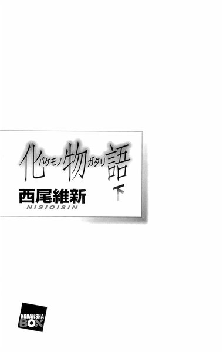
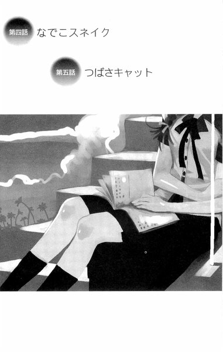
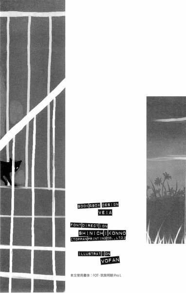
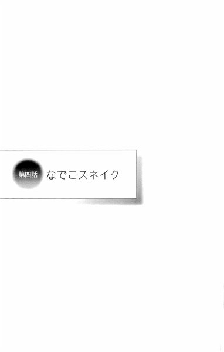
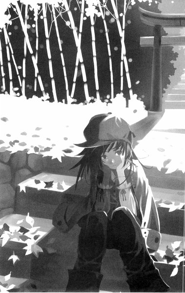
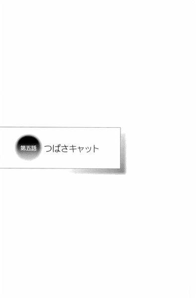
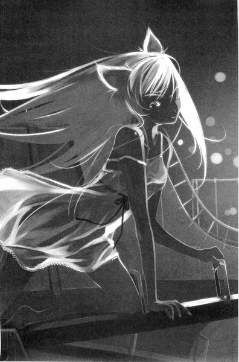
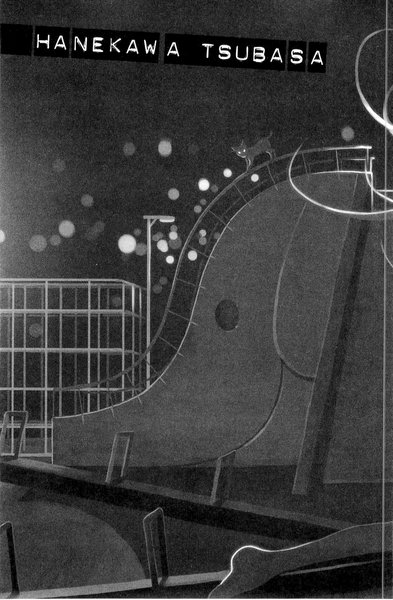

| [西尾維新] 物語シリーズ02 | |
| 西尾維新 | |
| (2015) | |
|
化物語（下）
西尾維新
|





化バケモノ物ガタリ語 下
西尾維新NISIOISIN
阿良々木暦が直面する、完全無欠の委員長・羽川翼が魅せられた「怪異」とは──!?
台湾から現れた新人イラストレーター、〝光の魔術師〟ことＶＯＦＡＮとのコンビもますます好調！西尾維新が全力で放つ、これぞ現代の怪異！怪異！怪異！
青春を、おかしくするのはつきものだ！
BOOK&BOX DESIGN VEIA
FONT DIRECTION
SHINICHIKONNO
(TOPPAN PRINTING CO.,LTD)
ILLUSTRTION
VOFAN
本文使用書体：FOT-筑紫明朝ProL
第四話 なでこスネイク
第五話 つばさキャット
第四話 なでこスネイク
００１
千石撫子は妹の同級生だった。僕には二人の妹がいて、千石撫子はその内、下の方の妹の友達だった。今現在の酷い有様と違って、小学生の頃の僕は、それなりに普通に友達のいる子供だったのだが、それでもなんと言えばいいのだろう、みんなと遊ぶのは好きだが誰かと遊ぶのは好きではないという感じで、休み時間にクラスの連中と遊ぶことはあっても、放課後にクラスの連中と遊ぶことは、滅多になかった。嫌な子供だ。語るにつけ思い出すにつけ、嫌な子供だった。語りたくも思い出したくもない。まあ、三つ子の魂百までというか、その逆と言うか、ただ単に、昔から僕はそういう奴だったと言うだけの話だ。そんなわけで、放課後は、特に習い事をしていたわけでもないのに、さっさと家に帰ることを常とする僕だったが、その帰った家に遊びに来ていたのが、千石撫子だったのである。今でこそ二人べったり、いつもいつでもいついつでもそばにいる、兄としては心配以上に気持ちの悪くなってしまうくらい仲のいい二人の妹ではあるが、小学生の頃は別々に行動することも多く、上の妹はもっぱらアウトドア派、下の妹はインドア派で、三日に一日は、下の妹は家に学校の友達を連れてきていた。千石撫子が特に妹と仲良しだったというわけではなく、たくさんいた妹の友達の中の一人だった感じなのだろう。『なのだろう』と、ここで語尾がいささか不確かになってしまうのは、正直言って僕がその頃のことをよく憶えていないからなのだが、そうは言っても、いざ思い出してみれば妹が家に連れてきた友達の中では、まだ千石撫子は印象に残っている方だ。それは何故なら、放課後、友達と遊ぶこともなく家に帰っていた僕は、妹の遊びに付き合わされることが多々あって（当時、二人の妹と僕は同室だった。僕が両親から自分ひとりの部屋が与えられたのは中学生になってからだ）、それは大抵の場合、人数合わせ、ボードゲームなどをするときの賑やかしということだったのだけれど、妹が千石撫子と遊ぶとき、僕にお呼びがかかる率が異様に高かったからである。要は、友達が多い妹が（これは今も変わらず、妹二人に共通して言えることなのだが、あの二人は人の中心に立つのが非常にうまい。兄としては非常に羨ましい限りである）、家に連れてくる同級生としては、千石撫子は珍しく、一人で行動するタイプの少女だったということだ。はっきり言って妹の友達なんて誰でも同じに見えてしまうので、必然、一人で、誰ともまぎれずにいた彼女の名前くらいは、僕の記憶にも残っていたというわけなのである。
だが、名前くらいだ。
やはりよく憶えていない。
だからこれも語尾が曖昧になってしまって申し訳ない限りなのだが、千石撫子は、内気で、言葉少なで、俯いていることが多い子供──だったと思う。思うのだが、まあ、しかし、わからない。ひょっとしたらそれは、妹の他の友達の特徴だったかもしれない。あるいは当時の僕の友達の特徴だったかもしれない。そもそも、小学生の頃の僕は、妹が家に友達を連れてくることを非常に迷惑に、鬱陶しく思っていたのだ。ましてそれにつき合わされていた相手の、印象がよいわけがないのである。今にして思えば、友達の兄貴と遊ばねばならなかった、妹の友達たちの方がいい迷惑だったのではないかと思うが、いずれにせよあくまでも昔の話で、あくまでも小学生の感性だと、そう理解して欲しい。実際、僕が中学生になってからは、下の妹も、家に友達を連れてくることは少なくなり、あったとしても、僕を遊びに誘うことはなくなった。部屋が別になったからというのもあるだろうが、もっと別の理由もあるだろう。そんなものだ。大体、妹は二人とも、中学は私立に行ったから、人間関係のほとんどは、彼女達の小学校卒業時にリセットされたはずである。千石撫子が妹の同級生だったのは小学生の頃の話で、今はもう、そうではない。別々の学校だ。だから僕が千石撫子に最後に会ったのは、どんな贔屓目に見積もっても二年以上前、そして恐らくは六年以上前──ということになる。
六年。
人間が変わってしまうには十分な時間だ。
少なくとも、僕は自分のことを、すっかり変わってしまったと認識している。昔からそういう奴だったと言っても、やはり今と昔とでは違うのだ。小学校の卒業アルバムなど、今の僕は痛々しくて、とても見ていられない。小学生の感性がどうのこうのとつまらないことも言ったが、しかし、考えてみれば、僕は今の自分があの頃の自分よりも優れ、勝っているとはとても思えない。思い出は美化されるものだとは言っても、そう、痛々しくてとても見ていられないのは小学生の頃の僕ではなくて、小学生の頃の僕から見る、今の僕ではないのだろうか。いや、恥ずかしい限りだが、たとえば今このとき、小学生の頃の自分と道でばったり出会っても、お互いに自分の正面に立っているそれが自分自身だと、気付くことはないだろう。
それが悪いことなのかどうか分からない。
過去の自分に今の自分を誇れないこと。
しかしそんなことだってある。
誰だってそうかもしれない。
だから僕は、千石撫子と再会したとき、最初、それが誰なのか、わからなかった──彼女のことを思い出すまでに、少し時間が掛かってしまった。もしも僕がすぐに、そうでなくとももっと早く、彼女のことに気付いていれば──蛇に絡まれた彼女に気付いていれば、この物語はひょっとするとあんな結末には辿り着かなかったのではないかと思うと、非常にやるせないのだが、そんな後悔は彼女に対しても怪異に対しても、きっと何の意味もない。今回の話をいきなり結末から言ってしまえば、どうやら千石撫子は、僕にとって、うろ覚えだった妹の友達から、決して忘れることのできないたった一人になってしまったと、そういうことらしい。
００２
「阿良々木先輩、待たせてしまって申し訳ない」
六月十一日、日曜日。
さすが体育会系というべきなのかどうなのか、午前十時五十五分、待ち合わせ時間のきっちり五分前に、待ち合わせ場所の、僕らの通う直江津高校正門前に、僕の一つ下の後輩、元バスケットボール部のエース、神原駿河は勢いよく駆けてきて、勢い余ってジャンプ一番、僕の頭の上を軽く跳び越してから、着地し、振り向いて、右手を胸の前に、爽やかな笑顔と共にそう言った。......僕も、高校三年生としては、そりゃそんなに背の高い方ではないと自覚しているのだけれど、自分よりもちっちゃい女の子に正面飛びで跳び越えられるような身長ではないはずだと思っていたのだが、その認識はどうやらここで改めなければならないようだった。
「いや、僕も今来たとこだよ。別に待ってない」
「なんと......私の精神に余計な負荷をかけまいと、そんなみえみえの気遣いをされるとは、やはり阿良々木先輩は、気立てのよい方だな。生まれ持った度量が違う。三歩下がって見上げない限り、私ごときには阿良々木先輩のその全貌がつかめそうもない。会って数秒でこうも私の心を打つとは、阿良々木先輩の器の大きさには本当に驚かされるばかりだ。一生分の尊敬を、私は阿良々木先輩のためだけに、どうやら費やさねばならないようだな。なんてことだろう、全く、お恨み申し上げるぞ」
「..................」
相変わらずだな、こいつは。
そしてみえみえの気遣いって言うな。
さりげない優しさには気付かない振り、だろ。
「今来たとこだってのは本当だよ。それに、たとえそうじゃなかったとしても、お前もまた待ち合わせの時間よりも先に来たんだから、僕に謝る必要なんかない」
「いや、それは聞けんな。阿良々木先輩がなんと言おうと、阿良々木先輩より先にこの場にいられなかったというだけで、私が謝る理由としては十分だ。目上の人物の時間を無駄にするというのは、許されない罪悪だと私は思っている」
「別に目上じゃないだろ」
「年上の先輩なのだから目上であっている」
「あってるけどさ......」
それは、単に歳の問題だけなんだよなあ。
あるいは身長とか（物理的に目上）。
でもそれも軽く飛び越えられるくらいのものだし。
神原駿河──直江津高校二年生。
つい先月まで、バスケットボール部のエースとして、学校一の有名人、学校一のスターとして名を馳せていた人物である。私立進学校の弱小運動部を入部一年目で全国区にまで導いたとあっては、本人の否応にかかわらず、そうならざるを得ないだろう。中途半端な落ちこぼれ三年生であるこの僕など、本来ならば口も利けない、どころか、それこそまさに影も踏めないような存在だったはずの、恐るべき下級生だ。ついこの間、左腕に怪我をしたという理由で、キャプテンの座を後輩に譲り、バスケットボール部を早期引退──そのニュースがどれだけ衝撃的に学校中に響いたか、それは記憶に新しい。古びることさえ、ないだろう。
神原の左腕には。
今も、包帯がぐるぐるに巻かれている。
「そう」
と、神原は静かに言う。
「私はこの通り、引退した身だ。バスケットボールしか取り柄のなかった私が、学校に対して貢献できることなど何もない。だから阿良々木先輩も、私をそのように扱ってもらいたい」
「扱うってな......お前ってなんか、何事に対しても自信ありげな癖に、微妙に自己評価低いところがあるよな。そういうこと言うもんじゃないよ。お前がバスケットボール部に対してやってきたことは、ちょっと早めに引退したくらいで、ぱっと消えてなくなることでもないだろうに」
早期引退したことを気に病んでいる──というわけでもないのだろうが、まあ実際、あんなことがあって、そのままの自分でいうという方が、無茶な話か。けれど、僕としては、やっぱり神原には、そんな、自分を卑下するようなことを、言って欲しくはなかった。
「ありがとう、阿良々木先輩。心遣い、痛み入るばかりだ。その気持ちだけは受け取っておく」
「言葉もきちんと受け取れ。じゃあ、まあ、行くか」
「うん」
言って、神原は素早く僕の左側に回り込み、実にナチュラルな動きで、僕の空いていた左手に、自分の右手を繋いだ。『手を繋いだ』というよりは、『指を絡めた』という感じだった。五指がそれぞれに、もつれあっている。そしてそのまま、僕の腕に自分の身体をぎゅっと、まるで抱きつくかのように、隙間なく密着させてくる。身長差の問題で、丁度僕の肘辺りに神原の胸が来て、神経が集中したその敏感な部位に、マッシュポテトのような感触が伝わってくる。
「いや、阿良々木先輩。それを言うならマシュマロのような感覚だろう」
「え!? 僕、今の馬鹿みたいなモノローグ、声に出していたのか!?」
「ああ、そうじゃないそうじゃない。安心してくれ、テレパシーで伝わってきただけだ」
「そっちの方がより問題じゃねえか！ この辺りのご近所さん、全員に聞かれているってことになるぞ！」
「ふふふ。まあ見せつけてやればいいではないか。私も最早、スキャンダルを気にする身ではなくなったわけだしな」
「にこにこ笑顔で僕と付き合っている奴っぽいこと言ってんじゃねえよこの後輩！僕が付き合っている相手はお前じゃなくて、お前の尊敬する先輩だろうが！」
戦場ヶ原ひたぎ。
僕のクラスメイト。
にして、僕の彼女。
にして──神原駿河の、慕う先輩である。
学校一の有名人、学校一のスターと、今も昔も何の取り柄もない平凡な学生との間を繋いだのは、彼女、戦場ヶ原の存在である。神原と戦場ヶ原は中学生の頃から先輩後輩の間柄で、まあ途中、色々あり、色々あって、色々あったのだけれど、今現在も、神原戦場ヶ原のヴァルハラコンビとして、仲良くやっている。神原は『尊敬する先輩の付き合っている相手』として、僕を一時期、ストーキングしていたことがあるのだ。
「大体、お前は元々、スキャンダルなんて気にしてなかっただろうが。ええい、離れろ」
「嫌だ。デートのときは手を繋ぐものだと、ものの本には書いてあったぞ」
「デート!? 一回でも言ったか、そんなこと!?」
「む？」
神原はとても意外そうに首を傾げる。
「そう言えば、言ってなかったかな。阿良々木先輩から誘いがあったというだけで舞い上がってしまい、よく話を聞いていなかったのだが」
「ああ......ずっと生返事だったもんな、お前......」
「しかし、阿良々木先輩。それはさすがにどうかと思うぞ。私もそれなりに性に開放的な方ではあるし、できる限り阿良々木先輩の意に添いたいと考えるが、デートも抜きでいきなり行為に及ぼうというのは感心できない。阿良々木先輩の将来が心配だ」
「行為には及ばないし心配にも及ばねえよ！ 高校二年生が性に開放的とか言ってんじゃねえ！」
「まあしかし、ことここに至れば仕方あるまい。気は進まないが、乗り乗りかかった船だ」
「ノリノリなんじゃねえかよ！」
ふと、神原の格好を見る。
ジーンズにＴシャツ、長袖のアウター。高級そうなスニーカー。日差しが強くなってきたということもあってか、頭には野球帽をかぶっていて、それがこのスポーツ少女にはやけに似合うが、しかしそれはまあいいとして。
「長袖長ズボンで来いって言ったのは、一応、守ってるみたいだが......」
しかし。
そのジーンズはお洒落にもあちこちが破れているものだったし、Ｔシャツは丈が短くて、神原のくびれたウエストが惜しげなく晒されていた。過激というか、なんというか......無論、日曜日にどんな格好をしようとも、それは個人個人の自由なのだけれど......。
「......本当に何も聞いていなかったんだな、お前」
「何がだ」
「僕ら、これから山に行くんだけど」
「山？ 山で行為に及ぶのか」
「及ばない」
「ふむ、なかなか野性的で悪くないな。阿良々木先輩もなかなかどうして男らしい。私も乱暴にされるのは嫌いじゃないぞ」
「及ばねえっつってんだろ！ 聞けよ！」
長袖長ズボンで来いというのは、山中で、虫やら蛇やらに対する用心だって、ちゃんと説明したはずなんだけどな......。それなのに、そんな隙間だらけの服じゃ、あまり意味がないような......。
「まあよい。阿良々木先輩が行く場所であれば、私はどこにでもついていくだけだ。阿良々木先輩についてくるなと言われようともな。たとえ火の中水の中、木の中だって金の中だって土の中だって、お構いなしだ」
「金の中っていうのは、あんまり苦しくなさそうだけどな......」
むしろ楽しそうだ。
しかし、昨日、神原の家に電話を掛けた段階でも、生返事というか、むしろそんなことばかり言って（『行き先など聞くまでもない。阿良々木先輩の向かう方向が、私にとっていつでも指針だ』とか）、僕の話を一向に聞こうとしなかったし......こいつの思い込みの激しさは、一種、感心さえしてしまうとこうがある。羽川とは違う種類の、思い込みの激しさだ。視界が狭いというか、真っ直ぐにしかものが見れないのかもしれない。
「とにかく、デートじゃないから」
「そうか、デートではないのか......私はてっきりそうだと思って、気合を入れてきたのだが」
「気合？」
「うん。何と言っても生まれて初めての、異性とのデートだからな」
「そうか、初めてのデートのつもりだったのか」
『異性との』はスルー。
突っ込みにくいから。
「どのくらい気合を入れてきたかと言えば、これまでの人生十七年間、主義として決して持たないと堅く誓っていた携帯電話を、今日のために購入したほどだ」
「............」
......重っ！
「万一、阿良々木先輩とはぐれてしまい、連絡が取れなくなっては最悪だからな。公衆電話の数もすっかり減ってしまったこの世の中、携帯電話はデートに必携のツールだろう」
「ま、まあ......そうだな。は、はは、この辺りは田舎だから、公衆電話も結構、生き残ってるけどさ......」
「更に言うと、四時起きでお弁当を作ってきた。阿良々木先輩の分と私の分、両方だ。待ち合わせが十一時だから、阿良々木先輩とお昼をご一緒することになるだろうと踏んだのだ」
言って神原は、包帯の左腕で持っていた、風呂敷包みを僕に示す。......うん、最初から気付いてはいたんだけれど、その縦に長い直方体の形は、明らかに重箱かなんかなんだよな......。
更に重っ......。
重箱だけに、重ねて重っ......！
昼時になることくらいは僕もわかっていたから、用事を済ませたら、先輩としてファーストフードくらいご馳走してやろうかと思っていたのだが、この後輩はそんな生易しい次元では物事を考えていなかった。
手作り弁当と来たか......。
予想外の攻めだ。
「敬愛する阿良々木先輩とデートということだったから、楽しみで楽しみで、あまり眠れなかった上に早く眼が覚めてしまったからな、いい手遊びになったものだが」
「はあ......手遊びねえ。でも、それ、全部弁当なのか？結構な量だな......言っとくけど、僕、そんなに食べられないぞ」
「基本的には半分ずつだが、何、阿良々木先輩が食べられない分は私が食べればいい話だ。私は食べ物を粗末にする行為が嫌いだからな、その辺りはちゃんと計算して作ってある」
「ふうん......」
僕は丸出しの、神原のへその辺りを見る。
体脂肪率十パーあるかないか、くらいか？
蝉贏少女って感じ。
するががすがる。
なんか回文っぽいな......。
なってないけど。
「お前って、神原、ひょっとして、いくら食べても太らないってタイプ？」
「うーん。というか、むしろ必死になって食べないとガンガン痩せていくタイプだな」
「そんなタイプがあるのか!?」
それって女子の間じゃ相当羨ましがられるだろう......というより、男子の僕でも羨ましいぞ、そんな体質！
「一体どうすればそんな体質になれるんだ？」
「簡単だ。まず毎朝十キロダッシュを２セット」
「わかったもういい」
そうだった。
こいつは基本的な運動量が違うのだ。
どうやら神原駿河、バスケットボール部引退後も、自主トレは欠かしていないということらしい。立派なものだ。まあ、左腕の怪我なんて言ったところで、その真実は全く違うところにあるのだから、それは当然、そうだろうが。
「はあ」
そこで神原は、大仰にため息をついた。
「でも、それもこれも、全部無駄だったのだな......なんだ、デートではなかったのか。とても楽しみにしていたのに。一人ではしゃいでしまって、まるで馬鹿みたいだ。赤っ恥とはこのことだ。身に余る夢を見てしまった。高貴な阿良々木先輩が愚かなる私ごときとデートしてくれるはずがないことくらい、考えたらわかりそうなものなのに、思い上がりも甚だしい......。私の勝手な勘違いで迷惑をかけてしまって、申し訳なかった。じゃあ、携帯電話と重箱は、荷物になるから、その辺に捨てていこう。阿良々木先輩、ちょっと待っててくれ、すぐにジャージに着替えてくるから」
「デートでした！」
僕の負け。
弱っ......。
「今日はお前とデートでした！ 神原！ 今思い出した、ああ、僕もまた、とてもとても楽しみにしていたんだ！やったあ、憧れの神原さんとデートだ！ほら、な！だから携帯と重箱はそのまま持っていろ！着替えて来なくてもいい！」
「本当か？」
ぱあっと表情を輝かせる神原。
やべえ、超可愛い。
「嬉しいぞ。阿良々木先輩はとても優しいな」
「ああ......この優しさがいつか身を滅ぼす気がしてしょうがないけどな......」
............。
彼女である戦場ヶ原よりも先に、その後輩の神原とデートをすることになってしまった......。あのツンデレ女にしては珍しいことに、戦場ヶ原は神原には異様に甘いから、これが浮気扱いされるということはないだろうが、これは意志薄弱の謗りをまぬがれないよなあ......。
ちなみに、そんな話をしている間も、手は繋ぎっぱなし、指は絡まりっぱなしである。さりげなく振りほどこうと試みたのだが、スクラムのようにがっちり組みあっていて、びくともしない。なんだか知恵の輪みたいというか、関節技でも極められている気分だ。
蛇に絡まれてる感じ。
「けど、神原。一応、そのアウターの前は閉じとけ。山に入るのにへそ出しっぱなしってのはいかさままずいだろ。クラッシュジーンズは──まあ、気をつけりゃ大丈夫なレベルか」
「ふむ。では仰せの通りに」
言われるがままに、上着のボタンを閉じる神原だった。くびれたウエストが見えなくなる。ちょっとばかり残念な気がしなくもないが、そういった邪な感情は彼女の後輩に対して向けるべきものではないはずだ。
「じゃあ、行こうか」
「阿良々木先輩、そう言えば今日は徒歩なのか？」
「ああ。向かう場所が山だからな。どこに駐輪場があるかもわからねえし。一台しかない自転車を盗られちゃ敵わない」
外出用のマウンテンバイクは、木っ端微塵にされてしまったからな......誰かさんの『左腕』によって。まあ、嫌みったらしくなってはいけないから、いちいちそんなことは言わないけれど。
「それに、そんな遠出ってわけでもないしな。ほら、神原、もうこっからでも見えるだろ？あの山だよ──」
と言いながら、僕はふと、思い出す。先月、神原と会話をするようになって間もない頃、神原は戦場ヶ原を慕うあまり、その彼氏と身体が接触することを嫌い、僕の自転車の後部座席に乗ることを辞して、自転車の横を伴走するという常識的観念からすればびっくりするような選択をしたことがあった。......そんな彼女は、今、僕と手を繋いで、指を絡めて、胸をぐいぐい押し付けてきている......。
「ふふふ」
神原は無邪気ににこにことはにかんで、スキップするような足取りだった。
「阿良々木先輩、阿良々木先輩、阿良々木先輩、阿良々木先輩、阿良々木先輩～～～」
「..................」
なつかれちゃったなあ、おい！
鼻歌交じりだよ！
「ところで、お前さ......神原。前から言おうと思ってたんだけど、その、阿良々木先輩っての、やめないか？」
「え？」
想定外のことを言われた感じに、きょとんとする神原。
「どうしてだ？ 阿良々木先輩は阿良々木先輩だろう。阿良々木先輩を阿良々木先輩以外の呼称で呼ぶなど、考えられない」
「いや、それ以外にも色々あるだろ」
「気仙沼先輩とかか？」
「名前の方を変えるな」
そっちじゃねえ。
誰だよ、気仙沼。
「僕が言ってるのは『先輩』って呼称の方だ。なんだか畏まってる感じじゃん」
「そう言ってくれるな。事実、畏まっているのだ」
「うーん。そりゃ、まあ、確かに僕はお前の先輩だけどさ。でも、なんだか生真面目過ぎるっていうかさ。『阿良々木先輩』って、フルネームよりも長くなっちゃってるし」
僕のフルネームは阿良々木暦。
あららぎこよみ。
七文字。
『阿良々木先輩』は八文字だ。
「ふうむ。となると、『阿良々木さん』とでもすればよいのか？」
「まあ、そうなるのかな？ でも、一個くらいの年齢差なんだから、そんな改まらなくてもいいと思うんだよ。いちいち堅苦しいだろ？つーか、僕、『さん付け』ってなんか落ち着かないんだよな。僕をそんな風に呼ぶ小学生がいるけど、あいつは言葉遣いそのものが馬鹿丁寧だからな」
性格は最悪だが。
ああ、そういや最近見てないな、八九寺の奴。
............。
ちょっと寂しい。
「戦場ヶ原のことで色々あったけどさ、僕としてはお前とはもうちょっと対等な関係でいたいと思ってんだよ、神原」
「なるほど。嬉しいお言葉だ」
「まあ、学校一のスターのお前相手じゃ、僕の方で釣り合いが取れないかもしれないけど」
「馬鹿な、そんなことなどありえない。阿良々木先輩とこうしていられる幸福を、私は何よりかけがえのないものだと考えている。戦場ヶ原先輩と和解できたことと同じくらい、阿良々木先輩と知り合えてよかったと考えている。私が阿良々木先輩に対し不満に思っていることがあるとすれば、それはどうして私ともっと早く出会ってくれなかったのかということだけだ」
「......そっか」
本当に自己評価の低い奴だ。
ま、先月聞いた話を思えば、わからなくもない。
こいつにも、色々あるのだ。
「では、阿良々木先輩、察するに、私は阿良々木先輩のことを、もう少し親しげな風な呼び方をしてもいいということなのかな？」
「ああ。何とでも呼んでくれ」
「では、暦」
「..................」
............。
僕のことをそう呼ぶのは両親だけだ......！
「暦も私のことは、駿河と呼んでくれていいぞ」
「だからなんでお前はそんなに僕と付き合っている奴っぽいんだよ！そんな重要イベントをどうして彼女の後輩と迎えてるんだ、この僕は！戦場ヶ原だって僕のことはまだ『阿良々木くん』って呼んでんだぜ!?どんな一足飛ばしだよ！」
「暦は突っ込みが激しいな。今のはわざと、つまりボケに決まっているではないか、暦」
「それにしては呼称が直ってねえぞ駿河！」
「『駆け抜ける迅雷の騎士』暦」
「お祖父ちゃんにつけてもらった僕の名前に勝手なキャッチコピーを冠するな！駆け抜けもしねえし迅雷でもねえし騎士でもねえよ！そもそもそれじゃフルネームの三倍くらい長くなってんじゃねえか！当初の目的を見失うな！」
「『今世紀最後の英雄』暦」
「今世紀最後!? 結論はやっ！」
「まあ、そうでなくとも、私は年上の先輩を呼び捨てにすることなど、とてもできない。だから『暦』は却下だ。当然、『阿良々木』も却下」
神原は言う。
「というわけで、キャッチコピーならぬニックネームというのはどうだろう」
「ニックネームか......」
神原のセンスは、どっかずれているからな......。
ずれているというか、外れているというか。
想像するに、恐らくはロクなニックネームをつけられそうもないのだが、でもまあ、そうは言ってもものは試しである。僕は神原に、
「じゃあとりあえず、何か考えてみてくれよ」と言った。
「うん」
神原は少し目を閉じ、思案する素振りを見せる。そして数秒、ぱっと顔をあげ、
「思いついたぞ」
と言った。
「おお。早いな。言ってみろ」
「ラギ」
「予想に反して格好いい！ 無駄に！」
そして格好良過ぎて名前負けで、なんだか嫌がらせを受けているみたいだ......。ちょっとトンガリ過ぎというか、日本の高校三年生につけるようなニックネームじゃないよな......。
「『あららぎ』の下の方を取って、ラギなのだ」
「そりゃわかるけどさ......ニックネームなんだから、もうちょっと愛嬌がある方がいいんじゃないのか？」
「それもそうだ。となると、『あららぎこよみ』の真ん中の方を取って......」
「取って？」
「らぎ子」
「それは明らかに嫌がらせだな！」
「そう言ったものじゃないぞ、らぎ子ちゃん」
「お前はもう帰れ！ お前に用なんかねえよ！」
「らぎ子ちゃんが私を苛める......ふふふ、だが苛められるのは嫌いじゃない」
「くっ！ マゾ相手に罵倒は通じない！ひょっとしてこいつは最強か!?」
楽しい会話だった。
ちょっと楽し過ぎるくらい。
何をしている最中なのか忘れそうだ。
「こういうこと言っちゃ不謹慎なんだろうけどさ......神原。さっきお前が言った台詞じゃないけれど、僕、戦場ヶ原と付き合う前にお前と出会ってたら、案外お前と付き合っていたんじゃないかと思うよ......」
「うん。実は私も、そう思っていた。戦場ヶ原先輩に惹かれる前に阿良々木先輩と出会っていたら、とな。異性に対してこんな気持ちになることは、私にしてはとても珍しい」
「はあ......」
まあ、戦場ヶ原がいなければ僕は神原と知り合うことはなかったし、それは神原の方にしても同じなので、ありえない仮定なのだけれど。
「どうだ、阿良々木先輩。いっそのこと、あの邪魔な女を二人で殺して埋めてしまおうか」
「怖いこと言ってんじゃねえよ！」
これだけ言葉を交わしているのにお前のキャラがいつまでたってもつかみきれねえよ！計り知れねえ！どれだけ深い奴なんだ、神原駿河！
「戦場ヶ原はお前にとって尊敬している先輩なんだろうが......ったく、意外と腹黒い奴なんだな、お前は」
「あまり褒めるな。照れてしまう」
「褒めてねえ」
「阿良々木先輩には何を言われても嬉しいのだ」
「このマゾ女......」
「マゾ女。いいな。もっと言ってくれ」
「............」
中学時代の戦場ヶ原を信奉していた彼女が、現在の戦場ヶ原の本性に触れ、うまくやっていけるものなのかどうか僕は密かに心配していたのだが、その特殊な感性がある限り、いらぬ心配は無用のようだった。
ともあれ、神原駿河。
彼女は、実は百合である。
ここまでのやり取りでわかる通り、先輩として慕っているだけではなく、戦場ヶ原ひたぎのことを、心の底から愛している。言ってしまえば、そう、神原と僕とは恋敵の関係にあるのだった──それなのにこうして、僕と腕を組んで歩いているというのだから、わからない。まあ大方、先月末のことで、僕に対して負い目があるというか、僕に対して恩義を感じてしまっているというか、そんなところなんだろうけれど......。
後輩になつかれるのは、先輩としては気分悪くはないが、でも、それが誤解の産物だというのは、少し居心地が悪い。
忍野の言葉を借りれば──戦場ヶ原同様。
神原もまた、一人で勝手に助かっただけなのに──
「..................」
まあ、しかし、そうだな。
恩義や誤解云々はともかく、神原の中で過度によくなってしまっている僕のイメージを、ある程度調整しておく必要はあるかもしれない。イメージを崩しておくというのか......、あんまりいい印象持たれ過ぎていると、いざなにかあったとき、必要以上に失望させちゃうことになるし。
というわけで、阿良々木暦イメージ悪化計画。
その一。
金にだらしのない男。
「神原、財布を忘れてしまった。すぐに返すから、お金を貸してくれないか」
「わかった。三万円くらいでいいか？」
お金持ちでした！
うーん、時間にだらしのない男......は、待ち合わせに僕が先んじて来ていた以上説得力がないだろうから......。
阿良々木暦イメージ悪化計画その二。
やたらとエロい男。
「神原、僕は今、女性の下着に興味があるんだ」
「ほう、奇遇だな、私もだ。女性の下着は芸術品だと、私は思っている。なんだ、話が合うではないか、阿良々木先輩」
話が合っちゃった！
そうだよ、僕がエロさで神原に敵うわけがないじゃないか......いや待て！普通のエロでは無理でも、それが特殊なエロならば僕にも勝機があるはず......！
「特に興味があるのは小学生の下着なんだ！」
「益々話が合うな！ さすがは阿良々木先輩！世間の荒波何するものぞ、素晴らしい生き様だ！」
「評価が上がっちゃったー！」
なんでだよ。
えーっと、じゃあ、阿良々木暦イメージ悪化計画その三（もう既に面白くなってきたので当初の目的は見失っている僕）。
誇大妄想的な夢を語る男。
「神原、僕は将来ビッグになる男だぜ！」
「言われなくとも知っている。というより、既に阿良々木先輩は途方もなくビッグではないか。それ以上大きくなられては、そばでお仕えするのも一苦労だな」
「くっ......！」
いや、この程度は予想範囲内！
更に続けるぜ！
「僕はミュージシャンになる！」
「そうか。ならば私は楽器になろう」
「意味はわからねえけどなんだか格好いい！」
僕の中での神原の評価が上がった。
だから、なんでだよ。
「阿良々木先輩、さっきから何を言っているのだ？わざわざそんな風に言い聞かせてくれずとも、私は阿良々木先輩のことを既にこれ以上なく敬愛しているぞ？」
「ああ、どうやらお前には何を言っても無駄なようだな......」
僕に何を言われても嬉しいのと同様、僕がどんな人間であってもとにかく敬愛するつもりらしい。
「しかしわからない。どうしてお前はそこまで僕のことを過大評価するんだ」
「何を言うかと思えば」
と、神原は笑う。
「これまで私は、愚問とは『グッドモーニング』の略かと思っていたが、どうやらそういう質問のことを言うらしいな」
「..................」
一瞬格好いい台詞かとおもったが、よく聞いてみるとその台詞はただの馬鹿だな。
「私はこの生涯を、阿良々木先輩に捧げると誓ったのだ。戦場ヶ原先輩との仲を取り持ってくれたからというのではない。阿良々木先輩がそうするに値する人だと思うから、そう誓ったのだ」
「誓った、か......」
「ああ。常に人々を照らし、恵みを与え続けるあの太陽に誓おうと思ったが、そう思ったのが夜だったので、とりあえずその辺の街灯に誓っておいた」
「適当極まりねえ！」
「街灯だって人々を照らし、恵みを与え続けているではないか。街灯がなかったら大変だぞ？」
「そりゃそうだけど......」
せめて月に誓えよ。
曇っていたのか？
「まあ、生涯を阿良々木先輩に捧げるなどとだいそれたこと、私には約不足かもしれんがな」
「その言葉の誤用は今となっては指摘する方が照れてしまう類のものなんだが、しかし漢字まで間違っているというケースは珍しいな......」
うーん。
阿良々木暦イメージ悪化計画、頓挫！
「......ふむ」
阿良々木暦。
神原駿河。
そう言えば、この二人には、戦場ヶ原のことを外したところで、共通項がある。
それは二人とも、人間ではないということだ。
いや、そうは言っても、勿論、ほとんどの部位は、人間である。ただ──
阿良々木暦は血液が。
神原駿河は左腕が。
それぞれ、人間ではない。
僕の血液は少なからず鬼のそれだし──神原の左腕はまるごと、猿のそれである。僕が襟足を伸ばして、首筋にある吸血鬼の牙の痕跡を隠しているのと同様に、神原は猿の左腕を、包帯によって隠しているというわけだ。輝かしいエースだった神原が、部活を早期引退しなくてはならなかった真の理由はそれである。当然だ、猿の腕のままで、バスケットボールなど、できるわけもない。
僕も神原も、怪異に関わってしまった者なのだ。
......怪異というなら、僕の彼女にして神原の先輩、戦場ヶ原ひたぎもまた、同じように怪異に関わっている。
僕は鬼。
神原は猿。
戦場ヶ原は、蟹だった。
だが、戦場ヶ原と、僕と神原との違いは決定的だ──戦場ヶ原は二年以上の間、怪異と対立し続けて、ついに、その怪異を祓い、人間に還った。僕と神原は、怪異を祓いこそしたものの──人間でない部分が、体内に残ってしまっている。言うなら僕らの場合、僕達自身が怪異みたいなものなのだ──怪異にかかわって、怪異になってしまったようなものなのだ。
それは。
あまりにどうしようもない、共通項だ。
「ん？ どうした？ 阿良々木先輩」
「え......いや、別に」
「そんな暗い顔をしていては、折角のデートが台無しだぞ」
「デートって......いや、もういいけど」
「ところで、阿良々木先輩。さっきは聞きそびれてしまったのだが、山に行って、それからどうするのだろう。行為に及ぶ以外に、山でやることなどあるのか？」
「それを本気で言っているんだとしたら、お前はワンダーフォーゲル部にだけは入っちゃいけない奴だな......つーか、お前、山にあんまり馴染みとかないのか？」
「中学生の頃、クロスカントリーもどきということで、山中ダッシュを部活のトレーニングに盛り込んだことはあったな。捻挫する者が出てしまい、中止に追い込まれたが」
「はあん」
お前にとっちゃ山もトレーニングの舞台か。
まあ、こいつをバスケットボール部のエースにせしめたのは、技術云々というよりも、僕の背丈を軽く飛び越せてしまうような、その圧倒的な脚力だからな。
「そういう阿良々木先輩は、どうなのだろう、山に馴染みがある人なのか？」
「いや、特にそういうわけでは......」
「しかし男子は子供の頃、カブトムシやらクワガタやら、取りに行くものだろう」
「クワガタねえ」
「うむ。黒いタイヤだ」
「タイヤは普通黒いだろう......」
しかもそんなものが山で採れるか。
それはもう、ただの不法投棄だ。
「まあ、いずれにせよ、デートで行くような場所じゃないのかもな──季節も季節だし。昨日も、一通り説明したつもりだったんだけど、ほら、忍野からの仕事だよ」
「忍野？ ああ、忍野さんか」
そう聞くと、神原が複雑な顔をした。この後輩にしては珍しい反応だが、まあ、さもありなんという感じだ。
忍野メメ。
僕にせよ神原にせよ戦場ヶ原にせよ──全員、その男に助けられた。いや、助けられたなんて言い方を、やっぱり忍野は許さないだろう。一人で勝手に助かったと、それはあくまでも、そう言うしかないのだ。
怪異の専門家にして根無し草の放浪者。
趣味の悪いアロハに軽薄な性格。
大人として尊敬のできる相手では決してないが、それにしても、僕らがあいつに世話になったことは、揺るぎのない事実である。
「ああ。あの山の中に、今はもう使われていない小さな神社があるそうなんだけど、そこの本殿に、お札を一枚、貼ってきてくれ──っていう、そういう仕事」
「......なんだそれは」
不思議そうに聞き返してくる神原。
「お札というのも不可解だが、しかし、そんなの、忍野さんが自分でやればいいのではないのか？あの人は基本的に暇なのだろう？」
「僕もそう思うけど、まあ、『仕事』だよ。僕はあいつに世話になったとき、洒落にならないような多額の借金をしちまってるからな。......お前だってそうなんだぜ？神原」
「え？」
「お前のときはなんだか有耶無耶になっちゃってるけど、あいつはあれでもれっきとした専門家なんだから。ロハで力を貸してくれるほど甘くはないさ。世話になった分は、働いて返さなきゃ」
「ああ、それで──」
神原は得心いった風に頷く。
僕はそんな神原の言葉を「そう」と、継いだ。
「だから、僕はお前を呼び出したってわけ。昨日、忍に血ィ飲ませに行ったとき、忍野に頼まれてな。お前も一緒に連れて行くよう、忍野から言われたんだ」
「そう言えば、忍野さんは執拗なほど、『力を貸す』というような言い方をしていたな......ふむ。なるほど、借りたものは返さなければならないというわけか」
「そういうこと」
「わかった。そういうことならば是非もない」
神原はぎゅうっと、より強く、僕の腕に抱きついてきた。その行為の意味は複雑そうで推し量ることができないが、どうやら、何かを決意したらしい。まあ、そういう意味では、貸し借りとかに関しては、神原駿河、とても義理堅そうな性格をしているようだしな。
「しかし、あの山なら何度か近くを通ったことがあるが、神社があるとは知らなかった」
「僕も知らなかったよ......もう使われていないとは言え、そこにあることくらいは知っててもよさそうなものなのに。なんであいつ、地元の人間が知らないようなスポットを知ってんだろうな。今あいつが住み着いてる、学習塾跡にしたってそうなんだけど」
怪異と言うより、案外、廃墟に詳しい奴なのかもしれない。しかしまあ、公衆電話のこともそうだけれど、そんな神社やら学習塾やらの廃墟が、変な奴らのたまり場になったりしないところが、果てしなく田舎町だよなあと、僕は思う。......学習塾の方に関しては、忍野と忍が住み着いちゃってる段階で、変な奴らのたまり場になっていると言えなくはないのだが......。
「しかし──そういう言なら、戦場ヶ原先輩もまた、今日は一緒に来なければならなかったのではないのか？阿良々木先輩。戦場ヶ原先輩も確か、忍野さんの世話に──」
「戦場ヶ原はその辺如才ないからな、もう借金は返済済みだよ。あのとき、お前の目の前で、僕、忍野に十万円渡してたろ？あれだ」
「ああ、そう言われてみれば、そんなことを言っていたような気もするな。なるほど、あれはそういう意味だったのか......ふうむ。さすがは戦場ヶ原先輩だ」
「あいつは義理堅いとか言うより、他人に借りを作ることをよしとはしないって感じだけどな。自分一人で生きてるような奴だから」
「阿良々木先輩、今日のことについて、戦場ヶ原先輩は何か言っていたのか？」
「んー？ いや、別に。気をつけてねの一言もなかった」
本当になかった。
名目上、戦場ヶ原の後輩を連れ出す形になるから、一応、神原を誘う前に戦場ヶ原に話は通しておいたのだが、あの女、実にそっけないものだった。そんな些細なことで私の気を煩わせないでと言った感じだった。お前がそんなんだから、僕はお前とデートするよりも先にお前の後輩とデートする羽目になってんじゃねえのかよと、思わず自分の意志の弱さを棚に上げた恨み言を言いたくなってしまう。
「神原、お前には何か言ってたか？」
「んー。目一杯可愛がってもらってきなさいと言われた」
「..................」
本当に神原に甘いんだな、あいつ。
ツンデレとか言って、なんで彼氏にデレないで後輩にデレてんだよ。
「こうも言われた。『阿良々木くんから粗相を受けたら、隠し立てすることなく私に逐一報告なさい。あの男に、山に埋められるか海に沈められるか、嫌いな方を選ばせてあげる』」
「嫌いな方を選ばせるんだ！」
容赦ねえ。
まあ──しかし。
それは、そうは言っても、戦場ヶ原ひたぎにとっては、決して悪い傾向ではないはずだ。高校入学前に怪異とかかわり、全てを捨て、全てを諦めたかに見えた戦場ヶ原にとって──それは原状回復なのだから。自分一人で生きているような奴が──他人と触れ合うことを覚えるのが、悪いことであるはずがない。
僕としても望むところだ。
人間の彼女は──それでいい。
「ああ、そうだ、神原。戦場ヶ原の話で思い出したけど、あいつ、もうすぐ誕生日だろ」
「うん。七月七日だ」
「......やっぱ当然のように押さえてるんだな」
「愛する人のことだからな」
「で、それにあたって、お願いがあるんだけど」
「何でも言ってくれ。もとよりこの身体は阿良々木先輩のものだ。いちいち断りなど入れず、思うがままに使ってくれればそれでよい」
「いや、そんな大袈裟なもんじゃなくってさ、まあほら、アニバーサリーってことで、あいつの誕生日を祝ってやろうと思うんだが。でも、僕は長らくそういうイベントからは離れていたからな、どうにも勝手がわからない。そこで神原、お前に協力してもらおうと思って」
「なるほど。脱げばいいのか？」
「そういうイベントじゃねえことくらいは僕にも分かるよ！僕の彼女の大事な誕生日をどんな日にするつもりなんだお前は！」
「む。勇み足だったか」
「どんなに時機を見てもその足を踏み出す機会はねえよ、一生引っ込めてろ。だからまあ、色々、セッティングとか、プランニングとか、そういうのを手伝ってくれれば嬉しいと思ってさ。ブランクがあるとは言え、戦場ヶ原のことについてはお前の方が詳しいだろ、それだけだ」
「ふうむ。しかしどうだろう、阿良々木先輩、付き合って最初の誕生日なのだから、そこはそれ、ムードを作って二人きりで過ごすべきなのではないのか？私の手助けなど、この場合は余計なだけだと思うが」
「余計なだけ？」
「うん。小さな親切大きなお世話というか、ただの迷惑だな」
「あー。僕としてもそれは考えたんだけどさ、まあでも、最初の一回は、賑やかな方がいいと思ってさ。忍野やら忍やら、あと知り合いの小学生やらも、呼べるものなら呼んでやって、軽く誕生日パーティーでも開いてやりたいなって──」
このアイディアの問題点は、戦場ヶ原が忍野や忍や八九寺のことを嫌いだというところなのだが、そこは力業で何とかするしかない。嫌いでも嫌だといえない状況を作り出すことに腐心する必要があるだろう。
「まあ──阿良々木先輩がいいなら、それでいいが」
「なんだよ、歯切れ悪いな」
「いや、言わせてもらえるなら、阿良々木先輩のそのご意志気遣いは立派だと思うのだが、戦場ヶ原先輩としては、阿良々木先輩と二人で過ごしたいんじゃないかと思うのでな」
「そんな殊勝な女か？ あいつが」
未だデートもしてくれないんだぞ。
結構露骨に誘ってるのに。
神原のことだったり、その後の実力テストだったりで、それどころじゃなかったっていうのもあるんだけれど。
身持ち堅いんだよなあ、あいつ。
「ていうか、お前、結構普通に、僕と戦場ヶ原のこととか、考えてくれるんだな。戦場ヶ原のことに関しちゃ、僕とお前って、恋敵なのに」
「いや、それは確かにそうなのだが......しかし、今現在の私は、阿良々木先輩と付き合っている戦場ヶ原先輩が好きだという感じだからな......、そして戦場ヶ原先輩の恋人である阿良々木先輩のことも同じくらい好きなのだ」
「............」
今、何気に告られなかったか？
やばい、ちょっとどきどきしてきた。
腕を通して心臓の鼓動が伝わりそう。
なんて簡単なんだ、僕は。
「......お前、戦場ヶ原の影響、ちょっと強過ぎだぞ。太陽に誓ったのか街灯に誓ったのか知らないけれど、戦場ヶ原の彼氏だからってだけで、僕のことをそんな好意的に見る必要なんかないんだ。戦場ヶ原が好きな奴のことを、お前も同じように好きになる必要なんか──」
「違う。そういうことではない」
やけにはっきり言う神原。
その剣幕に少し気圧される。
相手が先輩であろうと目上であろうと言うべきことははっきり言う。
「じゃあ、お前、ひょっとして、やっぱ先月のこと、引き摺ってんのか？僕はあんなの全然気にしないって......ほら、よく言うじゃんか、罪を憎んで尻を隠さず──」
「そういうことでも──ない」
神原は言った。
僕の言い間違いをさらっと無視して。
「阿良々木先輩のそういった水で割ったような性格には、私は随分救われているが、しかし、そういうことでも、ないのだ」
「水で割ったような性格って......」
薄そうな奴だなあ。
しかし、間違ってない気もする。
簡単だし。
「いいか、阿良々木先輩。よく聞くのだ。私は阿良々木先輩をストーキングしていたのだぞ」
「............」
堂々と言うな。
諭すみたいにそんなこと言うな。
「だから──阿良々木先輩がどういう人間なのか、私はよく知っているつもりだ。そうするに値する人だと、私は本当に思っているのだ。戦場ヶ原先輩の彼氏でなくとも、先月のことがなくっても、どんな形で出会っていても──私は阿良々木先輩を、尊敬に値する人物だと看做していたはずだぞ。それは私の脚にかけて、保証する」
「......そっか」
まあ、だから。
神原と僕が、こんな形以外で出会う可能性を探ること自体、馬鹿馬鹿しい、ありえない仮定なんだけれど......。
それでも。
「脚にかけられちゃ──しょうがないな」
「そう......私は阿良々木先輩のことを、たとえ忍野さんに頼まれた仕事だと称して私を人気のない山中に連れ込み、無理矢理に欲望のたけをぶつけられたとしても、それを笑顔で許せるくらい、尊敬している」
「そんな尊敬はいらねえ！」
そして『称して』って何だ！
全然信用してないってことじゃねえか！
「え......？ あれ、ひょっとして阿良々木先輩、本気で何の行為にも及ばないつもりなのか？」
「何だそのさも意外そうな反応！」
「それとも、さては阿良々木先輩は女性の方から誘わせるつもりなのか？ははーん、そして戦場ヶ原先輩に対しては『誘われたのだから浮気ではない』と言い張るつもりなのか」
「わかった、さては神原、お前はあれだ、そうやって僕と戦場ヶ原との関係を破局に追い込もうと企んでいるんだな！身体を張った妨害作戦なんだな！」
「バレたか」
「てへって感じに舌出してんじゃねえ！ えらく愛らしいじゃねえか馬鹿野郎！」
本当に腹黒い奴だ。
いや、まあ、冗談なんだろうけど。
......冗談なんだよな？
「しかし、誕生日と言えば、阿良々木先輩。この前、戦場ヶ原先輩が蟹に取り憑かれていたという話を聞いたときは、私は少しばかり暗示的だと思ったものだぞ」
「まあ、取り憑かれていたっていう言い方ちょっと違うかもしれないんだけど......うん？暗示的？蟹のどこが暗示的なんだ？誕生日なんか関係ないだろ」
「ほら、だって、戦場ヶ原先輩、かに座だろう？」
「え？」
七月七日。
だよな。
「何言ってんだ。七月七日生まれはふたご座だろ」
「え？ いや......その、違うと思うけれど」
「あれ？ じゃあ、僕の思い違いか？ 七月七日って聞いたとき、すぐに、ああじゃあこいつ、ふたご座なんだって思ったんだけど......」
こんな奴が双子で性格もそっくりだったら嫌だなあと思ったから、よく憶えている。
「まあ、僕も星座の細かい日付まで、憶えているわけじゃ......いや、でも、かに座って、確か、七月二十三日からじゃなかったけな」
「あ」
神原が何かに気付いたようだった。
「......阿良々木先輩。ここで一つクイズだ」
「なんだよ」
「十二月一日生まれの人間は、何座だ？」
「はあ？」
なんだそれ。
クイズじゃないじゃん。
「それくらいわかるよ。へびつかい座だろ？」
「ふはっ！」
神原駿河が爆笑した。
「は......はははは、あはは！」
膝が震えるくらい、立ってくれないくらいにツボに嵌ったらしく、僕の腕に、最早すがりついてくるかのような有様だった。胸を肘に押し当ててくる形から、胸の谷間に僕の二の腕を挟み込むような形になったが、そんな降ってわいたような幸せを享受するためには、神原の不愉快な笑い声が非常に邪魔だった。
「な、何がおかしいんだ......僕はそこまで取り返しのつかない失敗をしたのか」
「へ、へびつかい座......ふ、ふははは、今時、へびつかい座......あはは、じゅ、十三星座で、十三星座で考えてる......」
「...............」
ああ。
そういうことね。
そうか、わかった、十二星座では、七月七日はかに座なんだな......。
「あー、笑った笑った。五年分くらい笑った」
神原はようやく、顔を起こした。涙目である。気持ちはわからないでもないが、いくらなんでも笑い過ぎだ。
「さ、じゃあ行くぞ、らぎ子ちゃん」
「扱いがあからさまに雑になってる！ 先輩に対する尊敬がどっか遠くに行っちまった！こうなると割と傷つく！」
「あ、ああ。間違えた。阿良々木先輩」
「あんだけ笑かしてやったんだ、フォロー入れろよ」
「フォローと言われても......あそこまで堂々と言われてはフォローのしようがないぞ。そもそも、どうして十三星座なのだ」
「そんなこと訊かれても......だいぶん前に十二星座から十三星座に移行したんじゃなかったのか？」
「移行したが普及しなくて廃れたのだ。阿良々木先輩ともあろうお人が、どうしてそんなことを知らない」
「うーん......。その頃から星座占いに興味がなくなったから、かな......」
そうか......。
普及しなかったのか......。
「怪異と一緒だな。どんな恐ろしい魑魅魍魎でも、人口に膾炙しなけりゃ、それは最初からいなかったことになるわけだ」
「いや、そんな深い話ではないと思うが......」
「へびつかい座って、そもそも何なんだろうな」
「夏の星座で、α星はラス・アルハゲだ。あらゆる恒星中最大の固有運動を持つバーナード星を、その星座の中に持つことで有名だな」
「いや、星自体じゃなくて......へびつかい座って、どういう由来なんだろうなって話。笛吹いて蛇を操ってる奴の星座なのかな？」
「確かあれは、ギリシャ神話の、アスクレピウスという医聖の姿を表わしたものだったと思うぞ。そのアスクレピウスが蛇を握っているから、へびつかい座だ」
「へえ」
頷く僕。
全く知らなかった。
「しかし、神原、星自体の知識にしろ星座の由来にしろ、そんなこと、よく知ってるな。ひょっとしてお前、星とか詳しいのか？」
「らしくないか？」
「まあ、正直」
「ふむ。確かに詳しいというほどではないが、夜空を眺めるのは好きだな。簡易的なものでよければ、天体望遠鏡も持っている。年に二度は、他県の天文台で開かれている、天体観測のイベントに参加するぞ」
「へえ。プラネタリウムじゃねえんだな。知識よりは実践って感じか」
「プラネタリウムも好きだが、あの施設には流れ星がないだろう？恒星や星座もいいのだが、私ははかない流れ星が好きなのだ」
「なるほど。ロマンチックだ」
「うん。地球もその内流れ星になればよいと思う」
「そのとき僕ら人類は無事で済むのか!?」
とんでもねえこと考えてやがる。
ロマンスからは程遠い。
それではパニックムービーだ。
「......とかなんとか言ってる間に、目的地に到着したぞ。忍野の言うことにゃ、その辺から階段があるらしいんだが──ああ、あったあった。......まあ、ただの獣道に見えなくもないけれど──」
道路沿いにある山。
山の名前は知らない。
忍野も知らないとのことだった。
山の間を縫うように道路が作られていると見るべきなのだろうが、歩道の脇から、山の頂上へ向かって、階段──少なくとも昔は階段があったらしい痕跡が見て取れる。いや、今も一応、階段は階段だ。だけど、さっきの神原の話じゃないが、我が校の運動部の連中がこの辺りまでジョギングに来ているという話は聞いたことがあるが、しかし、この階段を昇って山中に入っているということは、なさそうである。草木がぼうぼうで、あらかじめ言われていなければ、これが階段であるとは、とても気付けそうもない。かつて階段であったとも、やはり思わないだろう。
獣道。
ん、いや──よく見れば、草が踏み潰されているような跡がある。足跡だ。なるほど、この階段、全く誰も使っていないというわけではないのか。だけど、だとしたらこれは、どんな人間の足跡なのだろう？確か忍野は、その神社には近付いてもいないと言っていたから、この足跡は忍野のものじゃないはずだ。神社は既に廃れてしまっていると言っていたから、そこの関係者ということでもないだろう......。
変な奴らのたまり場になっている。
ことはないはずだけど。
「............」
僕の左腕に付着している神原を見る。
こいつはこの通り、やけにガードの甘い、その癖可愛らしい女の子だからな......大丈夫だろうか。変な奴らと言うのが、文字通り変な奴らだった場合......僕一人にできることには限界がある。鬼の血が体内に残っているとは言っても、その血は僕の場合、基本的には新陳代謝や回復力の方面にしか働かないのだ。
「ばるかん後輩」
「なんだ、らぎ子ちゃん」
「その左腕──どんな調子だ？」
「うん？ どういう意味だ？」
「いや、何か変わったことはないかと思って」
「特にない」
特にない──か。
まあ、何気に重そうなその風呂敷包み、ちっとも持ち替えることなく、左手で持ち続けているし......。
じゃあ、心配いらないのかな......元々の基礎体力に加えて、猿の左腕のパワーがプラスされている、それが今の神原のデフォルトの状態であるのだとすれば......。
「ああ。左腕一本で阿良々木先輩をベッドに押し倒せるくらい、力は有り余っているぞ」
「押し倒す場所がベッドである必要をいまいち感じないんだが」
「じゃあ、阿良々木先輩を左手一本でお姫様だっこできるくらい、だ」
「片手でやったらお姫様だっこじゃなくて、むしろ町娘を攫う山賊っぽいぞ......いや、それならまあいいや」
「ふふふ」
すると、なんだかいやらしい感じに神原は笑う。
なんだか嬉しそうだ。
「阿良々木先輩は本当に優しいなあ......こんな私のことを本当に心配してくれている。ああもう、阿良々木先輩には心身の全てを委ねても安心していられるなあ......」
「頬を赤らめて感慨深そうに言うな。お前はサトリの妖怪かよ。焚き火を起こすぞこの野郎。人の心をぽんぽんぽんぽん、気軽に読みやがって」
「これでもバスケットボール部の元エースだ。目を見れば、相手の考えていることくらい、大体わかるのだ。まして尊敬している阿良々木先輩のお考えだぞ？忠実なる徒たる私にしてみれば、手玉に取るようにわかる」
「手玉に取ってどうする、実は悪女なのかよお前は。ふうん......目を見ればねえ。本当かよ。それこそテレパシーみたいだな......。じゃあ神原、今、僕の考えてることを当ててみろ」
「こんなところだろう。『この女、頼んだらブラジャー外してくれねえかなあ』」
「お前は僕のことをどんな目で見てんだよ！」
「外そうか？」
「う、く......いらねえよ！」
不覚にも数瞬迷ってしまった。
神原は「そうか」と軽く頷いて、変わらず腕に抱きついているだけだった。......僕の数瞬の迷いを突っ込んでこずにあっさりスルーするあたりが、男の下心に寛容な包容力溢れる母性をアピールしているようで、素直にムカつく......。
そもそもお前が振ってきた話じゃねえか。
なんで姉さん女房気取りだよ。
「行くぞ......ああもう、山に登る前から疲れてきた」
「うむ」
「一応、足の方、気をつけとけよ。虫刺されの方はともかくとして、この山、やたら蛇が出るらしいから」
「蛇か」
くすっと、神原が笑った。
さっきのへびつかい座の話を思い出したのかもしれない。
構わず、僕は話を続ける。
「まあ、無毒の奴ばっかりらしいけどな。けど、蛇の牙は長いからな、こんなところで咬み傷もらってもつまらんだろ」
「......阿良々木先輩は首筋だったな」
「ああ。蛇じゃなくて鬼だけど」
山中の階段を昇りながら、そんな話をする。さっきまでと座標がそこまで極端に変わったわけでもないのに、山に入るや否や、湿度が一気に上昇したらしく、酷く蒸し暑い。忍野の話だと、この階段が直接、その神社に繋がっているはずなのだが、神社のその高度までは聞いていない。さすがに頂上ってことはないと思うが......まあ、それでもいいだろう。どうせ、そんな高い山でもない。
「私の左腕は」
神原は言った。
「忍野さんの話では、二十歳までに、治るそうだ」
「へえ？ そうなのか？」
「うん。まあ、このまま何もしなければ──だが」
「そりゃよかったな。二十歳過ぎりゃ、またバスットボールができるってことじゃないか」
「そうだな。勿論、身体がなまっては望みも潰える、そのための自主トレはかかせないが」
と、神原。
そして続ける。
「阿良々木先輩は──どうなのだ？」
「え？ 僕？」
「阿良々木先輩は──一生、吸血鬼なのか？」
「......僕は」
一生。
一生──吸血鬼。
人間もどき。
人間以外。
「それでもいいと、思ってるよ。大体──神原の左腕とは違って、今でもそれほど、不自由はないしな。太陽も十字架も大蒜も、全然、平気だし。はは──怪我してもすぐ治っちゃうから、むしろ得なくらいなんじゃないのか？」
「私は強がりが聞きたいのではない。阿良々木先輩。忍野さんから聞いた話では──忍というあの少女を助けるために、阿良々木先輩は吸血鬼に甘んじているとのことだったが」
忍。
それが、僕を襲った吸血鬼の、今の名前。
金髪の吸血鬼。
彼女は今──忍野と共に、学習塾跡の廃墟にいる。
「............」
あの野郎、それにしても、口が軽いな。
まさか戦場ヶ原には話してないだろうな......恐らく、相手が『左腕』の神原だからこそ、参考にすべき先例として、あえてその話をしたって感じなのだろうから、大丈夫だろうけれど......。
「そんなことはないよ。これは、ただの後遺症だ。忍のことは──まあ、責任だ。助けるなんて、そんなだいそれたもんじゃない。これでも、折り合いをつけて、ちゃんとやってるさ。大丈夫だ。......僕はバスケットボール部の元エースとかじゃねえから目を見てもわからないけど、神原、僕のことを心配してくれてんだろ？」
「......まあ」
「大丈夫だ。心配には及ばないよ──勿論、行為にも及ばない」
最後は茶化すようにそう言って、僕はこの話を打ち切った。神原はまだ何か言いたそうだったが、それは言うべきことではないと思ったのだろう、そのまま、黙った。言うべきことははっきり言うが──言いたいだけのことは、律する。全く、僕の左腕に巻きつかせておくには惜しい女だ。
「あ」
「お」
と、会話が途切れた、その丁度いいタイミングで、階段の上から、人が降りてきた。小走りで危なっかしく、この頼りない階段を駆け下りてくる。
中学生くらいの女の子だった。
長袖長ズボンの完全防備。
腰にウエストポーチをつけていて。
頭には帽子を深くかぶっている。
それゆえ、前が見えているのかいないのか非常に不確かで、しかも、見えていたとしても足元だけを見て駆け下りてきている感じだったので、下手をすれば僕達と正面衝突していただろう。たまたま会話が途切れたタイミングだったのが本当によかった、僕と神原は、彼女に、通常よりも早いタイミングに気付き、それぞれ、階段の脇に寄って避けることができた。
すれ違う瞬間。
彼女は僕らを見て──そこで初めて僕らに気付いたようで、ぎょっとした顔をして、したかと思うと、それから更にペースを上げて、階段を降りていった。あっと言う間に、その背中が見えなくなってしまう。道路に出るまでに絶対に二回は転ぶと思わせるほどの、それはペースアップだった。
「..................？」
んん？
なんか、今の子......。
見たことがあるような、ないような。
「どうした？ 阿良々木先輩」
「ん、いや......」
「それにしても、こんな山道で人間とすれ違うとは、意外だったな。阿良々木先輩の手前口には出せなかったが、私はてっきりこの階段、死道だと思っていたぞ。それに、随分と可愛い女の子だった。もう使われていない神社と言っていたが、案外、使っている人はまだ使っているのではないのか？」
「しかし、あんな女の子がか？」
「信仰に年齢は関係あるまい」
「そりゃそうだけどさ」
「恋愛に年齢が関係ないように」
「それは付け加える必要のない台詞だな」
言いながら、どこで見たことがあるのか、思い出そうとしたが、しかし、とうとう、思い出すことはできなかった。いや、そもそも、あんな女の子のことは知らないのかもしれない、ただのデジャヴなのかもしれないと、僕はここでは結論づけて、
「ま、登ろうぜ」
と神原に言った。
「上から人が来たってことは、とりあえず上に何かがあるってのは確かってことだ。ひょっとしたら忍野が僕に嫌がらせをしているんじゃないかという可能性をずっと考えていたが、とりあえずその線は消えたってことだ」
「うむ。阿良々木先輩が私を騙しているという線もこれで薄くなった」
「その線は本当にあった上、消えないんだな......」
「笑顔で許すぞ」
「黙れ欲求不満」
「過ちで構わない。うるさい女になるつもりはない」
「既に相当うるせえよ」
「そうか。それならばどうだ、阿良々木先輩。いっそのこと阿良々木先輩が私の欲求不満を解消してくれたら、結構静かになると思うぞ。さかりのついた動物を鎮める、一番手っ取り早い手段は、それだろう」
「自分で自分のことをさかりのついた動物扱いする奴を、僕は初めて見たよ......」
「恥ずかしいのは最初だけだ、阿良々木先輩。むしろこういうことはさっさと済ませてしまった方が後腐れがなくていい」
「先に行くぞ」
「なるほど、放置プレイか」
「先に帰れ！」
「阿良々木先輩はどうも私の誘いに冷たいな。女の子が積極的なのは好みではないのか？となると、どうやら阿良々木先輩には、多少嫌がっているような振る舞いを見せた方がよいようだな」
「勝手にしろ」
「想像するがいい。今私は、嫌々阿良々木先輩と手を繋いでいる......弱味を握られ、暴力で脅され、命令されて無理矢理手を握らされている......そこで私がおどおどした口調で一言、『こ、これでいいんですか......』」
「う......そう考えるとそそるものが──あるか！」
ない。
皆無である。
「ふうむ。阿良々木先輩は身持ちが堅い。冷たいというよりはつれない感じだ。こうもぞんざいに扱われると、自分の女としての魅力に自信がなくなってくる。阿良々木先輩は私のことなんてどうでもいいのだろうか」
「いや、お前のことをどうでもいいなんて思ってないよ。ただ、僕には戦場ヶ原という彼女がいるんだから、つれない態度を取らない方が問題だろう」
「しかし見たところ阿良々木先輩と戦場ヶ原先輩はプラトニックな関係のようだ。ならばもてあました性欲をぶつける場所が必要だと思うのだ」
「必要ねえよ！ そんな場所に志願するな！」
「精神面は戦場ヶ原先輩がケアし、肉体面は私がサポートする。見よ、これこそ見事な黄金のトライアングルだ」
「違う、お前こそよく見ろ、それこそ見事なドロドロの三角関係だ！僕は絶対に嫌だよ、そんな気まずいオレンジロード！」
「と言いつつ、阿良々木先輩は私の胸から目が離せないようだった。なんだかんだ言っても男の本能には逆らえないようである」
「なんでお前がモノローグを語る!?」
「今回は番外編だから私が語り部なのだ」
「何言ってんだお前!?」
ていうか。
何のどんな番外編でも、お前が語り部になることはないと思う。
十八禁に指定されちゃうもん。
「むう。なかなかうまくいかないものだ、私の肉体をもってすれば阿良々木先輩くらい軽く虜にできると思っていたのに」
「そんなことを思っていたのか!?」
プラトニックな関係ねえ......。
デートもしてくれない冷淡な彼女が、ものは言いようだな。でも、そういうのってやっぱり見てわかるものなんだ。漫画とか読んでて、成立したはずのカップルが、いつまでも引っ付いたり離れたりを繰り返しているのを見て、もういいからさっさと行き着くとこまで行っちゃえよと茶々を入れていたものだけど、うん、あれはリアリティだったんだと、彼女ができて初めてわかった。
無理無理。
行き着くとこまでなんかそうそう行けないって。
「身持ちが堅いって言うなら、あいつこそ、なんだかんだで身持ち堅いんだよなあ」
「そういうのもいいではないか、阿良々木先輩。戦場ヶ原先輩の過去を思えばそれもまたわかる話ではあるし、照れ照れの初々しい彼女なのだと思えば、それもまた萌えポイントだ」
「照れ照れねえ......萌えポイントだと意識してしまった段階で、それは萌えではなく売りになってしまうと、僕は思うんだよ」
「売っているなら買って悪い道理はあるまい」
「そりゃそうだ」
階段を昇る。
入り口のところで気付いた、草を踏み潰した足跡は、あの子のものだったのだろうか、などと考えながら、神社についたのは、五分後だった......それもまた、階段同様、事前に神社だと聞いていなければ神社だとは思えないような、荒れ果てた様相を呈していた。変な奴らが溜まってたらどうしようという心配は全くもって無意味だった。田舎だろうがどこだろうが、こんな場所には一秒だっていたくないというのが、正常であろうと変であろうと共通した、人間の考え方だろう。かろうじて、鳥居があるから神社跡だとわかるだけで、建物の方は、どれが神殿なのだか判然としない。位置関係から判断するしかなさそうだ。
さっきの女の子も、ここにきたのだろうか。
しかし、何のために？
明らかにこの神社に、神様はいない。
神様だって逃げ出すはずだ。
忍野風に言うなら、神様はどこにでもいる──んだろうけれど、それでも、ここにだけはいないような気がした。まあいいか......とりあえず、仕事を済ませるとしよう。お札を貼れば、それだけでいいんだから、これまでに忍野から頼まれた仕事と比すれば、楽勝の部類である。僕はポケットから、忍野に渡されたお札を取り出した。
と、そのとき。
「ううん」
神原がすっと──僕の腕から、離れた。
ずっとあった好ましい感触が、肘から消える。
「どうした？ 神原」
「......少し、疲れたというか」
「疲れた？」
何が？
あの程度の階段で、か？
そりゃ、確かに結構な段数ではあったけれど、体育会系の神原があれでへたれるとは思えないのだけれど。実際、僕ですら、多少息が上がっている程度なのに。
しかし、どうやら神原は本当に疲れているらしく、心なし顔色も悪い。こんなコンディションの神原を見るのは僕は初めてだった。
「ふうん......じゃあ、どっかその辺で休むか？えっと......そうは言っても、座れそうな場所は......石の上くらいしかねえよな......。けど、神社の石って下手に座ったりすると罰が当たりそうな気がするし......」
この神社に罰を与える神様がいるかどうかは別として──それでも、なんだかよくない気はする。これまで経験上、心理がそう働く時点で、それはやめておいた方がいいことだろう。
しかし、ではどうしようか。
悩んでいると、神原の方から、
「それより阿良々木先輩、食事にしないか？」
と、提案してきた。
「食事？」
「うん。後輩の身から食事を申し出るなど、作法に反した不躾なお願いかもしれないが、私は、気分が悪いのは、大抵、おなか一杯ご飯を食べれば治るのだ」
「..................」
漫画のキャラみたいな奴だな。
体調の悪いときまで、面白い後輩だ。
「けど、お札貼るときまでは何も食うなって言われてんだよな......身を清めるとかなんとかでよ。いいや、じゃあ、神原、お前どっか、その重箱広げられそうな場所、探してくれよ。寂れた神社でお昼ご飯っていうのもぞっとしないけど、それもまた風情ってもんだ。その間に僕は、ちゃっちゃとこのお札、貼ってくるから」
「うむ。そうだな、そうしよう。申し訳ないが、仕事の方は阿良々木先輩に任せることにする」
「じゃ」
そう言って、僕は神原に背を向け、草を踏み分けるようにして建物の方に向かう。忍野には本殿に貼るよう言われているけれど、本殿のどこに貼ればいいのかまではちょっとわからない感じだな......中に貼ればいいのか、それとも戸に貼ればいいのか。それがわからないのは、はっきり言って忍野の指示が足りない所為だったが、何、あいつの指示が足りないのはいつものことである。自分で考えろということなのかもしれない。
とりあえず、一通り建物を見ながら、僕は再度、さっきすれ違った女の子のことを考える。なんだろう、やけに気になる......いや、気になるというよりは。
見覚えがあるとか。
会ったことがあるとか。
それ以前の問題として──感じるものがあった。
それが何かまでは──わからないが。
「でも、会った気がするのも、また確かなんだよな......どこで会ったんだっけ。中学生と知り合う機会なんて、そうそう......」
妹ならまだしも......。
妹？
「ん......なんだろう」
結局、僕は本殿とあたりをつけた建物の戸に、お札を貼った。というより、その戸を開けてしまえば建物自体が崩れてしまいそうな予感がしたので、それ以外に選択肢はなかったと言っていい。
そっと建物を離れ、僕は鳥居のところに戻る。神原はまだ戻ってきていなかった。携帯電話を取り出す......が、まだ神原から、電話番号を教えてもらっていないことに気付く。そう言えば神原にも、僕の番号を教えていない。
携帯電話、意味ないじゃん。
「おーい、神原──！」
というわけで、大声で呼ぶ感じになった。
が、返事がない。
「神原！」
一層大きな声で呼んでみたが──同じだった。
途端、不安になる。
ここらにいるのなら、今の声が聞こえないわけがない。戦場ヶ原ならともかく、神原に限って、僕を置いて勝手に帰ってしまうなんてことはありえないだろう。こんな廃墟で人を見失うということが意味するのは──
「神原！」
わけもわからないまま、僕は駆け出した。
気分が悪いと言っていた。まさか、食事の場所を探している内に、どこかで倒れてしまったとか......、そういうことなのだろうか？最悪のケースが、僕の脳裏をよぎる。その場合、僕はどう対処すればいいのか──どうするべきなのか。何かあったら、戦場ヶ原にもあわせる顔がない。
しかし、幸いなことに、その最悪のケースは、最悪の形では、訪れなかった。そう広くない境内を走り回っている内に、僕は神原の後ろ姿を、見つけることができたのだ。
重箱を脇に置いて。
呆けているように──佇んでいる。
「神原！」
声をかけ、肩に手を置く。
「ひゃうんっ！」
びくっと──震えて、神原は振り向いた。
「あ、ああ......なんだ、阿良々木先輩か」
「おいおい、なんだとはご挨拶だな」
「あ......申し訳ない。私としたことが、大恩ある阿良々木先輩に対して、考えられない物言いだった。つい、気が動転してしまって......阿良々木先輩が急に私の肉を触るから」
「肉っていうな」
肩だ。
「失言の償いは身体でさせてもらう。ひょっとしたら抵抗する素振りを見せるかもしれないが、それは場を盛り上げるための演技だから」
「そういう軽口が言えるってことは、どうやら精神状態は正常なようだな、安心したぜ神原。ああ、僕は軽口だってわかってるぞ。はいこの話は終わり。全く、随分可愛い悲鳴をあげるじゃねえか」
顔色は──悪いままだ。
むしろ、より悪くなった感じである。
意外な悲鳴を茶化していられる雰囲気でもない。
「なんだよ、大丈夫か？ そんな気分が悪いんだったら──そうだ、さっきの本殿の縁側とか、軽く掃除すれば、横になれそうだったぞ。おぶってってやるから、そうしろよ。衛生面に不安があるなら、そうだな、僕の上着を敷けばいいから──」
「いや......阿良々木先輩。そうじゃなくて」
神原は──正面を指さした。
「あれを、見てくれ」
「え？」
僕は言われた通り、神原の指さす方向を見た。
境内から少し外れた山林。
その中の、一本の太い木。
その木の根元に──切り刻まれた蛇がいた。
ぐねぐねと長い、にょろりとしたその身体の節々を──刃物で五等分されて殺された、一匹の蛇の死体があった。
五等分。
殺されている。
しかし、その頭部はまだ生きているかのように。
舌をちろちろと震わせ、口を大きく開けて。
苦しそうに、うめいている。
ように──見える。
「..................っ」
そんな光景に、絶句する中──
僕は唐突に、あの子の名前を、思い出した。
すれ違った女の子。
そうだ。
彼女の名前は──千石撫子だ。
００３
「これと──これかな。あ、その本はあんまりためにならないかも。書いてくださっている先生には申し訳ないんだけれども、結局、暗記を勧めているだけになってるから。効率を求めるなら、そっちの本の方がいいと思う」
羽川翼は──そう言って、次々と、本棚から参考書を引き出し、僕に手渡して行く。一冊、二冊、三冊、四冊、これで五冊。
直江津高校からそう遠くない大型書店──である。
六月十二日、月曜日。
その放課後。
いよいよ今週末の金曜土曜にと迫った文化祭の打ち合わせと準備を終えた、クラス委員長の羽川と、副委員長の僕は、その帰り道、一緒に本屋さんに寄った。というか、僕が羽川に頼んで、一緒に来てもらった格好だ。
三つ編み、眼鏡。
委員長の中の委員長。
究極の優等生、羽川翼。
「悪い、羽川......そろそろ予算枠を超えそうだ」
「へ？ 予算枠って？」
「一万円。家に帰れば、もうちょっとあるんだけど、財布の中には、それだけだ」
「あー。参考書って割と高いからね。内容を鑑みれば、しょうがないことではあるけれど。じゃ、参考書の良し悪しの他に、費用対効果も考えようか。この本は返却して、こっちを、と」
羽川翼──
彼女もまた、怪異にかかわった者である。しかし彼女の場合は、僕や神原、あるいは戦場ヶ原とはまた別枠で数えるべきかもしれない──何故なら、彼女は怪異とかかわった、その記憶自体を、喪失してしまっているからだ。僕の春休みの地獄に匹敵する、ゴールデンウィークの悪夢を、まるっきり、忘れてしまっているのだ。
けれど僕は憶えている。
僕は鬼。
神原は猿。
戦場ヶ原は蟹。
そして羽川は──猫。
「でも」
羽川は唐突に言った。
「私は、少し、嬉しいな」
「......何が？」
「阿良々木くんが、参考書選びを手伝って欲しいとかさ、そんなこと、言い出すなんて。阿良々木くんが真面目に勉強する気になったんだとすれば、私の努力も無駄じゃなかったんだなあって」
「..................」
いや。
お前の努力はあんまり関係ないんだが。
こいつ、僕のことを不良と勘違いしていて、更生させるために無理矢理僕を副委員長にしたところがあるからな......。
的外れというか、ほとんど暴走だ。
「うーん、真面目に勉強とか、そういうんじゃなくってな......僕もそろそろ進路のことを視野に入れようかと思って」
「進路？」
「というか、進学と言うか......この間、戦場ヶ原とそんな話をしてさ。それから、あいつの志望校を聞いたんだが......」
「ああ。戦場ヶ原さんは確か、地元の国立でしょ？推薦で行くはずよね」
「......お前は何でも知ってるな」
「何でもは知らないわよ。知ってることだけ」
いつも通りのやり取り。
というか、戦場ヶ原のことに関しては、羽川は僕よりも先んじて、ずっと気に掛けていたのだから、委員長として、それくらいは知っていても当然なのかもしれない。そう言えば、戦場ヶ原の方も、珍しく、羽川のような度を過ぎたお節介のことを、そこまで過度に嫌ってはいないようだ。多分羽川なら、現在計画中の、戦場ヶ原の誕生日パーティーに招待しても、それほど激しい怒りを買うことはないはずである。
しかし、誕生日パーティーを開くことによって、怒られることを考慮しなければならない恋人って......。
「何？ それじゃ、阿良々木くん、ひょっとして、戦場ヶ原さんと同じ大学を目指すってこと？」
「まだあいつには言うなよ。変な期待させたくねえし」
照れ隠し──というわけでもないが、なんとなく、手元の参考書の一冊を、ぱらぱらとめくる素振りをする僕。
「というか、ものすごく冷たいことを言われそうだ」
「冷たいことなんて......彼氏彼女なんでしょ？」
「まあ、そうなんだが。でもあいつの場合、親しき仲にも冷気ありって感じなんだよな......」
「んん？ ああ、なるほど。親しき仲にも礼儀ありの礼儀と、冷たい空気の冷気を掛けた駄洒落なのね？あはは、阿良々木くん、面白い」
「わかりやすく説明するな！」
あと駄洒落って言うな。
口に出して面白いとか言うな。
「あはは、阿良々木くん、きっと『冷たいことを言われそうだ』って言った段階から、もうその表現を考えてたんでしょ？そう言えば私が『彼氏彼女なんでしょ？』って返すことは読めるもんね。もう、いちいち緻密なんだから」
「話の組み立てを解体しないでくれ！」
なんかもう丸裸だ。
僕は話を戻す。
「別に具体的な目標がどうこうってわけでもないんだが、この間の実力テスト、僕、思ったよりも点、取れてな。赤点じゃなきゃいいくらいにしか考えてなかったのに......そりゃ、お前や戦場ヶ原に較べりゃ全然なんだけど、まあ、久々に真面目に勉強したから、それなりに」
「戦場ヶ原さんにマンツーマンで勉強見てもらったんだっけ？」
「そう」
ちなみに、その戦場ヶ原は、僕のような落ちこぼれの勉強を見ながら、学年七位の総合得点を、飄々と獲得していた。見事というか天晴れというか、あそこまでいけば、最早感心するしかない。
もう一つちなみに、総合得点一位は羽川翼だ。
言うまでもなく。
全教科一位を達成している。
ほとんど満点だったような。
さておいて、僕は数学以外は順位が貼り出されるような得点ではなかったが、それでも、これまでの実力試験から見れば飛躍的に、その得点は伸びていた。
それは、ちょっと、夢を見てしまうほどに。
今が六月。
これから半年、みっちりと勉強すれば──
とか、そんな風に思わせるくらいには。
「なんか、戦場ヶ原に勉強見てもらってさ、久し振りに、勉強の仕方がわかったっていうか......中学生のときの感覚を思い出したよ。僕、入学したての一年生の頃に、そういうの、どっかで諦めちまってたからな」
「ふうん......いいことだと思うよ。彼女と同じ大学に行きたいからなんて、ちょっと動機が不純な気もするけど、学問の扉は常に開いているからね。うん、そういうことなら、私も全面的に協力させてもらうわ」
「..................」
戦場ヶ原の教育も怖いけど、お前の教育も怖いんだよな......。
言わないけど。
それに、どう考えても、僕の大学合格に、羽川翼の協力は不可欠だろう。
「そんなわけで、うまく目処がつくようだったら、夏休みから予備校に通おうかと思ってるんだが、どっかいいところ知ってるか？」
「うーん。それはわからない。私、塾とか通ったことないし」
「そうなのか......」
この天才肌め。
「でも、友達に聞いておいてあげるわ」
「基本的に面倒見いいよな、お前は。助かるよ。まあ、現実問題、今年の合格は危ういかもしれないが、一年の浪人を見込んで勉強すれば、いけるんじゃないかと思う」
「やる前からそんな志の低いことでどうするの。どうせなら、一発合格を狙いなさい。......で、戦場ヶ原さんにはいつ言うつもりなの？」
「だから、ある程度、目処がついたら、かな......あいつの協力もまた、不可欠だろうし。戦場ヶ原の受ける国立大学って、試験にも色んな方式を採用してるらしいからな、とにかく数学を重視した受験方式を選んで......」
「なるほどね」
ぽん、と一冊、参考書を、更に僕に手渡す羽川。
「はい。これでぴったり、一万円」
「......え、嘘。値段をうまく丁度に揃えたの？お前、そんな器用なことできるの？」
「ただの足し算でしょ、こんなの」
「..................」
確かに、ただの足し算といえばただの足し算だけど......基本四桁で、暗算で、話しながらだぞ......。僕、自分で数学が得意なつもりでいたんだけど......算数のレベルから、もう羽川の相手にはなってないということか。
ちょっとやる気なくすというか、凹むな......。
思い切り出鼻をくじかれた感じだ。
これから半年、僕は戦場ヶ原ひたぎと羽川翼に対する計り知れない劣等感と共に頑張らなくちゃならないわけか......。
まあ。
頑張るしかないのだが。
「ところで、阿良々木くん」
「なんだよ、改まって」
「さっき聞いた話の続きなんだけど。そのすさんだ神社跡で、五等分にされた蛇の死体を見つけて──それから、どうしたの？」
「え......ああ、その話か」
放課後、文化祭の準備をしていたときに、そんな話をしたのだった。単に忍野の近況を伝えるだけのつもりだったのだが、やはり昨日の今日だ、印象に残っていたその話をしてしまった。小動物が無残に殺されていたなんて、聞いててあまり気持ちのいい話ではないだろうから、すぐに打ち切ったのだが、どうやら羽川は羽川で、その話を気にしていたらしい。
「別に。一応、その蛇は、神原と二人で、穴掘って埋めてやったんだけど......けど、それからさ、その辺を散策してたら、蛇の死体だらけで」
「死体──だらけ？」
「うん。ばらばらに刻まれた死体だらけ」
五、六匹はいた。
途中から数えるのをやめた。
埋めるのも──諦めた。
神原が本気で気持ち悪そうにしていたからだ。
「結局、すぐに山を降りてさ......それから、近くの公園で、神原が作ってきたというお弁当を頂いた。やけにおいしくてびっくりしたんだが、聞いてみれば、お祖母ちゃんに手伝ってもらったんだってさ。というか、むしろ逆で、お祖母ちゃんが作っているのを、神原が手伝ったみたいだな。『お前は何をしたんだ？』と訊いてみれば、『包丁を準備した』とか『お湯を沸かした』とか『鍋が吹き零れないように見ていた。まあ吹き零れてしまったが』とか、そんな感じでさ。まあ、あそこまで運動能力が高くて、その上料理も得意ってんじゃ、ちょっと欲張り過ぎだよな」
「それはそうかもしれないね。でも、本当に惜しいよね、神原さん。腕の怪我さえなければ、今頃は大会の真っ最中なのに」
「............」
おっと。
そのあたりのことは、伏せてるんだっけ。
危うく、口が滑るところだった。
神原駿河引退の真相を知っているのは、直江津高校内においては、僕と戦場ヶ原だけだ。それ以上増えることはないし、それでいいと思う。
笑えるのは、お弁当を食べたら、本当に神原の気分が復調したことだった。あのスポーツ少女、エネルギーの吸収効率が尋常でなくいいらしい。
「まあ......大変だったね、阿良々木くん」
「ああ。蛇をあんな風に殺すなんて、どっか儀式めいててさ、考えさせられたぜ。ぞっとするっつーか、ぞっとしないっつーか。場所が神社跡っていうのも、なんかな。あ、ひょっとして羽川、あそこに神社があったの、知ってた？」
「うん」
あっさり頷く。
当然のように。
「北白蛇神社よね」
「......蛇、か。てことは」
「そ、蛇神信仰って感じなのかな。私もそこまで詳しいわけじゃないんだけれど。地元だからたまたま知ってるってだけで」
「そういうのは普通、地元だからこそ知らないことだと思うけどな......十分詳しいと思うし。でも、そうか......蛇神信仰をしてた場所で、蛇殺しか......やっぱ、儀式めいてるな。一応、忍野に報告しておいた方が......いいのかな」
怪異。
思い過ごしだといいけれど。
でも──千石のこともある。
千石撫子。
「..................」
......しかし、この話の流れはまずいな。
羽川は、怪異とかかわった記憶をなくしている。忍野に世話になったことくらいは覚えているが、自分が猫に魅せられ、何がどうなったのか──それを、忘れてしまっている。だからというわけでもないのだが、僕としては、そんな羽川に、あまり怪異にかかわって欲しくない。戦場ヶ原のことも神原のことも、あるいは八九寺のことだって、羽川は知らなくていい──これまでも、これからも。
そう思う。
こいつは、いい奴なのだから。
「でもね、阿良々木くん」
とはいえ、この場合、そんな心配は杞憂だった。
「私が言っているのは、そういうことじゃなくて。神原さんのこと、大変だったねって」
「............」
むしろ。
僕は僕の心配をした方がよさそうだった。
「か・ん・ば・る・さ・ん・の・こ・と。大変だったねって、言ってるんだよ」
一言一句、区切って言われた。
にっこり笑っている。
その笑顔が、逆に怖い......。
「あ、ああ......そうだな、突然体調崩すからさ、なんだったのかと思ったけど......でも、大事なくてよかったよ」
「そういうことじゃ、なく」
真面目な口調で、羽川。
いや、ほとんどの場合、こいつの口調は真面目なのだが、今回は特に真面目だ。
「阿良々木くん、彼女の後輩と仲良し過ぎるのって、問題ない？そりゃ、戦場ヶ原さんと神原さんの仲を取り持ったのは阿良々木くんなんだから、ある程度仲良しなのは、いいと思うんだけど。腕を組むのはまずいでしょ」
「しょうがねえだろ。人懐っこい奴なんだよ」
「そんな言葉が言い訳になると思う？」
「それは......」
ならないよなあ。
どう考えても。
「まあ、阿良々木くんにとっては、後輩って初めてだろうから、わからなくもないけどね。中学生のときも帰宅部だったんでしょ？可愛い後輩って、嬉しいもんね。それとも、単純に神原さんのおっぱいの感覚が気持ちよかったのかな？阿良々木くん、いやらしい」
「ぐっ......」
微妙に反論できない。
違うのだが、違うと言っても、如何せん嘘くさい。
「神原さんも、部活を引退することになっていくらか不安定なんだと思うけど、それは阿良々木くんが、びしっとこう、けじめをつけるべきところなんじゃない？」
「うーん」
「折角阿良々木くんが取り持ったヴァルハラコンビが、阿良々木くんが原因で再解散しちゃってもつまらないでしょ？」
「まあ、そりゃそうだ」
意志薄弱というか。
弱くて薄いんだよな、僕が。
「まあ、そういう意味じゃ、神原さんも男慣れしてなさそうだもんね。変な言い方になっちゃうけど、ずっとスター扱いだったから、むしろ逆に、そういう機会はなかったのかも」
「だろうな」
百合だし。
戦場ヶ原ラブだし。
それも秘密。
「阿良々木くんも、そういうコミュニケーションは苦手そうだもんね。でも、苦手だからって許されることと許されないことがあるよ」
「でもな──。僕、戦場ヶ原から、神原の面倒をちゃんと見るように、言われてるんだよな。『私の後輩に無礼があったら承知しないわよ』とか、なんとか。どんな力関係なんだよ、みたいな。三角関係だとしたらとんでもねえ二等辺三角形だぜ。神原の方も、僕の世話になるよう、戦場ヶ原から言われてるみたいだし」
そうだ。
この場合、わからないのは戦場ヶ原の心理だ。
あいつは一体、何を考えているんだろう？
「それは、そうね。こんな感じなんじゃない？」
言って。
羽川は、そっと、その両手を僕の頭に伸ばしてきた。それぞれの手で、左右から僕の頭を触り、固定する。僕は両手に参考書の山を抱えるようにしているので、その手を振り払うことができない。
「え？ え、何？」
「はい、どうぞ」
羽川は両手で僕の頭の角度を調節し、僕を見上げるようにした自分の顔と、ぴったり正面に、向かい合うようにする。眼が合う。と思ったが、羽川は目を閉じていた。眼鏡の奥の眼は閉じられて、睫毛が震えているようだった。同じように閉じられている唇が、自然、僕に何か言いたげで──
「え？ え？ え？」
な、何、このシチュエーション？
というか、この流れはなんだ？
いや、羽川は、委員長で、僕にとっては忍野と同じくらい、いや、間違いなくそれ以上に恩人であって──で、でもなんか、しなきゃいけないのか？
どうぞとか言ってるし......。
ちょっと眼鏡が邪魔っけだけど......、いや。
むしろこの状況で、何もしない方が......！
「......って感じかな」
そこで、ぱっと。
羽川は、手を離した。
悪戯っぽく、笑顔を浮かべている。
「あと一秒って感じだった？ 阿良々木くん」
「い、いや......何言ってんだよ」
我ながら、声が明らかに裏返っている。
何言ってんだよは自分だった。
「だから。阿良々木くん、弱くて薄いのよね」
「..................」
他人から言われると響くな、その言葉。
しかも言い返せない。
あと一秒だったとは思わないが、心に迷いが生じてしまったことは否定しようのない事実だ。
「阿良々木くんって誰にでも優しいじゃない？そういうのって、戦場ヶ原さんから見たら、結構不安だと思うのよね。戦場ヶ原さんには阿良々木くんだけだけど──極論すれば、阿良々木くんは、誰でもいいって感じなんだもん」
「......不安って」
そんな情緒溢れる奴かな、あいつ。
でもまあ、あいつのそういう部分を解消したくて、僕は、戦場ヶ原と神原の間を取り持ったというところは、確かにある。とすると、戦場ヶ原の方も、僕のそういうところを解消したくて──か？いや、それだとわけがわからない。理由になっているとはとても言えない。
「状況に流され易いし、人を傷つけたくない。まあ、優しいっていうのは、普通、いいことなんだけど、それが相手のためにならないこともあるしね。戦場ヶ原さんとしては、あんまり、阿良々木くんに、神原さんと仲良くして欲しくないんじゃないかな？けど、仲良くしないでなんて言えないし、むしろ逆のことを言っちゃう──違うか。仲良くしてもいいんだけど、むしろ仲良くして欲しいんだけど、けじめはちゃんとつけて欲しいというか......戦場ヶ原さんと神原さんとを較べた上で、ちゃんと自分を選び取って欲しいって感じなのかな」
「なんだそりゃ。わけわかんねえぞ」
「戦場ヶ原さんもジレンマじゃないのかな？ 阿良々木くんは大事な彼氏だし、神原さんは大事な後輩だし」
「ううん」
その上、神原は百合だしな。
それを戦場ヶ原は、もう知っているし。
そう考えれば、とても複雑な人間関係だ。
「まあ、戦場ヶ原さん、ツンデレだから」
会話を締めるような調子で、羽川は言った。
「その行動原理は、一辺倒で理解しようとしちゃいけないと思うよ。常に裏を読まなくちゃ。阿良々木くんも戦場ヶ原さんが大事なら、ちょっとした誘惑で揺らいじゃ駄目だと思うな。誰にでも優しいって、やっぱりちょっと無責任だからね」
「ああ......身に染みてわかったよ」
あの実践演習は効いた。
自分の薄弱さを思い知った気がする。
......でも、会話の締めが『ツンデレだから』でいいのだろうかとは思ってしまう......っていうか、羽川翼、ツンデレって言葉の意味、ちゃんとわかるんだ......。
つくづく、何でも知ってる奴だ。
いい加減、羽川には、戦場ヶ原が教室で被っている猫の仮面の下が、見えてきているということなのかもしれない。
まあ、猫は羽川の方が専門だしな。
「そう言えば、羽川はどこに進学するんだ？ やっぱ東京か？それとも、全国模試で一位を取れるくらいの奴は、海外の大学とか行くのか？」
「え？ 私、進学しないよ？」
「......は？」
なんだその爆弾発言。
素でびっくりした。
「進学......しないの？」
「うん」
「お金の問題か？ でも、お前なら、それこそ推薦くらい......」
ドラフト一位の取り合いだろうに。
給料をもらいながら大学に通ってもおかしくない。
「そういうんじゃなくって。別に私、大学で勉強することとか、ないし。......そうだね、阿良々木くんにはもう言っておいてもいいかな。私、卒業したら、ちょっと旅に出るの」
「た、旅？」
「二年くらいかけて、世界中を見てこようかなって。今見ておかないとなくなっちゃいそうな世界遺産って、いっぱいあるし。私、知識ばっかりに依ってるところがあるからね、色んな経験積んだ方がいいと思ってさ。もしも大学に行くのなら、それから行っても遅くはないしね」
「............」
思いつきで夢見がちなことを言い出した。
のでは、ないんだよな......。
受験戦争からの現実逃避をしなければならないような成績では、羽川はない。明日入試だと言われても十分に対応できるくらいの実力を、平然と備えている。今この瞬間に試験開始といわれたって、それがどこの大学であれ、楽々と悠々と合格できるはずだ。そんな羽川のことだから、多分、その旅のプランというのも、もう相当に、変更が不可能なほどに、練り込まれていることだろう......。
「学校の先生とかには、まだ秘密にしておいてね。言ったら、きっとびっくりしちゃうんじゃないかと思うから」
「ああ......だろうな」
「タイミングを見て、切り出すつもり」
「そうか......どんなタイミングで切り出しても、びっくりするどころの騒ぎじゃ済まないと思うが......」
間違いなく、上を下への大騒ぎだろう。
進学校のトップが、自分の進路にそんな選択をしたなんて前例が残れば、学校の伝統にかかわりかねない。将来を嘱望されているにも程がある羽川のことなのだ。無論、そんなこと、本人だって十分過ぎるほどわかっているだろうけれど......。
「お願いね。その代わり、私も、今回のところは、神原さんとのことは、戦場ヶ原さんには秘密にしておいてあげるから」
「別に僕は後ろ暗いところがあるわけじゃないんだけどな......」
「私も後ろ暗いわけじゃないよ。でもさ」
「うん。まあ、わかるよ」
ふうむ。
ひょっとして、忍野の──影響なのだろうか。
あの根無し草のことを、羽川は、至極真面目に尊敬しているところがある。少なくともその影響力は、無視できないだろう。もしもそうなのだとすれば、忍野の罪は重いような気がする......あいつ、本当に迷惑な野郎だ。
そうか......そうなのか。僕はてっきり、羽川は、高校を卒業したあとも、何かの委員長であり続けるのだろうと、それが神に選ばれた委員長の宿命だと思っていたのだが、一人旅に出てしまうのでは、委員長も何もあったものではない。
なんだか、ため息をつきたい気分だった。
うまくいかないもんだな。
落ちこぼれの僕が今更大学を目指す決意をし。
優等生の羽川翼は、自らアウトサイダーを志す。
神原駿河はバスケットボール部を早期引退。
八九寺真宵だって、もう元には戻れない。
戻れるのは──
戦場ヶ原ひたぎだけなのだ。
「......、痛っ」
と。
そこで唐突に、羽川は右手を、今度は自分の頭部に添えた。
支えるように。
「？ どうした？」
「いや、ちょっと──頭痛が」
「頭痛？」
昨日、神原が神社でいきなり体調を崩したことを思い出し、僕はやにわ、焦燥にかられる。が、羽川はすぐに顔を起こして、「ああ、大丈夫大丈夫」と言った。
「ちょっと前から、たまにあるんだ。急に頭が痛むの」
「おいおい......大丈夫じゃねえだろ、それ」
「うーん。でも、すぐ治っちゃうし。原因はわからないんだけど......最近、文化祭の準備にかまけて、勉強サボってるからかな」
「お前は勉強をサボると頭が痛くなるのか？」
どんな体質だ。
孫悟空のリングでもつけられてるのか。
真面目が堂に入っている。
骨髄に入っているのかもしれない。
「何なら家まで送ろうか？」
「いや、いい。家は──」
「ああ......そうだったな」
失態。
余計なことを言った。
「でも、ちょっとごめん。先に帰るね。阿良々木くんは、もう少し、参考書、選んどきなよ。私のお勧めはその辺だけど、結局はそういうのって、個々人の好みがあるからさ」
「ああ。じゃあ──」
「うん」
そう言って。
羽川は、逃げるように、本屋さんから出て行った。
それでも、その辺までは見送って行くべきだったのかもしれないが──あれはあれで結構意固地というか、他人に弱いところを見せるのをよしとはしないところがあるからな。本人が大丈夫と言っている内は、あまり構うべきではないだろう。
けれど。
頭痛、か......。
ちょっと気になるな。
羽川の場合、頭痛というのは......。
「..................」
羽川は──戦場ヶ原の蟹のことも八九寺の蝸牛のことも神原の猿のことも、そして自分の猫のことも、今となっては知らないけれど──
でも、僕の鬼のことは、知っている。
だからどうというわけでもない。
けれど、僕にとって羽川が恩人であるという事実は、揺らぎようもない。それは単純に、怪異のことだけではなく──あいつの言葉で、いちいち僕がどれだけ救われていることか。
今日だってそうだ。
だから、なんとかあいつの力になりたいと、僕は願っているのだけれど......。
はあ。
構いたいなあ。
「......一応、他のコーナーも見ておくか」
羽川の忠告に従って、僕は参考書のチェックを続けたが、やはり慣れないことは慣れないこと、どの参考書も同じようにしか見えず、とりあえずは羽川に言われたものだけを買うことにし（結局、最終的には六冊になった。一応僕も時間をかけてゆっくりと計算してみたが、本当にぴったり一万円だった。すげえ）、僕は参考書コーナーを離れる。予算きっちりなのでこれ以上何を買うこともできないが、まあ、本は眺めるだけなら無料なのがいいところだ。多量の参考書を抱えたまま漫画の新刊をチェックするというのも馬鹿みたいだが、しかし、参考書を抱えているとそれだけで頭がよくなった気がするので、そういう時間を過ごすのも悪くない......というか、この考え方が既に馬鹿な気もする......。
「......ん？」
とりあえず、移動しかけて──僕はそこで硬直してしまった。ありえないものを目にして、思わず、硬直してしまった。危うく、抱えていた参考書を取り落としてしまうところだった。
いや。
ありえないというほどじゃない。
同じ町内に住んでいる人間同士が、その町で一番大きな本屋で遭遇する可能性は、決して低くはないだろう──少なくとも、一見ではそこに道があることもわからないような、寂れた神社に続く階段で、たまたますれ違う可能性よりは、ずっと高いはずである。
それだって、確率としてはゼロじゃない。
だから──それが二日連続で起こっても。
不思議じゃ、ない。
「......千石」
参考書コーナーのすぐそばの、呪術・オカルトコーナーで、分厚い本を立ち読みしていたのは、千石撫子──妹の昔の友達、千石撫子だった。
一心不乱に本を読んでいるようで──向こうは僕には気付いていない。さすがに正面には回れないので、僕の方からも、横顔が窺える程度なのだが......それでも、面影が窺える。小学生の頃、僕の家に遊びに来ていた......というか、遊びに連れて来られていた、千石だ。千石撫子と、変わった名前だったから、フルネームで憶えている。特に『撫子』だ。お前その漢字は『なでしこ』だろう、なんで一文字足りないんだと、小学生ながらに疑問を感じていたものだったが......。
下の妹と同じということは。
今──中学二年生か。
私服だからわからないが、恐らくは公立の、僕が卒業した中学校に通っているのだと思う。僕の妹達のように、この地方で私立の中学校を選択する子供はほとんどいない。
「..................」
僕は千石を思い出したけれど。
あの子は、僕のことを、覚えているのだろうか？昨日すれ違ったとき、彼女は驚いたような顔をしたけれど──あれは単に、あんな山の中に、自分以外にも下から登ってくる者がいたことに驚いただけなのかもしれない。友達の兄貴なんて、普通、記憶には残らないだろうし......だとすれば、ここで声を掛けるのも変な話だ。
しかし。
蛇。
そう、蛇、だ──
している内に、千石は、読んでいた本を本棚に戻し、その場から動き始めた。僕は見つからないように、咄嗟に身を隠す。別に隠れる理由もないのだが、ここで反射的に隠れてしまったことにより、声を掛けるタイミングは完全に逸してしまったことになる。本棚を壁に、迂回するように僕は歩いて、千石の姿が見えなくなったのを確認し、先程まで彼女がいた場所へと移動した。
何の本を読んでいたのか、気になったのだ。
僕はそのタイトルを確認する。
「ちょっと......これは」
その本は──一万二千円の、ハードカバーだった。
中学二年生に買える本ではない。高校三年の僕だって、今の手持ちじゃ無理だ。参考書が買えなくなってしまう。
だから、立ち読みで済ませていたのだろう。
だが──そんなことより。
問題は、そのタイトルだった。
僕はその奥まったコーナーから出、店内に千石の姿を探したが、既に彼女は見当たらなかった。別のコーナーの奥の方に入っていったのかもしれないが、もう店から出ていったと見る方が正しそうだ。それに、彼女のあの私服......。
長袖、長ズボン。
深い帽子に、ウエストポーチ。
僕の勘に間違いがなければ......というパターンだ。
「くそっ......しょうがないな」
とりあえず、参考書を買うためにレジへと向かう。レジには結構買い物客が並んでいたが、根気よく待った。慌てて急いてもろくなことにならない。まずは冷静になるべきだ。どうするべきか考えながら、トレイに一万円札を置く。レジの店員さんが、会計がぴったり一万円になったことに驚いているようだったが、それは僕の功績ではないので、どうでもよかった。
ううん。
昔の知り合いとは言え......二人じゃきついか。
一人でできることには限界がある。
となると、ここは行きがかり上......あいつに協力を仰ぐしかなさそうだった。こういう案件には、あいつ、ことのほか強そうだし。......さっき羽川に釘を刺されたばかりではあるけれど、この場合は仕方がない。
手提げ袋に入れてもらった参考書を左手に、僕は店を出てから携帯電話を取り出し、昨日、あれから教えてもらった携帯電話の電話番号へと、発信した。一昨日、あいつの自宅に電話したときもそうだったのだが、初めての番号に電話をかけるというのは、やはり緊張する。
呼び出し音が五回くらい。
「神原駿河だ」
繋がったと思ったら、いきなりフルネームで名乗られた。なんだか珍しいケースだったので、ちょっと驚いた。
「神原駿河。得意技は二段ジャンプだ」
「嘘をつけ。あれは人間業じゃない」
「ん。その声と突っ込みは阿良々木先輩だな」
「......いや、そうだけどさ」
声と突っ込みで判断って。
昨日、こっちも番号教えたじゃん。お前、僕の電話番号をアドレス帳に登録してないのか？それは寂しい......ああ、いや、まだ携帯電話という機器を使いこなせていないだけか......機械、苦手そうだもんなあ。
「神原、暇だったら、ちょっと手伝って欲しいことがあるんだけど......今、何してた？」
「ふふ」
なんだか不敵に笑う神原。
「暇であろうとなかろうと、阿良々木先輩に望まれたとあっては、たとえそこがどこであっても私は出向く所存だぞ。理由など聞くまでもない、場所さえ教えてもらえれば私はすぐさまそこへ行く」
「いや、そういうのはいいからさ......別に暇じゃないんだったら、無理してくれなくってもいいんだよ。昨日も昨日で引っ張り出したばっかりで、こっちもかなり心苦しいんだしさ。神原、今どこで何してたんだ？」
「えっと......何をしていたかと言えば......」
「なんだよ、煮えないな。本当に暇じゃないのか？だったら──」
「いや、その......うん」
意を決したように神原は言った。
「やはり阿良々木先輩に隠し事はできないな。私は今、自宅の自室で、いやらしい本を読んでいやらしい妄想にふけっていた」
「..................」
しつこく聞くんじゃなかった。
僕がセクハラ野郎みたいになってしまった。
「ああ、でもこれだけは誤解しないでくれ、阿良々木先輩。いやらしい本と言っても、全部ボーイズラブだ」
「頼むからそれだけは誤解させておいてくれ！」
「今日は新刊の発売日だったものでな、試験中だったから買えなかったものも含め、二十冊ほど購入したのだ」
「はあ......いわゆる大人買いって奴な」
「ちっちっち。この場合は乙女買いと言って欲しい」
「うるせえよ！」
ということは、神原もこの放課後、この本屋さんに来ていたのかな......この辺りでボーイズラブまで常置してある規模の本屋さんと言えばここくらいだろうし、かもしれないな。しかし、だとすると、本当に狭い町内だ......これがギャルゲーだったらフラグ立ちまくりだよ。
「つまり、要は暇なんだな」
「まあ、そう言われても仕方がないな。阿良々木先輩と忍野さんとの絡みを考えることを、忙しいとは言えない」
「それがお前のいやらしい妄想なのか!?」
「で、私はどこへ行けばよいのだ？」
「話を逸らすな、いや、話を戻すな！ 神原、教えろ、どっちが攻めでどっちが受けなんだ!?僕が受けだったら許さないからな！」
馬鹿な会話だった。
神原とはいつもこんな調子だ。
「やれやれ......。僕はたまにはお前と知的な会話を交わしたいよ......お前、確か、結構、頭いいはずだろ？」
「うん。私は成積はいい方だぞ」
「その漢字だと、成績は悪そうだけど......」
ともかく、と僕は言う。
こんな馬鹿な会話を交わしている間にも、千石はどんどん、この書店の位置から離れていくのだ。......まあ、どんなに離れていったところで──その目的地は、わかっているのだが。
私服姿の千石撫子。
垢抜けないセンスではあったが、そんなことより。
長袖長ズボン──だった。
これから、山に入るかのごとく。
「昨日行った神社。そこの階段に入る前の歩道で、待ち合わせだ。えっと、位置的には──お前の方が近いだろうけど、僕は自転車だから、多分先について待っている」
「困るなあ、阿良々木先輩。この私が二日連続で阿良々木先輩を待たせるとでも思っているのか？だとすれば私の信用も地に落ちたものだな。私にも意地がある、そこまで言われては黙っていられない、この機会に汚名を晴らし、名誉は回復させてもらう。絶対に私の方が先に着く」
「変な意地を張られても、僕が困るんだが......まあ、なるたけ急いでくれ。ああ、長袖長ズボン、忘れずにな」
僕は学校帰りで、制服のまま、衣替えがあったばかりでカッターシャツが半袖だけど、これはもう致し方ない。下半身はスラックスなのだから、よしとするしかないだろう。大体、僕の場合、多少虫に刺されようが蛇に咬まれようが、大事ないからな──いわゆる、吸血鬼の後遺症。
「わかった。阿良々木先輩の仰せの通りに」
「じゃ、よろしく」
そう言って僕は電話を切り、本屋さんの裏手、駐輪場に行って、自転車の錠を外す。千石が店を出てから十分以上経過している......あいつの交通手段は知らないが、昨日は、階段の入り口辺りにそれらしき自転車が停められていなかったことからして、徒歩だったようだ......まあ、いずれにせよ、あの神社が目的地なのだとすれば、距離的にはもう追いつけまい。
そう言えば、神原の奴、本当に、呼び出された理由を聞かなかったな......。
恐ろしい忠誠心だ。
勿論、神原にとっては、戦場ヶ原の方が命令系統としては上位なのだろうが、あんなステータスの高い人間がこうも甲斐甲斐しく自分に尽くしてくれるというのは、正直、嬉しいというよりはちょっと怖いよな......。
でも、イメージを崩すのは無理みたいだし、こうなるとあいつの前では理想の先輩を演じたくなるというか、その過大な期待を裏切りたくないと思ってしまう。
まあ──悪いことではないのだろうが。
「戦場ヶ原は、どうだったんだろうな」
中学時代──それこそ、ヴァルハラコンビは蜜月だったはずだけど、その頃の二人は、一体どんな感じだったのだろう。
そんなことを思っている内に、目的地に到着した。
名も知らぬ山の、神社への入り口。
さすがに自転車、速い。
と思ったのだが、神原はもうそこにいた。
「..................」
こいつの足には車輪でもついているのか？
俊足駿足にも程がある......ちょっとした原チャリくらいだったら、この後輩は余裕で追い抜き、ぶっちぎれるような気がする。恐らく、人類がみんなこいつと同じスピードで走れるのなら、自動車は発明されなかったのではないだろうか。どうだろう、電話からすぐに準備したとして......しかし、ちゃんと言われた通りに、長袖長ズボン（しかも昨日から学習しての、破れていないズボンに、へそのみえないシャツだ）に着替えてるし......。
「いやいや阿良々木先輩、着替えにそんなに手間はかからなかったのだ。私は夏場、家ではいつも下着姿だからな」
「神原......、純粋にお前のことが心配だから言うんだが、僕の煩悩をこれ以上刺激したら、いい加減お前の貞操の保証はできないぞ......？」
「覚悟はできている」
「こっちにゃ覚悟がねえんだよ！」
「私は阿良々木先輩の理性を信じているのだ」
「僕はそこまで自分を信用できない！」
「なんだ、それは意外だな、阿良々木先輩にとって部屋着が下着姿というのは、そこまでの萌え要素なのか？」
「たとえお前が猫耳メイドだったとしても、僕はお前に萌えることはないな！」
「なるほど。ということは、裏を返せば阿良々木先輩は、私でさえなければ猫耳メイドに萌えるということだな」
「しまった、引っ掛け問題だったのかっ！」
とりあえず、自転車を停める僕。
まあ、違法駐車には罪悪感があるが、少しの間だけだから勘弁してもらおう。撤去されてしまえば、もうそのときはそのときと諦めるしかない。背に腹は代えられない、だ。
「けど、それを差し引いてもお前、本当に足速いよな......普通に頑張ってりゃ、オリンピックとか出られるんじゃねえの？」
「オリンピックは足が速いだけでは出られないからな......それに、そもそも私は陸上競技は、向いていない」
「そうだっけか」
戦場ヶ原は中学時代、陸上部だった。バスケットボール部のエースが健脚だと聞いて、戦場ヶ原の方から神原に会いに行ったのが、二人の馴れ初め──だとか。
「しかし、僕に言わせりゃ、お前の足の速さは人類の枠に収まらないと思うんだよな」
「ふむ。人類の枠に収まらないとなると......なんだろう、私は両生類なのだろうか？」
「両生類に足の速い印象なんかねえよ！」
「まあ、ないな」
「ていうか、神原、自分を両生類にたとえてお前に何か得があるのか？」
「損得の問題ではない。阿良々木先輩がそう呼んでくださるのなら、私は喜んで両生類を名乗ろう」
「いや、喜んでって......」
「阿良々木先輩、さあ、早く、私のことを『この卑しいペットが！』と呼んでくれ」
「同じくらい大事な突っ込みどころが二つあって長台詞になるから、最後まで噛まずに突っ込むことが難しそうなので普通なら普通にスルーするところだけど、しかし神原、僕はお前のことが大好きだからちゃんと突っ込んでやる！第一に僕は両生類をペットに飼ったりしないし、第二にそれはもう違う種類の喜びだ！」
ちなみに僕がイメージしたのはチーターとかだ。
まあ、それにもペットのイメージはないが。
あーもう、大好きだって僕からも告っちゃったよ。
やりい、両思いだ。
「そんなつれないことを言わず、阿良々木先輩、お願いだ。『この卑しいペットが！』と言ってくれ。試しに一回だけでいいんだ。そうすればきっとわかってくれるはずなんだ」
「なんでそんな必死よ!?」
「ううむ......、どうして誰もわかってくれないんだろう......戦場ヶ原先輩にも嫌だと言われてしまったし......」
「さすがのあいつでも嫌なんだ！」
ていうか。
そりゃまあ嫌だろ。
言うだけならまだしも、それで喜ぶんだもん。
「で、阿良々木先輩。私は何をすればいい？」
「ああ、そうだったな。楽しい雑談に興じている場合じゃなかった」
「脱げばいいのか？」
「だからなんでお前はそんな脱ぎたがりなんだよ！」
「無論、脱がせてくれても構わないが」
「受動態か能動態かの話をしてんじゃねえ！ お前は僕の中学一年生の頃の妄想が具現化した姿なのか!?」
「私は明るいエロを追求する者だ」
「お前の主義主張なんかどうでもいいよ......」
「ではこう言い換えよう。私は明るいエロスを追求する妖精だ」
「なんてことだ！ エロをエロス、者を妖精と言い換えただけで、なんだか崇高なことを言われているような気が......してこない！」
男相手でもセクハラは成立するということを、この女に教えてやるにはどうすればいいのだろう。ちょっとした課題だった。
「では、何をすればいい。遠慮せずにはっきり言ってくれ。私は無骨な人間だからな、腹芸が通じないのだ。遠回しに言われても、まろどっこしい......まろどっこ......まろどっこ......」
「まどろっこしいなあ、おい！」
「申し訳ない。しろどもろどになってしまった」
「確かにしどろもどろだが！」
「で、なんだ」
「いや──だから、多分、この上に」
僕は階段を指さす。
「僕の昔の知り合いがいるんだが」
「うん？」
「昨日、この階段を昇る途中ですれ違った女の子、憶えてるか？」
「うん。ちっちゃくて可愛らしい女の子だった」
「その憶え方はどうかと思うが......」
「阿良々木先輩風に言うなら、腰の形がプリティーな女の子だった」
「僕がプリティーなんて言葉を使うか！」
まあいいか。
百合だし。
憶えてないよりは、話の通りがいい。
「あいつ、どっかで見たことあると思ってたんだけどさ......実は後から思い出したんだよ。それでも昨日は確信を持ててなかったんだけど、今日、さっき本屋で見かけて、はっきりした。下の妹の旧友みたいなんだ」
「なんと」
その言葉に、面食らった素振りの神原。
「それは、偶然だな......驚いた」
「ああ。僕もびっくりしたよ」
「ああ。こんなに驚いたのは、今朝起きたら目覚まし時計が止まっていたとき以来だ」
「えらく最近だな！ しかも大したことねえよ、その驚き！普通過ぎるだろ！」
「ふむ。では、訂正しよう。えーっと、こんなに驚いたのは、カンブリア大爆発以来だ」
「今度は昔過ぎるし、そこまですごくはねえよ！小さな町で旧知の人間と再会した程度の偶然に対して、地球史上もっとも偉大な事件を引き合いに出すな！よく考えてみたらあんまり驚くようなことじゃなかったみたいな気分になっちゃったじゃないか！」
「阿良々木先輩の要求はどうにも高いな。で──その子が、今日もここの神社に来ていると？」
「そういうことだ。多分な」
その反応から見る限り、神速の神原も、さすがに千石より先にここに到着していたわけではないようだった。まあ──千石が本屋を出てからここに来たはずだというのは、ある程度の確信があるとは言え究極的には僕の勝手な予測だし、いなければいないで、それが一番いいのだが。
だが──本屋さんで、千石が読んでいた本。
それが問題だった。
「読んでいた本......？」
「うん。まあ、それは後で話すよ。ともかく、お前に頼みって言うのは──その、昔の知り合いとは言え、声、掛けづらくてな。つーか、向こうは僕のことなんか覚えてないだろうから、変なナンパみたいになっちまいそうだし──思春期入りたての女の子の防衛本能って、割と怖いし」
「経験がありそうな物言いだな」
「まあ、なくはない」
誰にでも優しいと、色んな人からあちこちで言われる僕ではあるが、無論、その代償として、痛い目を見ることだってあるというわけだ。まあ、別にそれで損をしたとは思ってないけれど、それで助けられるはずの相手を助けられなくなっても、あんまり面白くない。
「そこへ行くと、神原、お前は年下の女の子に強そうだからな。何せ学校一のスターなんだから」
「今はもう違うし、昔も別にそうだったとは思わないが、なるほど。阿良々木先輩の言いたいことはわかった。阿良々木先輩の慧眼には恐れ入る、確かに私は、年下の女の子には強いぞ」
「だろうな。お前を呼んで正解だったよ」
それこそ羽川じゃないが、面倒見よさそうだし。
中学高校と、連続でキャプテンを務めていた女だ。
そういうところは、今の戦場ヶ原とは真逆だな......いや、中学時代の戦場ヶ原を継いでいる、と言うべきなのかもしれない。
「具体的に言うと、年下の女の子ならば、誰であれ十秒以内に口説ける自信がある」
「お前を呼んだのは人生最大の間違いだった！」
そこまでの強さはいらねえ！
少女の人生を狂わせる気はねえんだよ！
「まさかバスケットボール部って、お前にとってただのハーレムだったんじゃないだろうな......」
「そこまでは言わない」
「どこまで言うつもりだよ！」
「『ただの』が抜ける」
「大して変わらねえ！」
「ん？ 下の妹の昔の友達、か......ということは、阿良々木先輩には妹がいるということだな......しかも、最低二人以上」
「............っ！」
まずい！
百合の娘に僕の妹の情報が伝わった！
「ふふふ......そうか、阿良々木先輩の妹か......ふ、ふふ、ふふふ。どうなのだろう、阿良々木先輩に似ているのかなあ──」
「変なこと考えんなよ、お前......って、おいなんだ、その見たこともねえ嫌な笑顔！それが滅私奉公が売りのお前がその対象である僕に向けて浮かべる笑顔か！」
ちなみに。
割と似ている、二人とも。
「いやだなあ、勿論、阿良々木先輩の妹に手を出したりはしないぞ。たとえ誰の妹であろうとも、年下の女の子の一人や二人、口説くことなど私にとっては呼吸するよりも容易いが、阿良々木先輩が私に親しく接してくれている限りは、そんなことをする理由がない」
「てめえ、暗に脅しを......っ」
「脅し？ おやおや、これは人聞きの悪いことを言われてしまったな。敬愛する阿良々木先輩からそんなショックなことを言われてしまっては、気の弱い私は動転してしまって、何をするか自分でもわからないぞ。なあ阿良々木先輩、阿良々木先輩はもっと他に、私に対して言うべき台詞というものがあるのではないかな？」
「く、くお......」
受けている......。
この後輩は確実に、『今』の戦場ヶ原からの影響を受け始めている......！
まさしく悪影響だった。
「はあ、走ってきたから少し胸が凝った。誰か揉んでくれる人はいないだろうか」
「その取引で僕がどんな損をするんだっ!?」
「冗談はともかく」
神原は真剣な口調になって、言った。
「阿良々木先輩がそういう以上、勿論手伝うにやぶさかではないが──阿良々木先輩は、当然、昨日のあれを、含んでいるのだろう？」
「まあ──そうだ」
「じゃあ──そういうことなんだな」
「......うん」
「やれやれ」
神原は、仕方なさそうに、肩を竦めた。包帯の左腕で頭をかきかけ──やめて、右手で、その動作をする。
「阿良々木先輩は誰にでも優しい──という戦場ヶ原先輩の言葉は、どうやら本当らしいな。まあ、それ自体は私もストーキングの最中に、散々思い知ったことではあるのだが──こうして目の当たりにすると、印象が違う」
「神原......」
「恩を感じるのがむなしくなる──と戦場ヶ原先輩は言っていた」
「............」
「いいのだ。独り言だ。いや、失言だった。では行こう、阿良々木先輩。早くしないと、彼女が用事を済ませてしまうかもしれない」
用事。
廃れた神社に、用事。
「ああ......そうだな」
僕らは、昨日も昇ったその階段に、並んで一歩を踏み出した。
今日は──神原は、手を繋いでは来なかった。
「なあ、神原」
「なんだ」
「お前、進路とか、考えてる？」
「進路......左腕がこうなる前は、スポーツ推薦で大学に行こうと思っていたのだが、それは今となってはもう無理だからな。真っ当に受験で、進学するつもりだ」
「そうか」
左腕が治るにしても、それは二十歳までに、という話だ。現在十七歳の神原にとって、その三年は、あまりに長く、あまりに重いものだろう。
「具体的にどこの大学と決めているわけではないのだが、バスケットボールが強い大学がいいな──となると、やっぱり体育大学か」
「戦場ヶ原と同じ大学とか、考えないのか？」
「なんだ。阿良々木先輩はそうなのか？」
「実はな」
戦場ヶ原には秘密にしとけよ、と僕。
うん、と神原は頷いた。
素直な分には可愛い後輩だった。悔しいが、ここのところは、確かに羽川の言う通りだった......可愛い後輩は、それだけで嬉しい。
「お前の学力なら、戦場ヶ原の後を追うことも可能──なんだろ？」
「それはどうだろう。私は努力型だからな、今の偏差値を維持するので精一杯というところはあるのだ」
「そうだったな。でも──」
「それに」
神原は続けて言った。
「戦場ヶ原先輩の足跡を追い回してばかりいても、仕方あるまい」
「............」
それは──どういう心境の変化なのだろう。
神原らしからぬ発言......いや、これに関しては、僕の見込みが甘かった、神原のことを見損なっていたということなのだろうか。でも、先月、会ったばかりの頃の神原は、そのもの、戦場ヶ原ひたぎの足跡を追いかけることだけに専念する女だったはずなのに──
何か、変わったのだろうか。
怪異を通して。
怪異──それは、悪いばかりではない。
そもそも、いい悪いの問題ではないのだ。
「まあ、そうは言っても、どんな進路を選ぶにせよ、戦場ヶ原先輩や阿良々木先輩とは、卒業後も関係を続けたいものだな。できればお二人とは、こう、三人で集合して、記念写真を撮るような最終回を迎えたいものだ」
「最終回って......」
「あるいは、夕暮れの空を見上げて、そこに映るお二人の姿を眺めるような最終回......」
「僕と戦場ヶ原、死んでるじゃん！」
嫌な最終回だった。
というか、ただの嫌な話だ。
「僕のクラスに、羽川って奴がいるんだけど」
「ふむ」
「知ってるか？」
「いや──存じ上げていない」
「まあ、学年が違うしな......けど、三年じゃ有名な奴なんだぜ。何せ、成績、学年トップだからな。一年生のときから一度もその席を譲ったことがない、絵に描いたような優等生だ。キャラ的にはもうギャグだろ、そんな奴。この間教えてもらったんだが、トップと言うなら、学校どころか、全国模試でもトップを取ったことがあるらしい。確か、お前と戦場ヶ原と、同じ中学出身のはずだぜ」
「そうなのか。すごい人がいるものだな......」
「でも、そのすごい人は、大学にはいかないそうだ」
「......そうなのか」
「色々見たいものがあるからって、旅に出るんだとさ。別に、それがどうってわけじゃないんだけど、なんか、色々考えさせられちゃって......ああ、これも一応、秘密な。学校に知れたら大変なことになるから」
「心得た......しかし、確かに考えさせられる話ではあるな。直江津高校は、その性格上、進学以外にほとんど選択肢はないと言ってもいいのに──あっさりと、道なき道を選ぶとは」
「あっさりと──かどうかは知らないけどな。でも、迷いはないみたいだった」
一度通って、知っている道だったからだろう。昨日よりも早く、僕と神原は、階段を昇りきり、神社へと辿り着いた。
当たり前だが、昨日のまま、荒れ果てた神社だ。
遠目に──本殿に貼られたお札が見える。土曜日に忍に血を飲ませたところだから、視力が上昇しているので、朱筆で書かれたお札の文字まで、はっきりと見える。
あれだけが、昨日との違いだ。
「..................」
ふと見れば──神原の顔色が、悪い。さっきまでそうでもなかったのに──普通に会話していたのに、明らかに疲れているようだ。
それも、昨日と同じ。
いや、昨日よりも──酷い。
これは──階段を昇った所為じゃない。
体調を崩したのでもない。
境内に人った途端──鳥居をくぐった途端、だ。
「......おい、神原」
「大丈夫だ。それより──急ごう」
神原は、しかし、気丈に、そんな風に、歩みを止めずに前に進むよう、僕を促した。明らかに無理しているのが見て取れる。何か言おうとしたが、結局、僕は神原のその言葉に従う。素早く用事を済ませる方が、この場合は先決だろう。
この神社には。
何かがある。
神原の身体に異変を来たすような何かが。
元々は──忍野の仕事だった。
楽な仕事など──忍野の頼みに、あるわけがない。
「......千石っ！」
僕は、境内の隅の方に、長袖長ズボン、深い帽子にウエストポーチの、大きな石の前でかがみこんでいる彼女の姿を見つけるや否や──思わず、そう、大声で呼びかけてしまった。これでは神原に、わざわざ来てもらった意味がない。
しかし、怒鳴らずにはいられなかった。
千石の左手には、頭を摘まれた蛇。
千石の右手には、彫刻刀。
石に押しつけられるようにして──
蛇は、まだ生きている。
けれど──今にも殺されそうだった。
「やめろ、千石っ！」
「あ......」
千石は──僕を見た。
目深にかぶった帽子の庇を、彫刻刀の先であげて。
千石撫子は──ゆっくりと、僕を見た。
「暦お兄ちゃん......」
お前は。
お前はまだ、僕のことを、そんな風に呼んでくれるのか──
とか。
正義の道を歩みながらたった一つの判断ミスから果てない外道へと身を落とし、聞くも涙、語るも涙の艱難辛苦を経験した末に闇の組織の幹部となり、言うに耐えず見るに耐えない悪行を繰り返していた最中に、かつて正義だった頃の同志が現れ、その同志から昔の名前を呼ばれたダークヒーローのように、僕はそう思った。
００４
「蛇切縄」
忍野は──しばらく思案した末、やけに重苦しい口調で、なんだかとても嫌そうに、そう切り出した。軽い、ともすれば皮肉げとも取れる言葉遣いで話すことの多い忍野からすれば、それはあまりない口調ではあった。
「それなら蛇切縄でまず間違いないだろう、阿良々木くん。断言できる、それ以外にはない。蛇切、蛇縄、蛇きり縄、へびきり縄、へびなわ、そのものそのまんま、くちなわって言われることもあるけれど」
「くちなわ──つまり、蛇か」
「そう」
忍野は繰り返す。
「蛇だよ」
蛇。
爬虫綱有鱗目蛇亜目の爬虫類の総称。
円筒形の細長い身体と身体を覆う鱗が特徴。
脊椎骨が数百あり、身体を自由にうねらせる。
鬼、猫、蟹、蝸牛、猿ときて──次は蛇か。
鬼は例外として──蛇と言うのは、中でもあんまり印象がよくないな。いかにも不吉の象徴という感じがある。おどろおどろしさが、猫や蟹や蝸牛や猿の、比ではない。
はっはー、と忍野は、そこでそれまでの重い口調を半ば強引に切り替えるように、いつものように、エセ爽やかに笑ってみせた。
「いや──その印象は間違ってないよ、阿良々木くん。蛇は昔から、そういうものとして看做されることが多い。蛇関係の怪異はやたらと多いしねえ。まあ、あいつら肉食だし、『寸にして人を呑む』とか言われるしね。その上、致死性の毒持ちがいるから......、仕方のないことではあるんだろうけど。毒蛇、日本じゃ、マムシとかヤマカガシとかハブとかね。もっとも、逆向きに、蛇を聖なるものと看做す、蛇神信仰ってのも少なからずあるわけで──それは世界中のほとんどの地域で共通している。聖と邪を併せ持つ象徴──それが蛇さ」
「あの神社も──蛇神信仰だったんだよな」
「うん？ あれ、秘密にしておいたのにどうして知ってるんだい？ああ、なるほど、委員長ちゃんに聞いたのか」
「......よくわかったな」
「阿良々木くんの周りでそれを知ってそうなのは、委員長ちゃんくらいだからね──はっはー、こんなことならお札の仕事も委員長ちゃんに頼んだ方がよかったかな？阿良々木くんは歩けば厄介ごとを引っ張ってくるんだもんなあ。そこへいくと委員長ちゃんはしっかりしてそうだ」
「あいつは──もう、支払い終えてるだろ」
「だっけね」
忍野はとぼけるように言う。
相変わらずの反応だ。
「そうは言っても、僕なんかにゃ、蛇っつったら邪悪なイメージしかないけどな。蛇神信仰と言われてもいまいちぴんと来ない。邪悪じゃないイメージは、せいぜいツチノコくらいだ」
「ツチノコか。懐かしいなあ。懸賞金欲しさに、僕、頑張ってあいつを探したことがあるんだよ。見つからなかったけどね」
「それって専門家としてどうなんだろうな......。しかも見つからなかったんだ......。あと、そうだ、あれは怪異じゃないのかな？ウロボロスって奴。自分の尻尾食って、輪になってる......」
「ああ、あれね。自分の尻尾ってわけじゃないけど、それを言うなら阿良々木くん、蛇を食べる蛇ってのもいるんだよ？キングコブラだったかな。蛇が蛇を呑む図って、写真で見ると、かなり壮絶なんだよね」
「ふうん......まあ、僕に言わせれば、蛇ってのは理屈じゃなく、生理的に怖い動物だよ。見ただけで、まず身がすくんじまう」
「まあ、あんな形の陸上生物は珍しいからねえ。魚が陸で泳いでるようなもんだ、特殊といえば特殊だし、異様な目で見られてしまうのは仕方がないだろうな。海鼠を初めて食べた人間は偉い──なんて、そんな感じだね。はっはー。その上、蛇って、異常に生命力が強いんだよ。なかなか死なない。殺しても殺しても──ね。蛇の生殺しなんて言葉があるけど、あれは逆説的に、蛇の持つヒットポイントの高さを表わしているよね。あの大きさの生命としては、明らかにカウンターストップしているだろうな。ただ、蛇が人間にとって害獣ってわけでもないぜ。マムシ酒とかハブ酒とか、阿良々木くんも聞いたことはあるだろう」
「飲んだことはねえよ」
「じゃあ、食べたことは？ 僕は沖縄で、ハブ酒と一緒に海蛇料理を食べたことがあるぜ。蛇は長寿の食材なんだよね」
「蛇を食べるなんて、あんまり考えられないな......確かに、海鼠ほどじゃねえけどさ」
「了見が狭いねえ。というか、根性がないな。蛇くらいで音を上げるなんてさ。大陸の方じゃわんわんを食べる地域だってあるんだぜ？」
「その食文化自体を否定するつもりは毛頭ないが、食材として扱うときにわんわんって言うな！」
相変わらずのやり取り。
なのだが。
しかし──それでも、忍野のその表情は、どことなく暗い──ような気がする。それは、僕の気のせいかもしれないけれど。
学習塾跡の廃ビル。
その四階。
僕は火のついていない煙草をくわえた変人、もとい恩人、軽薄なアロハ野郎こと、忍野メメと──向かい合っていた。
一人、である。
神原駿河と千石撫子には、待機してもらっている。どこで待機してもらっているかと言えば──阿良々木家の、僕の部屋でだ。中学入学と同時に与えられた、僕の部屋。両親はともかくとして、二人の妹は勝手に部屋に這入ってくることがあるが、鍵をかけていれば、数時間程度なら、大丈夫なはずだ。......本当は、ああいう性格で、しかも百合でもある神原駿河を、千石や妹達と同じ屋根の下に、監視なしで放置することについて、若干の危機感を覚えないでもないのだが、そこはそれ、僕は後輩を信じることにする。
それに。
なにより僕には、神原や千石を──ここに連れてきたくない理由があった。ここに連れてきて、忍野に会わせたくない理由が──
あれから。
僕と神原は千石を連れて──僕の家に向かった。自転車の後部座席に、千石を乗せて。神原は、まるで平然と、伴走だった。案の定というか、山を降りれば、神原の体調は元に戻ったのだった。昨日の、昼ご飯を食べたら体調が治った云々は、どうやら僕の誤解だったらしい。
幸い、家は無人だった。
妹達は二人とも、お出かけらしい（帰宅した形跡はあった）。あの二人の眼を欺くのが家に這入るに当たって一番の厄介ごとだったにもかかわらず全くの無為無策、行き当たりばったりの帰宅だったので、素直に助かったという感じである。特に下の妹の方......小学生の頃の友達を憶えているかどうかはともかくとして、少なくとも見れば確実に思い出すだろう。自分の昔の友達を、自分の兄が連れて帰ってきたりしたら、一体何があったのかと思うはずだ。
そのまま、僕の部屋に這入る。
「暦お兄ちゃん......」
千石が、消え入るような声で言った。
俯いたまま、聞こえるか聞こえないかの声だ。
「部屋......変わったんだね」
「ああ。一人部屋になった。妹達は二人とも、前と同じ部屋だよ。......しばらくしたら帰ってくると思うけれど、会っていくか？」
ううん、と力なく首を振る千石。
声も小さいし──リアクションも小さい。
心なし、体つきも小さく見える。
六年分、ちゃんと成長しているはずなのに──昔、一緒に遊んでいた頃より、ずっと小さくなっているようにも見える。それはあくまでも相対的な話で、僕もまた、六年分成長しているからなのかもしれないが──
なんとなく──沈黙してしまう。
すると、
「ふむ。ここが阿良々木先輩の部屋か」
と、そんな、なんとなく気まずく沈みそうだった空気を打ち破るかのように、神原がその張りのある声で、部屋をぐるりと見渡した。
「思ったよりも整頓されているのだな」
「まあ、お前の部屋に較べればな......」
「ふふふ。男の子の部屋に這入るのは初めてだ」
「あ......」
言われて、気付いた。
そう言えば、僕の方も、家族以外の女が部屋に這入るのは、これが初めてだった。戦場ヶ原も、まだ家に来たことはないのだ。女の子を部屋に招くと言うのは年頃の男の子としてはとりあえずどぎまぎする通過儀礼なのだろうが、しかし彼女よりも先に、彼女の後輩が部屋に這入ってしまった......いいんだろうか。デートに続いてまたしてもという感じだが......いいか、まあ、妹の昔の友達も、一緒なわけだし──非常事態だし。
あの神社で、千石が言ったのだ。
小さな声で。
『理由を言うから──どこか、人目につかない屋内に連れて行って欲しい』、と。
理由。
何の理由？
蛇を──殺した理由。
切り刻んだ、理由。
まず最初に思い浮かんだのは神原の家だったが、神原がそれを言い出す前に、その案は僕が心の中で勝手に却下した。何故なら、先述の通り、神原の部屋は、無法地帯、いやさ戦闘地域と言っていいほどの散らかり具合だからである。あんな部屋を、純真無垢な中学生に見せるわけにはいかない。となると、必然的に、僕の家を選択するしかなかった。全く知らない場所では千石も不安だろうし、そこへ行くと僕の家なら、彼女も昔、何度となく遊びに来た場所である。
「さて、それではエロ本でも探すか」
「それは男友達が男友達の部屋に遊びに来たときに発生するイベントだろうが！いいからお前はその辺に座ってろ！」
「しかし阿良々木先輩の好みを把握しておくことは、私にとって無益だとは思わない」
「僕にとっては無益どころか有害だ！」
「そう、つまり有害図書を......」
「お前が生きた有害図書だ！ そこに座るか窓から飛び降りるか、二つに一つだ神原！」
「なんてな、勿論冗談だ、阿良々木先輩。阿良々木先輩の好みなど、以前阿良々木先輩をストーキングしていた際に、きちんと洗ってある。ここ最近、阿良々木先輩がどんなエロ本を購入したかは、完全につかんでいるのだ」
「何ぃ!? そんなまさか！ あのとき店内には誰もいなかったはずだ！僕はちゃんと確認したぞ！」
「なかなかマニアックな好みをお持ちで」
「選択肢は一つだ、窓から飛び降りろ！」
「それはあんなプレイを迫られれば、大抵の女の子は窓から飛び降りてでも逃げるだろう。ふふ、しかし無論、私ならば余裕でこなせるような、造作もないプレイだがな」
「誇らしげだー！」
見れば。
千石が、くすくすと、声を潜ませて、笑っていた。
僕と神原とのやり取りが、受けたらしい。
ううん、気恥ずかしい。
ここまでの道中でもそうだったのだが、昔の知り合いというのは、どういう距離感で話していいのかわからないところがある。
それに──千石は、とにかく、物静かだ。
無口で、恥ずかしそうに、あまり喋らない。
ここのところ、忍に忍野に羽川に戦場ヶ原に八九寺に神原と、その傾向はどうあれ（忍→高慢横柄、忍野→軽薄皮肉、羽川→説教指導、戦場ヶ原→暴言毒舌、八九寺→慇懃無礼、神原→甘言褒舌）、とにかく立て板に水の雄弁多弁な奴とばっかり知り合っていたから、この無口なキャラクターは、新鮮だった。まあ、子供の姿になった後の忍は、無口なんだけど......。
千石のこのもの静かさは、子供の頃と変わらないのだろうか。確かに、よく俯いている子だったような気がするが──正直、そんな細かいところまで、はっきりとは憶えていない。
思い出せない。
内気で、言葉少なで、俯いて──
だが。
向こうの方は、僕を憶えていたようだ。
暦お兄ちゃん。
そうだ、千石撫子は昔──僕のことを、そんな風に、呼んでいたのだった。僕は彼女をなんと呼んでいたか──それは、忘れてしまったけれど。考えてみるに、なでこちゃんか、それともなでしこちゃんか。いずれにしても、もうそんな風に呼ぶことは、できない。
千石は千石──だ。
「暦お兄ちゃん......それに、神原さん」
やがて、千石は言った。
あくまでも物静かに。
「少し......後ろを向いていてもらえますか」
「............」
黙って、言われた通りにする。
千石に背を向け、壁に向かう。
まあ、掛け合いの都合で窓から飛び降りろとか言ったものの、やっぱり神原に来てもらってよかったと、僕は胸を撫で下ろしていた。実際、神社で彼女に声をかけてから、硬直してしまった千石を相手にどうしていいかわからなかった僕の横合いから、彼女の心を巧みに開いたのは、ほとんど神原だったと言っていい。神原駿河の手柄だ。さすが、年下の女の子なら十秒以内に口説けると公言するだけのことはあった。はっきり言って、あの状況、暦お兄ちゃんだけでは、どうにもならなかっただろう。あたふた戸惑うだけが関の山だった。振り返ってみれば、硬直どころか──千石は、僕に声をかけられ、もうこの世のおしまいだという風に、がっくり肩を落として、放心してしまっていたのだ。あそこから引き戻すのは、ぼくの器量ではおおよそ不可能だっただろう。
「阿良々木先輩」
と、僕と同じように壁を向いていた神原が、潜めた声で、僕に向かって話しかけてきた。声を潜めているのは千石に聞こえないようにという配慮だろうから、僕も同じくらいのトーンで、
「なんだ」
と応じる。
「阿良々木先輩にとってはあまり歓迎できることではないかもしれないが、ここから私は、少しテンションを上げていこうと思う」
「あん？ なんだそりゃ」
「阿良々木先輩もお気付きだとは思うが──あの子、千石ちゃんは、かなり──精神的に不安定になっているようだ。年上年下かかわらず、私はこれまで、ああいう子をたくさん見てきた。あれは、重度だ。ちょっとしたショックで、いつ自傷に走ってもおかしくない」
「自傷......」
彫刻刀。
取り上げるのを──忘れていた。
彼女のウエストポーチに、入っている。三角刀から切り出し刀まで、ワンセット五本、全部揃って──だ。
大袈裟なことを言っているとは思わない。
実際。
神原の対応が遅ければ、僕が千石に声をかけたあの時点で──そうなっていても、ちっともおかしくなかったと、そう思う。
それくらいは、僕にもわかる。
「阿良々木先輩は心優しい人だから、落ち込んでいる人間を前にはしゃぐなんて真似はとてもできないかもしれないが、相手と一緒になって落ち込んであげることは、この場合は逆効果だ。マクスウェルの悪魔の話ではないが、こちらができるだけ明るく振舞って、千石ちゃんの気持ちを引き上げてやる必要がある」
「......ふうん」
なるほど、さっきのエロ本関連の話も、その流れの一環だったのか。うむ、どうやら僕は神原を過小評価していたようだ。あの場におけるあの発言は、ただの空気の読めない奴なのかと疑ったが、それは僕の短絡的な判断だったらしい。神原駿河、思いの外色々と考えている奴だ。
「わかった。そういうことなら、存分にやってくれ。僕も付き合おう」
「うん。テンションが上がり過ぎて阿良々木先輩に襲い掛かってしまう可能性もあるが、それもご寛恕願いたい」
「ご寛恕できるか！ どんな方向にテンション上げてんだよ、お前は！」
小声で怒鳴るという荒業を成し遂げた僕だった。
「駄目だ、僕のテンションが下がってきた......ちょっとしたショックで、いつ自傷に走ってもおかしくない」
「そう捨て鉢になるな、阿良々木先輩。よく言うだろう。冬が来たら氷河期が来て、夜が来ると暗黒の世紀が来る」
「よく言わねえよ！ どういう意味の慣用句だよ、それは！」
「どんな苦境に思えても、結局は今が一番マシなときという意味だ」
「ポジテイヴなようでいて最悪に後ろ向きだな！」
「洪水にならない雨はない」
「あるよ！ 洪水にならない雨だってあるよ！」
「ふふふ。ほら、阿良々木先輩、前向きになった」
「はっ！ 嵌められたかっ！」
ふと、後ろから忍び笑いが聞こえた。
声を立てないよう、必死で我慢している感じ。
千石だ。
どうやら、微妙に聞こえているらしい。
そこまで神原の計算通りなら──
本当に大したものだが。
「もういいです。こっちを向いてください」
と、千石は言った。
僕達が振り向くと、そこには全裸になった千石撫子が──ベッドの上で、恥ずかしそうに俯いて、直立していた。
いや──全裸ではない。
帽子は勿論、靴下まで脱いでいるが、下半身にはブルマーを穿いている。それ以外は──一糸も纏っていない。その両手のひらで、控えめな胸を隠すようにはしているが。
「......って、ブルマー？」
あれ？
千石は、予想通り僕が卒業したのと同じ中学に通っているとのことだったが、あの学校、僕が入学した段階で、既にブルマーは廃止され、短パンが導入されていたはずなのだけれど。
「ああ。阿良々木先輩、あれは『たまたま』私が持っていたものを貸したのだ」
「ほう。神原後輩、お前は『たまたま』ブルマーを所持していることがあるのか」
「レディとして当然の嗜みだ」
「いや、変態も同然の企みだ」
「こんなこともあろうかと準備しておいたのだ」
「どんなことがあると思ってたんだ。お前、本当は、僕にどういう用で呼び出されたつもりだったんだ？僕は僕の信頼度を疑うよ。というか、そもそもブルマーなんてどうやって手に入れたんだ。昔の漫画風に言うなら、ブルマーってのは、『馬鹿なっ！あいつらはもう絶滅した種族だっ！』て感じの物品だろうが」
「うん。そこはそれ、こう見えて私は先見の明があるからな。いずれ滅びるであろう文化であることを見越して、事前に百五十着ほど、保護しておいたのだ」
「それは保護じゃなくて乱獲じゃねえのか？」
お前が滅ぼしたんじゃねえのかよ。
ブルマー。
「..................」
ほぼ全裸の女子中学生をベッドの上にあげて直立させ、それを肴にブルマーについての議論を行なう高校三年生男子と高校二年生女子。見ようによっては、かなり深刻な苛めのシーンとも見て取れた。
帽子で隠れていた千石の前髪は思いのほか長く、目元を覆うようになっている。いや、恥じらいから、わざとそうしているのかもしれない。キューティクルの光る、艶のある黒髪。脱いだ服は布団の下に隠したらしい。神原の指示通りにブルマーを穿いていることといい、ブラジャーまで外していることといい、どうやらこの旧知の少女、肌を見られるよりも下着を見られる方が恥ずかしいと判断したようだ。ブルマー一丁のその姿は、どう考えても、明らかに本人が考えている以上に扇情的になってしまっていると思うのだが、女子中学生の感覚はわからない......。
が。
残念ながら──というのだろうか。
これは、そんな色気とは無縁の状況だった。
「なんだ......それ」
遅ればせながら、僕は、千石撫子のその肌に──驚きの声を漏らした。
その肌に──鱗の痕が刻まれていた。
両足の爪先から、鎖骨の辺りに至るまで。
ぴっちりと──くっきりと、鱗の痕跡が。
一瞬、身体に直接鱗が生えているのかと思ったが、よく見れば、そうではない。鱗を、版画のように押し付けられて──皮膚に型になって残っているという感じだ。
「緊縛の痕に似ているな」
神原が言った。
確かに、ところどころ内出血すらしているらしい、その痛々しい痕跡は、縄で縛られた痕であるかのようだった──どうして神原駿河が緊縛痕について詳しいのかは、触れるとややこしそうなので、ここでは触れない。
いや──緊縛痕というか......。
実際、爪先から、脚を辿って胴体へ──
何かが巻きついているかのようだった。
見えない何かが。
全身に隈なく、鱗の痕。
巻きついて。
巻き──憑いているかのようだった。
鱗の痕跡がないのは、精々両腕と、首から上の部位だけだ。ブルマーに隠された腰部下腹部も、わざわざ見せてもらうまでもないだろう。
鱗。
鱗といえば──魚か？
いや、この場合、魚じゃなくて、爬虫類──蛇。
蛇......くちなわ、だ。
「暦お兄ちゃん」
千石は言った。
相変わらずの、消え入るような声で。
がたがたと震える、その声で。
「暦お兄ちゃんはもう大人だから......、撫子の裸を見て、いやらしい気持ちになったりは、しないんだよね？」
「え？ あ、ああ。そんなの当たり前じゃないか。なあ神原」
「うん？ えっと......そう......なのかな？」
「話を合わせろよ！ いつもの忠誠心はどうした！」
「強いて言うなら、千石ちゃん、大人だからこそ、少女の裸にいやらしい気持ちになることもあるという側面は、後学のために知っておいた方がよいかもしれないぞ」
「裏切られた！ 今まで仲良くやってきたのに！」
「しかしどうだろう、阿良々木先輩、この場合、少女の裸に全く興味がないという方が、男性として気持ち悪いというか、女の子に対しては失礼な気がするのだが」
割合に真面目な話のようだった。
まあ、言われてみればその通りだ。
色気とは無縁の状況とは言え、それに全身という全身に蛇の鱗が刻まれているとは言え、だからと言って、女の子の裸に何も感じないというのも不躾な話だ。戦場ヶ原も、そういうときは感想くらい言うのが礼儀だと言っていたような気がする。
僕は千石に向き直った。
そしてできる限り真面目な口調で、彼女に言う。
「訂正しよう。千石の裸に、少しはいやらしい気持ちになったりはする」
「......う」
千石は、声を押し殺すように、肩を揺らし。
「う、うううう......ううう」
涙をぼろぼろと流し──泣き始めてしまった。
「こら神原！ お前の言う通りにしたら女子中学生を泣かしらまったじゃねえかよ！女子中学生だぞ！なんてことだ、僕はもう終わりだ！どうしてくれる！」
「あんなストレートに言うと誰が思う......」
神原は僕に対し、かなりな呆れ顔を浮かべていた。
計画的に僕を陥れたわけではないらしい。
「撫子」
千石は、ぺたりと、ベッドの上にしゃがみ込んで──がくりと俯いて、呟くように、聞こえるか聞こえないかというくらいの声で──
しかし、それでも。
はっきりと、言った。
「撫子、こんな身体──嫌だ」
「......千石」
「嫌だよ......助けてよ、暦お兄ちゃん」
涙混じりの声で──そう言った。
００５
そして──
それから、一時間後。
僕は、忍野と忍が住処としている、学習塾跡の廃ビルを、土曜日に訪れたときから一日しか間を空けずに、訪れたと言うわけだ。
「遅かったね。待ちかねたよ」
と、忍野は見透かしたような言葉で、僕を迎えた。
忍野メメ。
怪異関係のエキスパート。
専門家、オーソリティ。
春休み、時代遅れにも吸血鬼に襲われ、吸血鬼になってしまった僕を、その夜の帳から引き上げてくれた──僕の恩人。
年齢不詳の、アロハ服のおっさん。
定住地を持たない、旅から旅への駄目大人。
猫に魅せられた羽川翼も。
蟹に行き遭った戦場ヶ原ひたぎも。
蝸牛に迷った八九寺真宵も。
猿に願った神原駿河も。
みんな、忍野から──力添えをもらった。
その恩は、返しても返しきれないだろうが、しかし──はっきり言って、恩人でもなければ、あんまり親交を深めたいタイプの人間では、忍野は、ない。ありえない。
性格は悪い。間違っても、善意の人間ではない。気まぐれの権化のような男である。春休みからの長い付き合いになるが、未だにそのパーソナリティには、理解不能なエリアが多い。
かつてはここで勉学に励んでいた子供達が使用していたであろう机を、ビニール紐で縛り合わせて作った簡易ベッドの上に胡坐をかいて、僕の話をそこまで聞き終えたところで、忍野は、重苦しい声で、嫌そうに──
「蛇切縄」
と言ったのだった。
「蛇切縄か......聞いたことのない怪異だな」
「割と有名だよ。蛇神遣いの一種かな」
「蛇神遣い？ 蛇遣いじゃなくて？」
「蛇遣いは、ギリシャ神話だろ。蛇神遣いは日本だよ。蛇神憑きとか......まあ、その辺は阿良々木くんに言っても仕方のないことか。でも、蛇切縄か......うーん。阿良々木くんの、後輩......ってことになるのかな？その子」
「歳が離れ過ぎていて、あんまり後輩って感じじゃあないな。だから、妹の友達──だよ」
「ふんふん。妹的存在か」
「僕の知り合いを勝手なポジションに配置するな」
「暦お兄ちゃん、だもんね」
「..................」
余計なことまで話してしまった。
僕って正直者だよな。
嘘がつけないっていうか......。
いや、隠しごとが下手なだけか。
「その暦お兄ちゃんも、今となってはらぎ子ちゃんか......光陰矢のごとし、時の流れを感じるねえ」
「らぎ子ちゃんなんて呼ばれてねえよ！ それは神原の言った冗談だ！」
「けど、割と嵌ってる気がするんだけれど」
「ほっとけ！」
「そうだね、ツンデレちゃんはツンデレちゃん、委員長ちゃんは委員長ちゃんなのに、阿良々木くんのことだけは阿良々木くんと呼ぶことに、僕は軽い差別を感じていたところだったんだ。これからは平等に、阿良々木くんのことはらぎ子ちゃんと呼ぶことにしよう」
「お願いだからやめてくれ！」
「でも、なんだか定着しそうな気はするよね」
そんなやり取りがあったところで、忍野は、「それはともかく」と言う。
「そんなことはあったけれど、仕事は滞りなく済ませることができたってわけだ。お疲れさま、阿良々木くん」
「ああ......まあな」
まさか忍野からねぎらわれることがあるとは思わなかったので、面食らってしまい、なんだか変な応対になってしまった。
「あれは、とてもじゃないけど、僕にはできないことだったからね。あのお嬢ちゃんにもお礼を言っておいてよ。えーっと、あの──」
そこで、考えるようにする忍野。
あのお嬢ちゃんというのは、当然、神原のことだろうが......ああそうか、神原の呼称を、迷っているのか。そう言えば、神原の呼び方が、まだ決まっていなかった。羽川が委員長ちゃんで、戦場ヶ原がツンデレちゃんで、八九寺が迷子ちゃんだから......神原は、そうだな、さしずめ、スポーツ少女ちゃんってところかな？
「あの、えろっ子ちゃん」
「............」
どうやら神原は忍野から、スポーツキャラよりもエロキャラとして認識されているようだった。
いや、わからなくもないけれど。
僕も的を射ているとは思うけれど。
「せめて百合っ子ちゃんくらいで止めておいてやってくれないか......あいつもあれでも、女の子なんだ......」
「うん？ そうかい？ じゃあ、百合っ子ちゃんでもいいけれど。とにかく──これで、彼女と僕も、貸し借りなしだ。そう伝えておいて頂戴」
「貸し借り──なしか」
「うん」
「忍野。一個、確認しておきたいことがあるんだけど──いいか？」
「なんだい？」
「あの神社の境内に入った途端、神原の体調が、どっと急激に崩れていたみたいなんだけど......あれって、何かあるのか？」
神原のいないシチュエーションで、忍野にこれを確認したかったから、僕は神原に、家で待機してもらっているのだ。
んー、と忍野は流し目になる。
「阿良々木くんは──どうだった？」
「え？」
「体調。気分が悪くなったり、しなかった？」
「いや──僕は別に」
「そっか。まあ、前日に忍ちゃんに血をあげたところだからね──そんなものなのかもしれないな。運がよかったってところだね」
「運って......」
「さっき言ったろ？ とてもじゃないけど、僕にはできないことだった──ってね。あの神社はね、この町の中心だったんだ」
「町の中心？ そうか？ 位置的にはむしろ──」
「位置的な話じゃなくてさ。まあ、とっくの昔に滅んだ神社だし、みんな忘れちゃってるような場所だから、本来、なんでもないはずだったんだけどさ──忍ちゃん」
「忍がどうした？」
「忍ちゃんが、ふらふらとこの町に来たじゃない──貴族の血統の、伝説の吸血鬼。怪異の王、吸血鬼。その影響で活性化しちゃったって感じなのかな。よくないものが──あの場に、集まり始めていた」
「あの場って──あの神社にか」
神様だっていそうもない──あの神社に。
よくないもの。
「うん。丁度、エアポケットというか、吹き溜まりになったみたいでさ──あるんだよ、そういう、中心って表現すべき場所が。忍ちゃんのことが終わってからも、この町に僕がとどまり続けていたのは、その吹き溜まりを探すためでもあったんだよね──無論、怪異の蒐集というのが、第一目標だったけどさ。はっはー、まあ、そのお陰で、委員長ちゃんやツンデレちゃんなんかとも知り合えたから、なかなか楽しかったね」
「よくないものって──具体的には、何なんだ？」
「色々、さ。一言じゃ言えない......というか、今の段階では名前もないような、そんなもの達だ。怪異と言えるような段階でもないな」
変な奴らの溜まり場。
に──なっては、いたわけだ。
ただし、それらは──人間ではなかった。
文字通りの、変な奴ら──だ。
「神原の気分が悪くなったのは──その影響なのか？」
「そうだよ。あの百合っ子ちゃんの左腕は、今も猿のままだからね──よくないものの影響を、強く受けやすいのさ。阿良々木くんもまたそうなんだけど、でも、お嬢ちゃんの猿と、阿良々木くんの忍ちゃんじゃ、怪異としてのランキングに圧倒的な格差があるからね。お嬢ちゃんがそういう事象に対する抵抗力を失っている状態なのに対し、阿良々木くんは、よくないものに対するそれなりの耐性があったってことだな」
「......忍野、お前にはわかってたのか？ 神原が──ああなるってこと」
「そう怖い目で見るなよ。阿良々木くんはいつも元気いいなあ、何かいいことでもあったのかい？百合っ子ちゃんに具体的な何かがあったわけじゃないだろうに。それに──貸し借りだ。少しは苦しい思いをしないと、割に合わない。特に、あの百合っ子ちゃんの場合はね。そうだろう？」
「............」
そう──なのかもしれない。
そこまでシビアに考えることは、僕にはできないというだけで......、あれは、神原にとっては、あるいはしかるべき痛苦なのかもしれない。少なくとも、神原本人は、それを知ったところで、忍野に文句を言ったりはしないだろう。そういう奴だ。
「まあ、これで後は、あの百合っ子ちゃん次第だね。あの左腕がどうなるのかは、彼女自身の問題だ。二十歳まで、何事もなく過ごせれば──彼女は怪異から解放される」
「そうなれば──いいな」
「ふん。阿良々木くんはいい人だね。相変わらず──」
「なんだよそれ。なんだか、含むところのありそうな物言いだな」
「別に。羨ましくは──妬ましくはないのかと思ってさ。同じ人間以外から、さっさと人間に戻っちゃう、百合っ子ちゃんのことが、さ」
「......別に。僕は、もう、自分の身体のことに関しちゃ、納得いってんだからよ。整理整頓、終わってんだから──そんな、引っ掻き回すようなことを言うなよ、忍野。神原にも余計なことを言うのはやめてくれ。あいつの負い目になりたくない」
「そうだね、悪かった。お札は本殿の戸に貼ったんだっけ？仕事としちゃあちょっと横着だけど、まあいいや。それでよくないものは、ある程度、分散されるだろう」
「ある程度って......」
「素人が貼ったお札程度で状況はそう劇的に変わったりはしないよ。大体、劇的に変わっちゃまずいしね。あくまで自然の流れを、ちょっとゆがめる程度にしておかないと──別の場所で何が起こるかわからない。その意味じゃ、戸に貼るっていう横着な選択肢は、悪くない選択だったと思う」
「......なんで、お前にはできないことだったんだ？怪異だろうがそれ以前のよくないものだろうが──それはお前の専門だろうに。それとも、神原の貸し借りをなくすために、仕事を無理矢理捻出したって形なのか？」
「それがないとは言わないけど、でも、僕には難しいことだったのは本当だよ。ほら、僕って見ての通り、細っちょろい肉体してるからさ。山登りをする体力なんてないのさ」
「旅から旅への放浪者の台詞じゃねえな」
「はっはー。見え透いてるかい？ まあ、そうだね、今のは冗談だ。体力的な問題じゃない──もっとメンタルな話でね、阿良々木くんと百合っ子ちゃんが怪異であるがゆえに──だったように、僕は専門家であるがゆえに──よくないものを、変に刺激しちゃうのさ。向こうから襲い掛かってきたら、僕としては対応せざるを得ないし、そうすると、あんな吹き溜まりに絶好の真空地帯が生じちゃう。次に何が流れ込んでくるかわからないぜ──最悪の場合、忍ちゃんの再来だ」
「よくわからないけど......自然界のバランスを人間の都合で左右しちゃいけないって感じか？そのために、強過ぎる忍野よりも、僕や神原くらいが行った方が、連中にとって防衛意識が働きにくかった、とか......」
「ま、その理解でいいよ」
軽く言う忍野だった。
本当はもう少し複雑な事情なのだろうが──あるいは全然違う事情なのだろうが──この話をこれ以上突っ込んで聞いても、仕方がなさそうだ。
神原が、忍野に対し、これで貸し借りなくなった。
それだけはっきりしていればいい。
「百合っ子ちゃんだけじゃないよ」
忍野は飄々とした風に言った。
「阿良々木くんの貸し借りも、これで帳消しだ」
「......え？」
僕は、忍野からの思わぬその言葉に、驚きを隠すことができなかった。
「僕の借りって......確か、五百万円」
「金額にすればね。今回の働きは、それくらいのことはあったよ。何せ、妖怪大戦争を未然に防いだようなもんなんだから」
「そ、そんな大ごとだったのか......」
教えておいて欲しかったな、それは。
しかし、考えてみれば、あれほどの大事だった神原の貸し借りが、一気にチャラになるほどの働きだったのだ──僕の分も、相応に、そして相当に差し引かれるだろうというのは、予想できてもよさそうなものだった。自分を勘定に入れないというのは、言葉の上ではなるほど美しいのかもしれないが、実際にはこんな風に、ただの間抜けって感じなんだな......。
「帳消しというか、僕としては阿良々木くんにはちょっとお釣りをあげたいくらいだよ。まあいいや。その子──その妹的存在のお嬢ちゃんについての話をしようか。聞いている限り、結構切羽詰まっているみたいだし」
「そうなのか？」
「無事なのは、両腕と、首から上だけなんだろ？そりゃまずいよ。蛇切縄が顔まで来たら、それはもうそれまでだ。阿良々木くん。蛇切縄は、人を殺す怪異なんだ。それをよく、わかっておいてくれ。今回のケースは──割かし、マジだぜ」
「..................」
そうだろうとは──思っていた。あの鱗の痕から、そんな禍々しい気配は、感じていた。が、専門家の忍野の口から改めてそれを聞くと、重みがまるで違う。
死ぬ怪異じゃない。
殺す怪異──だ。
「蛇毒は人を殺す──というけどね。神経毒、出血毒、溶血毒、なんでもござれだ。ちゃんと血清を持って対処しないと、こっちだって巻き込まれちゃう。蛇は──難しいんだよ」
まあ、食材としては、存外、毒のある方がうまいというけどね──と、忍野。
「忍野......蛇切縄って、どんな怪異なんだ？」
「その前に、阿良々木くんが本屋さんで見たっていう、そのお嬢ちゃんが立ち読みしていた本のタイトルを教えてよ。あとでって言って、阿良々木くん、結局百合っ子ちゃんにまだ教えてあげてないでしょ？何を読んでいたのさ、その子。それを見て、阿良々木くんは、その子に何かがあるって確信したようだけれど」
「ああ......いや、まあ、そのまんまなんだけどさ。『蛇の呪い全集』って、一万二千円のハードカバーだよ」
「......タイトルからすると、最近の本だね。戦前とか江戸とかって感じじゃない」
「まあな。表紙も真新しかったし」
ただし、そのタイトルは──前日に見た、五等分にぶつ切りにされた蛇の死体を連想させるには、十分だった。そもそもそれ以前に、日曜日に蛇の死体を見た段階で、直前に階段ですれ違った千石に、ある程度の疑いは向けていたのだが......その疑いが確信に変わったのは、その本のタイトルを見た瞬間だった。
長袖、長ズボン。
ただし、千石のあの長ズボンは──山の中に這入るからというよりは、脚にくっきり刻まれた、蛇の鱗の痕を見られないようにするためだったのかもしれない。
いや、確実にそうだろう。
こんな身体。
こんな身体、嫌だ──と。
神原には、きっと、千石の気持ちがよくわかるだろう。あいつの左腕の包帯もまた、猿の腕を隠すために巻いているのだ。咬まれた跡を隠すための僕の襟足などとは、考えてみればレベルが違う。そう言えば、神原も、包帯の下の左腕を僕に見せるとき、人に見られたくないからと僕を自分の家に招いたのだった。
そういう意味では、似た境遇の二人。
あの二人。
今、どんな話を──しているだろう。
............。
口説いてないだろうな、あの百合っ子。
信用してるぞ......信用してるからな......。
「その本がどういう本なのか、僕は寡聞にして知らないけど......でもまあ、きっとその本に、蛇切縄のことは載っているんだろうね。蛇神遣いと言えば、『蛇の呪い』としちゃ、代表例みたいなもんだし──」
「蛇神遣いってのは、犬神遣いみたいなもんなのか？」
「まあ、そうだ。自然発生的な怪異じゃなくて──明白な、あるいは明確な、人の悪意によって遣わされた怪異ってわけさ。......まあ、悪意とは限らないけどさ。でも、蛇切縄を遣わすとなったら、こりゃ、悪意としか思えない」
「ああ......僕も、それは聞いたよ」
「うん？ そうなの？」
「まあ、そうなんだ」
千石は、名前は明かさなかった。
あいつの引っ込み思案な態度は、強く質問するのを許さない雰囲気があるので、僕が訊ききれなかったというのもあるが──とにかく、頑なに、千石は、名前を明かさなかった。
犯人の名前を。
ただし──同級生だということは教えてくれた。
クラスメイトの──友達らしい。
そんな呪いをかけられてしまった今となっては、友達だったらしい、と過去形で言うべきなのだと、僕は思うけれど。
「まあ、中学生のお呪いみたいなもので──どうやら、そういうのがはやってるらしいんだよ。オカルト関係の、ちょっと深いところに入ったお呪い......勿論そんなの、ほとんどが空振りなんだろうけど、運悪く、千石は当たりを引いちまったって感じなんだろうな」
「運悪く──ね」
意味深に、忍野は言う。
「お呪いで、呪い、か。まあ字は一緒だしね。しかし阿良々木くん、その話じゃ、仕掛けた方は素人も素人、ど素人の中学生ということになりかねないんだけど......蛇切縄は素人に扱えるような怪異じゃないはずだよ」
「下手な鉄砲も数撃ちゃあたるじゃねえけど、まぐれってこともあるだろ」
「あるかなあ。うーん。そもそも、なんでそのクラスメイトのお友達は、お嬢ちゃんに呪いをかけようとしたんだい？」
「途切れ途切れの言葉から推測するに、どうも色恋沙汰らしいぜ。惚れた腫れたの話だよ。その友達が好きだった男の子が、千石に告って、千石がそれをそうとは知らずに、振っちゃった──それで逆恨みされて、みたいな話」
「ふうん。ありがちだね」
「まあ、中学生の色恋だしな」
高校三年生まで女の子と付き合ったことのなかった僕がそんな風に言っても、いまいち説得力はないだろうけれど。
「でも、知らずに付き合っちゃったってんならともかく、知らずに振っちゃったってんなら、別に問題ないように思えるよね」
「その辺は情緒の問題になっちゃうからな。推理するに、自分が好きな男の子を振るなんて、自分の大切なものをぞんざいに扱われたみたいで業腹だったんじゃないのか？」
まるで僕が自分でそう解釈したみたいに言っているけれど、これは神原の推理である。中学生の女の子の心理など、僕にわかるわけもない。神原がそう思うなら、そうなのだろうと、なんとなく思うだけだ。
「ふうん。ま、理由なんかどうでもいいか。人が人を憎むのに理由はいらないよね。それで仲違いの末、呪い──か。全く、友情って果敢ないなあ。だから僕は友達を作らないんだよ」
「......そうか」
突っ込みたい台詞だけどなあ。
こういうところにいちいち突っ込んでたら、忍野との会話は夜が明けても終わらないし......ここは我慢の子だ。いつまでもあの二人を待たせっぱなしにしておくわけにはいかないからな。
「『蛇の呪い全集』を読んでいたのは、呪いを解く方法を調べてたんだってさ。今日初めてあの本を読んだんじゃなく、ずっと前から、何度も何度も、毎日のように読んで、読み続けて、確認しながら──解呪の儀式というのかお祓いというのか、憑き物落としというのか、そういうのを、一人で、おこなっていたらしい」
それが。
あの、蛇のぶつ切り──だという。
儀式めいた──どころか、儀式そのものだったわけだ。彫刻刀を使うなんて猟奇的な、と僕は最初思ったけれど、あれはただ単に、それ以外の刃物を、千石は持っていなかったということのようだ。中学生女子ということを考えれば、案外、一番身近な刃物なのかもしれない。
「蛇を殺せば蛇の呪いが解ける──なんて、嘘臭い話だけどな。実際、そうやって蛇殺しを始めてから、むしろ状況は悪化したって言ってたし──」
「いや、阿良々木くん。蛇のぶつ切りは、蛇切縄の撃退法としちゃ、間違っていないよ。というか、正法だね。多分、その『蛇の呪い全集』とやらに、蛇切縄とセットで載ってたんじゃないかな。......しかし、一人で蛇を捕まえて殺すなんて、なかなか度胸のあるお嬢ちゃんじゃないか。素敵だね。物静かだとか言葉少なだとか、阿良々木くんはそんな風に形容したけれど、その行為を見ている限り、とてもそうは思えないよ」
「まあ、この辺、なんだかんだ言って田舎だからな。蛇くらい、手でつかめる女の子がいても不思議じゃないさ」
「シティーボーイの僕には信じられない話だねえ」
「お前のどの辺がシティーボーイなんだ」
まあ。
千石の場合、それくらいまで呪い──蛇切縄に追い詰められていたのだと、そういう風に見るのが正しいのかもしれないが。
泣いていた。
度胸があるなんてとんでもない。
むしろ、デリケート過ぎるくらいだ。
「蛇を殺せば蛇の呪いが解けるという解釈じゃなくてね、ここでは、蛇をぶつ切りにすれば──というところが肝要なんだよ、阿良々木くん。この場合、蛇は縄のメタファーだ。蛇切縄──縄だよ。どれほど強く緊縛されていても、その縄自体を切ってしまえば、解放される」
「緊縛──」
緊縛痕。
蛇によって──縛られている。
縄......か。
「蛇に咬まれて朽ち縄に怖ずという言葉があるけど、この場合、蛇と縄はイコールなんだね。蛇、切る、縄、で、蛇切縄だ。縄は切れるからこそ縄なんだよね」
「......でも忍野。じゃあ、おかしいじゃないか。忍野、千石はもう、十匹以上、あの神社で蛇を殺してるって言ってたぞ？それなのに、呪いが解けるどころか──」
むしろ状況は悪化した──と。
殺せば殺すほど、蛇の鱗は、つま先から上に、速度をあげて、巻き上がってくるかのように登ってきたと──そう言っていた。それは、確実に、呪いが進行している証だろう。
「だから、僕はいつも言ってるじゃん。手順が必要なんだよ──そういうことには。妹的存在のお嬢ちゃんもまた、素人も素人のど素人──なんでしょ？基本的に呪いを解くのは呪いを掛けるより難しいんだから、生半可な知識でやったら、状況が悪化するのは当然だよ。蛇に憑かれているときに蛇を殺したら、そりゃ蛇だって怒っちゃうさ。それは阿良々木くんの言う通りだ」
「............」
「でも、話している内に、同じくど素人の女子中学生が掛けたはずの呪いが上首尾に終わってる理由の方は、わかったよ。最初は、女の色恋の恨みは恐ろしいからかなあなんて漠然と思ったけど、ちょっと違ったみたいだね。運悪く──だよ」
「どういうことだ？」
「多分、そのお嬢ちゃんは、呪いが発動するよりも先に、呪いを掛けられた事実を、知っちゃったんだろうね。犯人がはっきりしているところから予測するに、本人から直接、その事実を聞かされたんだろうな。『あんたに呪いを掛けてやったわ』とか、なんとかさ。それで動揺しちゃって、本屋さんでお祓いの方法を調べて、蛇をぶつ切りにするために──蛇が多く生息していると言われる山に入った。神社は偶然見つけたって感じかな......まあ、あらかじめ知ってたのかもしれないけどさ。で、お嬢ちゃんはせっせと、蛇殺しに勤しんだわけだ」
「それのどこに、『運悪く』の要素があるんだ？」
「場所だよ。エアポケットの吹き溜まり──って言っただろう？」
「あ」
よくないものが──集まっている。
忍の存在によって活性化された、よくないものが。
「それが──呪いを強めたのか」
「強めたというか、あの場所じゃなかったら、発動さえしなかったろうね。阿良々木くんや百合っ子ちゃんとは違って、お嬢ちゃん、肉体自体はただの人間のはずだから──体調を崩したりはしなかったろうけど、よくないものの影響は、蛇切縄の方にしっかりと現れていたというわけさ」
抵抗力も──耐性もない。
ど素人。
「自分から傷を深くしたようなもんだな」
「自分で傷をつけたようなものさ。残酷な言い方になっちゃうけどね。何もしなきゃ、恐らくは何も起こらなかったのに。つーか、その『蛇の呪い全集』って本自体が、そもそもいい加減な記述だったのかもしれないな。読んでない本を悪く言うのは、控えたいところだけど、その可能性は高いと思う。その上でそんな場所で、素人判断の解呪の儀式を行なっちゃったわけだ。そこでも、よくないものは、よくない方向に、作用しただろうね」
「泥沼じゃねえか」
「泥沼だよ」
運悪くというか。
ついてないにも──ほどがある。
「まあ、すんでのところで阿良々木くんと再会したっていうのは、不幸中の幸いなのかもしれないな──阿良々木くんは当然、その子をなんとかしてあげるつもりなんだろう？」
「......悪いかよ」
「別に悪くはないさ。義を見てせざるは勇なきなりだもんね。でも、僕あたりにゃちょっとわからないかな。可哀想だって思うのはわかるけれど、どうしてそこまで親身になってあげるんだい？妹さんの昔の友達だから？それとも苗字の『千石』が、恋人である『戦場ヶ原』ちゃんを連想させるからなのかな？」
「あん？ ああ、戦国な。なるほど。でも、そんなこと、考えもしなかったよ。今言われて初めて気付いたさ。別に──あんなあからさまに困ってるんだ。何かしてやりたくなるのは──当然だろ」
「いい人だね」
忍野は言った。
嫌な感じだ。
「江戸時代中期に纏められた本に、『蛇呪集』ってのがあってね──蛇についての怪異だけを集めた、異本なんだけど。蛇切縄は、書物においてはそこで初めて、登場する。絵つきでね」
「絵？ どんな絵だ？」
「一人の男が大蛇に巻きつかれている絵だよ。尻尾の方は荒縄のデザインになっていて、蛇の頭は──男の口の中に這入っている。男の顎は、限界まで開かれちゃって、まるで蛇──って感じの絵。蛇は鶏くらい、丸呑みにしちゃうからねえ」
「巻きつかれて──」
「巻き憑かれて」
「............」
「つまり、阿良々木くん。そのお嬢ちゃんの身体には──今現在もなお、そんな大蛇が巻き憑いているということなんだよ。巻き憑いて、お嬢ちゃんを締め上げているんだ。きつく──容赦なくね」
「いや......痛みはないって言ってたぞ」
「そんなの、嘘に決まってるだろう。我慢しているんだよ。信頼が大事だって、これもいつも僕が言っていることだろう？無口な子を相手にするときは、こっちが心を読んでやらないと駄目じゃないか。相手の眼を見て──さ」
「眼を──見て」
そう言えば、神原は、千石が痛みはないと言ったとき、何か言いたげにしていたようだが......そういうことだったのか。言うべきことははっきり言うが──言いたいだけのことは、口が裂けても言わない。神原らしいと言えば、とても神原らしいが。
「蛇は、獲物を食べる際、まず相手にぐるぐるに巻きついて、獲物の骨を粉砕し、食べやすくしてから飲み込む習性があるからね。巻きついたら、そう簡単には離れないよ」
「そっか......そうだよな、怪異だから服とかは無視できるんだな」
肌にだけ痕跡があり、ブルマーはともかく、服の脱ぎ着は自由にできるようだったから、自然、怪異が今も千石の身体に巻き憑いているという発想は持たなかったけれど、そうか、それは──見えなかっただけか。
「縄──だったな。緊縛──だっけ。じゃあ、身体中にあるあの鱗の痕は、痕と言うよりは──姿の見えない蛇が、今まさに食い込んでいる証明ってことなのか」
僕や神原には、そして無論千石にも、その大蛇、蛇切縄が見えないから、その怪異が千石の皮膚に残す食い込みだけがただ、透けて見える──というわけだ。
「それでも、阿良々木くんや百合っ子ちゃんといった、半人半妖みたいな存在だからこそ、その痕だって見えるんだと思うよ。巻き憑かれている本人である、お嬢ちゃんもまたしかりだ。恐らくきみ達三人以外の人間には──たとえば、ツンデレちゃんや委員長ちゃんなんかには、その痕さえも、見えないはずだよ。内出血程度は見えるかもしれないけれど──」
長ズボンで痕跡を隠す必要なんかないんだよ。
その身体を恥じることもない。
そう、忍野は言った。
けれど、そんな問題じゃないと思う。そりゃ、理屈ではそうなのかもしれないけれど──今回は偶然、それを見たのが僕と神原だったというのが、またしても千石にとってはついてなかったのかもしれないけれど──でも、本人にそう見えているというだけで、案件としては十分過ぎるほど十分なのではないだろうか。
「かもね。うん、そうかもしれない」
「なんだよ、えらくあっさり認めるな」
「たまには僕も素直にはなるさ。暇だからね」
「お前は暇なときしか素直になれないのか......」
「そう言えば、普段着は長袖長ズボンでいいとして、これまでその子、学校はどうしていたんだい？阿良々木くんの卒業した中学校は、女子の制服はスカートじゃなかったの？」
「スカートっつーか、まあ、ワンピース型の制服だった。こう、オールインワンのな。調査中に見たことないか？」
「ああ、ある。そうか、あれが阿良々木くんの母校の制服なのか。可愛いね──でも、結局、それじゃあ脚がむき出しになっちゃうじゃない」
「だから千石の奴、痕跡が出てきてからは、学校、休んでるんだってよ。靴下で隠れてた頃は、まだ我慢できてたらしいんだけど──じゃあ忍野、逆に、その蛇切縄本体を、なんとか見ることはできないのか？たとえば、お前だったら」
「無理だよ、僕は人間だもん」
あっさり言うじゃないか、この専門家。
仕事放棄に等しいぞ、その台詞。
「僕に限らず、今回のようなケースでは、憑かれている本人に見えないものを他の人が見ようっていうのは、基本的に難しいと思うけどなあ。いくら阿良々木くんが元吸血鬼だって言ってもね。補足しておくと、蛇切縄の姿を見ることができるのは、憑かれている本人じゃなくて、その蛇を遣わした方だろうね──それも、今回は偶発的なケースだから、きっと、遣わした方にさえも、見えないだろう。だからそのお友達は、呪いが成功していることにすら、気付いていないはずだ。気付いていたら教室で大騒ぎ......いや、まあ、お友達も、見えているのに黙っているだけなのかもしれないけどね。だとすれば、本格的な悪意だけど......いくらなんでも、そこまで本格的な悪意じゃないだろう。そうだったら、お嬢ちゃんはとっくに殺されてしまっているはずだ。ま、こんな可能性の話をしても仕方がない。当て推量もいいところだ。ああ、でも──そうだ、阿良々木くんなら、見るのは無理でも、触ることはできるかもしれないね」
「ん......いつかお前がやったみたいにか？」
「さーて、なんのことかな」
すっとぼける忍野だった。
そこでとぼける意味がわからないけれど。
「触ることができたら、引き剥がすこともできるだろうけど......それはやめておいた方がいいか。蛇は気性の荒い動物だからね。そんなことをしたら、間違いなく、蛇切縄は阿良々木くんに襲い掛かってくるだろう。それを何とか回避したところで、今度は呪いを掛けた、そのクラスメイトのところに返っちゃう」
「呪い返し──ってことか」
「人を呪わば穴二つ──だよ。まあ、別にその子も、本気でお嬢ちゃんを殺そうと思ったわけじゃないはずだし、呪い自体、全然信じちゃいなかったんだろう。本当に『あんたに呪いを掛けてやったわ』程度の、嫌がらせのつもりだったんだろうなあ。ふうむ。とはいえ、そんな気持ちでオカルトに手を出されても、困る......僕みたいなはぐれ者はくいっぱぐれだ。商売さがったりだよ」
「あってるようで間違ってるな、その言葉」
「はっはー。まあ......でも、いいか」
忍野はそう言って、簡易ベッドから降りた。そして、てくてくと歩いて、この教室から出て行こうとする。僕は慌てて、そんな忍野の後ろ姿に、「おい、どこに行くんだよ」と声を掛けた。
「んー。ちょっと待ってて」
それだけ言って、本当に教室から出て行った。
気まぐれと言うか、あれではただのわがままだ。
参ったな......待ち時間があるのなら忍の様子でも見に行きたいところだが、それで忍野と入れ違いになっても馬鹿馬鹿しいし......、そういえば、忍はどの教室にいるのだろう？忍野と違う教室にいるというのは珍しい。またぞろ、ミスタードーナツ関連で、忍野と喧嘩でもしたのだろうか。
仕方ない、中間報告を入れるか。
僕は携帯電話を取り出した。神原に電話を掛けようとしたのだ──ちなみに千石は、田舎の中学二年生らしく、まだ携帯電話は所有していないとのことだった。まあ神原のことだ、たとえ両親に見つかっていたところで、うまくかわすことだろうが......、本格的な百合だということと、かなり強度のエロだということさえバレなければ、あいつはあれで、とても模範的な、文武両道の学生に見えるはずなのだから。
しかし、アドレス帳を開こうとした瞬間、忍野が、
「お待たせ」
と、戻ってきた。
早い。
僕の行動を見越しているかのように、早い。
本当、見透かしたような奴だ。
「お。なんだい、その文明の利器は。誰かに電話するところだった？」
「いや......ほら、神原と千石に、先に連絡入れようかと思ってさ。思ったより時間、掛かりそうだったから」
「だったら、電話する必要はないよ。僕の話はもう終わりだからさ。はい、これ」
忍野はそう言って、ドア口からダイレクトに、僕に向かって、右手に持っていた何かを投げた。突然の投擲に、僕はちょっとあたふたしながら、しかし、なんとか取りこぼすことなく、それをキャッチすることができた。
それは、お守りだった。
一般的な形の──しかし、無地の、お守り。
交通安全とも子宝祈願とも、書かれていない。
無地。
「なんだよ──これ」
「それで祓えるよ。蛇切縄」
「............」
「中にお札が入ってるんだ。護符って奴だね。阿良々木くんに貼ってきてもらった奴とは、別の奴なんだけど......その袋に、意味はない。それは鞘だよ。ちょっと強力なお札なもんでね、安全装置が必要なんだ。安全装置というか、リミッターかな。といっても、キョンシーみたいにそのお札をお嬢ちゃんの額に貼ればいいってわけじゃないからね、誤解しないで。むしろ、その袋から、お札を絶対に取り出しちゃ駄目だよ。安全装置、リミッター。何が起こるかわからない。というわけで、正式な手順はこれから説明するから、頑張って憶えて帰ってくれ。僕が直接出向いてもいいけど、そうしない方がいいだろう──信頼関係って意味じゃ、阿良々木くんと百合っ子ちゃんが、もう築けてるみたいだし。十秒以内に口説けるっていうのも、誇大広告じゃなさそうだよね。すごいなあ、羨ましいなあ。はっはー、それに、阿良々木くんは憶えてなかったみたいだけど、お嬢ちゃんにしてみれば、阿良々木くんとの思い出は、結構綺麗な思い出だったんじゃない？でないと、男の部屋でいきなり裸になったりはできないよね、暦お兄ちゃん」
「............」
正直、その辺はよくわからないのだけれど。
戦場ヶ原や神原、羽川や八九寺のように、のべつ幕なしによく喋ってくれる奴は、その言葉からその内面を推測できなくはないのだが──その言葉が率直なものであるにせよ裏腹なものであるにせよだ──無口というのは、対応しにくい。シャイな性格。押しに弱く、すぐに俯いてしまう──
でも、そんな千石が、男の子からの告白をはっきり断ったというのは、考えてみれば、なんだか意外ではあるな。あの手の性格は、頼まれたら嫌とは言えず、なあなあでずるずると恋人関係に巻き込まれていきそうなものだけれど......いや、返す返すも、ぼくが恋愛について語れることなんて、何一つないのだが。
「お医者さんの前で裸になるのは恥ずかしくない、みたいなもんだと思うよ。それが信頼関係って奴だ。ああ、そう言えば、へびつかい座のアスクレピウスは、医聖なんだっけね。これも暗示かな」
「けど、忍野......いいのか」
「いいのかって、何がだよ」
「こんな......簡単に、あっけなく、祓う方法教えちゃって。いつもお前、もっと勿体ぶるじゃん。ごちゃごちゃと、細かいことっていうか、ひねくれたことを言って。心なし、博引旁証の雑学コーナーも、今回は少なかったような気がするぞ。お前まさか、僕と貸し借りがなくなったからって、適当にやってんじゃねえだろうな」
「あーもう、絡むねえ、阿良々木くん。雑学コーナーが多ければ多いで文句を言う癖に。全く、ツンデレなのはツンデレちゃんじゃなくて阿良々木くんの方なんじゃないかという気がしてきたぞ。もう本当に元気いいなあ、何かいいことでもあったのかい？別に僕は意地悪でそんなことを言ってたわけじゃないよ。委員長ちゃんのときだってツンデレちゃんのときだって迷子ちゃんのときだって百合っ子ちゃんのときだって、そして阿良々木くんのときは言うまでもなく、きみ達は全員、自分から怪異に首を突っ込んでいただろう？」
「あ......それは」
それは。
「言うなら、きみたちは全員、加害者側の人間だった。意図があろうがなかろうが、きみたちは怪異と共犯関係にあったんだ。手を汚した人間が足を洗うには、それなりの手順が必要──なんだよ。今回のケースは違うじゃないか。千石撫子は明らかに、ただの可哀想な被害者だ。何も悪くない。蛇切縄をけしかけられる理由すらも薄弱だ。怪異にはそれに相応しい理由がある──しかしこの場合の理由は、お嬢ちゃんには全くないね。蛇を十匹かい？殺しちゃったけれど、それだって防衛策だ。運が悪かっただけ、ついてなかっただけ──さ。誰かの悪意によって狙われた被害者にまで、自己責任を求めるほど、僕は狂っちゃいない。そういう人は、ちゃんと救ってあげなくちゃ」
「..................」
そうなんだ。
ごめん、意地悪で言ってると思ってた......。
そうか、最初に蛇切縄の名を口にしたとき、やけに重苦しい口調だったのは、そういう理由だったのか......。あれは、蛇切縄自体がどうというわけではなかったんだ。忍野は被害者の、千石撫子のことを、純粋に──考えていたんだ。
「罪は償わなくてはならないけれど、犯してもいない罪で裁かれることはあってはならない。困っている人は救ってあげないと──ね。確かに僕は性格のいい方じゃないけどね、そんな奴の心にだって、その程度の人情味は残っているさ。とは言え、完全にボランティアってわけにもいかないよね──こっちも仕事だし」
「まあ、そりゃそうだろうな」
「でも、いいよ。今回、阿良々木くんと百合っ子ちゃんが働いてくれた分の、お釣りってことにしておこう。妹的存在のお嬢ちゃんは、特に何もしなくていいよ」
「......そうか」
被害者加害者の問題があるとは言え。
なんか、こうなると、贔屓っぽいよな。
中学生が好きなのだろうか。
「でもね、阿良々木くん。一つだけ、注意しておくと──人を呪わば穴二つ。繰り返しになるけど、この言葉をよく憶えて、この言葉の意味もよく考えておいてね」
「ああ......いや、別に、憶えるも考えるも、よく聞く言葉じゃないか。生きてりゃ、自然に身につくことだ。怪異がらみじゃなくても、思い知る機会は多々あったよ」
「そりゃそうなんだろうけどさ──でもね、阿良々木くん。阿良々木くんがどう思ってるのか知らないけれど、僕はさ、いつまでもここに住んでるわけじゃないんだよね」
忍野は、軽薄なままの口調で、そう言った。
「蒐集も調査も、いつかは終わっちゃうもんだし。実際、懸念事項というか、大きな目的の一つは、阿良々木くんと百合っ子ちゃんが、ちゃんと解決してきてくれたしね。いつかは僕も、この町を出て行く。そうなったとき、僕はもう、阿良々木くんの相談に乗ってあげることはできないんだよ？」
貸し借りも──もうなくなったし。
忍野は続ける。
「僕も、放浪生活を始めて長いけどさ、ここまで一人の人間と、たくさん会話をしたのは初めてだよ。阿良々木くんが絶え間なく怪異にかかわるからっていうのもあるけどさ──その怪異に、いちいち対応しようとするのが、阿良々木くんのちょっと変わったところだよね。怪異にかかわると、その後、怪異にひかれやすくなる。それは本当なんだけど、普通、一度怪異にかかわった人間は、怪異をその後、避けようとするものなんだけれど」
「............」
「そうやって、バランスが取れるのさ。さっきのツンデレの話じゃないけど、お節介とか面倒見いいとか、阿良々木くんは女の子のことを色々言ってるけど、それは全部阿良々木くん自身のことなんだよね──いや、それ自体は別にいいよ。僕もそんな性格の阿良々木くんが羨ましいもんだからね、ついつい憎まれ口を叩いちゃうけど、それはそれでいいと思うんだ。でもね──僕がいなくなった後は、どうするつもりだい？」
「いや──それは」
そんなことは──考えてもみなかった。
勿論、忍野がいつまでもこの町に滞在し続けるなんてことはありえないと、それは考えるまでもなくわかっていたことではあるけれど──忍野がいなくなったその後の話なんて、それはあまりに、唐突過ぎる。
今しなくちゃいけない話なのか？
「怪異ってのは、当たり前のようにそこにいるものなんだからさ──意図的にかかわるべきものじゃないんだよ。それは、どうあれ、加害者になりかねない。阿良々木くんは、心配性過ぎると思うな。過保護過ぎる。ほっといてもいいものまで──どうにかしようとする傾向にあるよ」
「でも......」
それでも。
「知ってしまったら──どうしようもないだろう。そういうものがあるってことを、僕はもう、どうしようもなく知ってしまっているんだから──見てみぬ振りはできないし、知って知らぬ振りもできないよ」
「はっはー、いっそ、委員長ちゃんみたいに、全部、忘れちゃえればよかったかい？阿良々木くんみたいなのには、ひょっとしたらその方がいいのかもね。忍ちゃんのこととか──全部忘れてさ」
「忘れるなんて──」
そんなこと。
無理に決まっている。
羽川みたいには、いかないのだ。
「そうだ、忍ちゃんのことも──そうだよね。うん。僕がいなくなったら、忍ちゃんの面倒は、阿良々木くんが一人で見なくちゃいけないんだよね。それは、阿良々木くんが選んだ選択肢なんだから──勿論、忍ちゃんを見捨てようとどうしようと、それは阿良々木くんの勝手だけど」
「それは──忍野」
「常に意識していなくちゃ駄目だよ。忍ちゃんは、人間じゃないんだから。変な感情移入はするべきじゃない。吸血鬼なんだから。あんなナリになっても、それは変わらず──ね」
「............」
「意地悪、言っちゃったかな？ まあ安心していいよ、ここまで深い仲になったんだ、ある日突然、挨拶もなしで姿を消したりはしないさ。僕も大人だからね、そこら辺は弁えてる。でも、高校卒業後の進路のことを考えるんなら──ついでに、そういうことを考えてみてもいいと思うよ」
「手当たり次第人を助けようとするのは、無責任だってことか？誰にでも優しいのは無責任──羽川にも言われたけどよ。でも、忍野。僕はお前みたいにはなれないよ。お前の言う通り、僕は一割くらい、吸血鬼──怪異そのものだからな。怪異を祓う側の人間にはなれないさ」
そうなったとき、まず、いの一番に祓わなければならないのは、この僕自身だ。
そして忍だ。
それは──できない。
僕には、できなかった。
「そうでもないと思うけれどね。所詮こんなの、知識とノウハウだし。半人半妖の憑き物落としなんて、漫画のキャラみたいで格好いいじゃん」
「まあ......アロハ服の専門家がいるんだから、それもありなのかもしれないけどな......」
「それに」
忍野は言った。
「阿良々木くんは、いつだってその気になれば......、忍ちゃんを見捨てればいつだって、完全な人間に戻れるんだってこと──僕としては、それも、忘れないでいて欲しいな」
００６
場所は、例の神社跡だった。
山の上の、廃れた神社。
時間は、準備をしている内に、真夜中になった。
翌日に回すことも考えたが、あと一日もすれば鱗の痕──蛇切縄の巻き憑きは首にまで達する恐れがあったため（そうなったら隠しようがない。まさかこの季節にマフラーを巻くわけにもいくまい──いくら、常人には見えない鱗の痕跡だとは言ってもだ）、一刻一秒を争うと考え、夜中であろうと、実施することに決めた。僕の家は僕に関しては放任主義だし、神原もまた言うに及ばずだったが、千石は現役中学生ということで、門限に関して若干の問題が生じたが、学校の友達にアリバイ作りを依頼し（お泊り会があるとか、なんとか）、その点は回避した。当たり前だが、呪いを掛けてきたその友達以外にも、千石には友達はいるらしい。
友達が多いのは結構なことだ。
と、思う。
そもそも、ことの原因となった神社跡でことを行なうということについて、僕は最初、少なからず不安を覚えたものだったが、忍野は「それは大丈夫だよ」と太鼓判を押した。もうお札を貼ったからそう言うのかと思ったが、そうではなく、手順の問題だという。たとえ相手がよくないものであっても、それを味方につければいいだけの話だ──そうだ。そういう場であるからこそ、蛇切縄の存在が際立つ──とか、触れやすくなる──とか、そんなことを言っていた。
正直、よくわからなかったが。
まあ、専門家の言うことだ。信用しよう。
三階の部屋にいた忍に軽く挨拶してから（やはりミスタードーナツ関連で忍野と喧嘩をしたらしい。また忍野が、忍の好きなドーナツを全種類食べてしまったそうだ。忍野メメ、大人気ないというより子供っぽい）、学習塾跡を出、僕は寄り道をせずに、自宅へ帰った。果たして、神原は、ずっと同じ部屋にいた千石にも、帰ってきていた二人の妹達にも、手を出してはいなかった。
「よく頑張ったぞ、神原！ よく我慢した！」
「うん......阿良々木先輩のその真剣な褒め言葉を聞いて、初めて、私は今まで、ちょっと阿良々木先輩の前でふざけすぎたのかもしれないと、後悔しているぞ......」
落ち込み気味の神原だった。
口説くどころか、ちゃんと千石の話し相手になってあげていたらしい。むしろ引っ込み思案な千石の方から、
「暦お兄ちゃん。神原さんは優しかったよ」
と、見かねたフォローがあったくらいだ。
「ブルマー、貸してくれたし」
「それは優しさの基準にはならない」
千石に対する記念すべき初突っ込みだった。
とにかく、他の連中と違って、千石との会話には途中にギャグがほとんど入らないので、僕としてはやりづらい。あいつらのせいで、すっかり僕は、普通の会話と言うものができない奴になってしまったらしい。悪いが、千石にはその流儀に付き合ってもらうことになる。
僕が妹二人の相手をしている隙に、二人には家を抜け出してもらい、その後、僕は堂々と、外に出た。妹達は怪しんではいるようだったが（特に下の妹。いい勘をしている）、最後は強引に振り切って、打ち合わせた位置で、合流。遅くまでやっている雑貨屋（コンビニにあらず）で、必要器具を購入し（何分突然の流れで、神原も千石もお金をあまり持っていなかったので、全額、僕が支払った）、それから、例の山へと向かった。全員徒歩である。
「千石」
「あ、何......暦お兄ちゃん」
びくっと反応する千石。
怒られると思ったのかもしれない。
硝子細工のようにデリケートな奴だ。
「お前、本当は、その痕──痛いんだってな。大丈夫なのか？」
「あ......」
千石の顔が、さっと真っ青になった。
「そ、その......怒らないで、暦お兄ちゃん」
「......いや、責めてるわけじゃないんだが」
嘘をついたことを叱られるとでも思ったのだろうか。気が弱いというか、被害者意識が強いというか......漫画やなんかでそういうキャラクターを見るたび、ああ、こういう奴が現実にいたらさぞかし鬱陶しいんだろうなあと思っていたが、こうしてみると、結構、まんざらでもないな......。僕がいい人かどうとかいう以前の段階で、素直に保護欲を刺激される。まあ、かなり年下の子供相手だからというのも、あるのだろう。
「大丈夫なのかって、思って」
「そ、その」
ぎゅっと、帽子を深く被り直す千石だった。
顔を隠すように。
見られたくないかのように。
「締め付けられるようで、痛いけど......我慢できないほどじゃないよ」
骨を砕いて──食べやすくする。
蛇の習性。
「......我慢しなきゃいけないのが、そもそもおかしいんだよ。痛いときは痛いで──いいんだ」
「その通りだぞ」
神原が横から口を挟んできた。
「縛られるだけならまだしも、縛られっぱなしというのは、存外、肉体的にはきついものだ。蛇だろうが縄だろうがな」
「縛られるだけがまだしもになる理由も、暗に精神的なきつさを除外した理由も、僕にはわからねえよ、神原」
後悔が全く活かされていない。
千石はそんなやり取りに、忍び笑い。
気が弱い割に、案外笑い上戸なのかもしれない。もしそうなのだとすれば、神原でさえあの有様だったのだ、千石の前で十三星座の話題は絶対にタブーだな、と僕は思った。笑い死にしてしまうかもしれない。
山に入る前に、雑貨屋で買ってきた虫除けスプレーを、お互いの身体に掛け合う。時間は真夜中、目下の敵は、怪異よりも先に、まずは虫だった。一応、全員、長袖長ズボンの完全防備ではあるが、僕と神原は念のため、千石に関しては後々のため、だ。
作業を終えて、山に入る。
当たり前だが、真っ暗だ。
三人三様に、同じく雑貨屋で購入した懐中電灯で前を照らしながら、階段を昇った。野生の動物や虫の声がやけにうるさい。昼間はそんなことなかったのに、ちょっとした探検冒険気分だ。ジャングルに迷い込んでしまったような錯覚がある。
「そういや、千石」
「何？」
「一個気になったんだけど、なんでその男の子からの告白、断ったんだ？お前はその男の子が、友達の想い人だってことを、全然知らなかったんだろう？だったら断る理由なんて、なかったと思うんだけど」
「それは......」
黙り込んでしまう。
この程度の質問で黙り込んでしまうメンタルの持ち主が、他人からの告白を断れる理由が、だとすると益々分からないのだが......。
「ご、ごめんなさい」
謝られた。
意味もなく。
「いや、謝ってもらうようなことじゃないけど......」
「あ、そ、そうだよね。ご、ごめんなさい。撫子は......その、......ごめんなさい」
一つの鍵括弧の中で二回謝られた。
合計三回。
謝られ過ぎだ。
「千石、そうじゃなくて......」
「阿良々木先輩。その質問はいささかデリカシーに欠けるな。阿良々木先輩らしくもない。気遣いが足りないぞ」
「あ......そうか？」
「そうだぞ。断る理由なんて幾らでもある。そもそも、好きでもない人と付き合う理由なんてあるものか」
「ううん......」
まともな意見だ。
神原からまともな意見が出ると驚いてしまう自分に気付いてしまった。
「私だって、阿良々木先輩が好きだからこそ......」
「付き合ってねえだろうが！」
「え......そうなの？ 暦お兄ちゃん」
千石が、とても意外そうに、反応した。
「神原さんと付き合ってるんじゃないの？」
「違う！」
「そ、そうなんだ......、仲良さそうだったから......てっきり付き合ってるんだと思ってた」
「仲がいいのは、まあ、認める」
八九寺とどっちが仲良しかって感じだ。
まあ、八九寺と違って神原は、そうは言っても決して僕の悪口は言わないからな......、そういう意味で、頭一つ抜けているのは、神原の方なのかもしれない。
......実際に付き合っている相手である戦場ヶ原は、僕の悪口しか言わないんだけど......。
「神原。お前からもちゃんと否定してやれ」
「うむ。確かに付き合ってはいない」
千石に対して、神原は説明口調で言う。
「私と阿良々木先輩はあくまでも仲良く遊んでいるだけだ──まあつまり、遊びの関係だな」
「その言い方には大いなる語弊があるな！」
「何かあっても事故で済むほど仲がいい」
「あるのは語弊じゃなくて悪意だったのか!?お前なんか大嫌いだよ！」
「あ。今のはちょっと傷ついたぞ」
「う......あ、ごめん。大好きです」
僕には何を言われても嬉しいとか言っていた癖に、扱いの難しい奴だ。
というかここで謝る僕が弱い。
「そっか......付き合ってないんだ」
僕と神原のやり取りをかたわらに、千石はそんな風に、どうしてなのか安心したようにひとりごちてから、
「断ったのは、他に好きな人がいるからだよ」
と、教えてくれた。
照れているっぽい口調が、初々しい。
「でも......その友達には誤解されちゃったみたいで......こんなことになっちゃって......な、撫子が悪かったのかな......」
「自分を責めるような問題じゃないよ。そもそも、本来なら、ここまでなるような事態じゃなかったんだろうけどな──あの神社の所為で」
あの場の所為で。
「そう言えば、神原。多分、お前、また気分悪くなると思うんだけど......お札の効果って、そんな即効性のあるものじゃないらしいし」
「構わない。最初からそうと分かっていれば、覚悟の決めようもあるのだ」
「そっか」
体育会系。
見事な根性論だ。
普通、そんな非科学的なことをと、否定したくなるところだが、言っているのが神原だから、なんとなく信用できてしまう。こいつはその根性とそれに見合った努力だけで、運動神経の鈍い少女から、全国区のバスケットボール選手にまで上りつめた恐るべき女だからな。
「暦お兄ちゃん。昔のこと、どれくらい、覚えてる？」
「あー......いや、正直、あんまり。僕、記憶力のいい方じゃないからさ」
「そうなんだ......」
千石はあからさまに残念そうだった。
僕は慌てて、話題を切り替えるように、
「千石の方こそ」
と言った。
「よく、僕のこと、憶えてたな。ちっちゃい頃、何回か遊んだだけの相手のことなんて。しかも、友達の兄貴だろ？普通だったら、そんなこと、忘れちまうよ」
「撫子、あんまり、人と遊ぶこと、なかったから」
千石は言った。
「あの頃、放課後まで一緒に遊ぶような友達って、ららちゃんくらいだったし......」
ららちゃん、というのは、僕の下の妹のことだろう。そうだ、確か、あいつは、家に連れてくる友達から、そんな風に呼ばれていた。小学生の頃のニックネーム。『あららぎ』の、真ん中を取って、『ららちゃん』──だ。今は上の妹と合わせて、栂の木二中のファイヤーシスターズだけど......。
変われば変わるものだ。
人が変わるのは、当たり前のこと。
まあ、あの頃と言うならあの頃の僕はと言えば、妹が家に友達を連れてきて、その遊びに付き合わされることを、迷惑に思っていたところがあるからな......。
女の子と遊ぶのが恥ずかしい年頃だった。
そんな感じだ。
「ららちゃんとは、中学で別々になっちゃったけど......、ららちゃんや、暦お兄ちゃんと遊んだことは、全部、大切な、思い出だから」
「そっか──」
だったら──いいんだけれど。
ちなみに、千石に対して、僕と神原がそれぞれに抱えている怪異のことについては、伏せている。ある程度その方面にかかわりを持っていることを、匂わせている程度だ。明かしてしまってもいいのだが、あるいは信頼関係という意味ではそうするべきなのかもしれないが、しかし、千石の追い詰められたメンタルを加速させかねないということで、神原との相談の結果、そういう配慮をすることにしたのだった。だから千石は、どうして神社に行けば神原の気分が悪くなるのか、多分、よくわかっていないだろう。霊感が強いから、程度に理解しているのかもしれない。そう考えても、まああながち、間違いではないのだが。
「撫子、一人っ子だから」
千石は言った。
「お兄ちゃんって──羨ましかった」
「..................」
それは、ないものねだりだと思う。
妹のいない人間が妹を欲しがるようなものだ。
僕だって、兄や姉、弟が欲しいと思うときがある──それを持つ人間を、羨ましく思うことはある。ただ、しかし、僕のように実際に妹を持つ人間と、一人っ子の千石の意見とは、また別なのかもしれないな。
一人っ子──か。
「そう言えば神原。お前、兄弟は──いないよな」
「いないぞ。私も一人っ子だ」
「そっか」
戦場ヶ原もそうだよな。八九寺も、羽川も。
なんだ、一人っ子ばっかりじゃないか。
忍は──どうなんだろう。
吸血鬼には、兄弟って、いるんだろうか？
「よし──着いたぞ」
一番前を歩いていた僕が、当然、一番乗りだった。
神社跡。
荒れ果てた、うらぶれた風景。
お札は変わらず──貼られたままだ。
「神原。気分は大丈夫か？」
「うん。思ったより平気だ」
「何か馬鹿なこと言ってみろ」
「私は車の中で本を読んで、酔って気分が悪くなるのが好きだ」
「何か面白いことを言ってみろ」
「仕方ないではないか！ やらなければお金をくれないと脅迫されたのだ！」
「何かエッチなことを言ってみろ」
「好きな女の子が処女かと思ったら猩々だった」
「よし」
最後のが軽く微妙だが、まあ、大丈夫なようだ。
脇で、千石は腹を抱えて、ぶるぶると震えながら、うずくまっていた。どうやら相当、ツボに入ったらしい。
やっぱり笑い上戸だ。
どうやら会話の内容以上に、僕と神原とのやり取り自体を面白がってくれているようだが、まあそれはそれで、観客としてはいいリアクションなので、そんなに悪くないな。
「じゃ、さっさと......とっとと準備するか」
「阿良々木先輩、今の、どうして言い直した？」
適当な場所......つまり、草木がそこまで傍若無人に茂っていない場所を探し、その四方に、それぞれの持っていた三つと、鞄に入れていたもう一つの懐中電灯を設置する。スクエアの、中心を照らすような配置だ。
地面は土。
その土に、その辺りの木の棒を使って線を引き、懐中電灯同士を繋いで、本当にスクエアを形成する──いわゆる結界という奴だ。相当に簡易式だけど、それで構わないと忍野は言っていた。結界は、とりあえずは区切られていることだけが重要──なのだそうだ。スクエアの中に、ビニールシートを敷く。このビニールシートも、勿論雑貨屋で購入したものである。
そして、そのスクエアの内部に──千石が這入る。
一人で。
スクール水着姿で。
「..................」
その水着は、雑貨屋で購入したものではなく（そんなものは雑貨屋には売っていない）、ブルマーと同じように、神原が『たまたま』準備してきたものだった。
「......お前は懐中電灯を買う金も持ってなかった癖に、なんでブルマーやらスクール水着やらを持っていたんだ」
「お金よりも大切なものが、世の中にはある」
「僕もその通りだとは思うが、それはブルマーやスクール水着じゃない」
「私としては阿良々木先輩の好みに合わせたつもりだったのだが」
「合わせるな」
「好みなのは否定しないのだな」
確認すると、やはり千石は、結界の中で、小さく笑っていた。......このギャグ一つのために、お前はこんな古びた神社の中、スクール水着姿でいるわけなのだが、笑っていていいのか......。
ともあれ。
蛇祓いの経過を見るために、長袖長ズボンのままではまずいということで、術式の最中には肌の鱗痕が見えるようにしておくこと、との忍野からのお達しだったのだが、さすがに屋外で、ブルマー一丁というわけにはいかない。それはもう、正直者の僕でさえ忍野に隠し通したことではあるが、僕の部屋で、千石から蛇切縄の痕跡を見せてもらったとき、うっかり彼女が胸から両手を外してしまうというハプニングがあったりしたのだから、尚更だ（一旦泣きやんだ千石がもう一度泣いた）。
というわけで、スクール水着だった。
神社で着替えたわけではなく、小学生みたいに、家から、長袖長ズボンの下に着てきたのだった。スクール水着では、脚の鱗痕は見えても、体幹部分はほとんど隠れてしまうから、被害の具合は分かり辛いのだが、ただ──気の持ちようなのか、鱗の痕が、首の辺りにまで掛かっているように、僕には見えた。夕方に見たときよりも──巻き憑きが、進行している......のだろうか？
ならば、急いだ方がいい。
見えないだけで。
千石の身体には──今も大蛇が、巻き憑いている。
僕は忍野から渡されたお守りを、千石に手渡した。
「で、真ん中に座って......シートの上な。そのお守りを力一杯握って、目を閉じて、呼吸を整えて──祈れば、いいんだってさ」
「祈るって......何に？」
「何かに。多分、この場合は──」
蛇。
蛇神。
蛇切縄。
「わかった......頑張る」
「おう」
「暦お兄ちゃん......ちゃんと見ててね」
「任せとけ」
「撫子のこと......ちゃんと見ててね」
「......ああ、任せとけ」
どの道──見るくらいしか、できない。
ここから先は、正直、千石次第だ。
結局──何がどうであれ。
助かる奴は、一人で勝手に助かるだけ──なのだ。
僕は結界から外に出て、蚊取り線香の設置を終えた神原と並んで、少し離れた位置から回り込むように、千石の正面に移動する。
「じゃ......」
と。
千石は既に目を閉じていた。
両手をぎゅっと──胸の前で握り締めている。
儀式は、既に、始まっていた。
どれくらい時間がかかるのかは、忍野もわからないと言っていた──最悪、一晩覚悟しておけと言っていた。僕と神原はともかく、千石の精神がそんなに持つかどうかはわからないが、こればっかりは、やってみるしかないだろう。ぶっつけ本番でしかできないことなのだ。
懐中電灯の光が。
四方から、静かに──彼女を照らす。
「なあ──阿良々木先輩」
隣から、神原が僕に向けて、話しかけてきた。その声は、聞き漏らしてしまうほどに小さい。結界内で集中している千石に対する気遣いなのだろうが、しかしそれなら、もう喋らない方がいいくらいの状況だと思うのだが。
「なんだよ。ここから先は楽しい会話は禁止だぞ」
儀式の最中、千石に笑い出されても敵わない。
そんなことになっては台無しである。
「わかっているのだが......しかし、阿良々木先輩。ここに来て私は、少し不思議に思ったことがあるのだ」
「なんだ？」
「千石ちゃんが一人で健気に行なっていた蛇殺し。あっちの方はどうなったのだ？」
「健気な蛇殺しというのもすごい語感だが......ああ、あれか。蛇のぶつ切り」
「うん。こんなしち面倒な儀式をせずとも、そちらを、ちゃんとした手順で行なうのが正しい作法だったのではないのか？」
「そりゃそうなんだけど......僕もそう言ったんだけど、そっちの方が、むしろ手間らしいんだよ。忍野が言うにはな。というのも、蛇のぶつ切りで大事なのは、むしろ場所らしくて」
「場所......ここにはよくないものが集まるから......」
「いや、この場所は確かに最悪過ぎるんだが、だからといって、ここでなければどこでもいいってわけじゃないんだとさ。詳しく聞く時間はなかったけど、東北の蛇でないと、効果が薄いとか、なんとか」
「地域差か」
「地域差だ。怪異では重要だろ」
人口に膾炙しなければ──だ。
千石は、蛇が出るということでこの山を選んだわけだが、しかし、そもそも、儀式のためには、山と蛇を、もっときちんと選別しなければならなかった──そうだ。もっとも、そんなことを言い始めてしまえば、千石撫子の場合は、最初から何もしなければ、それが一番よかったのだが。
よりによってこの吹き溜まりを。
よくないものの、集う場所。
とはいえ、皮肉にも今となっては──僕達は、そのよくないものを、怪異祓いの味方につけなければ、ならないのだ。
「なるほど、合点いった。しかし、忍野さんも、怪異祓いのお守りとは、随分と便利な代物を持っていたものだな」
「少し突っ込んで聞いてみりゃ、それほど便利なもんでもないらしいんだけどな。このようなケースでもないと使えないらしいし」
人間から遣わされた怪異だからこそ──だ。
それに、蛇だからこそ。
「反則手は反則手ということか」
「外法は外法って言ってたよ」
「まあ、千石ちゃんが助かるのなら、それでいいがな......しかし、阿良々木先輩は本当に、手当たり次第、人助けを行なうのだな」
誰にでも優しい。
誰にでも優しい──無責任。
「......手当たり次第ってほどじゃないにせよ、まあ、できる限りは、な。知り合いとなったら、そりゃ、尚更だし」
「戦場ヶ原先輩はそんな阿良々木先輩のことを好きなんだと思うし、そういうところが阿良々木先輩の魅力なのだと私も思う。今では私は、私はそんな阿良々木先輩が、戦場ヶ原先輩の彼氏でよかったと思っている。でも、願わくば」
神原は言った。
「もしも──それでも誰か一人を選ばなくてはならない状況が訪れれば、そのときは迷わず、戦場ヶ原先輩を選んであげて欲しいな」
「............」
「自分を犠牲にするのは、阿良々木先輩の自由だけれど、戦場ヶ原先輩のことは、大事にしてあげて欲しい。......まあ、本当は、私にこんなことを言う資格はないのだろうけれどな」
神原の左腕は。
かつて、僕を殺そうとした。
使役されて──ではなく。
確固たる意志を持った、怪異として。
「神原......僕はお前に、それをいう資格は、あると思うよ。むしろそれは、お前だからこそ──言えることだろう」
「......なら、いいのだが」
「お前が、僕が戦場ヶ原の彼氏でよかったと思ってくれるのと同じくらい、僕はお前が戦場ヶ原の後輩でよかったと思っているよ」
「そう言ってくれると──本当に救われる。あ......阿良々木先輩」
あれ、と神原は、正面を指さした。
一心不乱に何かに祈る、千石の身体を、指さした。
見ると。
千石の身体の、スクール水着に覆われていない部分から覗く鱗の痕跡が──びっちりと、くっきりと刻まれていた痕が、徐々に──薄らいでいた。一晩覚悟しておけと忍野は言っていたが、まだ十分も経っていない。
なるほど──強力だ。
そして、順調だ。
首元から、鱗痕が──消えていく。
鎖骨から、鱗痕が──消えていく。
蛇切縄が、千石から、離れていく。
「滞りなく──進みそうだな」
「うん」
「よかった」
裏目以外を引かない男とまで言われたこの僕が同席していながら、この具合は、正直言って意外な展開とも言えたが、とにかく、よかった。これであとは、あと一分ほど、千石自身が気を緩めなければ──
「しかし──、そうは言っても、蛇祓いをおこなって、これで終わりというわけじゃないんだよな」
僕は言った。
それこそ、千石のテンションが下がってはいけないので、そういうことは、敢えて事前には言わなかったけれど。
「少なくとも、その友達との人間関係は、修復不能だろう」
「まあ......そうかもしれない」
神原も、そこでは頷く。
「そこで許せるような人はなかなかいない。いないだろう。......そもそも、千石ちゃんが修復を望んでいるとも思えないし、向こうに修復する気があるとも限るまい」
「人間関係の破綻──か」
怪異よりも人間の方が怖い。
なんて、そんなありふれた台詞を、わざわざ改まって口にする気はないけれど。
「色恋沙汰は怖いな。......しかし、千石の好きな相手って誰なんだろう。あんな可愛らしい子に惚れられるなんて、ちょっと妬けるぜ」
まあ、これがラブコメチックな漫画だったりしたら、千石の想い人というのが実はこの僕だったりするのだろうが、さすがにそんなことはないだろう。精々僕など、『お兄ちゃん』止まりだ。
兄妹──か。
無論、妬けるとか言っても、彼女のいる身で千石から好意を寄せられても、僕としては恐らく困るだけなのだが......。でも、これを機に、千石との親交を復活させるというのは、悪くないかもしれない。なんだか好ましい感じだし、目を離せない危なっかしさもあることだし。妹が何と言うか知らないが......。
「女の子だからな。それに──十四歳か」
ふふ、と軽く笑って、神原。
「私もそうだったが、あの年頃の女の子が、みんな、白衣の王子様を待ち焦がれているとは限らないさ」
「いや、そりゃそうだろうが......」
それを言うなら、白馬の王子様だろ。
白衣って......医者か？
へびつかい座。
「こらこら、楽しい会話は禁止って言っただろ、神原後輩──まだ終わってないんだから、集中力を切っ......」
「阿良々木先輩！」
神原が、突如、怒鳴った。
集中力を切っていたのは、僕の方だった。千石から──うっかり、目を離していた。視線を戻すと──千石撫子は、地面に敷いたビニールシートの上に、仰向けに倒れ──びくんびくんと、変な、しかし激しい、痙攣をしていた。
口が。
大きく、開いている。
顎骨が限界まで開いている。
卵を飲み込む──蛇のごとく。
蛇の頭でも──咥えているがごとく。
「な──何があった！」
「わ、わからないが──突然......」
千石の身体から──鱗の痕は消えている。
半分くらい、消えている。
だが──半分は残っている。
消えずに、残っている。
そして。
先刻までなかったはずの、千石の首にさえ、くっきりと、鱗の痕があった。蛇が──蛇切縄が、巻き憑いている。
何だ......何が間違っていた？
どこが違った？
忍野が言っていた、『蛇呪集』にあるらしい蛇切縄の絵全身を蛇に巻きつかれ、口から身体の中に侵入されんとする一人の男──死ぬ怪異ではなく、殺す怪異。
蛇神。
蛇神憑き。
「失敗したのか......!? そういうことなのか、阿良々木先輩！失敗して、むしろ祓いが、悪い方向へと作用し、暴走して──」
「いや──そんな乱暴な術式じゃないはずだ......そんな力業じゃないんだ。力業じゃないからこそ外法なんだ、マッチポンプみたいなことは起こらない、起こる理屈がない。だってこれは、怪異との、交渉、ネゴシエーションみたいなもののはずなんだから──」
お願い。
お願いするんだよ──と忍野は言っていた。
下手に出て。
それなのに......ならば戦場ヶ原のときのように千石の集中力が切れたのか？それにしたって、こんな......いきなり怪異の最終段階に至るようなことが......。
だって、現実に、半分まで、うまくいったのに......！
「......半分？」
あっ──と、僕は、遅まきながら、気付いた。
ビニールシートの上で、悶える千石。
スクール水着から、伸びる、まだ肉付きの薄い、その両脚──その両脚からも、鱗の痕は、半分ほど、消えている。
ただし──半分と言っても、それは露骨だった。
右脚からは鱗痕は全て消えて──左脚は爪先から付け根まで、完全に鱗痕が、残っている。
一枚分さえも、消えていない。
胴体部分は見えないが、首元、それに鎖骨の辺りの痕跡からも、そうとわかってしまえば、それは瞭然だった──
「神原......勘違いしてた。見えてさえいれば、こんなの、すぐにわかることだったのに──」
「どういうことだ!?」
「蛇切縄は──一匹じゃなかったんだ。二匹いたんだよ」
「............っ！」
それでも──
気付くべきヒントはあった。
両腕と、首から上以外に、びっちりとまんべんなく、鱗痕はあったのだ。爪先から、むこうずねからふくらはぎまで──脚は二本ある。一匹の蛇が、両脚にまんべんなく巻きつくなんてこと──構造的に、不可能に決まっている。たとえば、蛇が一匹なら、内腿に鱗痕が残るわけがない。
それぞれの脚の爪先から。
一匹ずつ──蛇切縄は巻き悪いていたのだ。
千石の身体を締め上げるように。
二匹。
「......畜生！」
一匹は、忍野のお守りの力で──解けた。
蛇切縄は、還った。
そこここに──還った。
だけど、お守りの効力は、そこで終わったんだ。
僕の言葉が足りなかった──蛇切縄が二匹いることに僕が気付いていれば、忍野もそれに対応した策を打てたはずなんだ。今までと違い、今回に限っては、あいつの力添えに制限はない。被害者である千石撫子に出す援助は、惜しみがない。それなのに、蛇切縄が一匹だという前提で相談してしまったから、忍野も一匹分だけの対策しか──だから、もう一匹が──暴走したのだ。今まで一緒に巻き憑いていた大蛇が一匹、祓われたのだ──そうならない方がおかしい。
「神原っ──そこにいろ──いや、離れてろ！」
「忍野さんに連絡した方が──」
「あいつ、携帯持ってねえんだよ！」
主義でも何でもなく──機械が苦手だから。
だから──強硬手段しかない。
僕は駆け込んで、簡易式の結界、懐中電灯に照らされたスクエアの中へ──侵入した。がしっと、千石の身体を抱え起こす──身体が熱い。相当な熱を持っている。彼女を触る僕の手が、火傷をするんじゃないかと思うほどに──
首元の鱗痕。
今や痕というのもおこがましいほど、食い込んでいる。身体の輪郭そのものが変わってしまいそうなほど、食い込んでいる。骨を砕き──そのまま、細い肉体を千切られてしまいそうなほど、食い込んでいる。
ぶつ切りにされてしまいそうなほど。
食い込んでいる。
みしみしと──軋む音すら聞こえそうだ。
「千石......」
白目を剥いて──最早意識はない。
完全に──呑まれてしまっている。
「く......っ！」
僕は、抱え上げた千石を──一旦ビニールシートの上に、再度、横たえる。そして、千石の身体に向けて、ゆっくりと、両手を伸ばした。
いや、千石の身体に向けてじゃない。
蛇切縄に向けてだ。
「見えなくても──触れるはずなんだ」
そう言っていた。
春休み以来、僕には吸血鬼の血が──流れている。血。血液。言うなら僕が怪異そのものだ──怪異なら怪異に、触れられるはずなんだ。
触ることができれば、引き剥がすこともできる。
そうなんだ。
重要なのはイメージすることだ。千石の身体に刻まれた鱗の痕から、蛇切縄本体の形を、想定し──その蛇切縄がどんな風に千石に巻き憑いているのかを、思考する。間違っちゃ駄目だ。くそっ......上の妹ならまだしも、僕は下の妹と同様、インドア派だったからな......蛇に触るなんて経験、これが初めてだ。初めて触る蛇が、怪異なのか......。
怯むな。
その下の妹と遊んでいた千石でさえ、自力で蛇を、十匹以上、捕獲したんじゃないか──お兄ちゃんの僕がその程度できなくてどうする。
「う......うぐっ！」
ぬめり、と。
嫌な感触が──両手のひらにあった。
粘液の中に手を突っ込んだような感覚。
鱗がざくざくと、手に刺さる感覚。
素直に気持ち悪い。
何が気持ち悪いと言って──見えないものに触るというのが、こうも生理的に気持ち悪いことだったとは、思いもしなかった。あれほど強く、触ることを望んでいながら──僕は今や、一秒でも早く、この怪異から手を離したい。
ぬめりを逆に利用して、スライドさせるようにして、自分の手の位置を、調整する。筋肉自慢の男の大腿部くらいありそうな蛇の円筒形の体幹を、左右から挟みこむようにして、そして──力任せに、引っ張る。
体力までが吸血鬼なわけじゃない。
それに──滑る。
鱗の並びの方向と、引っ張る方向が一致しているから、力がうまく作用しないのだ。僕は考えを変えて、大蛇の身体に爪を食い込ませる風にして（蛇の身体は柔らかく、その身体に指が沈み込むかのようだった）、もう一度、引っ張る──
引き剥がす──！
「ぐ......うあああああああっ！」
とんでもない激痛が──右腕に走った。
痛みのあった箇所を見れば、血が──噴き出している。手首と肘との間くらいが、圧搾機に挟まれたがごとくひしゃげていて、ひしゃげたその部分に、深い深い穴が、穿たれていた。
「──す、既に！」
既に──千石の口から、蛇の頭は、抜け出していた──僕が体幹に指を食い込ませたことを、攻撃を受けたと理解したのだろう、蛇切縄は千石の体内を出、僕に対して反撃に転じてきたのだ。見えないから咬まれるまで気付かなかった──
「い......ってええええええ！」
あまりの痛みに、僕はわけもわからず、その場からごろごろと、転がるように飛びのいた──身体中に巻き葱いていた蛇切縄が解けていく過程だろう、千石の身体が、スクエア内のビニールシートの上で、ばたばたと不規則に跳ねる。見えないからおおよそを推測するしかないのだが、この状況、恐らくそうだろう。
ということは──今度は僕に巻き憑いてくる！
その前に、と、僕はひしゃげた右腕の部位を、地面に叩きつけた。更に激しい痛苦が僕を襲う──が、叩きつけるその寸前に、食い込んでいた牙──恐らく、蛇切縄の牙──が、ずぽりと引き抜かれるのを知覚した。頭部を地面とサンドイッチしようとした僕の目論見を察知して、事前に回避したのだろう。結果、僕は傷んだ右手をただただ意味もなく地面に打ち付けることになってしまった。
腕が千切れたかと思った。
瞬間、今度は脚。
左足首だった。
ぐしゃっと──ひしゃげる音。
腕もそうだったが──この蛇、咬み付くだけで人間の身体を砕くことができるのか......なんて化物みたいな顎の力だ。いや、みたいも何も、文字通り化物なんだけど、それにしたって──
僕は、それでも、足首に穿たれた牙の痕から、蛇切縄の頭の位置を想定し、無理矢理、足首と蛇口の間に指を挟み込み、それをこじ開け──冗談みたいな口を閉じる力だったが、わずかに生じた隙間を利用して、ねじるように、足を引き抜く。骨まで根こそぎやられたようだが、それでも神経は無事なようだ、動く、動く。
そのまま蛇の口を持っていられたらよかったのだが、びちゃりという感覚（恐らく、二叉に分かれた蛇の長い舌で舐められたのだろう）に、僕は反射的に手を離してしまう。
「くっ！」
それでも、でたらめに、当てずっぽうで放った反対側の足での蹴りは、蛇切縄にヒットしたようで、そういう感覚があった。ゴム鞠を蹴ったみたいに柔らかい手ごたえがあっただけなので、正直、向こうにダメージがあったのかどうかは、怪しいが。僕はそのまま、更に後転するようにして、二回転、三回転、蛇切縄から、距離を取る。
忍に血を飲ませたのは、つい一昨日だ。
だから、僕の身体の回復能力は、普段よりも一層、強いはず──だが、ひしゃげた右腕と左足首は、そう簡単には治らなかった。治癒する傾向すらも、見られない。痛みも全く引かない......なんだ......蛇切縄っていうのは、ひょっとして毒蛇なのか？
吸血鬼も毒には弱い。今の僕程度の吸血鬼性なら、尚更だ。全盛期の忍なら、無論、こんな負傷、苦にもしないだろうが──
片脚で、けんけんするように、立ち上がる。右腕はだらんと垂れ下がるだけ......あまりの激痛に、あげていられない。
怪異や──それに類するもの、それに準ずるものとのバトルは、この数ヵ月の間に、経験がないわけではない。むしろ、期間を思えば、その経験は豊富な方だろう。だが──見えない怪異との戦闘は、これが初めてだった。透明人間なんて、この時代には笑い話としてももう通用しない滑稽な概念だと思っていたが、見えない敵というのが、こうも恐ろしいものだったとは......！
相手は蛇だ。
確か蛇にはピット器官という組織があって、赤外線を感知することが出来、温度で獲物を探すことができるらしい──ならば視点の高低差は、あまりいいように働いてくれそうもない。こちらは見えないが、向こうは見えるどころの騒ぎじゃない。
ざざざざざ。
と、そんな音がする。
這う音、這い寄る音。
「............っ、お、おお！」
立つことはできても、左脚はもう、足としては使用できない、移動効率は最低ランクにまで落ちているが、しかし──多分あったであろう、蛇切縄からの、僕の上半身を目掛けてきた攻撃を、僕は恐らく、かわすことができた。
振り返り、その着地点を予測する。
蛇切縄の着地点は。
はっきりと──わかった。
「い──いけるかも」
もしかしたら──いけるかも。
僕は、自分の推測を確認するために、身構える。
蛇切縄からの第二撃目を待つ。目を離さずに──蛇切縄の現在位置から、目を離さずに。相手の気持ちを知るためには──相手の眼を見ること。見るべきなのは蛇の眼か、それともピット器官なのか、それはわからないし、そもそも蛇切縄は、見えないけれど──
動いたっ！
僕は、横っ飛びで、それを回避した。
ばちぃんと、トラバサミが閉じるような音が、すぐ横でした──空振りに終わった、蛇切縄の、口が閉じる音だろう。ぞっとする──あんなのに頭でも挟まれたら、一巻の終わりだ。間違いなく、食い千切られるだろう。
だが......、
勝機は、見えた。
場が──僕に、味方してくれている。
地面は土。
草が生え放題。
そして蛇は──地を這う生き物だ。
生き物が怪異でも、それは同じ。
蛇切縄自体は見えなくとも、それが移動した痕跡は、はっきりと残る──あたかもそれは、千石の身体に刻まれた鱗痕のように。
土はうねり、埃を上げ。
草は邪魔だとばかりに、掻き分けられる。
これが、地面がアスファルトやコンクリートだったなら、こうはいかなかった。蛇祓いを、戦場ヶ原のときや神原のときのように、忍野の住む学習塾跡で行なっていたら、おしまいだった──いや、もしかしたら。
これ自体、忍野の演出なのかもしれない。
そうだ、考えてみれば、服を無視できる怪異なのだ。土や草を、本来ならば無視できないわけがない。ざざざざ──と這う音さえも、口を閉じる音さえも、本来ならば、こちらに聞こえるわけがないのである。それでも、蛇切縄が物理的にフィールドを無視できないのは──場の所為だ。この境内においては、蛇切縄も──見えないだけで、あくまで、存在している。
怪異なのだから。
僕や神原と同じように。
悪戯半分の呪いが、成就してしまったように。
エアポケットの──吹き溜まり。
よくないものが──集結している。
そのよくないものを味方につければいいと、忍野は言っていた──ならばこれはやっぱり忍野の対応だ。基本的には結界を作る上での策略だったのだろうが、それでも舞台を学習塾跡にしなかったのは、こういった万が一の、想定外のケースに備えるため──音が聞こえるのも、触れるのも、あるいは、このフィールドの底上げあってのことなのかもしれない。
忍野メメ。
僕は自分の無力を痛感する。
何のことはない、戦場ヶ原のことも神原のことも、僕は結局、忍野に下駄を預ける形になっている──一から十まで、あいつに頼りっぱなしだ。忍野はいつまでも、この町にいるわけじゃないのに。それなのに僕は、手当たり次第に──今回さえも！
後悔が活かされていないのは僕じゃないか。
忍野との付き合いから、何も学んでいない。
何も──見えていない。
「く......」
蛇切縄の、次の攻撃も、かろうじて、かわす。
しかしこれ......埒が明かなくないか。意識を集中して、回避することだけに集中すれば、境内に集まったよくないものの力もあいまって、土の動き、草の動きから、蛇切縄の位置、動作は、ある程度の精度で推測できるが──そこから攻撃に転ずることは、かなり難しいぞ。攻撃の場合は、どうしたって、当てずっぽうにならざるを得ない。それに、右腕と左脚が使えない状況で、どうやって十全な攻撃をすればいいというのだ。
まるで──治癒しない。
痛みも増すばかりだ。
気のせいか、痛みが広がってくるようだ。
本当に──毒なのだろうか。
神経毒、出血毒、溶血毒。
血清が──必要だ。
大体、僕の攻撃が怪異相手に通じるのか？ 普通の蛇でさえ、殺しても殺しても死なないほど、生命力が強いのだ。僕のような中途半端な、吸血鬼の後遺症が残る人間という程度で、対抗できるのか？指を食い込ませるや否や、蛇切縄がこちらに攻撃を仕掛けてきたところを見ると、全くもって意味がないというわけではないらしいが──このままでは、精々徹底して逃げ回るだけが、関の山じゃないのか？
どうすればこの怪異を退治したことになるんだ？
いや。
そもそも、もっと根本的な問題として......果たして退治してしまっていいのだろうか──この怪異。退治して、それで終わりでいいのだろうか。そっちの方が手っ取り早いと──忍野メメなら、言うとでも？
鬼や、猫や、蟹や、蝸牛や、猿や──
蛇。
蛇は、神聖な生き物とも──
「阿良々木先輩っ！」
神原が。
神原駿河が──そこに、駆けて来た。
全速力で。
その超高校生級の脚力で──特攻するように。
馬鹿な、離れておくよう言ったのに──いや！
「............っ」
そうか......、神原なら──
神原の左腕なら、猿の手、猿の腕なら──蛇切縄に対する、恐るべき攻撃力、対抗力となりうる！素手でコンクリートブロックを打ち抜いてしまうようなカタパルトが──神原の左腕には宿っているのだ。蛇切縄が鋼鉄の身体だったところで、神原のフルパワーの前には何の効力もなさない。
だが──問題があるとすれば、神原は僕と違って、治癒能力を持たないということだ。その左手での攻撃を外し、蛇切縄から反撃の咬傷を与えられてしまえば、その傷はもう取り返しがつかない、回復不能な不可逆なそれになるだろうし──僕の読み通り、蛇切縄が毒持ちの蛇だとすれば、どう甘く見積もっても、ダイレクトに命にかかわる。皮肉な話だ、回復力を持つ僕は攻撃力を持たず、攻撃力を持つ神原は回復力を持たない。もう一つ考慮すべきは、相性の問題もあるのだろう、神原にとって、このフィールドは明らかに鬼門だ。今だって、それ相応に、気分は悪いはず──
果たして。
しかし。
「──阿良々木先輩、許せ！」
神原が攻撃したのは──僕だった。
蛇切縄ではなく、僕だった。
僕の首根っこを、その左腕で力任せにつかみ、そのまま勢いに任せて、自慢の脚で跳ねるように──突き飛ばした。片脚の僕が、そんな神原に対し、踏ん張れるわけもない。あっさりと、風に砂塵が舞うがごとく──吹っ飛ばされる。がっちりと、神原の左手は僕の首元に食い込んでいて、離れない。離さない。放さない。そのまま、空中を五メートルくらい飛ばされて──
地面に、叩きつけられた。
草木に包まれた柔らかな土の地面とは言え。
全身を強く打った感覚に、僕は絶息する。
いつかの話ではないが、本当に神原は、左腕一本で僕を押し倒したのだった。場所は、ベッドの上では──なかったけれど。
「な、何を──神原！」
僕はわめくが、神原はそのまま無言で、僕の上に折り重なるように、柔道でいう縦四方固めのように、左腕だけでなく、全身をフルに使って、僕の動きを拘束する。右腕と左脚がこの状況では、抵抗らしい抵抗など、できるわけが──否。
たとえ僕のコンディションが万全でも。
たとえ神原の腕が猿でなくとも。
神原が本気で僕を押さえつけようとしたら、相手になるわけがないのだ。全国区の体育会系と、帰宅部の落ちこぼれである。年齢差など、体格差など、この場合、ちっとも問題にならない。どんなに暴れようとしたところで、まず身動きからできない。身体をぴったりと密着させられ、そんなに重くないはずの神原の肉体なのに、ずっしりと押し潰されそうにすら感じる。
「神原......お前──」
「大人しくしろ！ 興奮するな！」
「興奮するなって──」
「興奮すれば毒が回るぞ！ 阿良々木先輩」
神原は、間近な距離の中──それもほとんど接触しているかのような、互いの顔と顔の距離の中、僕に対し、割れんばかりに声を張り上げる。
「蛇は気性の荒い生き物だが臆病なんだ──人間から接近して攻撃を仕掛けない限り、向こうは何もして来ない！刺激するからいけないのだ！大人しくやり過ごせば、蛇はどこかに行ってしまう！」
「............っ」
蛇の──性質。
それは、怪異になったところで──変わらない。
巻き憑きしかり、ピット器官しかり。
だから──
それは、神原の言う通りなのだった。
僕だって──それくらいは知っている。
僕がやり過ごせば──蛇切縄は、この場を去る。
既に、千石からは引き剥がしている。
蛇は──帰るのだ。
「......だ、だが神原！ それじゃあ──」
それは、帰るだけだ。
還るんじゃない。
返すん──だ。
呪い返し──
人を呪わば穴二つ。
人を呪わば──穴二つ。
蛇の牙で穿たれたがごとく──穴二つ。
「阿良々木先輩！ 頼むから──」
神原は、悲痛な声で言った。
僕に、訴えるように。
「──助けるべき相手を、間違えないでくれ」
ざざざざざ。
ざざざざざ。
ざざざざざ、と。
音がする。
蛇切縄が、地面を這う音──この角度からでは、舞い上がる土煙も、掻き分けられる草も見えない。けれど──その音が、確かな速度を伴って、遠ざかっているのは、わかる。蛇切縄は──這い去ろうとしていた。神原の左腕によって、一気に五メートルも移動させられた僕を、見失ったのかもしれない。それとも、そもそも、蛇切縄は僕のことなど、最初から相手にしていなかったのかもしれない。
蛇は──帰る。
遣わした者の場所へと。
呪いを──持ち帰るために。
「..................」
がくり、と全身から力が虚脱していくのを、感じた。もう、間に合わないだろう。追いかけようとしても、見えない蛇を追うなんて、僕には無理だ。この境内から出られてしまえば、音も気配も、なくなってしまうのだから。そもそも、それ以前に、この神原の拘束を、自力で解くことからして、僕にはできない。
できたとしても──できそうもない。
「阿良々木先輩......」
ぐったりと力が抜けたのを感じたのだろう、神原が、心配そうに──僕に声を掛ける。
「ごめん」
僕は神原に、謝った。
それしか、思いつかなかった。
「辛い役目をやらせて、ごめん」
「謝らないで欲しい......立つ瀬がない」
「うん......ごめん」
「阿良々木先輩」
「ごめん......神原......、本当にごめん......」
ごめん──としか言えない。
なんだか、神原には、肝心なところで、謝ってばかりいる気がする。本当に申し訳ない。負担を強いて......こんな情けない先輩で、本当に──悪いと思っている。
実際、神原の判断は正しかった。それは認めるしかない。あのまま続けていても、僕が蛇切縄を打倒できる可能性なんて、ほとんどなかったのだから。怪異もどきの僕が、怪異そのものに、対応できるわけもない。蛇の咬撃を回避するために激しく動いて、毒が早めに身体に回って、ぶっ倒れるのがいいところだっただろう。
単に──諦め切れなかっただけだ。
だだをこねていたようなものだ。
だからこそ、痛感する。
右腕の痛みも、左脚の痛みも。
その痛感に較べれば、まるで皆無だ。
僕は、薄い。
僕は、弱い。
僕は──本当に無力だ。
「暦お兄ちゃん......」
蛇が去り──
意識を取り戻したらしい千石が、僕と神原のところへ、覚束ない足取りで、近付いてきた。怪異なき今、あの結界はもう意味をなさない──千石の、スクール水着から覗く肌に、食い込んでいた鱗の痕は、全身隈なく、消えている。
半分じゃない。
全部、消えている。
色白の、きめ細かい、綺麗な肌だ。
もう彼女は、苦しくない。
もう彼女は、痛くない。
もう彼女は、泣かなくていい──
「暦お兄ちゃん。助けてくれて、ありがとう」
やめてくれ。
千石。
お願いだから、ありがとうなんて、そんな聞くに堪えない言葉......言わないでくれ。僕に、お前からそんなことを言ってもらう資格はない。僕は、あろうことか──お前を呪った人間までも、助けようとしていたのだから。
００７
後日談というか、今回のオチ。
翌日、いつものように二人の妹、火憐と月火に叩き起こされ、僕はそのまま、学校へ行く準備をする。六月十三日、火曜日、平日。右腕と左脚は、どうやら、日常生活が可能なくらいには、回復しているようだった。あれから、情けなくも神原と千石に、両側から抱えられるような格好で、僕は例の学習塾跡に向かって、忍にいくらか血を吸ってもらい、回復力を底上げしたのだった。いくら放任主義と言っても、片手片脚がひしゃげた状態で家に帰ることはできなかった。忍は相変わらず、そんな僕に対して、何も言わなかった。呆れているのかもしれないし、何も思っていないのかもしれない。しかしいずれにせよ、予定外に僕の血を多く飲めることは、忍にとっては損なことではないはずだから、機嫌はむしろよかったくらいだろう。一応は筋ということで、ことのなりゆきを、簡単に忍野に報告しておいたが、忍野もまた、多くは語らなかった。やはり、呆れているのかもしれないし──何も思っていないのかもしれなかった。
その後、学習塾跡の一室で、みんなで夜を明かした。千石は親に、友達の家でお泊り会だと嘘をついていたので、彼女はどこかで夜を明かさねばならなかったのだ。他に適当な場所がなかったので、そのまま学習塾跡で眠ったというわけだ。最初は修学旅行の夜みたいなノリになったが、やはり全員疲れていたのだろう、すぐに、眠ってしまった。
冬が来れば春が来て。
夜が来れば朝が来る。
神原と二人で千石を家まで送って、再会を約束し、別れた。しばらく、戦場ヶ原の誕生日パーティーの計画を練ってから、神原とも、交差点で別れる。そしてやっと家に帰り、ベッドでの二度寝を目論んだところを、妹達に叩き起こされたというわけだ。なんとなく、僕は月火に、「千石って、憶えてる？」と訊いた。
憶えてるとの返事だった。
せんちゃんのことでしょう。
言われて、思い出した──そうだった、僕が千石に暦お兄ちゃんと呼ばれていたように、僕は千石のことを、せんちゃんと呼んでいたのだった。
とはいえ、やはり──
今更、そんな風には、呼べないけれど。
制服に着替えながら、僕は考える。
蛇切縄が二匹いた理由。
二匹の蛇が──千石に巻き憑いていた理由。
彼女のことを逆恨みしていたのは、友達だった女の子だ──意中の男の子が、千石に告白し、挙句に振られてしまったことを、恨みに思っていた。だから、学校で流行していたオカルトの、中でもとびっきりの呪いを行使した。腹いせみたいなもので、それが発動するとは、まさか思ってもいなかっただろうが──
しかし、その事件だけを見ても、もう一人──千石のことを恨んでいるだろう人物は、想定できそうだった。そう、千石に袖にされたという、その男の子だ。友達だった女の子同様、僕にとっては名前も知らない人間だが──彼が千石を逆恨みしていたとしても、不思議ではあるまい。むしろ、心理的には、順当と言える。単純な──色恋沙汰。惚れた腫れたの話である。学校ではやっているお呪いが、何も女の子の専売特許とは限らない。馬鹿正直に、わざわざ対象の本人に、呪いを掛けたことを教えないことだって、あるだろう。あるいは、本気で呪いをかけることだって──ある。
人を呪わば穴二つ。
なんて、そんなの、全部、勝手な推測だ。確たる証拠は何もないし、たとえそうだったとしても、あの蛇切縄が、女の子と男の子、どちらに帰ったのか、返った呪いが一体どうなったのかまでは、どうしたって僕にはわからないことである。
千石も知らなくていいことだ。
それはどう考えても、蛇足だろう。
第五話 つばさキャット



００１
羽川翼は、僕にとってとても大事な人間である。他の誰にもかえがたい、かけがえのない人間である。恩がある、いや、それどころか大恩ある相手だ。多分僕は彼女に対して何をしたところで、これで恩を返すことができたと、思うことはないだろう。春休み、僕がどん底のどん底のどん底を全身全霊で経験しているところに差し伸べられた彼女のその手は、僕にとっては大袈裟でも何でもなく、女神の救いの手に見えたものだった。今でも僕は、およそ二ヵ月前のあの経験を思い出すだけで、ぐっと、胸の奥に熱いものが込み上げてくる。人が人を救うだなんて言葉、考えてみればとても嘘くさいのだけれど、それでも僕はあの春休み、確かに、羽川翼に救われたのだと思っている。その想いだけは、何があっても揺らぐことはないだろう。だから──だから僕は、地獄のような春休みが終わり、三年生に進級し、クラス分けで彼女と同じ組になったとき、正直言って、にやけてしまうくらい、嬉しかったものだ。いつか戦場ヶ原に言われた台詞ではないが、片恋相手と同じクラスになった奴なんてのは、案外、こんな気持ちなのかもしれないと思った。ちょっとした誤解で、学級委員長になった彼女から副委員長の職を押し付けられるに至っても、そこまで抵抗なくそれを受け入れることができたのも、羽川が僕にとって大事な人間であったからに他ならない。
羽川翼。
異形の羽を、持つ少女。
しかし勿論、羽川翼のその名前を、二年の春休みまで、僕が聞いたことがなかったかと言えば、そんなことはない──白状すれば、私立直江津高校始まって以来だというその才媛の姿を見たくて、一年生のとき、こっそり彼女の所属するクラスを覗きに行ったことがあるくらいだ。その当時から彼女は、きっちりとした三つ編みに前髪を揃えて、眼鏡をかけた、見るからに優等生というスタイルを貫いていた。一目で真面目な生徒だと判断できた。見るからに頭が良さそうな人間というのは決して少なくないが、そう確信することのできる人間というのを、僕はそのとき初めて見た。おいそれと声をかけるのもためらわれる、そんな荘厳な雰囲気を周囲に漂わせている、そんな高校一年生だった。近付きがたいというより、遠巻きに見ることすら許されないような、そんな隔絶を僕は確かに、実感した。相当無理をして直江津高校に入学した僕は、その頃にはもう、この学校における自分の立ち位置を認識し始めていたが、はっきりとそれを感じたのは、どうだろう、案外、羽川翼の姿を見た、そのときだったのかもしれない。学年トップの成績を誰にも譲ったことがない、どころか、小学生の頃から数えても、成績という点において人後に落ちたことが一度もないという羽川翼とこの自分が、同じ人間であるとは、少なくとも、思うことはできなかった。
とはいえ、だからと言って、羽川翼がお高くとまった女生徒なのかと言えばそんなことは全くない。そこを誤解されては困る、むしろ僕は彼女以上に善良な人間というのに、生まれてこの方あったことがなかった。それこそ前の春休みまで、僕はずっと羽川翼のことをそういう風に誤解していたようなのだが、実際に間近で会話を交わしてみると、自分の所有している能力・才能についてもっと自覚するべきだと思うくらいに、彼女は誰に対しても、過剰なくらいに公平だった。私立直江津高校に通ういわゆる『優等生』達は、頭のよさは他人と較べるためのものと考えているタイプばかりだというのに、羽川翼はそうではなかった。僕が羽川を見たときに感じた隔絶を、彼女の方ではどうやら、全く感じていないらしかった。公平であり、そして、公明正大だった。委員長の中の委員長、神に選ばれた委員長──学校側からの受けもよく、そして、クラス内部での人望もある。真面目である以上に、面倒見のいい性格だった。それが高じて僕を副委員長に就任させてしまうような、思い込みの激しさくらいしか、あげつらえる欠点が思いつかない。確かに委員長副委員長の関係で一緒に作業をしていると、鬱陶しいと思わされることもしばしばだけれど、それ以上に、彼女の人間性に感心させられることの方が多かった。
語弊がある言い方になるかもしれないが、それは、僕がゴールデンウィークに知った、彼女の家庭の背景を思えば、信じられないことだった。ゴールデンウィーク──四月二十九日から五月七日の日曜日までの九日間。僕にとって春休みを地獄とするなら、それは悪夢のような九日間であり、当の羽川翼にしてみれば、既に忘れ去っている記憶である。夢とは大概忘れてしまうものだという意味でいうなら、やはりそれは悪夢というべきなのかもしれない。
九日間。
彼女は猫に、魅せられた。
僕が鬼に襲われたように、彼女は猫に魅せられた。怪異にはそれに相応しい理由がある──この場合、彼女が抱えていた家庭の不和と歪みこそが、それに相応しい理由だったというわけだ。そう、誤解というなら、それこそが完全な誤解だった。いい人間は幸せな人間で、悪い人間は不幸せな人間だなんて、そんな単純な二元論で、僕はそれまで、世界を捉えていたのかもしれない。不幸せだからこそ、善良にならざるを得なかった人間がいるだなんて──その程度のことにすら、僕は頭を回すことができなかったのだ。
それなのに。
羽川翼は僕に手を差し伸べてくれた。
あの春休みだって、彼女には、僕を助けている余裕なんてなかったはずなのに──それなのに彼女は、僕をどん底のどん底から、引き上げてくれた。
僕はそれを忘れない。
この先、たとえ何があっても。
００２
「あ......暦お兄ちゃん。待ってたよ」
「..................」
待たれていた。
時間は僕にとって記念すべき日になるはずの六月十三日、火曜日の放課後、今週末に控えた高校生活最後の文化祭に向けての準備に、放課後の時間を目一杯ぎりぎりまで使っての下校時刻、午後六時半過ぎ、場所は私立直江津高校の正門だった。そこで、つい今朝方まで、後輩の神原駿河と共に三人で、怪異に関する時間を過ごしていた、僕にとっては妹の旧友である、千石撫子が手持ち無沙汰な風に、僕を待っていた。
制服姿──である。
僕にとっては懐かしい、中学の制服。
この辺りでは珍しい、ワンピースの制服。
腰をベルトで絞っている──千石は、そこに重ねて、ウエストポーチを装着していた。そう言えば、事情が事情なだけに、当たり前と言えば当たり前ではあるのだが、千石の制服姿を見るのはこれが初めてだった。全体的に見た目の幼い千石に、ワンピースの制服はよく似合う。
帽子はかぶっていない。
しかし、その長い前髪で隠されて目元は見えない。どうやらこの子は、デフォでこの髪型らしい。......帽子を目深にかぶったり、前髪を垂らしたり、とにかく、他人と目を合わせるのも他人に目を見られるのも、千石は徹底して恥ずかしいらしい。古今まれに見る恥ずかしがりだった。
「よ......よお」
そんな風な、突然の千石の登場に思いの外びっくりしたので、挨拶がなんだか不自然になってしまった。千石は門の陰になるような位置に立っていたので、勿論そんなつもりはなかったのだろうが、角に潜まれて『わっ』と驚かされたみたいなタイミングになったのだ。
「何してんだ、お前。こんなところで」
「あ、うん......暦お兄ちゃん」
伏し目がちに、そんなことを言う千石。
伏し目も何も元々前髪で彼女の眼は見えないのだが。
内側からはちゃんと見えているのか？
うーん......でも、さすがに、自分が通う高校の前で『暦お兄ちゃん』呼ばわりされるのには、いささか気恥ずかしいものがあるな......。だからと言ってここで『そんな風に呼ばないでくれ』と言ったら、この生まれたての子鹿のようにデリケートな千石を、傷つけてしまう恐れがあるし......。
さっき、僕が千石を見てびっくりしたのとは対照的に、千石は僕を見て、明らかに安堵したようだった。そりゃあまあ、中学二年生が、高校を訪れるというだけでも相当な覚悟が必要だろうが、それでも千石の場合、必要以上に、怯えてしまっていたようだった。そんなところに追い討ちを掛けることもあるまい......幸い、時間も時間だ。文化祭の準備とは言え、中でも僕は遅くまで残っていた方だから、知り合いがここを通る可能性は著しく低い。万一のことがあれば、僕のニックネームが『暦お兄ちゃん』になることが確定しそうだが、そのリスクは低いだろう。
「そ、その......」
と言って、千石は黙る。
千石が多弁な方じゃないのはもうわかっているので、この沈黙には耐えなければならない。これに耐えられず、沈黙を埋めようとこちらが喋れば、逆に千石は益々黙り込んでしまうだろう。しかし、例えとしては何だけれど、兎とかハムスターとか、気弱な小動物に対して接しているような気分だな......。
うーむ。
可愛がりてえ。
「改めて......お礼、と思って」
ようやく、千石は言った。
「暦お兄ちゃんに......お世話になったから」
「ああ、そういうことか......それでここで、いつ出てくるかもわからない僕を、ずっと待ってたのか？いつからいたんだよ。中学校が終わってからすぐだとしたら──」
「あ、ううん。今日、学校、休んだから」
「え？」
あ、そうか。
別に制服を着ているから学校帰りとは限らない。
「じゃあ、なんだ、お前あれから、学校行かなかったのか」
「うん......眠くって」
「............」
その台詞だけ聞くと、なんだろう、南の島の大王の子供並に奔放な奴みたいだな......。まあ、一応睡眠は取ったとは言え、その睡眠があんな環境が悪い学習塾跡でペットボトルを枕に多人数での雑魚寝だったと来れば、繊細極まりない千石のこと、眠りが浅くても仕方あるまい。僕だってよく眠れずに家に帰ってから二度寝してしまったんだし......あの環境で熟睡できてしまう神原がおかしいのだ。だから千石は、あの後、僕と同じように家に戻ってから寝てしまって──僕と違って起きられずそれから、僕の下校時刻を見計らって、この正門までやってきたというわけか。制服を着ているのは、平日だから、一応の補導対策ということなのだろう。
「あー、でも、タイミングが悪かったな。ほら、言ってなかったっけ、もう今週末にはこの高校、文化祭だからさ、今、それに向けての準備が佳境なんだよ。で、帰りがこんな時間になっちまった。悪かったな、えーと、じゃあ、まさか二時間以上、待たせてしまった感じになるのか？」
「う、ううん」
千石は首を振る。
あれ、通常なら授業は三時半上がりだから、四時くらいから待っていたとしたらそういう計算になるはずなのだが......、あんまり遅いから、途中、どこかに外れていたってことなのかな？
「二時くらいから待ってたから、四時間以上......」
「馬鹿じゃねえのかお前！」
全力で怒鳴りつけてしまった。
この正門前で四時間以上って......制服を着ているからこそ、逆に不審人物じゃねえか、そんなの。高校の授業が二時とかに終わるわけがない。それにしても、学校が高い金を出して雇っているはずの警備員は、一体何をやっていたんだろう。可愛い中学生に和んでいたのだろうか。
「ば......馬鹿でごめんなさい」
謝られた。
そんな理由で謝られたのは初めてだ......。
「でも......暦お兄ちゃんにお礼、言いたくて......言いたくてたまらなくって......それで、いてもたってもいられなくて......」
「律儀な奴だな......」
難儀な奴だな、と言いたいところだけれど。
お礼ねえ。
「それなら、神原の方にこそ、礼、言っとけよ。神原、もうここ、通ったろ？会ってないのか？僕とお前はそうは言っても旧知の間柄だけど、あいつはほとんど無関係なのに、お前のために色々腐心してくれたんだから。あんな奴、なかなかいないぞ」
色んな意味で。
多くは語らないが、しかし、千石の件で、神原が無私の働きを見せてくれたことは、それは偽りようのない事実だ。
「うん......そう思ったんだけど」
千石はおどおどと言う。
「暦お兄ちゃんと神原さんは、命と引き換えに撫子を助けてくれたんだから──」
「いやいやいやいやいや！ 僕達は別に命と引き換えにしてまでお前を助けてないよ！ほら、こうして生きてるじゃん！」
「あ......そうだった」
「気分でものを言ってんじゃねえよ......驚くなあ」
「うん......だから、神原さんにも、改めてお礼、言いたかったんだけど......」
「？ なんだよ、神原、まだここ通ってないのか？ふうん、僕達のクラスが最後だと思ったけどなあ......まあ、文化祭に一番熱中できるのって、二年だからな。一年じゃ勝手がわからないし、三年は受験があるし。あいつもあいつで、好むと好まざるとにかかわらず、クラスの中心に立つちゃいそうな奴だから......」
「う、ううん。神原さん、つい三十分くらい前、ここ、通ったの」
「ああ、そうなのか。じゃあ、そのとき声かけなかったのか？友達と一緒とかだかで......あいつ友達多そうだもんなあ」
「ううん......一人だったけど......」
複雑そうな表情を作る千石だった。
「神原さん、撫子が声をかける前に、眼にも止まらないものすごいスピードで走り去っていっちゃったから......」
「............」
急ぎの用があったんだな、きっと......。
大方、昨日買ったという大量のボーイズラブ小説の積み残しを、一気読みするためとかなんとか、そんな感じの素敵極まりない用事だとは思うが、知り合いに声をかけるのもためらうような千石のことだ、走っている神原の前に立ちふさがるなんて、できるわけもない。
「轢かれるかと思っちゃった......」
「まあ、わかるよ......その気持ちは本当によくわかる。僕も疾走中の神原に、話しかけようとは思わない」
「うん......宅急動みたいだった」
「どうしてわざわざビックリマンに登場するメインキャラクターであるところのヤマト王子の必殺技で例えるんだよ！逆に分かりづらい上に、突っ込みもここまで説明的になっちまったよ！」
「うん......撫子も通じるとは思わなかった」
本当に意外そうだった。
やれやれ、どうやら僕の突っ込み担当としての力量を、彼女は見誤っていたようだ......とか、得意げになるようなシーンでは、勿論なく。
「しかし、ビックリマンって、今時の女子中学生が知ってるもんなのか？リニューアル版のチョコレートがあるからキャラの名前くらいならまだしもだけど、必殺技の名前なんて......」
「ＤＶＤで見たの」
「ああ、そうか......便利な世の中だな。しかしそれにしたって宅急動はわかりにくい。せめて縮地法くらいのことは言えよ」
「縮地法って......えっと、確か、近くのものは大きく描いて遠くのものは小さく描くっていう表現技法？」
「それは遠近法だ！」
「そうだっけ......でも、似たようなものだよね」
「全然違う！ 武術最高峰の奥義と絵画の基本とを一緒くたにするな！」
そう怒鳴りつけると、今度は千石は、くるりと僕に背を向けて身体をがたがたと震わし始めた。きつい突っ込みですわ泣かしてしまったかと焦ったが、そうではなく、千石は必死で笑いをこらえているらしい。呼吸がとても苦しそうだ。
そうだった、こいつ、笑い上戸だった。
でも、自分のやり取りでもおかしいんだ......。
「暦お兄ちゃん......相変わらず面白い」
そんなことを言う千石。
......よく憶えていないのだけれど、僕、小学生の頃から、こんな役回りだったのか......？
なんだか凹むな......。
でもこいつ、千石撫子、なかなかどうして面白い話、できる奴じゃん。僕の突っ込みが全開とまではいかなくとも、結構さえわたる。ま、昨日は、怪異の悩みのど真ん中だったからな......そんな余裕がなかったと見るべきなのかもしれない。そうなると、この内気な少女が僕のスキルをどこまで引き出せるのか試したくなってくるな。
「あんなスピードで走って、靴が持つのか心配だけど......でも、走ってるときの神原さんって、とっても格好よかった」
「惚れるなよ。前言撤回するわけじゃないが、あれはあれで難儀な奴なんだ。いや、確かに、今時珍しいくらいの格好いい奴ではあるんだけどな......まあ千石、今度、ちゃんとあいつにお礼を言える場、セッティングしてやるからさ、そのときにでも──」
「う、うん。そうなんだけど」
と、千石は言った。
「神原さんには、他にも用事があったんだ」
「そうなのか？」
「うん」
「ふうん......」
千石が神原に対して礼を言う以外の用事なんて、ちょっと思いつかないけれど、考えてみれば神原と千石は、二人で過ごした時間も少なくなかったからな。そのときに何か約束でもしていたというところか。
「なんなら、それ、僕が請け負ってやってもいいぞ？神原に礼を言わなきゃいけないってんなら、僕もそうだし」
千石の件──千石の蛇の件。
もしも神原が一枚噛んでいてくれなければ──僕だって今、果たしてここでこうしていられたかどうか、怪しいものだ。同じことで何度も謝ったり何度も礼を言ったりするのは、される方からしてみれば鬱陶しいものだろうが、それでも、時間を置いて互いに気分が落ち着いたところで、もう一度だけ感謝の気持ちを表しておくくらいのことは、許されるのではないかと思う。
「でも......そんなの、暦お兄ちゃんに悪いし」
「悪いとか言うなよ。僕はそれくらいのこと、用事だなんて思わない。任せとけって」
「そう......じゃ、暦お兄ちゃんに頼もうかな」
と、千石は、手に提げていた鞄から、小さく折りたたまれた二着の衣装を取り出した。
ブルマーとスクール水着だった。
「..................」
思いつかないも何も、完全に記憶から消していた......。
「洗濯して綺麗にしたから、神原さんに会えたら返そうと思ってたんだけど......でも、暦お兄ちゃんから返してもらえるなら、そうして頂戴。早い方がいいと思うし」
「ああ......」
ハードル高っ......。
どんな試練だよ、これ。
自分が通う高校の前で、女子中学生からブルマーとスクール水着を受け取る男......こんなもん知り合いに見られたら、『暦お兄ちゃん』を飛び越して、僕のニックネームは間違いなく『変態』だ......！
しかし成り行き上断れない！
もしもこれが誰かが僕に対して仕掛けた罠だとしたら、何て巧妙なんだ......！神は僕に何を為させようとしておられるんだ！
「じゃ、じゃあ......確かに」
こんなものを受け取る機会は二度とないだろうなと思いつつ、僕はその二着の衣装を、千石から受け取った。どうしてだか千石は、手渡すそのときに、一瞬、躊躇するような仕草を見せたが（やはり自分で渡すべきなのかどうか、迷ったのかもしれない）、しかし結局、最後にはその手を離した。
うーん。
しかし、なんだか変な展開だ。
今日は──記念すべき日になるはずなのに。
会話が途絶えたところで、千石は頬を染めて、俯いてしまった。蛇の怪異から解放されたところで、全身にまとっていたあの陰鬱さは若干薄れたようだが、しかし生来のものであるらしいそのもの静かさまでは、変わらないらしい。
なんとなく。
僕は千石の前髪に、手を伸ばしてみた。
「......お？」
空振り。
僕の手は空を切っていた。千石はうつむけていた顔を、さっと横に動かし、僕の手をかわしたのだった。更になんとなく、僕は彼女の前髪を追ってみたが、今度は一歩後ろに下がることで、千石は僕の追撃をかわす。
「......な、何、かな......？」
「何っていうか......」
そんなに嫌がらなくても......。
普段の千石の大人しい印象からは考えられない機敏な動きだ。前髪が目に入ると視力が悪くなるというが、千石にとってはそんなこと、まったくお構いなしらしい。
「......うーむ」
試みに。
僕は、反対側の手をすっと下げて、千石の制服、ワンピースの裾を、軽くつまんでみた。いや、千石が前髪に触れられるのをかわす動きが、スカートめくりを嫌がる小学生女子みたいだと思ったので、ならこうすればどうするのか、ちょっと実験してみたくなったのだが。
しかし千石は、こちらの手には何の反応も示さなかった。不思議そうに、きょとんと首を傾げているだけだった。
昨日も思ったことだけど......。
この娘、中学生にしては純過ぎるな......。
防御するところ、色々と間違ってるよ。
僕はすぐに、制服をつまんだ指を離した。
「お前を相手にするのは、なんだか男としての器が測られている感じがするな......」
「？......撫子が、無口だから？」
「そうじゃないけど......」
無口、か......。
ん......そう言えば。
「そうだ、千石──ちょっと訊きたいことがあるんだけど、いいかな」
「え......何？ 訊きたいことって」
「いや、大したことじゃないんだが......忍の奴」
「しのぶ？」
「ほら、あの学習塾跡にいた、金髪のちっちゃくて可愛い女の子。名前、教えてなかったっけな。まあいいや。とにかく、あの子、僕がいないときに、お前に何か喋ったりした？」
「............？」
質問の意味を捉えかねたように、千石は怪訝そうな顔をしたが、とりあえずはそのまま、
「ううん」
と、否定の返事を口にした。
そうか。
まあ、そりゃそうだろうけどな......でも、無口同士で、何か通じるものがあるかと思ったのだが、しかし考えてみれば、元々は多弁だった忍と、元々無口な千石とじゃ、通じるものがあるわけもないか......。
忍野忍。
金髪にゴーグル付きヘルメット。
あの学習塾跡で、今は、僕の恩人であるところの忍野メメと二人で、暮らしている美少女──『暮らしている』と表現するには、いささか殺伐とした生活ではあるようだけれど。
「あの子......吸血鬼なんだよね」
千石は言った。
それはもう、蛇を祓うにあたって負った僕の怪我を治す際には隠し切れないことだったので、昨日の夜、ペットボトルを枕に寝る前に、千石には既に話したことだ。神原の左腕のこともある程度まで話しているから、怪異に関して話すには、もう千石は、遠慮する必要のない相手だった。
八九寺と。
それから、羽川のことを除いて──だが。
「ああ......まあ、今は吸血鬼というよりは、『吸血鬼もどき』って感じだけどな」
僕が人間というより『人間もどき』であるように。
彼女は──そうなのだ。
「じゃあ、あの子の所為で──暦お兄ちゃんは」
「あいつの所為じゃないよ。僕の所為だ。それに──怪異に責任を求めるのは間違っている。あいつらは、ただ単に、そういう風にそうであるだけなんだから」
怪異にはそれに相応しい理由がある。
それだけのことだ。
「うん......そう、だね」
神妙に頷く千石。
どうやら、僕の言葉を、自分のケースと照らし合わせているらしい。忍野曰く、千石のケースは、僕がそれまでに経験していた場合とは、意味合いがかなり違うらしいから、一概に言えることはないのだが......。
「まあ、お前はもう、僕や神原とは違って、怪異から完全に解放されてるんだから、余計なことはあんまり考えるなよ。普通の生活に戻ればいいだけの話だ」
お前は──戻れるのだから。
戻らなければならない。
「うん......そうなんだけど、でもやっぱり、あんなことがあるとわかって......あんなものがいるとわかって......これまで通りなんて、撫子には、とても、無理だよ」
「............」
そりゃあ──誰にだって無理だろう。
特に千石が気弱というわけじゃない。土台、常識というルールが通用しないフィールドで戦える人間など、そうはいないのだ。そういう意味では、いっそ僕や神原のように、一歩踏み出したままでいる方が、まだしも過ごし易いのかもしれない。
「とりあえず、あんな馬鹿げたお呪いには、二度と係わり合いにならないことだな──僕が言えるのは、その程度だけど」
「うん......」
「忍野の奴は、一度かかわっちゃった人間はその後も曳かれやすくなるものだとか言ってたような気もするけれど、それも本人の心がけ次第だろ。自ら避けることで、その辺りのバランスは取れるらしいし。まあ、何かあったら相談に来いよ。携帯電話の番号、教えたっけ？」
「あ......ううん、まだ」
撫子、携帯電話、持ってないし。
と、千石。
そうだったっけ。
「まあ、掛ける分には構わないだろ。メモ取れよ」
「うん......」
照れくさそうな千石だった。
心なし、嬉しそうにも見える。携帯電話の番号を教えてもらうという行為が、どこか大人びて感じるとか、そんなところだろうか......中学二年生、背伸びしたい年頃だろうし。まあ、僕もあまり友達が多い方じゃないので、こうやって携帯電話の番号をやり取りする際、まだまだ緊張してしまう感は否めないから、そんな千石のことをあれこれ言うことはできないが。
ファンシーなメモ帳に僕の番号を書きとめて、千石はそれを大事そうに、ウエストポーチに仕舞う。制服にウエストポーチは、やっぱりミスマッチだったが、山で会ったときにもつけていたし、そのウエストポーチは、どうやら千石のお気に入りの代物らしい。
「じゃあ──撫子の家の番号、お返しに」
「サンキュ」
「暦お兄ちゃんも困ったことがあったら、撫子に電話してね」
「んー......そんな状況あるのかな」
「暦お兄ちゃん」
「あー、はいはい。わかったよ」
「はいは一回だよ、暦お兄ちゃん」
「そうだっけな。とはいえ、お前の場合は、本当に困ったときは、僕よりも忍野のところに行った方が手っ取り早いんだけどな......でもまあ、あんな小汚いおっさんのところに、女子中学生が一人訪ねて行くってのも、無体な話だろ」
あの性格の悪い男が、千石の件に関してだけ、妙に甘い対応を見せていたことが、僕はやはり、気になっているのだ。そんなことはないとは思うが、もしかして、と思うと、千石を一人であの廃ビルにやることは避けたい。
忍野メメ、ロリコン疑惑......。
「そ、そんなこと......ないと思うけど」
「うん。まあ、それはなくとも、釘を刺されたところだしな。気軽にあいつに頼ってばかりいるわけにもいかない──ドラえもんの秘密道具ばかりに頼ってると、のび太くんみたいになっちまう」
「そう......だね」
千石は頷く。
「実際、忍野さんがくれたあのお守り、本当にドラえもんの秘密道具みたいだったもんね......。うん、天才ヘルメットと技術手袋みたいだった」
「だからどうしてわざわざ大長編ドラえもんにしか登場していないようなマイナーな秘密道具で例えるんだ!?タケコプターとかどこでもドアとかで例えろよ！」
「欲しいところに欲しい突っ込みを入れてくれるよね、暦お兄ちゃんって......」
と、感心した風の千石。
その眼には尊敬の光が宿っている。
こんなことで尊敬されても......。
「そう言えば、暦お兄ちゃん」
「なんだよ」
「ジャイアンは映画版においてやけに人間的に成長した性格のいいキャラになるってよく言われるけど、それはむしろのび太くんこそ指摘されるべきことじゃないかな？」
「なんだそのわけのわからねえ無茶な振り！」
「え......でも、撫子、そんな脈絡のないこと言ってないと思うけど」
「確かに話は繋がっているが、それは繋がっているだけだ！しっかり横道に逸れてるんだよ！大長編ドラえもんについての話をここで拡げる理由がどこにあるんだ！」
いやまあ確かに、映画版におけるのび太くんの成長具合と言ったらジャイアンの比じゃないけれど！
「スネ夫くんだけだね。いつまで経ってもどんな場合でも成長しないのは」
「まあ、ガキ大将の一の手下というあのポジショニングは成長するにしても堕落するにしても、キツいところがあるよな......って、だから何の話をしてるんだよ！」
そう言うと、千石は黙ってしまった。
今度は笑いを堪えているのではなく、本当にしょんぼりしている風にも見える。おっと、少し言い過ぎたかな......無口な千石なりに、会話が途切れないようにと気を遣ってくれたのかもしれないのに、それを突っ込みとは言えあそこまで怒鳴りつけるなんて、これは僕が大人げなかったかもしれない。
「ごめんなさい」
やがて、千石はそう謝ってきた。
むう、心苦しい。
「いや、ごめんなさいって言われるほどのことじゃ......」
「暦お兄ちゃんがどこまで突っ込むことができるのか、試してみたくって、つい」
「そういう事情があったんならもっと何回も繰り返してごめんなさいって言え！」
お前が試す側かよ！
突っ込みに限度はないが我慢には限度があるぞ。
愉快なことするじゃねえか、この内気少女。
「『そう言えば、暦お兄ちゃん』って言った時点では、本当はドラえもんの話をしようと思ったんじゃないの」
「あっそ......意外とアドリブの利く奴だな。じゃあ、そこからやり直しだ」
「うん。そう言えば、暦お兄ちゃん」
「なんだよ」
「その、忍ちゃんのことなんだけど」
どうやら千石は、ボケの基本であるところの繰り返しギャグを知らなかったらしく、ドラえもんの話をそれ以上繰り返すことなく、本当に話の筋を元に戻した。
うーん、なんだか物足りない。
これが八九寺辺りだったら、繰り返しギャグどころではない、センスある切り返しを見せてくれそうなものなのに。
千石の性能の限界はこの辺か。
「忍がどうした？ 何も会話してないんだろ？」
「うん......でも」
千石は言う。
「あの子......ずっと撫子のこと、睨んでた」
「......？ ああ、いや、あいつはいつだって、あんな目つきなんだよ。すげ──睨んでんだ。僕にだって忍野にだって神原にだってそうだ。特に千石相手だけってわけじゃないぜ」
気弱な千石に、子供とは言え吸血鬼のガン見はキツいものがあったのか。まあ、あの、四谷怪談のお岩さんさながらの恨みがましい眼は、忍と一番縁の深い僕からしても、そら恐ろしいものがあるからな......いわんや千石撫子をや、だ。
しかし千石は、
「そうじゃないの」
と言った。
「あの子が、みんなのことを睨んでるのは、それは、そうだったんだけど......暦お兄ちゃんと忍野さんを見るときの眼と、撫子と神原さんを見るときの眼は、違った──と、思う」
「......うん？」
なんだそれ。
よくわからない話だな。
「男を見るときの眼と女を見るときの眼が違ったって話か？」
「うん......そういうこと」
「ふうん」
「撫子は......人の視線には敏感だから、そういうの、分かる......なんだか、撫子と神原さんは、あの子に、嫌われてる感じだった」
「嫌われてる──そりゃおかしいな」
おかしいというか、変な話だ。
ありえない話と言ってもいい。
今でこそ可愛らしい子供の姿だが、あいつの本性はあくまで怪異であり、あいつの根底はあくまで吸血鬼だ──基本的に、人間には興味がない。千石だろうが神原だろうが、あるいは忍野だろうが僕だろうが、誰だって同じように見えているはずなのである。男女の区別だって、そもそも、怪しいはずだ。
ましてそこに好き嫌いなど。
......いや。
まあ、僕だけは別──なのかもしれないが。
「でも、千石がそういうってことは、そうなんだろうな......だとすれば、どうしてだろう。今度、忍野にでも訊いてみようか」
「忍野さんにって......暦お兄ちゃん、忍ちゃんに、直接、訊かないの......？」
「昔は多弁な奴だったんだけどな」
僕は苦笑しながら言った。
実際、苦笑するしかない場面だ。
「今じゃすっかり、心を閉ざしちまって。もう二ヵ月以上、声を聞いてないよ。ずっとだんまりだ」
春休みから──二ヵ月以上。
彼女は一言の口も、きいていない。
取ったところで何の意味もないことだから確認は取っていないが、多分、忍野に対しても、そうであるはずだ。
仕方がない。
それは、仕方のないことだった。
「そうなんだ......」
「大したもんだと思うよ。言いたいこと、いっぱいあるだろうに、それを全部、我慢してさ。特に僕に対しては、言いたいことが抱えきれないほどあるだろうに──」
恨み言とか。
憎しみ言とか。
いっぱいあるだろうに──言葉にせず。
いや、それは、言葉にならないだけなのかもしれないけれど、それでも、言葉にならないそんな想いすらも、僕にぶつけることもなく。
「......それ、逆なんじゃないの？」
すると、千石は不思議そうに言った。
「だって、暦お兄ちゃんは、被害者なんだから──」
「加害者だよ」
僕は千石の言葉を遮って、言った。
「忍の件に関しちゃ、本当にな──千石、お前が被害者であるって以上に、加害者なんだ。まあ、そのあたりの突っ込んだ話は、ちょっと勘弁って感じなんだが──まあ、その件に関しちゃ、少なくとも、忍を責めるのは、やめてやってくれ」
「あ、うん......」
頷きはするものの、どこか不満そうな千石だった。まあ、千石からすれば、僕と忍との関係がよくわからないのは、それは無理もない。それは僕自身にさえ、よくわからないことなのだから。
わかっているのは一つだけだ。
僕は一生を、忍のために費やさなければならない──それが忍に対してできる、加害者としての、唯一の償いなのだから。
けれど──仕方のないことだけれど。
それでも、僕は思う。
思ってしまう。
あの吸血鬼の美しい声を、僕はもう二度と、聞くことができないのだろうか──と。
「まあ」
なんだか重苦しくなり始めてしまった雰囲気を打破するように、僕は強いて明るい口調で、千石に言った。
「千石は、忍野にも忍にも、もう会わずに済むってのが、一番いいのかもしれないな。怪異について知ってしまった以上、確かにこれまで通りってのは難しいかもしれないけれど、でも知っているからこそ、避けられるってことはあるだろ」
「あ、うん......でも、忍野さんにも、お礼を言わないと......」
「んー。どうも、どうやらあいつ、そういうのが苦手っぽい感じなんだが......でも、そうだな。会わずに済むのが一番っつっても、それもなんだか寂しい話か。折角縁があって出会ったんだから」
怪異が結ぶ縁というのも、ぞっとしないが。
......いや。
そうでもないか。
僕と羽川、僕と戦場ヶ原、僕と八九寺、僕と神原──それらは全て、怪異で繋がった縁だ。それをぞっとしないなんて、言うべきじゃない。
ならば千石との再会も、またそうだろう。
「ま、昨日は急だったし、事情も事情だったから隠れる形になっちまったけど、妹ともまた会ってやってくれよ。ちょっと訊いたら、ちゃんとお前のこと、憶えていたぞ」
「そ、そうなんだ──ららちゃん」
「うん。だからまた今度、遊びに来いよ」
「いいの？ 暦お兄ちゃんの部屋、遊びに行っても」
「ああ」
って、僕の部屋に来られても困るが......。
家だろ、家。
「い、いつかな。いつ行っていい？」
「んー。そうだな、とりあえず、文化祭が終わってから──」
と。
なんとなく、今後のスケジュールに頭を巡らそうとしたそのとき、背後から、
「あれ、阿良々木くんじゃない」
なんて、後ろから声をかけられた。
「何してるの？ そんなところで」
振り向くと、そこにいたのは羽川だった。
羽川翼。
うちのクラスの委員長──ついさっきまで、僕と一緒に、文化祭の準備に勤しんでいた、優等生。今日は僕が教室の鍵を職員室に返す係だったから、僕よりも先に帰ったはずのこいつが、どうして後ろから来るのだろう。
小走りに僕に近付いてきて、前に回ることによって、千石の姿を発見する羽川。正門から出るまで、僕の身体に隠れて、羽川からは千石は見えなかったのだ。
「あ......えっと？」
「ああ。羽川、こいつ、昨日話した──」
言いかけたところで。
「し、ししししし失礼しますっ！」
千石は、完全に裏返った声でそう言うや否や、踵を返して、神原顔負けとまではさすがに言えないが、その神原を彷彿とさせるような駆け足で、私立直江津高校の正門前から、走り去っていった。
その後ろ姿が見えなくなるまで、数秒だった。
脱兎の如くとはまさにこのことだ。
............。
対人恐怖症にも、ほどがあるな......。
高校生がそんなに怖いのか、千石。
羽川でこれじゃあ、戦場ヶ原なんて、とてもじゃないけれど、紹介できないぞ......展開次第では文化祭に来てくれるよう誘おうかと思っていたが、あの調子では、高校の敷地内に入ることなど、千石には無理だな......。
「......阿良々木くん」
しばらくしたところで、羽川が言う。
「私、ちょっと傷ついたかも......」
「うん......」
顔を見ただけであんな風に逃げられるなんて、いくら温厚で度量の広い羽川でも、思うところはあるだろう──この件に関して僕には全くと言っていいほど責任はないけれど、なんだか申し訳ない気分になる。
「お前、先に帰ったんじゃなかったのか？」
「廊下のところで、保科先生につかまっちゃって」
「なるほど」
担任の保科先生。
羽川は可愛がられてるからな。
「えっと......紹介が遅れたけれど」
遅れたというか、遅過ぎるけれど。
本人がいなくなってしまっている。
「さっきのが、昨日話した、妹の友達。中学二年生、千石撫子」
「ふうん......ああそうだ、訊こうと思ってたんだ。阿良々木くん、その──蛇のこと。あれからどうなったの？」
やっぱり気に掛けていたか。
中途半端に相談してしまったしな。
「一応、解決は見たよ──結局は、また忍野の世話になっちまったけどな」
「ふうん。よくわからないけど、うん、でも、スピード解決だね。昨日の今日で、もう一件落着してるんだ」
「一件落着ってわけじゃないんだけどな......でもまあ、そんな感じだ。僕と神原にお礼が言いたくて、ここでずっと待ってたんだとよ。ご苦労さんなこった」
「お礼を言いに来てくれた人に対してそういう言い方はよくないよ、阿良々木くん」
「いや、今のは言葉の綾──」
言い訳をしようとして。
やめた。
「まあ、そうだな。口が悪かった」
「よろしい」
満足そうに頷く羽川。
なんだかすっかり飼い慣らされている感じだ。
「けれど、えらく可愛らしい子だったね。千石ちゃん？千石撫子ちゃん、ね。確かにあの制服、阿良々木くんの卒業した中学の奴だったね」
「お前は何でも知ってるな」
「何でもは知らないわよ。知ってることだけ」
「はあん」
まあ。
その程度は、知っているか。
「でも、なんだろうね、千石ちゃん、とんでもなく人見知りが激しいみたいだったけど......」
「ああ......『あたためますか？』って訊かれてそれに返事するのも怖いからって、コンビニでは温める系の食品を買うことができないくらいの、人見知りだ」
ちなみにこれは勝手な偏見でものを言っている。
意味もなく悪口を言っているのではなく、それくらいのことを言って笑いごとにしないことには、あいつのダッシュ逃げは、羽川に対してちょっと申し開きのしようがないからだ。
「あはは、戦場ヶ原さんといい神原さんといい真宵ちゃんといい、最近阿良々木くん、可愛い女の子と仲良くなってばかりだね」
「人聞きの悪いこと言うなよ。戦場ヶ原さんといい神原さんといい真宵ちゃんといいって、あくまでもその三人だけだろうが。他にもいるみたいな言い方をするな」
「他にはいないの？」
「いないよ」
断言したが、これは嘘だ。
少なくとも、もう一人。
羽川翼。
お前がいる。
「ん？ 何？」
「いや......」
かと言って、羽川相手に面と向かって可愛い女の子だなんて言ったら、ただのセクハラ扱いされて終わりだろうからな......そもそも、自分に不利になるような情報を、自ら提出する必要はない。
「ところで阿良々木くん」
「なんだ？」
「今日は何か用があるって言ってなかった？ だからあんなに急いで鍵を返しに行ったんだと思ってたけど。......ひょっとして、阿良々木くんの大事な用って、可愛い女子中学生とお喋りをすることだったの？」
「違う」
「阿良々木くんのキャラ付け、どんどん軟派になっていくよね」
「違うんだ......」
それは僕にとっても悩みごとなんだ......。
お前はわかってくれるはずだ。
「さっきはぼかしたけれど、誤解されたくねーから説明しちまうと、大事な用ってのは戦場ヶ原絡みだよ。照れくさいから言えなかっただけだ」
「戦場ヶ原さん......ね」
んー、と微妙な表情をする羽川。
文化祭が目前に迫ったこの時期に、「病院に行くから」という一言と共に、何一つ準備作業を手伝わず定時に下校してしまったクラスメイトのことを考えるに、委員長として色々考えるべきことがあるのだろう。無論、ちょっと前までならいざ知らず、今の時点では病弱でも何でもない戦場ヶ原のその言は大嘘なのだが、ひょっとすると、案外羽川のことだ、それが虚言であることも、見抜いてしまっているかもしれない。ていうか、戦場ヶ原のそのキャラ付けも、いい加減限界が来ているような気もするんだよな......。
「面白い噂、教えてあげようか」
「なんだよ。面白くなさそうだけど、聞いてやる」
「戦場ヶ原は阿良々木と仲良くなってから態度がおかしくなった」
「う」
「戦場ヶ原は阿良々木から悪影響を受けている」
「うう」
「とか」
「ううう」
なんだそれ。
噂？
「さっき、保科先生に言われてきた。羽川、お前は何か知らないか──って」
「むう......」
無責任な噂──ではあるのだろうが。
しかし、不愉快ではあるけれど、どうにもムカつきにくいな......ある程度は事実なような気もするし、少なくとも、そう言いたくなる人間の気持ちも、わからなくはないのだ。
「あと、こんなことも言われたかな。日曜日、阿良々木と二年の神原が腕を組んで歩いているところを見たという証言があるとか、ないとか」
「ぐっ」
それは事実だ。
それにしても狭い町だなあ......。
あっさりチクられてるし。
「阿良々木くんが、どうして戦場ヶ原さんと仲良くなったのか、よく知らないけどさ──それでも、これからはそういうこと、もっと言われると思うんだよね」
「言われる──だろうな」
「だから、大変だよ。阿良々木くんは、これから、そうじゃないことを証明していかなくちゃならないんだから」
「............」
「男と付き合って駄目になったなんて不名誉な言い分を、戦場ヶ原さんに関して許しちゃ駄目だよ。校門前で可愛い女子中学生とお喋りしてるなんて、まずいと思うなあ」
「......そりゃそうだ」
一言もない。
僕の所為で戦場ヶ原が悪く見られるなんてことがあってはならないのだ。見方によれば思い上がりかもしれないが、それだけの責任は、既に僕にはあると思う。
「ところで、羽川はないのか？」
「うん？」
「そういう噂。羽川は阿良々木と仲良くなってから態度がおかしくなったとか、なんとか」
「さあ。あったとしても、そんなことを本人には言わないだろうけど、でも、まあ、ないと思うよ？私は変わらないもん」
「..................」
そうだよなあ。
あるとすれば、逆だろう──羽川と仲良くなってから、阿良々木の態度はよくなったとか、そんな感じ。
それもまた──事実だ。
こいつに僕が、どれだけ救われていることか。
「とりあえず、否定しておいたから。そんなことはないと思いますよって」
「そっか。ありがと」
「お礼を言われることじゃないわよ。思ったことを言っただけなんだから」
「そうか。でも、本当にそう思うか？」
「うん？」
「そんなことはない──って」
「ああ。うん、勿論。私、嘘なんかついたことがないもの」
「嘘つき以外でその台詞を言える奴を、僕はお前以外に知らないよ」
「そう？ いっぱいいるでしょ。うん。そうだね、むしろ──私、戦場ヶ原さんは、いい方向に向かってると思うんだよね」
作業サボったのは、駄目だと思うけどさ──と羽川は言った。やはり、嘘はバレバレらしい。何でも知っているこの委員長に隠しごとをしようという方が、はなっから無理な話のようだ。
「病気が治ったお陰なのか、阿良々木くんのお陰なのか、それはよくわからないけれどさ──そういう戦場ヶ原さんの変化を、阿良々木くんはそばでちゃんと、支えてあげないといけないと思う」
「......言うことが高校生離れしてるよな、お前は」
「そう？ 普通でしょ」
「そっか」
自分のことを『普通』と思い込んでいるところが、羽川翼の特徴の一つだが......こいつが普通なんだとしたら、僕なんかは一体どのランクにカテゴリされることになるのだろう。
ふと、思った。
今もそうだが、この間からこの委員長、恋愛、男女間の機微に関して一家言あるみたいな感じだけど、そもそも羽川自身は、そういう相手を持っているのだろうか？
誰に対しても優しい奴──だけど。
特定の一人というのは、いるのだろうか？
気配も滲ませていないが、どうだ、ひょっとして、こういう真面目そうなのに限って、ちゃんとした相手がいたりいなかったりするものなのかもしれない。
うーん、考えもしなかったが......。
「おい、羽川──」
「何？」
きょとんと、訊き返してくる羽川。
う......。
駄目だ、訊けない......。
さっきの千石の、宅急動に倣った例えで言うなら、羽川翼がナチュラルに発しているアローエンジェルよろしくの強力まっ白まじめ光線を浴びせられると、そういう質問をすること自体が、非常に不純な行為のような気がしてきてしまう......。
「何？ 阿良々木くん」
純朴な眼で、再度問いかけてくる羽川。
ぐっ......何故だかわからないが、なんだか追い詰められた気分だ。名探偵に自白直前まで追い詰められた犯人の気分ってこんな感じか？くそ、訊きかけてしまった以上、『やっぱいいや』が通じる相手じゃない、何かは訊かなくちゃならないし──ああもう、それぞれ違う色の入浴剤を、二つバスタブに入れて混ぜ合わせたときと同じくらいの後悔だ。
「えっと、その、ドラえもんの秘密道具──」
万策尽きて、最後の手段としてドラえもんトークに持ち込もうとしたところで、しかし、それも半ばで羽川が、
「あ、痛」
と、呟くように言ったので、遮られた。
痛いって......僕がか？ 高校三年生にもなってドラえもんトークを（しかも窮余の策として）持ち出してきた僕が痛いというのか？中学生なら許されるのに？
なんて、一瞬、被害妄想に包まれかけたが、そうではなく、羽川は頭部に指先で触れるようにしていた。つまり──頭が痛いのだろう。ああ、そう言えば、その後のごたごたでなんだか有耶無耶になっていたけれど、羽川は昨日もそんなことを......。
「おい──大丈夫か？」
「うん......うん、大丈夫」
気丈にそういってみせる羽川。
僕に向けるその笑顔には、確かに一片の曇りもないが──だとすれば、さっきの羽川の言葉は、偽りだったということになる。
嘘なんかついたことがない。
そんなの──嘘じゃないか。
「保健室──いや、春上先生も、この時間じゃ帰っちゃってるか。じゃあ、病院──」
「大丈夫だって。大袈裟だなあ、阿良々木くんは。こんなの、家帰ってちょっと勉強すれば、治っちゃうんだから」
「お前は本気で、勉強すれば頭痛が治ると思ってるのか......？」
そういうところは、素直に変な奴だ。
考え方が違う。
「最近よくあるって言ってたじゃねえか。なんかヤバい病気とかだったらどうするんだ？」
「心配し過ぎだよ。結構気が小さいところがあるよね、阿良々木くん。そんなことより、阿良々木くん。私が言ったこと、ちゃんと理解できた？理解できただけじゃ駄目なんだよ。実践しなきゃ」
「ああ、わかってるよ」
そんなことより、か。
自分のことより他人のこと。
こういうところも──変な奴だと思うけれど。
でも。
「気を遣わせてばかりで悪いな」
「別にいいよ。でも、だからとりあえず、私の言うことがわかったっていうんなら、さしあたっては阿良々木くん」
羽川は言った。
わざとらしい咳払いを一つ、した後で。
「宝物みたいに抱えてるそのブルマーとスクール水着を、鞄にしまうくらいのことはしたらどうかな？」
００３
六月十三日は僕にとって記念すべき日。
に、なるはずだ。
それは、ブルマーやらスクール水着やらには一切合切関係なく、ことの発端は、先月の母の日、五月十四日から付き合っているところの僕の彼女、戦場ヶ原ひたぎのこんな一言だった。
「デートをします」
当日の昼休みのことだった。
中庭のベンチで、見た目仲良く並んでお弁当を食べていた最中の、それは唐突な一言だった。箸で持ちかけていた卵焼きを取り落とすほど、僕は呆気に取られてしまった。
はい？
今この女、なんて言った？
戦場ヶ原を見る。
夏服──である。
ブラウスの短い袖を更に折りたたんでピンで留め、ノースリーブっぽくしているのは、最近の我が校の女子の間での静かなブームである。戦場ヶ原はそういう時流に乗ることをよしとしない女生徒ではないかと、僕は勝手に思っていたが、割とそんなことはないらしい。ノンポリだ。これは新しい発見だった。ちなみに羽川あたりは、口うるさく言いこそしないものの、そういう時流には乗らない。同じ優等生でも、それが筋金入りかそうでないかの違いと言ったところだろう。もっとも、戦場ヶ原にしたところで、スカートの長さは、相変わらずだが。
食事中ということで、後ろ髪と、最近伸びてきたらしい前髪を上向きに、戦場ヶ原はそれぞれ、赤いゴムで留めている。見ようによっては間抜けな髪型だが、綺麗な額が惜しげなく晒されているのは僕としては非常に印象がいいし、また、戦場ヶ原がそうした『油断した』みたいな姿を見せてくれるのは、なんだか打ち解けてきた感じがあって、気分的には悪くない。
「えっと......あれ？」
なんて、僕が反応に困っていると、戦場ヶ原は、
「ふむ」
と、自分のお弁当箱から、白米の部分をちょっとだけ箸で掬うようにして、それから、その白米を、僕に向けて差し出してきた。
「あーん」
「.....................！」
うわ......つ！
何、このシチュエーション......！
漫画とかでよく見るラブラブな恋人同士のラブラブイベントの一つとしてよく知られているけど、なんだこれ、全然嬉しくない、嫌だっていうか、むしろ普通に怖い！
戦場ヶ原とくれば、相変わらずの平坦な無表情だし......照れくさそうなはにかみ顔とかでやってくるなら全然歓迎なんだが、相手の感情が読めないっていうのは、この状況ではかなりキツい......。
ついつい何を企んでいるのかって思っちゃう。
ものすごく裏がありそう。
ていうか裏しかなさそう。
両Ｂ面だ。
僕がここで間抜けに口を開けたら、ひょいっとフェイントをかけて、僕のことを笑いものにする気じゃないのか。
「どうしたの？ 阿良々木くん。あーん、てば」
「............」
いや......。
自分の恋人のことを疑ってどうする。
戦場ヶ原は確かに意地悪だが、そこまで酷いことをする奴じゃない。付き合い始めて一ヵ月、まだまだ長い付き合いだとは言えないが、それでも、それなりにお互いのことは理解できているはずだ。信頼関係は成立しているのである。それを自ら壊すような真似をしてどうする？
僕は戦場ヶ原の彼氏なんだ。
「あ、あーん」
口を開けた。
「えい」
戦場ヶ原は白米を、開けた口のちょっと右側、僕の頬に押し付けた。
「..................」
いやいやいや。
わかりきってたオチではあるけれど。
「ふ、ふふふ」
笑う戦場ヶ原。
腹の立つ、静かな笑い方だ。
「ふふふ......あはは。はは」
「......お前の笑顔が見れて僕はとても嬉しいよ」
昔は滅多に笑わない奴だったのに。
今もこういうときにしか笑わないけれど。
基本的にはとにかく無表情なんだよな。
「阿良々木くん、ほっぺたにご飯粒がついてるわよ」
「お前がつけたんだ」
「とってあげる」
一旦箸を置いて、直接手を伸ばしてくる戦場ヶ原。僕の頬から、自分で塗りつけたご飯粒を、丁寧な仕草で、一粒一粒、つまみとる。
うーん。
これはこれで......。
「はい、とれた」
と言って。
ぽいっと、脇のゴミ箱に、その米粒の塊を捨てた。
......捨てるんだ。
目の前で捨てるか......。
いや、別に食べるとは思ってなかったけども。
「さて」
と、手際よく、戦場ヶ原は仕切りなおす。
なかったことにされた感じだ。
「デートをします」
繰り返した。
しかし、戦場ヶ原はそこでどうしてか、「ううん」と、悩むような仕草を見せる。首を傾げて、なんだか思案中だ。
「違うわね。こうじゃないわ。デートを......」
「......？」
「デートをして......いただけませんか？」
「..................」
「デートをし......したらどうな......です......」
「........................」
こいつ......！
ものの頼み方が本気でわからないのか......!?
驚きだ。
というか、それ以上に驚きなのが──デートの申し出が、戦場ヶ原の方から、こうもはっきりと、しかも唐突に、あったことだ。
それこそ、付き合い始めて一ヵ月。
僕がどれだけ露骨に、時には大胆に誘っても、食指を動かさなかったこの女が......動かざること風のごとく動かざること林のごとく動かざること火のごとく動かざること山のごとしな、戦場ヶ原ひたぎが......自ら、デートだと？
これまで、それこそ後輩の神原駿河が言うところの『プラトニックな関係』を頑なに、さながら暗黙の条約でもあるかの如く維持してきた僕達が、ついにデートをするというのか？
どういう心境の変化なんだ？
さっきの『あーん』ではないが、この女、またぞろ何か企んでいるのではないだろうか......自他ともに認める彼女からデートの申し出があって、ここまで疑心暗鬼になる自分というのもどうかと思うが、しかし、これがそれに値するくらいの驚きなのは、確かだった。
「何よ」
戦場ヶ原は平坦に言う。
「嫌なの、阿良々木くん」
「いや、嫌じゃないけど......」
「そう言えば、聞いたわよ」
不敵な表情を見せる戦場ヶ原。
それが彼氏に見せる表情なのだろうか。
「神原とのデートは、阿良々木くん、随分楽しかったみたいじゃない。親密になっちゃって、昨晩なんか、神原と一晩明かしたのですって？」
「ああ......なんだ、聞いたってのは、神原から聞いたってことか？」
「ええ......あの子、随分と喋り渋ったけれど」
「..................」
何故意味ありげに喋り渋る......！
後ろめたいことはないんだから、包み隠さずちゃんと喋れよ！隠すことによって、逆に何かあったみたいな感じになるだろうが！中途半端に口が堅い奴って、一番迷惑なんだよなあ！
「阿良々木先輩を責めないで欲しいと頼まれたわ」
「どうして僕はあいつに庇われてるんだ!?何も悪いことなんてしてないのに！」
潔白だ！
無実だ！
濡衣だ！
「ともあれ」
戦場ヶ原は言った。
「あの子と阿良々木くんが仲良くなったみたいで、よかったわ」
「............」
それは──どういう意味なのだろう。
勿論。
戦場ヶ原が神原に対し、負い目や引け目を感じているのは事実だろう──また、戦場ヶ原を巡っての、僕と神原との恋敵同士としての争いは、戦場ヶ原も知るところだ。だから、僕と神原とが仲良くなることが、戦場ヶ原にとってそういう意味を持つことは、それなりにわからなくもないが──しかし、それだけじゃない意味合いが、今の戦場ヶ原の言葉には、あったような気がする。
昨日聞いた、羽川の言葉が思い出される。
戦場ヶ原さんから見たら、結構不安だと思うのよね──
その言葉が含む、その意味合いは──
この女は。
一体何を、考えているのだろう。
「これで神原は、阿良々木くんに対して人質としての価値を持ったわね」
「凶悪なことを考えてやがった！」
人質!?
日常会話で人質って言ったか、こいつ！
「可愛いわよねえ、神原は......ところでその可愛いあの子は私の言うことならどんなことでも喜んで従うのだけれど、それについて阿良々木くんはどう思うのかしら。関係ないけれど、可愛い女の子が下半身だけ裸になって四つん這いで校内を散歩しているところとか、見たくない？」
わざとらしい憂鬱さをまとって、ため息混じりにそんな剣呑な台詞をはく戦場ヶ原......こんな非暴力的な、静寂をまとった脅迫が実在するだなんて、平和な国で生まれ育った僕はこれまで思いもしなかった......。
戦場ヶ原ひたぎ。
今はっきりしたけれど、お前はツンデレでもなんでもねえ、普通に性格の悪い人間だよ......。
「あら失敬ね、阿良々木くん。そんなことを言われたのは、私は初めてだわ」
「そうなのか......？」
「どころか、それとは全く真逆のことをよく言われるくらいよ。『お前は本当にいい性格してるよ』って」
「それは嫌味で言われてるんだ！」
それでいいなら僕だって言ってやるよ！
お前は本当にいい性格をしてるよ！
「なんですって......？ あの人達が私のことを騙していると言うの。彼らの言葉を疑うなんて、いくら阿良々木くんの言うことでも聞き捨てならないわね......」
「自分の悪口を言ってる奴らを庇うなー！」
とか。
この辺りの会話は、ただの冗談だ。
互いのセンスが試されている。
「というわけで」
何がというわけでなのか知らないが、戦場ヶ原はそこで再度、仕切り直した。
「私とデートをしなさい、阿良々木くん」
「最終的に、そう落ち着くか......」
妥当と言えば妥当なところだった。
らしいと言えば、これ以上なくらしい。
「何か文句......いえ、何か質問はある？」
「ありません......」
それじゃあ私は、今日の放課後、適当に口実を作って先に帰って用意をしておくから、阿良々木くんは文化祭の準備が終わり次第、私の家まで来て頂戴──と、戦場ヶ原はまとめて、それから、まるで何事もなかったかのように、食事へと戻った。
デートを優先して文化祭の準備を当然至極のようにサボろうとする辺りが戦場ヶ原ひたぎだったが、勿論、僕の立場として、戦場ヶ原とデートできることが、嬉しくないわけもない。しかも、時間にして夜からのデートというのが、なかなかどうして意味深長だ。どこに行くか、何をするのか、どういうプランニングなのかは私に任せておいて、と戦場ヶ原は言った。取り立てて追及するような場面でもないと思ったので、そこはそれ、お楽しみということにしておいて、僕は心の中で、ガッツポーズを決めたのだった。
長い道のりだった......。
まさか彼女からデートの約束を取り付けるというだけの行為が、ここまでの労力を伴うものだなんて、ついぞ思いもしなかった......。勢い余って彼女の後輩と先にデートをしてしまうほどだったが、結果よければ全てよし。
ともあれ。
六月十三日は、恋人と初めてデートをした、僕にとって記念すべき日になるはずだった──
のだが。
その数時間後。
放課後、文化祭の準備を終え、帰ろうとしたところ、正門で、下の妹の昔の友達であるところの千石撫子に待たれていて、ブルマーとスクール水着を受け取り、そこを羽川に見つけられ、「頼む！五万円払うからこのことは誰にも言わないでくれ！」なんてリアルで切実な懇願をし（勿論その後、羽川から『尊厳ある人間を買収しようだなんて、恥を知りなさい』とマジ説教を食らった。学校の正門でブルマーとスクール水着を抱えたまま同級生に叱られる僕）、自転車のペダルを気持ちいつもより速めに漕ぎながら家に帰って、制服からそれなりの服に着替え、財布と携帯電話だけを持って、折り返し、戦場ヶ原の家へと向かった。
到着する頃には七時半を越えていた。
ちょっと遅かったかなと思ったが、しかし、戦場ヶ原は、「思ったより早かったわね」と言った。そして「まあいいわ」とも。どうも、あんまり早く来られても、困るようだった。
戦場ヶ原も私服。
髪は後ろで二つに振り分けている。学校では、食事中と体育の時間以外はストレート（最近は、体育にも普通に参加するようになった戦場ヶ原である）、校外では原則として髪を縛るというのが、戦場ヶ原の中のルールである。二つに振り分けると、どことなく委員長・羽川とイメージがかぶるのだが、それも含めて、動きやすそうな、お洒落なファッションだった。
これからどこかに出掛ける感じの服だ、と思ったら、案の定、
「じゃあ行くわよ。ついてらっしゃい」
と、彼女は言った。
しかし、案の定なのはそこまでだった。
そこからは予想外の展開が待っていた。
戦場ヶ原ひたぎは、自身の住処であるアパート民倉荘の前に駐車されていた一台のジープへと、僕を導いたのだった。
クルマで移動。
それはいい。
この車社会において、何の質問も何の文句もない。
問題は、僕も戦場ヶ原も、校則によって免許の取得を厳格に禁じられており、四輪免許はおろか原付免許すらも持ち合わせていないというところだった。必然、僕が乗り込むのも戦場ヶ原が乗り込むのも、ジープの後部座席だったのだ。
では運転席にいるのは誰か。
戦場ヶ原ひたぎの父親だった。
「..............................」
初デートに、彼女の父親が同伴って......。
拷問みたいなデートだ......。
何の記念だよ、これ。
車内全体にどう好意的に見ても気まずい雰囲気が漂う中、挨拶もそこそこに、ジープは出発した。そこに至っても、僕はまだ目的地を聞くことはできなかった。というか、目的地など、今となってはどうでもいい。
当然、戦場ヶ原父とはこれが初対面。
これで戦場ヶ原父があけっぴろげで気さくなお方だったならまだしも、千石の例を引き合いに出すまでもなく、僕にとっては最も対応しづらい相手である、寡黙なお方だった。年下の女の子で寡黙ならともかく、年上の男性で寡黙とは......。仕事帰り──いや、まだ仕事中であるかのようなきっちりした格好で、戦場ヶ原父は、静かにハンドルを操作している。確か、外資系の企業に勤めているとか、そんな話だったっけ......。
見るからに堅そうな人だ。被害妄想もここに極まれりという感じだが、僕なんか、この人からはどんな理由で怒られても仕方がないような空気がある。
それにしても......そういう事情をさておいてみれば、この人、ロマンスグレーの総髪で、僕らの年代の男親としては年配といった風だが、やけに格好いい。俳優さんみたいだ。まさしく、ナイスミドルという言葉が相応しい。のろけになりかねないようなことを言わせてもらえれば、戦場ヶ原ひたぎはクラスにおいて深窓の令嬢と言われるほどの美人なのだが、なるほど、こういう娘にはこういう父親がいるものなのか。
うーん。
父親が格好いいというのは本人が格好いいよりポイントが高いよな......。
「どうしたの、阿良々木くん」
しばらく距離を進んだところで、隣に座っている戦場ヶ原が、僕に話しかけてきた。
「随分と無口じゃないの」
「あのな......お前、今の状況、わかってんのか？」
「わからないわね。今とはいつ。状況とはどんな漢字を書くのかしら」
「そんなところからわかってねえのかよ！」
とぼけやがって、この女。
人の気も知らずに。
「阿良々木くん。初めてのデートだから緊張するのはもっともだけれど、でも、そんなことじゃ、持たないわよ。夜は長いのだから」
「ああ......」
僕は今初めてのデートだから緊張しているわけじゃない......！
夜のデートが意味深長だとか考えていた頃の自分が本気で懐かしい。あの頃の僕は幸せだった。夜が長いという事実が、正直、ただただ恐ろしい。どうして夜は長いんだ。今はただ、この時間が一刻も早く終わってくれればと、僕は願っている......。
「ねえ阿良々木くん」
戦場ヶ原が平坦な口調で言う。
しかし、こいつには緊張はないのだろうか。
「私のこと、好き？」
「............！」
ものすごい嫌がらせを受けてる！
毒舌以外にも、こんなことができるのかこいつ！
「答えてよ。私のこと、好き？」
「............」
「何よ。答えてくれないの？ 阿良々木くん、まさか私のこと、好きじゃないのかしら」
嫌がらせだ......。
この上ない嫌がらせだ......。
「す、好きです......」
「そう」
にこりともしない戦場ヶ原。
無表情この上ない表情だった。
「私も好きよ。阿良々木くんのこと」
「どうも......ありがとう」
「いえいえ」
......ていうか。
お前は平気なのか。
実の父親の前で、そんな会話をすることが本当に平気の平左なのか......いや、違った、こいつは僕に嫌がらせをするためなら、自分が傷を負うことをためらわない性格なのだった。
ならばそれよりも、と、僕は恐る恐る、運転席の方を、横目でうかがう（恐る恐る過ぎて、とてもじゃないが正面向きには見れない）。戦場ヶ原父は、しかし、全くと言っていいほどの無反応だった。一心不乱に、運転に集中している。クールな人だ......。どうやらこの方向、ジープは高速道路に向かっているらしい。高速道路......かなりの遠出という感じなのか。まあ、そうでなければ、さすがにさすがの戦場ヶ原も、デートに父親を連れ出そうとは思わないだろうが......。
十分後には、予想通り、ジープは高速道路に入った。もう逃げられない。いや、そうでなくとも、最初から、さすがに逃げるつもりはないけれど。
「阿良々木くん、本当に静かね。とても口数が少ないわ。いつもはもっとお喋りしてくれるのに、今日は機嫌が悪いのかしら？」
「機嫌がどうとかじゃなくてな......」
「ああ。頭が悪いのね」
「混乱に乗じて言いたいだけのことを言ったな！」
「阿良々木くんは突っ込みだけはいつだって腕白なのね。いいわ。じゃあ親切にも、私から話を振ってあげます。阿良々木くんはそれに応えてくれればいいわ」
戦場ヶ原は言った。
「私のどういうところが好き？」
「好きじゃないところははっきりしてるよ！」
何がしたいのだろう、こいつは。
というか、そもそも今回のこのデート自体が、僕を陥れるために仕組まれた壮大な嫌がらせなのではないかという気すらしてきた。
逃げたくなってきたぞ。
「くそう......本気で楽しみにしてたのに......夢が叶ったくらいの気持ちでいたのに......！」
「夢だなんて、大袈裟な」
戦場ヶ原は無表情で言う。
「知っている？ 阿良々木くん。人に儚いと書いて......あれ、なんだったかしら」
「多分僕だな......」
人に儚いと書いて『あららぎ』と読む。
儚。
新しい漢字の誕生だった。
「困っているのね、阿良々木くん......ああ、そんな阿良々木くんに、頑張ってと応援することしかできない自分がもどかしいわ」
「いや、ごめんなさいと謝罪することもできると思うけれど......」
しかし。
謝ってもらってもどうにもならない。
謝って済むなら警察はいらないのだ。
「困ってるっていうよりは、僕は今、とてもとても疲れてる感じだよ」
「確かに、いろはにへとへとみたいね」
「いろはにへとへと？ 面白いな、それ......」
しかし、笑ってやる気になれない。
心に余裕がないのだった。
ともかく。
「おい戦場ヶ原......お前、本当にどういうつもりなんだよ」
「戦場ヶ原？ それは私のことを指しているのかしら。それとも、お父さんのことを指しているのかしら」
「..................」
この女......この女だけは......。
いや、落ち着け、僕......今思っていることをそのまま口にしたら別れ話になってしまうぞ......。
「お父さん。阿良々木くんが呼んでいるわよ」
「ひたぎさん！ 僕が呼んだのはひたぎさんです！」
さすがに呼び捨てにはできなかった。
ひたぎさん。
つい先日、神原と行なった『下の名前で呼び合う』イベントを、実際の恋人とはこんな風に迎えることになるなんて、一体誰が予想しただろう......。
「何かしら。阿良々木くん」
「............」
お前は呼ばないのな。
別にいいけどさ。
「で、ひたぎさん。改めて訊くけど......聞かせてもらうけれど。お前、どういうつもりなんだよ。何を企んでいるんだ」
「何も企んでなんていないわよ。そんなことより阿良々木くん。黒岩涙香という高名な推理作家がいるんだけれど、この人の名前、分解すると『黒い』『悪い』『子』になるのよ。これってわざとやってるんだと思う？」
「どうでもいいよそんな話題！ 黒い子も悪い子もお前のことだ！」
「親の前で酷いことを言うわね」
「うっ......！」
トラツプだった！
引っかかっちゃった！
「お父さん。あなたの娘は黒い子で悪い子らしいわ」
報告してるし......。
戦場ヶ原父は、それに対して相変わらずの無反応。
黒い子で悪い子のこういった所業には、戦場ヶ原父は案外、慣れっこなのかもしれなかった。そうだよなあ、考えてみれば、自分の子供なんだもんな......。
じゃあ、僕があまり取り乱しても仕方ないか。
いいように踊らされてばかりでも曲がない。
「あら。また静かになっちゃったわね。少しいじめ過ぎたかしら」
戦場ヶ原は僕の方を向いて言う。
「阿良々木くんって反応がいいから、ついつい凹ましたくなっちゃうのよ」
「その台詞に何より凹むよ......」
全く。
よし、反撃を試みよう。
たまには戦場ヶ原の凹んだところを見てみたい。
「お前は、僕のどういうところが好きなんだ？」
「優しいところ。可愛いところ。私が困っているときにはいつだって助けに駆けつけてくれる王子様みたいなところ」
「僕が悪かった！」
何故反撃しようなどと思ってしまったのだろう。
この分野に関しては一日の長どころか千年の長があるこの性悪女に対し、こともあろうか嫌がらせで対抗しようだなんて......。
平坦そのものの戦場ヶ原。
この女に感情はないのだろうか。
こっちは、ただの嫌がらせ返しだとわかっていても、そんなことを言われて、心臓がばくばくになっていると言うのに......。
「わからない......どうしてなんだ......どこでどう選択肢を間違えてしまって、僕はこんな茨の道を歩んでるんだ......」
「いいじゃないの、茨の道。綺麗な薔薇の花が一杯咲いている道を優雅に歩いているイメージで、とてもゴージャスでビューティフルよ」
「いい解釈をしてんじゃねえ！」
「薔薇の花言葉は──愚かな男」
「嘘をつけ！ 適当なことほざいてんじゃねえ！」
「そういえば」
と、戦場ヶ原は言った。
自分の都合でぽんぽん話題を変える奴だ。
「そういえば、ゴミ......いえ、阿良々木くん」
「今お前、自分の彼氏をゴミと言いかけたか？」
「何を言っているの、いわれのない言いがかりはやめて頂戴。そんなことより阿良々木くん、この前の実力テスト、どうだったの？」
「あん？」
「ほら、私が、私の家で、二人きりで、昼となく夜となく、散々面倒見てあげたじゃない」
「..................」
何故わざわざそんな言い方をする......。
父親のいるところで、父親不在のときに家で二人きりになった話題など......。
「テストは先週末には全て返ってきたというのに、阿良々木くんはその話題には触れたがらないから、これは酷い散々な結果だったのかしらと思って今日まで興味のない振りをしてきてあげたのだけれど、でも、今日、羽川さんに少し聞いたところ、そんな悪くはなかったらしいじゃない？」
「羽川？」
「あの子、さすがに口が堅いから、具体的には聞き出せなかったけれど、赤点だったとするなら教えてくれたはずだもの」
「..................」
そりゃあ嫌な訊き方をしたみたいだな。
校門のところで、羽川が、戦場ヶ原についてなんだか不自然な話の振り方をしてきたと思ったが、なるほど、あのやり取りにはそういう伏線があったわけか。
実力テストの結果については、昨日、あの本屋で、羽川には話したからな......しかし、戦場ヶ原の物言いはともかくとして、あれだけ世話になっておいて一言の報告もなしというのは、確かに礼を欠くかもしれなかった。それこそ羽川に相談した、大学受験のことがあるから、なんとなく言えてなかったんだよな......。
「何を言い惜しんでいるの。早く具体的な点数を教えなさい。勿体ぶっているようだと、身体中の関節を全部反対向きに折り曲げて、なんだか逆に格好いいみたいな体型にしてあげるわよ」
「その体型に格好いい要素はひとつもねえ！」
「格好悪い？」
「格好悪いなんてレベルの話じゃない！」
「（笑）？」
「笑えねえー！」
「さあ、ブリッジでしか歩けない身体にされたくなかったら、早く教えなさい」
「いや、関節を全部反対向きに折り曲げられたら、それどころじゃすまないから！」
死にます。
作業が終わるまでに五回くらい死にます。
「まあ、そうだな、もっと早く言っておくべきだったな。悪い悪い。うん、思ってた以上の点が取れたよ。元々得意教科であったはずの数学ですら、いつもより伸びてたくらいだった。お前のお陰だ、ありがとう、戦場ヶ原」
「お父さん、阿良々木くんがお父さんにお礼を言っているみたいなのだけれど、聞いてあげてくれないかしら」
「ありがとうひたぎさん！」
もう何がなんだか。
ともあれ、僕は戦場ヶ原に、五教科六科目の、それぞれの点数を、詳細に告げた。戦場ヶ原は「ふむふむ」と頷きながら、どの問題を間違えたのか、どこがわからなかったのかなどを、僕から聞き出した。......この女は、受けた試験の問題を全部憶えているのかと、ちょっと驚かされた。まあ、僕の勉強の面倒を見ながら学年七位の総合得点を取るような秀才だからな......実際のところ、その程度では驚くには値しないのかもしれない。
なんだか、ようやく、学生らしい会話だった。
これなら父親の前でも、安心してできる。
真面目さをアピールするならこの場面だった。
「本当は答え合わせは、試験が終わった直後にやるのがいいのだけれどね」
と、戦場ヶ原。
「まあ、今の阿良々木くんにそこまで求めるのは酷よね......でも、それなりの点数が取れているじゃない。自分で教鞭をとっておいてなんだけれど、ちょっと意外だわ」
「意外か」
「ええ。阿良々木くんにしては面白くもなんともないオチね」
「僕は笑いを取りたくてお前に勉強を教えてもらったわけじゃねえんだよ！」
「てっきり、『あんなに勉強したけれど、いつもよりむしろ点数は悪かったです』的な展開になると期待していたのに、ある意味がっかりだわ」
「そんな展開を求める方がよっぽど酷だ！」
「あらそう」
とか言って。
戦場ヶ原は、ぽん、と僕の脚の上に手を置いた。
太ももの辺り。
............？
何やってんだ、こいつ。
そう言えば、ジープと言ってもこのクルマはそんな大きな車体ではないから、こうして後部座席に並んでいると、戦場ヶ原と僕は、結構、かなり近い距離になってるんだよな......。言うなら、カーブでクルマが傾けば、それで身体が触れ合ってしまうくらいには。
だからと言って、自ら身を乗り出して積極的に太ももに触れてこられても、こちらとしては挨拶に困るのだが......。
「でも、本当に大したものだわ。褒めてあげる」
当の戦場ヶ原は、まるで構わず、右手のその動きは全く自分の管轄外であるかのように、それまで通りに会話を繋げる。こいつはどうして、こうも表情が変わらないんだ。よくできたお面でも被ってるんじゃないのかと思わせる。
「私が人を褒めるなんて滅多にないことよ。前に人を褒めたのはどれくらい前になるかしら。そうね、小学六年生のとき、隣の席の子がオセロで三連勝していたときかしらね」
「本当にかなり前だし、しかもそれにしてはそんな大したことじゃないところで褒めてるな！」
「嘘よ」
「まあ、嘘だろう......」
「でも、私が人を滅多に褒めないのは、本当」
「うん......それはわかる」
「とはいえ、今回にしたって、遠回しに自分のことを褒めているのだけれどね。阿良々木くんみたいなお馬鹿さんをそこまで教導できた自分自身を、とっても誇らしく思うもの」
「............」
まあ。
一応、それも、事実は事実。
「印象と書こうとして印度象と書いてしまうほどお馬鹿な阿良々木くんを、我ながらよくぞここまで育て上げたものだわ」
「そんな間違いはしたことねえ！」
「失点も、どうやらケアレスミスが多いようだし......ふうむ。その調子なら、阿良々木くん、もっと上を目指せるかもしれないわよ」
「上を──ね」
大学受験。
進路、か。
「阿良々木くんさえよければだけれど、これからも、私がお勉強、教えてあげてもいいのよ」
「それは──」
実際。
戦場ヶ原が推薦を受けようとしている国立大学を、こっそりと視野に入れていることを、今はまだ、とてもじゃないけれど、彼女に言えるような段階ではないが──だからと言って、ここでその申し出を断る理由はない。
「──願ってもない話だな」
「あらそう」
おすまし顔で、それだけいう戦場ヶ原。
口の堅い羽川には、重ねに重ねて口止めをしておいたこともある、僕の思惑があいつから戦場ヶ原に伝わっていることはないだろうが、案外、僕の思惑なんて、この女にはお見通しなのかもしれない。
そう思った。
まあ、それはそれで、いいだろう。そうだとしても、僕が僕の口からそれを出すまで、戦場ヶ原は、待っていてくれるつもりのようだし──以心伝心って感じで、悪くない。
「............」
それよりこいつ、右手で僕の太ももを、触るだけじゃ飽き足らず、内ももにかけてまで撫で繰り回し始めたんだが、これはどういう意味を持っているのだろう？
痴漢行為じゃねえのか、これ。
父親のいる前でするようなことなのか？
......まあ、正確には父親の後ろだけどさ。
「じゃあこれからは毎日、私の家でお勉強ね」
「ま、毎日っ!?」
そんなの、以心伝心してねえぞ！
え、いや......？
でも、それくらいはしなくちゃ駄目なのか？でも毎日って......毎日？僕は一応、学校でも勉強してるんだぜ？更に放課後も、日曜日もってことなのか？
「何よ。どうしたの？ 阿良々木くん」
「い、いや......頭のいい奴は、やっぱそれくらい勉強してるもんなんだなあって」
「いえ？ 私はそこまではしてないわよ、面倒臭い。そんなの、阿良々木くん向けのプログラムに決まってるじゃないの」
「..................」
天才肌......。
学年七位の人間が、今、勉強をするのが面倒臭いって言った......。
「頭のいい人間は勉強する前から頭がいいのよ。成績って言うのは、要するに理解力と記憶力のことなのだから」
「はあ......あ、でも、それでいうなら羽川は、勉強しなかったら頭が痛くなるとかなんとか、そんなことを言ってたけれどな」
「羽川さんがしている『勉強』は、阿良々木くん、私達がいうところの『勉強』とは、残念ながらランクが違うのよ」
戦場ヶ原は言った。
あえて少し間を空けて。
「羽川さんは、本物よ。私達とは世界が違う」
「......ふうん」
お前から見ても──そうなのか。
隔絶があるのか。
学年七位と、学年一位。
同じ一桁なのに、そこにはそれほどの差異が。
「本物──な」
「化物──と、言ってもいいかもしれないわ。だって、はっきり言って気持ち悪くない？あそこまで頭が切れる人間って。機知に長けているなんてものじゃないわ──」
戦場ヶ原の、いつもの毒。
という感じではなかった。
羽川に対しては──この女、常にどこか、そうだ。
嫌っているわけではなさそうなのだが──
変な距離を置いている。
「私達──って言ったな」
「ええ。私達、よ。阿良々木くんから見れば、私と羽川さんが同様に見えるみたいに──羽川さんから見れば、私も阿良々木くんも同じレベルだと思うわ」
「そうなのか」
「そう。この上なく屈辱的なことにね」
「屈辱的なんだ......」
しかも、この上なく。
本当に僕を凹ますのが好きなんだな。
「けど、羽川だって常に満点ばかり取れるわけじゃないだろ？いや、まあ、大抵は満点ばかりみたいだけど......」
「羽川さんが満点を取れない場合、それは試験問題の方が出来損ないなのよ。......ただ、どうなのかしらね。それって、どれくらいのプレッシャーになるのかと思うと......あまり素直に羨ましいとは言えないわね」
「プレッシャーか......」
「あるいは、ストレス」
「ストレスね」
羽川翼。
異形の羽を、持つ少女──
「かと言って、そんな理由で私達が羽川さんに同情するのも、筋違いだけれど」
と、戦場ヶ原は「それはそれとして」なんて、話の筋を元に戻した。
「そんな本物に及びもつかない、底辺を這い蹲る阿良々木くんは、こつこつと努力に努力を重ねるしかないのよ。だから、これからは毎日、私の家でお勉強ね」
「はいはい......そうさせてもらうよ」
「はいは三回よ、阿良々木くん」
「はいはいはい！......って、なんでそこまでノリノリのテンションを要求されるんだよ！」
「それくらいのやる気は見せて欲しいわ。なんといっても勉強場所として私の家を提供するのだから」
「そうなのか......」
「なんなら、阿良々木くんの家でもいいけれど」
「僕の家って、あんまり勉強しやすい環境じゃないんだよな......妹がうるさいから」
「たまになら、神原の家でもいいわね」
「何故ここで神原が出てくる？」
「阿良々木くんの勉強を見てあげるのと同じように、あの子とも少しは遊んでやらなくちゃいけないのよ。そういう約束をしたから」
戦場ヶ原は、強いて平坦な口調でいった。
強いて平坦にしたと、わかる口調だった。
......こいつ、僕に対してはあくまで性格の悪い人間だけれど、神原に対してだけは本当にツンデレだと言えるかもしれないな......。
まあ、人質なんだけど。
神原駿河。
「あの子は勉強面の心配はいらないみたいだけれど......阿良々木くんだって、神原とは遊びたいって思うでしょう？」
「そりゃな。面白い奴だし」
ちょっと面白過ぎるけれど。
それに。
「度が過ぎるくらいに僕のことを慕っているのが、どうしてなのかよくわからないけどな......あいつ、ちょっと僕のことをいい風に捉えすぎている感じがあるぜ」
「それについては私の責任もあるかもしれないわね」
戦場ヶ原は言う。
「阿良々木くんが溺れている子供を助けたことや、日曜日にはいつも老人ホームへボランティアに行っていることを、教えたから」
「嘘ばっか教えてんじゃねえか！」
「冗談よ。ありのまましか伝えてないわ」
「ふうん......そうなのか」
「私がいうありのままとはつまり悪口ということだから、神原が阿良々木くんを慕うのはあくまで神原の判断ということになるわね」
「............」
悪口を吹き込んでるんだ......。
やめてくれないかなあ。
「気心の知れた後輩が相手とはいえ、自分の彼氏のことを褒めるのなんて気恥ずかしいから、私なりの照れ隠しよ」
「照れ隠しなら、普通に恥ずかしいって言って欲しいところだけどな......あ、そうだ、戦場ヶ原」
僕は声を潜めて、運転席の戦場ヶ原父に聞こえないよう配慮をしながら、戦場ヶ原に話題を振る。
「じゃあもう一つ、神原のことなんだけど......」
「お父さん。阿良々木くんがお父さんに内緒話があるらしい──」
「ひたぎさん！」
目敏いな、こいつはもう！
僕の苛めどころを決して見逃さないもんなあ！
「神原がどうかしたの？」
「あいつはどうしてあんなにエロいんだ」
口元を手で隠しながらの会話。
野球のバッテリーみたいだが、戦場ヶ原父からバックミラーの後方確認で唇を読まれることまで考えると、こうせざるを得ない。
「エロい？ 神原が？」
「ああ。中学生の頃からああだったのか？」
「うーん。中学生がどうとか言うより......そもそも、神原って、エロいかしら」
「違うってのか？ あの忍野ですら、神原のことはスポーツキャラじゃなくてエロキャラだと認識していたぞ」
「そうかしら。それは忍野さんや阿良々木くんと言った、女性に対して貞淑さを求める男性側の視点から見るからそう映るんじゃない？男の理論ね。あの子はただ、自分に正直なだけよ。度を越しているとまでは思わないけれど」
「そうなのか......」
そういうものなのかなあ。
よくわからん。
「阿良々木くんも、機会があれば、中学生以上を対象とした少女漫画やＢＬ小説を読んで御覧なさい。神原程度をエロいなどとは言っていられなくなるわよ」
「そうか......いや、読むことはないと思うけど」
特にＢＬ小説。
読んだら色々と終わりそうな気がする。
「そうなの？ でも、私としては、私の可愛い後輩がエロいなどという偏見に見舞われているのを、看過できないわね」
「看過できなきゃどうするんだよ」
偏見っつーかさ。
僕が被害者くらいの気持ちでいたんだが......駄目だ、こいつに神原のことで相談しても、戦場ヶ原は無条件で無制限に神原の味方をするらしい。
人質なのに......。
ていうか、こうなると僕が人質なんじゃないか？
「どうするかって？ 阿良々木くんの中の判断基準、価値基準を揺るがせておくのよ。そうすれば神原のことなんて、むしろ純粋無垢な女の子に見えてくるわ」
そう言って、戦場ヶ原は、そっと身体を僕の方へと寄せてきて、声を潜めるどころではない、露骨な内緒話をするように、僕の耳元へと、その唇を近付けてきた。
手で口元を隠すようにして。
「──××××」
「............！」
ぐあっ......！
こいつ、今、何て言った......！
「××××を××××に××××するから××──××で××××──×××に××──」
「う......うう！」
戦場ヶ原ひたぎ......
な、なんて恥ずかしくもいやらしいことを！
××に××だと!?
まさかそんな組み合わせが!?
しかもあえて平坦で事務的な口調で！
信じられない......ただの単なる言葉だけで、人はこうも情欲を刺激されるものなのか!?
「や、やめ──」
う......駄目だ、大声は出せない！
すぐ前に戦場ヶ原父がいる！
不自然な動きを見せるわけにはいかない！
「×××──××で×××──」
「くっ......」
で、でも、耳元に、息を吹きかけられるようなくすぐったさもあいまって......おい、なんだこの状況！恋人に太ももを撫で回されながら嫌らしい言葉を囁きかけられている──恋人の父親の前で──もうこれ、拷問みたいっていうか、明らかにただの拷問だろ！僕は一体何を白状したら、この拷問から解放されるんだ！
僕は何も知らない！
本当に何も知らないんだ！
そうか......そういうことだったんだな、謎が解けたぞ、神原のエロの師匠はお前だったんだな！考えればわかりそうなことだよな、あれだけ戦場ヶ原から影響を強く受けている後輩なんだから......！畜生、マジで僕の中の判断基準、価値基準が揺るがされ、崩されていく......ああ、神原はエロくない、神原は全然エロくない......。
「はむ」
耳を噛まれたー！
唇で挟む感じ！
ＮＧＮＧＮＧ、それはもう完全なエロ行為だ！
「といった感じで」
平然とした仕草で、何事もなかったかのように、僕から離れる戦場ヶ原。
「どうかしら、阿良々木くん」
「もう好きにしてくれ......ひたぎさん」
僕はもう駄目だ。
決して僕はこんなデートがしたかったわけじゃない......本当、僕の期待とか幻想とか、一個一個順番に打ち砕いてくれるよな、お前は......。
している内に、時間は経過。
気付けば高速道路を降りていた。車窓から外を窺う限り、僕らが住んでいる町よりも更に田舎の、田園風景だった。
どこだここは。
どこに連れてこられてきた。
馬鹿な会話をしている内に......。
「もう少しね」
同じように窓の外を確認し、戦場ヶ原は言った。
「あと三十分くらい──かしら。時間的にも、丁度いい......か。さすが私ね」
「............」
何が丁度いいのか知らないけれど、時間的なことは、それは全面的に戦場ヶ原父の手柄だと思うのだが──お前は礼も言わないのか。
ううん。
仲、あんまりよくないのかなあ。
そういえば、戦場ヶ原と戦場ヶ原父、あんまり会話らしい会話をしていない。出発前に簡単なやり取りがあった程度だ。
いや──でも、不仲ってことはないはずだ。だって、戦場ヶ原が忍野に怪異絡みで世話になった謝礼金、十万円を支払うにあたって、彼女は父親の仕事を手伝うことで、それだけの金銭を得たはずなのだから。
まあ。
親子関係がややこしいのは、僕らの年頃では当たり前か──僕もそうだし、戦場ヶ原には、普通ではない家庭の事情もあったことだし。
羽川だって。
............。
あー、思い出しちゃった。
羽川の頭痛だ......その後の、ブルマー＆スクール水着騒動によってなんだか有耶無耶になってしまったが......、そんなことで有耶無耶になってしまったというのもどうかと思うが......、頭痛。
頭が痛い。
忍野に相談した方がいいのかな。
でも、あんまり安易に忍野を頼るのもよくないか──この前言われたことではあるが、あいつだって、いつまでもあの廃ビルに住んでいるわけじゃないのだから──
別れは来る。
いつかはわからないけれど、遠くない未来。
「なあ、せんじょ──ひたぎさん」
「黙りなさい」
途中で気付いて言い直したのに、そんな姿勢を評価するでもなく、戦場ヶ原はぴしゃりと、僕の発言を封じた。
「ぴーちくぱーちくぽーちく、うるさいわね」
「ぽ、ぽーちく？」
「もうすぐ到着するのだから、少しくらい静かにしたらどうなの」
「............」
勝手な言い分だ......。
「私は阿良々木くんの馬鹿話に付き合ってあげるほど、暇人でもなければ火星人でもないのよ」
「火星人は僕の馬鹿話に付き合ってくれるのか？」
大体、到着するって、どこになんだよ。
そろそろ教えてくれてもよさそうなものなのに。
お楽しみっていうなら、もう十分に楽しんだぞ？しかしまあ、そうは言っても、戦場ヶ原の父親の前で、拷問トークを続けるのにもいい加減限界を感じていたところだったので、戦場ヶ原のその言葉は、考えてみれば願ったり叶ったりといった感じだった。僕は「わかったよ」と言って、車のシートに、ゆったりと体重を預けた。
「うるさいわね」
「え？ 何も言ってないじゃん」
「呼吸音や心音がうるさいと言っているのよ」
「いや、それは死ねと言ってるんだ」
なんて、その会話を最後に。
戦場ヶ原も、もう喋らない。
何でだろう。
心なし、緊張している──ようにも見えるけれど。
緊張するような場所に連れて行くつもりなのか？
クルマは、山道に入ったようだった。
山──それも、昨日一昨日、神原と登ったような、小さな山じゃない、本格的な山だ。大きく螺旋を描くような道路を、ジープの馬力で、登っていく。道路がきっちり整備されているのも、昨日一昨日の山と違うところだ。
山の上......？
また神社か？
初デートがお参りって......。
嘘だろ？
「今更聞くのも遅きに失した感じだけどさ......一体、どこに行くつもりなんだ？」
「いいところ」
「............」
「い・い・と・こ・ろ」
「..................」
そんな色っぽく言われても......。
絶対嘘じゃん。
「というか、阿良々木くん、行くつもりも何も、既についたわよ。ほら、そこ、もう、駐車場だもの」
言われて正面を見れば、その通りだった。
到着。
現在時刻が十時近くだから......二時間以上のドライブだったというわけだ。息詰まるような恐るべきドライブだったが、これでようやく、一息らしい一息がつけるというわけだ。戦場ヶ原父は見事な駐車技術で、がらすきの駐車場の端っこの方へ、ジープを停める。やれやれと、クルマから降りようとしたところ、ところが、その動作を戦場ヶ原に止められた。手を握って止められたとかじゃなく、撫で回していた太ももに爪を突き立てるという、驚異の止め方だった。
ケモノかこいつは。
猫じゃねえんだから。
「な......なんすか？」
「阿良々木くんはここで少し待っていて」
戦場ヶ原は言った。
「私が一人で先に行って、準備してくるから」
「準備って......」
準備が必要なのか？
て言うか、戦場ヶ原、この状況で、僕がここで待っていて、お前が一人で先に行っちゃったりしたらさ──
「お父さんと歓談でもしておいて頂戴」
とんでもないことを軽く言い捨てて。
本当に戦場ヶ原は、一人でジープを降りていった。
行ってしまった......。
まさか自分のことをそんな風に描写する日が来るとは思わなかったが、しかしこうなってしまえば、そう描写する他あるまい......飼い主に置き去りにされた捨て犬の気分だった。
何て奴だ、戦場ヶ原。
この苦境に僕を取り残すだなんて......。
裏切ったのか、寝返ったのか。
それとも裏返ったのか！
......混乱で何を言っているのかもわからない。
大体、裏切ったも寝返ったもない、考えてみれば、そもそも最初から、この苦境に僕を引きずり込んだのは、戦場ヶ原ひたぎ本人じゃないか。
しかし、それにつけても信じられない......。
狭い車内に、彼女の父親と二人きり......。
これはもう拷問ですらない。
刑罰だろ。
こんな過酷な経験をしている高校三年生なんて、日本中探しても多分僕しかいないぞ......なんて地味にリアルな不幸なんだ。
か、歓談ねえ？
なんか、黙りっぱなしっていうのも、感じ悪いだろうし......そうは言っても、戦場ヶ原の父親から、悪印象は持たれたくないよなあ。けれど......親戚でも教師でもない、軽く自分の倍以上生きていそうな人と会話する機会なんて、僕はこれまでほとんど持っていないからな......。
なんて。
迷っている内に、あにはからんや、戦場ヶ原父の方から、口火を切っていた。
「阿良々木くん──とか言ったね」
「............」
とかって......。
いきなり高い壁を感じる......。
けど、それにしてもこの人、本当に俳優さんみたいに、いい声をしているな......声が格好いいと思える人って、案外いないものなのだが。
「は、はい......阿良々木、暦です」
僕がそう答えると、
「そうか」
と、頷く戦場ヶ原父。
「娘を、よろしく頼む」
えええっ!?
いきなり何言っちゃってんのこの人！
「なんちゃって」
と。
戦場ヶ原父は続けた。
......なんちゃってって......。
親父ギャグ？
これが本当の親父ギャグなのか!?
けれど、にこりともせずにそんなことを言われても──僕が反応に困っているのを見て楽しんでるって風でもないし......どうしろというのだ。どうしろと言われても、どうにもできないぞ。
「阿良々木くん。聞いているとは思うが──僕は絵に描いたような仕事人間でね。ひたぎと過ごす時間なんて、ほとんど持てていない」
「はあ──」
ひたぎ、か。
当然だけど、娘のことを呼び捨てにするんだな。
しかもそれに、とても自然な感じがある。
これが親子か。
「だから、そんな僕に言われても説得力を感じないかもしれないが──あんなに楽しそうなひたぎは、久し振りに見たよ」
「............」
あんた、自分が何言ってるかちゃんとわかってるのか......？自分の娘が同級生を苛めているの見て、楽しそうだったって言ってんだぞ......？
そこで、戦場ヶ原父は、「あ、えっと」と口ごもる。言葉を選んでいる風だ。どうやら、戦場ヶ原父は、娘とは違い、口達者と言うわけではないらしい──むしろ、かなり口下手な方であるようだ。
「ひたぎの母親のことは、もう聞いているね」
「......はい」
「じゃあ、ひたぎの病気のことも」
戦場ヶ原ひたぎの病気──病気という物言いでこそあるが、それはこの場合、例の怪異のことを指している。
蟹。
蟹の──怪異。
忍野の協力によって、それはもう治った病気だ──しかし、治ったとは言え、それで済まされるような、程度の低い問題ではない。
家族にしてみれば、尚更だろう。
「まあ、それだけじゃないし──無論、仕事ばかりにかまけていた僕の責任も少なからずあるが......ひたぎはすっかり、心を閉ざした人間になってしまった」
「ええ知ってます」
よく知っている。
高校生活、ずっと同じクラスだったのだ。
一年次と二年次。
三年次の一ヵ月。
どれほど閉ざしていたか──僕はよく知っている。
「その辺りのことについては、言い訳のしようがないな──子供がやったことは親の責任だが、親がやったことに、子供には何の責任もないんだから」
「責任、ですか......」
「心を閉ざした人間が、言いたいことを言いたいように言う対象は、二種類だけだ。ひとつは、嫌われても構わない相手。もうひとつは──嫌われる心配のない相手だ」
「............」
ホッチキスを振りかざし、最初、接触してきたときの戦場ヶ原は──間違いなく僕を前者と看做していたのだろう。深窓の令嬢の仮面を脱ぎ捨て、その恐るべき本性を僕の前に晒したのは、彼女にとって、僕がただの、己の秘密を知った『敵』だったからに過ぎない。
でも今は。
僕は彼女に、そこまで信頼を置かれているのだろうか。そうだったとして、しかし、それだけの資格が、僕にあるのか──
「母親のことがあるからな。それに──病気のこともある。あの子は人を愛する側の人間だが──愛し方がわからない」
戦場ヶ原父は、独り言のように言う。
よく考えるとそんな突飛なことは言っていないのだが、如何せん声が格好いいため、とても詩的なことを言われているような気分になる。
「阿良々木くん。きみはそんなひたぎに、よく対応していると思うよ」
「できてると思いますか......？」
いちいち、ちゃんと傷ついてるんだぜ？
切り刻まれてる気分だぜ？
心から血が流れるなら、とっくの昔に出血多量だ。
「いつもあんな調子ですからね。僕を凹ますためだけに、お父さんを連れ出してきたんじゃないかとさえ思いますよ」
あ。
つい、お父さんって言っちゃった。
じゃ、じゃあ、こうなると僕はあの台詞を言われるのか......？伝説の、『きみにお父さんと言われる筋合いはない！』を！
「そんなことはないさ」
言われなかった。
ジェネレーションギャップだ......。
「まあ、僕に対するあてつけというのは、あるかもしれないが」
「あてつけ......？」
......ん？
ああ──そうか。
普通に考えてみれば、実の娘が後部座席で初対面の男といちゃついているという図は、父親としては気分のいいものではない──はずだよな。当たり前のことで、だからこそ、僕はいっぱいいっぱいになったのだが、そこに嫌がらせの意図があるとすれば、僕よりも、父親が相手......なのか？
「いや、そんなことないと思いますけれど......いくら、その、ひたぎさんでも、父親にあてつけなんて......」
「嫌われても構わない相手──だからね。僕は」
戦場ヶ原父は言う。
「嫌われようが嫌われまいが、父親は父親だからね。ひたぎの母親との醜い言い争いを、あいつの前では随分、繰り返していたから......仲のいい両親像なんて、今のひたぎには思いつきもしないだろう」
「ああ──」
協議離婚。
父子家庭。
そうだった。
この人は、さっきから、『家内』とも言わず『妻』とも言わず、一貫して──『ひたぎの母親』と言っている。
「だから──あてつけさ。私はあなた達みたいにはならないという、ひたぎの声が聞こえてくるかのようだったよ。実際に──そうなんだろうな。きみ達は、本当に、楽しそうだった」
「そりゃ、まあ......全く楽しくなかったといえば、嘘になりますけれど......あいつの滅茶苦茶は、なんだか、いつものことですし」
あれ？
この言い方は失礼になるのか？
額面通りに娘の悪口と受け取られてしまったら......僕としてはむしろ褒めているくらいのつもりだけど、言われる側の気持ちになってみれば、こんな、親しいがゆえの憎まれ口みたいなのって、場合によっては不愉快な言動と受け取られるかも......ううん、基準がわからない。
ていうか、なんだこの独り相撲。
今の僕、ものすごく格好悪くない？
「ひたぎは愛する側の人間だから」
戦場ヶ原父は言う。
「だから、しかるべき相手には、全体重をゆだねる。全力で甘える。愛するっていうのは、求めるってことだからね。自分の娘のことでなんだが、恋人にするには、重過ぎる子だと思うよ」
「重過ぎる──ですか」
それも、なんだか。
皮肉な話だな。
「情けない限りだが、僕じゃ、ひたぎを支えきれなかった。だから、あの子は随分と前から、僕に甘えようとはしなくなったよ」
「............」
「いつだったか、ホッチキスを振り回して暴れた......あれが最後だな」
父親に対してもそんなことをしていたのか。
それはもう家庭内暴力じゃ......。
「でも──この間、久し振りに、本当に久し振りに、ひたぎから、頼みごとをされたよ。仕事を手伝わせて欲しい──と」
思い入れを込めて、静かに語る戦場ヶ原父。
「そして、今回だ。両方──きみが絡んでいる。あの子を変えることができるなんて、阿良々木くんは本当に大したものだと思うよ」
「......随分高く買ってもらっているようで、恐縮ですけれど......、でも、そんなの、たまたまだと思いますよ」
堪えきれず、とうとう、僕は言った。なんだか、誤解を基準にして褒められているような気分になったのだ。間違えた高評価。正直それは、いい気分とは言いがたい。
「そうかい？ ひたぎの病気を治すのにも、きみが一役買ってくれたと聞いているが」
「だから──別に、それは僕じゃなくても、よかったんだと思います。たまたま僕だっただけで......、僕以外の誰でもよかったし、それに、ひたぎさんは、あくまで一人で助かっただけで、僕はそれに立ち会ったに過ぎません」
「それでいいんだよ。必要なときにそこにいてくれたという事実は、ただそれだけのことで、何にも増して、ありがたいものだ」
戦場ヶ原父は。
そこで初めて、笑ったようだった。
「僕は役目を果たせなかった父親だ──今だって、自分が娘の面倒を見ているとは思えない。あの子は一人で生活しているようなものだ。僕はあの子が必要としてくれているときに、そこにいることができなかった。正直言って、僕はひたぎの母親の作った借金を返すだけで手一杯だ──このジープだって、友人に借りたものさ。だが、こんな父親でも、あれは自慢の娘でね。僕は娘の見る眼を信用している。あれが連れてくる男なら、間違いないだろう」
「............」
「娘をよろしく頼むよ──阿良々木くん」
「......お父さん」
それこそ──変なやり取りになってしまったが。
それでも、僕は思った。
多分──あてつけなんかじゃないだろう、と。
むしろ戦場ヶ原は、自分はもう大丈夫だと、父親に教えたくって、この度、初デートだというのに、戦場ヶ原父に同伴を願ったのではないだろうか。
私はあなた達みたいにはならない──ではなく。
私のことはもう心配いらないから──と。
そんな声が、僕には聞こえる気がする。
......けれど、それは、僕が言うようなことじゃないのだろう。他人の家庭環境に首を突っ込むべきじゃない──という常識的な判断以上に、戦場ヶ原と戦場ヶ原父、この二人の間に、僕に立ち入る余地はないように思えたからだ。
だから、言うようなことじゃない。
どう考えてもあなたは、嫌われても構わない相手じゃなく、嫌われる心配のない相手だろう──なんて。
言えるわけがない。
それを言うべきなのは、この世に一人だけだ。
「......ところで、ここ、どこなんです？」
「ひたぎが秘密にしていることを、僕が教えるわけにはいかないな。けれど──ここは......、昔、何回か、三人で来た場所なんだ」
「三人......？」
三人って......戦場ヶ原と、戦場ヶ原父と──
戦場ヶ原母、か？
「恋人との初デートの場所に、ここを選ぶとは、あいつも、なかなか──おっと。お姫様が帰ってきたみたいだぞ」
その言い回しは親父臭いな。
と、相手が同世代なら、声に出して突っ込みをいれているところだけど、ここは自重。
それよりも、戦場ヶ原が戻ってきただと......、本当だ、フロントガラス越しに、悠然と歩いてくる彼女の姿が見える。ああ、さっきまで、今度顔を合わせたらこんな状況に僕を置き去りにしたことについて恨み言を言ってやろうとばかり思っていたのに、今はもう、天上から救いの天使が舞い降りたかのような心境だった。
騙されてる......。
「お待たせ、阿良々木くん」
後部座席のドアを開けて、こっちの気も知らず、平坦な口調でそう言ってくる戦場ヶ原。そして、すぐさま運転席の方を向き、
「お父さん」
と言う。
「ここから先は若い二人の時間ということで。送ってくれてありがとう。二時間ほどで戻ると思うから、仕事に勤しんで頂戴」
「ああ」
言って、携帯電話を、戦場ヶ原に示す、戦場ヶ原父。予想通りではあるが、どうやら多忙な中、送迎を引き受けてくれたらしい......これから電話で、仕事の続きというわけだ。
ん。
ということは......父親同伴は、ここまでか？
「さ。阿良々木くん」
僕に手を差し伸べる戦場ヶ原。僕は恐る恐る、その手を取る。そして、戦場ヶ原に引き出されるように、僕は車外に出た。
すぐに手を離す戦場ヶ原。
やはりお堅い。
「ありがとう、お父さん」
ここでようやく──お礼を言って。
戦場ヶ原は、ジープのドアを閉めた。
いや──勿論、だからと言って、どうということではないのだけれど......ともあれ、これでやっと、普通のデートというわけだ。こんな平日の夜に山中まで送ってくれた戦場ヶ原父を駐車場に残していくのはいささか気が引けるが、仕事があるようなので、そこはよしとしておくとしよう。
「......で、ここはどこなんだ、ひたぎさ──」
おっと。
これも、もういいんだ。
まあちょっと名残惜しくはあるが。
「戦場ヶ原。ここはどこだ」
「ふん」
ぷいっと横を向いてしまう戦場ヶ原。
「これまで私が一度でも阿良々木くんの質問に答えたことがあったかしら？」
「............」
いや。
あったとは思うぞ？
僕の方こそ、嫌われても構わないと思われているんじゃないかと思わせる、戦場ヶ原からの冷淡な態度だった。
「私に質問をしようだなんて、思い上がるのもほどほどにしておくことね」
「僕は質問すら許されていないのか......？」
「ひざまずくことさえ許した覚えはないわ」
「ひざまずくつもりなんかねえよ！」
「ひれ伏すつもりがあるというの？」
「僕は立ってちゃ駄目なのか!?」
もう父親の前じゃないから思う存分突っ込める。
阿良々木暦フル回転だった。
つかつかと、気持ち早足で歩く戦場ヶ原に、その後ろをついて歩く僕。山中とは言え、駐車場にはまばらに街灯が設置されているので、暗いという感じではない。......でも、街になくても街灯っていうんだろうか？そんなどうでもいいことを考えてしまう。
「でも、いい天気になってよかったわ」
「いい天気？ 天気が重要なのか？」
「ええ」
「ふうん......まあ、僕は晴れ男だからな」
「え？ 脳天晴れ男？」
「そんな聞き違いがありうるか！」
「ほら」
駐車場を出るあたりで、戦場ヶ原は言った。
「そこに看板が出ているでしょう。読みなさいな」
「あん？」
そんな投げやりな、一種拗ねたみたいな口調で言われても......と思いつつ、とりあえず言われた通りに、戦場ヶ原の指さした方向を見ると、そこには確かに看板があり、『ほしのさと天文台』の文字が記されていた。
天文台......？
ってことは......、
「えい」
反射的に、上空を確認しようとした僕の頭を、戦場ヶ原の右手が遮った。こう、上からつかむような感じで、僕の頭部の動きを押さえつけ、封じる。
「何をする」
結構屈辱的だぞ......。
この歳で、上から頭をつかまれるのって......。
「阿良々木くん、まだ上を見ちゃ駄目。前を見ても駄目ね。目線を下げて、足元だけ見て歩きなさい。これは命令よ」
「そんな理不尽な命令に従えるか！」
「もし従えないなら、私は声をあげて泣き叫びながら、お父さんの待つあのジープに駆け込むことになるけれど」
「............」
「あるいは、明日あたり、神原がちょっとばかし可哀想な目に遭うかもしれないわね。幼稚園児のコスプレをして授業を受ける女子高生と、『私はとてもいやらしい子だから罰を受けている最中です』と書かれたプラカードを首から提げて廊下に立たされてる女子高生、阿良々木くんはどちらの方が好きかしら？」
「......従います」
硬軟織り交ぜた戦略とはよく聞く言い回しだが、こいつには硬しかないんだな......と、呆れながら、僕は頭をむしろ下げ、足元に視線をやる。戦場ヶ原ひたぎは、しかし、それでも、僕の頭から手を離さず、そのまま、「では行きましょう」と、歩みを再開する。
うわあ。
犬の散歩みたい。
「......お前には本当におどろおどろかされるな」
「おどろがひとつ多いわよ。まあ、阿良々木くんを少しでもおどおどろかせたいと思う、私のサービス精神の賜物ね」
「おどがひとつ多いんだよ！ 本当、ひでえことばっか言いやがって。お前に慈悲はないのかよ」
「茲悲ならあるわよ」
「心がねえ！」
「全く、大袈裟な。会話に多少のエスプレッソをきかすのは、礼儀のようなものでしょう」
「高校生には苦過ぎる......」
無論、正しくはエスプリである。
苦過ぎると荷が過ぎるもかかっているのだ。
駐車場から離れると、途端、暗くなる。
しかしそれでも──山の上の天文台というこのシチュエーションの所為だろう、空を見上げるまでもなく、ある程度は星々の光で、真っ暗闇とはならない。僕らの住んでいる町も相当な田舎だから、夜になれば星座を確認することくらいはできるが、さすがにこんなところまで出向いてしまえば、較べるべくもなさそうだ。
あ、と。
そこで僕は、ようやくのこと、思い至る。
「そう言えば、神原の奴」
「何？ 神原を可哀想な目に遭わせる相談？」
「誰がそんなこと相談するか！」
「さすが阿良々木くん。神原を可哀想な目に遭わせるのならば、一から十まで全部、自分一人で決めると言うのね」
「神原を可哀想な目に遭わせる奴はこの僕が許さねえよ！それがたとえお前でもだ！そんなこと言ってんじゃねえ！」
「じゃあ何」
「一昨日だったか、神原と星座の話をしたんだよ」
へびつかい座。
あんまり詳細に触れると、戦場ヶ原の誕生日の件まで含む話なので、さわりだけで済まさなければならないが。
「そのとき、神原が言ってたんだ。年に二度くらいは、他県の天文台で開かれるイベントに参加している──って。それって、ひょっとして、ここのことなのか？」
あれだけ──エロさにおいてさえ、戦場ヶ原から影響を受けている神原駿河のことだ。その線は十分に考えられる。すると、案の定、戦場ヶ原は、「多分、そうでしょうね」と、そんなことを言った。
「私自身は、ここに来るのは久し振りだけれど......、あの子には、いつか、話した覚えがあるわ。ふむ......、そうだったの。神原がね......」
「らしくないと思うか──とか言ってたな、そう言えば。そういう意味か。可愛い後輩じゃねえか、全く」
「そうよね。やっちゃいたいくらい」
「何をだ!?」
ああ......そう言えば、ついでにもう一つ、思い出したぞ。初めて戦場ヶ原の家を訪ねた日のこと......、僕、戦場ヶ原を相手に、僕は天文学に詳しいとか何とか、大法螺を吹いたことがあったな。月の模様がどうとか言って......生半可な知識を披露して、戦場ヶ原にひっくり返された記憶がある。うわ、恥ずかしい。これは忘れててよかったな。そりゃひっくり返されるさ。僕、天文台なんか来るの、これが初めてだ。
「......しかし、誰もいないんだな」
「今は取り立てて観測の時期じゃないもの。平日だしね。来ている人は、全員、あの天文台の中でしょう」
「あの？」
顔を上げようとして、押さえつけられる。
ていうか、頭皮に爪を突き立てられる。
「なあ、戦場ヶ原......お前今、絶対、自分で考えている以上に酷いことをしてるんだぞ？」
「そうかしら」
僕からの親切な諫言に、しかしどこ吹く風の戦場ヶ原ひたぎ。
「私の白魚のような手で頭をつかまれるなんて、むしろ幸運の部類に入るんじゃない？」
「白魚は白魚でも、お前の場合はホホジロザメって感じなんだけど......グレートホワイトシャークな」
「あら嬉しい。私の頬が透き通るような白さだなんて、阿良々木くんもなかなかお上手ね。優しくしてあげたくなっちゃった」
頭皮に爪が更に食い込んだ。
地味だけど効果的な痛みだった。
本当にホホジロザメか、こいつは......そう言えば、あの生物の洞のような感情を感じさせない眼は、戦場ヶ原の無表情を如実に連想させるよな。
そうか、僕の彼女はホホジロザメなのか......。
ひたぎシャーク。
「要するに、天文台があるんだな？」
「ええ。大型の反射望遠鏡があるわ」
「ふうん。そのすごさってのは、ちょっとわからないけれど......そこに這入るのか？」
「いいえ」
戦場ヶ原はあっさりと首を振る。
「入場料がかかるもの」
「............」
「私は貧乏なのよ」
胸を張って言われても......。
まあ、そうだったな。
「天文台の入場料くらいなら、僕が出してもいいけれど......それくらいの手持ちはあるぞ」
「私のためにお金を使いたいとは、いい心がけね。でも、今回のところは、遠慮しておくわ。建物の中で望遠鏡を覗くより、私的にはお勧めのスポットがあるから──と。こっちよ」
戦場ヶ原は、道から外れ、丘を登るように移動する。短く刈られた草を踏み分けながら、僕は戦場ヶ原の足取りを追う。
中腹辺りで、戦場ヶ原は足を止めた。
そこにはビニールシートが敷かれていた。
なるほど、準備とは、このことか。
「目を閉じて、横になりなさい」
ここまで来れば、もう逆らう理由も抗う必要もない。戦場ヶ原の意図も読めた。僕は言われるがままに目を閉じて、ビニールシートの上に横たわった。頭から手が離れる。そして、僕の隣に、誰かが寝転ぶ気配があった。誰かと言って、これで戦場ヶ原以外の人間だったら、とんでもないイリュージョンだけれど。
「目を開けていいわよ」
言われるがまま。
そして、満天の星だった。
「...................................................うおお」
正直。
綺麗な星空よりも、星空を見て綺麗だと思うような感性が、まだこの年齢になっても残っている自分自身に、驚いた。
人間、こんなに感動するものなのか。
降るような星々。
野暮な分析をすれば、寝転がっているからというのも、あるのだろう......視界の全てが、余すところなく星空というのが、普通に素晴らしい。こんな風に、自分が感動する理由を探して、なんとか自意識を保とうとする辺りが、もう素直じゃなくなってるなあと思うが、ともかく、戦場ヶ原が、爪を突き立ててまで、僕に上を見せようとしなかった理由がわかった。まず最初に、この空を、こういう視界で、戦場ヶ原は見せたかったのだ。
いいところ。
確かに、こんなにいいところはない。
あー......なんだか、ものすごく報われた感じだ。
ここまでの苦労が水に流されていくのを感じる。
「どうかしら──阿良々木くん」
隣の戦場ヶ原が、僕にそう訊いた。
彼女も──同じ空を眺めているのだろう。
「すげえ──正直、言葉にならない」
「語彙が足りないのね」
感動に水を差す毒舌だった。
しかし──その程度で。
彼女の吐く毒ですら、この空の下ではその程度で。
「あれがデネブ。アルタイル。ベガ。有名な、夏の大三角──ね。そこから横にすーっと逸れて、あの辺りがへびつかい座よ。だからへび座は、あの辺りに並んでいる星になるわね」
戦場ヶ原が、夜空を指をさして、滔々と説明する。
ライトもなければ星座盤もない解説。
それでも何故か、わかりやすかった。
「あそこのひときわ明るい星がスピカ......だから、あの辺りはおとめ座ね。あっちにかに座......は、ちょっと判別しづらいかしら」
「北斗七星くらいはわかるな」
「そう。北斗七星はおおぐま座の一部ね──そのすぐそばに、やまねこ座」
「猫か」
「そう」
戦場ヶ原はそうやって、一つ一つ、見える限りの星座と、それにまつわるエピソードとを、語ってくれた。まるでそれは、御伽噺を聞いているかのようで、心地よく、僕の内面へと染み込んでくる。
許されることなら。
このまま、眠ってしまいたい。
「寝たら駄目よ」
しっかり駄目出しが入った。
鋭い奴だ。
「吹雪く雪山で遭難した登山家風に言うのなら──寝るな、寝たら殺すわよ」
「殺しちゃうの!?」
「そんなこんなで、なにはともあれ」
あらかた、星座の解説を終えて──
戦場ヶ原は、平坦に言った。
「これで、全部よ」
「ん......？ 何がだ？」
「私が持っているもの、全部」
星空を見上げたままで言う戦場ヶ原。
「勉強を教えてあげられること。可愛い後輩と、ぶっきらぼうなお父さん。それに──この星空。私が持っているのは、これくらいのもの。私が阿良々木くんにあげられるのは、これくらいのもの。これくらいで、全部」
「全部......」
なんだ......そういうことだったのか？
一昨日の神原のことも......いや、そもそも、付き合い始めたあの母の日から一ヵ月、ずっとこいつは、そんなことを考えていたのか？僕からのデートの誘いにも、全く乗ってこなかったことと言い......神原との仲直りのことはイレギュラーとして、あれは、実力テストが終わり、父親と時間が合うのを、待っていたということなのか？
羽川の言葉が思い出される。
戦場ヶ原さんは、難しいよ──と。
「まあ、厳密に言えば、毒舌や暴言があるけれど」
「それはいらない！」
「それに、私自身の肉体というのもあるけれど」
「............」
私自身の肉体って......。
遠回しなようで露骨な言い方だ。
「それもいらない？」
「え、いや......その」
いらない──とは、言えないよな？
でも、この場面で、それが欲しいって言うのも、なんか違う気が......。
「けれど知っているでしょう？ 私はその昔──下種な男に乱暴されかけたことがある」
「ああ......うん」
蟹。
それは──怪異の理由だ。
少なくとも、理由の一つだ。
怪異には、それに相応しい理由がある。
「あの下種が私にしようとしたことを、阿良々木くんとするのは、正直言って、怖いわ。いえ──このことについては、トラウマだなんて、そんな洒落た言葉を使うつもりはないのよ。そこまで軟弱なつもりはない。ただ......私は、怖い。付き合う前はそれほどでもなかったのだけれど──私は今、阿良々木くんを嫌いになることが、とても怖い」
怖い。
行為そのものじゃなく、その結果が。
「私は今、阿良々木くんを失うのが怖い」
戦場ヶ原は淡々と言う。
感情は全く読み取れない。
表情もきっと、無表情だ。
「付き合っている相手を嫌いになるのが怖いだなんて、付き合っている相手を失うのが怖いだなんて、おかしな話よね......卵が先か目玉焼きが先か、みたいな感じだわ」
「それは卵が先だろう」
「はっきり言って、下らない女になってしまったと思っているわ。原因不明の病に見舞われた悲劇の美少女だったはずなのに──今や私は、男のことばかり考えている浮かれた美少女よ」
「どっちにしろ美少女なんだな......」
「とにかく、こんな、どこにでもいるような、面白くもなんともない女になってしまったことだけでも、私は阿良々木くんを、恨んでいるくらいなのよ」
「はあ......」
いやあ......十分面白いと思うよ？
いい台詞の途中で悪いけど。
「でもね──阿良々木くんも知っての通り、これまでの私の人生はあんまり幸福とは言えないものだったけれど......だからこそ阿良々木くんと知り合えたのだと考えると、それを、全部、チャラにしてもいいと思えるのよ」
「............」
「不幸だったからこそ、阿良々木くんの気を引けたというのなら──それで、よかったと思うの。それくらい、私は、阿良々木くんに参ってしまっている。だから、万一にも、阿良々木くんとあの下種を、私は重ね合わせたくない。勿論、いつまでもこんな甘えたことを言っているつもりはないけれど......、実際、幼稚なことを言っていると思うわ。こんなネンネみたいなこと......こんなウブなネンネみたいなこと......」
何故わざわざ格好悪く言い直した。
「浅い台詞を言わせてもらえるのなら、阿良々木くんを失うことは、今の私にとっては、半身を失うのと同じことなのよ。だから、少しだけ、それは待って欲しい」
「少しだけ──」
「そう。来週くらいまで」
「早っ！」
「それまでは神原の肉体で我慢しておいて」
「すげえこと言われた！」
「私もその間に神原とリハビリにいそしむわ」
「それ、神原のおいしいとこどりじゃん！ あいつの願いだけが全部完璧に叶ってる！」
「まあ、来週というのは無理だけど──いつか、絶対に何とかするから、少しだけ、それは待って欲しい。だから、浮かれ女のこの私が、現時点で阿良々木くんにあげられるものは──今のところ、この星空が最後。......子供の頃、お父さんとお母さんと──私とで、来たことがあるのよ」
お父さんとお母さんと──三人で。
僕が知っている、戦場ヶ原の家庭の事情を鑑みるに──それは、かなり、昔の話になるだろう。それでも──戦場ヶ原は、憶えていた。
いや。
思い出したのか。
忘れていた、思い出を。
「私の、宝物」
それは、戦場ヶ原にしては、随分と陳腐な言い回しだったが──しかし、それだけに、かざりっけのない、彼女の本音を聞いた気がした。
夏の星空。
家族で見上げた、夏の星空。
これで全部──か。
「....................................」
少なくとも。
一つだけ、はっきりとわかったことがある。
戦場ヶ原ひたぎ......こいつ、相当に頭はいいし、常軌を逸して計算高い方でもあるのだろうが、しかして、こと恋愛方面に関しては、戦闘能力ゼロだ。完全にゼロだ。あの母の日、付き合うことになった際のやり取りにおいてもそれは顕著だったが、とにかくこの女、猪突猛進というか、たいまつを持たずに洞窟に這入ったＲＰＧの主人公みたいだ。自分の持ち札を全部晒して相手に決断を委ねるような、ある種の恫喝外交みたいな方法論を、惚れた腫れたの微妙な関係内で、使うべきだとでも思ったのだろうか？情緒もへったくれもありゃしない。そんな迫り方をしたら、百人中九十九人までが、間違いなく引く。それこそ怖いよ。そんなの、恋愛経験皆無の、僕にだってわかるぞ......。
まあ。
これが、僕が九十九人を除いた残りの一人だと見抜いた上での戦略なのだとしたら──それはもう、帽子を脱ぐしかないけれど。
やっべえ。
ものすごく萌える。
洒落にならないくらい。
本当なら、このまま、勢いに任せて、戦場ヶ原に抱きつきたいくらいだったけれど──そんなことで戦場ヶ原を失うのは、僕にしたって御免だった。晒せるような手札は、そもそも僕にはないけれど......、戦場ヶ原との関係は、とりあえず、こんな感じでいいように思えた。
いらないわけじゃないけれど。
一緒に寝転がって星空を見上げる。
そんな恋人同士で、僕達はいい。
プラトニツクな関係──だ。
「ねえ阿良々木くん」
戦場ヶ原が平坦に言う。
「私のこと、好き？」
「好きだよ」
「私も好きよ。阿良々木くんのこと」
「ありがとう」
「私のどういうところが好き？」
「全部好きだ。好きじゃないところはない」
「そう。嬉しいわ」
「お前は、僕のどういうところが好きなんだ？」
「優しいところ。可愛いところ。私が困っているときにはいつだって助けに駆けつけてくれる王子様みたいなところ」
「嬉しいよ」
「そう言えば」
と、今気付いた風に言う、戦場ヶ原。
「あの下種は、私の身体だけが目当てだったから──私の唇を奪おうとは、全くしなかったわね」
「ふうん？ どういうことだ？」
「あの下種は、そういった素振りは一切見せなかったと言っているのよ......阿良々木くん。だから」
そして。
戦場ヶ原は照れも衒いもまるで滲ませず、言った。
「キスをします」
「..................」
怖い。
怖いよ、ひたぎさん。
「違うわね。こうじゃないわ。キスを......キスをして......いただけませんか？キスをし......したらどうな......です......」
「...........................」
「キスをしましょう、阿良々木くん」
「最終的に、そう落ち着くか」
妥当と言えば妥当なところだった。
らしいと言えば、これ以上なくらしい。
こうして──今日は記念すべき日になった。
僕達にとって。
００４
さて、六月十四日の水曜日、つまり次の日、夢から覚めて──無論これは、ロマンチックな天体観測を無事内に終え、戦場ヶ原父の運転によってまた二時間ほどかけて住む町へと帰り、深夜一時を回る頃に床について、まあとりとめのない、大半を忘れているような夢を見て、その夢から覚めて、起床して、という意味であって、昨晩の戦場ヶ原との初デートが夢オチだったという意味ではない──寝不足ながらに自転車を漕ぎつつ、学校へと向かう途中、僕は八九寺を発見した。
八九寺真宵。
前髪の短い、眉を出したツインテイル。
リュックサックを背負った小学五年生の女の子。
「うおっと」
僕はペダルを漕ぐ足を止める。
向こうはまだこちらに気付いていない。きょろきょろとしながら、早朝の散歩を楽しんでいるという風だった。
うーん、なんだか久し振りだ。
いや、考えてみれば、最後に会ってから二週間ちょっとってところだから、客観的には久し振りってほどじゃないのかもしれないが、でも、なんだろう、こうして八九寺と偶然出会えて、とても嬉しい感じがある。まあ、相手が小学五年生じゃ、中学二年生以上に、連絡を取る手段なんてないからなあ。
いつぞやと違って、時間には余裕がある。少しくらい話し込むのもいいだろう（八九寺が暇だろうことは勝手に確定）。となると、問題は、どんな風に声を掛けるかだ......、と、僕はとりあえず、音を立てないよう細心の注意を払いながら、自転車から降りる。スタンドを立てて、道の端に停めた。
さてさて。
しかし、相手が八九寺だからな。
なるべく、こっちが今嬉しいと思っていることを悟られたくはない。そんな感情を示したらあの子供は調子に乗る可能性がある。生意気に増長されても困る。さりげなく、というかそっけなく、「あ、なんだ、いたの？他に用事がないからついうっかり声をかけちゃったよ」くらいの感じで、ぽんと肩を叩く程度で、丁度いいのではないだろうか。そうだ、大体、僕は友達と再会したくらいではしゃぎまくるような、薄い人間ではないのだ。ドライでクールを売りにしていきたいお年頃である。
よし。
じゃあ、そっと後ろから近付いて......。
「はっちくじー！ 久し振りじゃねえか、この！」
そっと後ろから近付いて、がばっと抱きついた。
「きゃーっ!?」
悲鳴を上げる少女八九寺。
しかし構わず、僕は八九寺の矮躯を握りつぶさんばかりに全力で抱きしめ、彼女の顔に頬擦りを繰り返す。
「はははは、可愛いなあ、可愛いなあ！ もっと触らせろもっと抱きつかせろ！パンツ見ちゃうぞ、このこのこのこの！」
「きゃーっ！ きゃーっ！ ぎゃーっ！」
八九寺は大声で悲鳴を上げ続け、
「がうっ！」
と、僕に噛み付いてきた。
「がうっ、がうっ、がうっ！」
「痛え！ 何すんだこいつ！」
痛いのも。
何すんだこいつも、僕だった。
「しゃーっ！ ふしゃーっ！」
三箇所ほど噛まれることによって僕はようやく正気を取り戻したが、八九寺はしばらくの間、超サイヤ人よろしく髪の毛を逆立てて、そんな、野生の山猫みたいな威嚇の声を出し続けた。
まあ、当然だろう。
「だ、大丈夫、大丈夫。敵じゃないぞ」
「しゃー！ しゃー！」
「ほら、落ち着いて、ゆっくりと呼吸して」
「ふしゃーっ......こーほー、こーほー」
「............」
ロボ超人みたいな呼吸音だな。
というか、ここで登場して以来、まだ八九寺は一言も日本語らしい日本語を喋っていない。
「僕だ、僕だぞ。よく見ろ。近所の気のいいお兄さんで有名な......かつて文字通り迷える子羊であったお前を導いてあげた......」
「ん......ああ......」
ここで八九寺の左右の眼が、ついに、僕を認識したようだった。逆立っていた髪の毛が、少しずつ、元の形に戻っていく。
「むらら木さんじゃないですか」
「他人のことを欲求不満みたいな名前で呼ぶな。僕の名前は阿良々木だ」
「失礼。噛みました」
実際に噛まれてからその台詞を聞くのは、どうやらこれが初めてだったが......でも、今回に限っては、噛まれた責任も、むらら木などと呼ばれる原因も、全部僕の側にある気がした。感情に抑えがきかなかった。
暴走しちゃった。
昨日のことでハイになっていたというのもあるな。
「おや。阿良々木さん、夏服ですね」
八九寺は言う。
けろっとしたものだ。
馬鹿なのかもしれない。
「うーん。筋肉質な割に身体が細いから、とにかく半袖が似合いませんねえ、阿良々木さん」
「それを言われてしまったら、僕は夏場どうすればいいんだよ」
ノースリーブもどきは、男子の間でははやっていない。男がやっても、あれ、可愛くも何ともありゃしないし。
「半袖が似合わないというより、カッターシャツが似合わないのかもしれませんね。阿良々木さん、詰襟姿が素敵でしたのに。一年間、あれで通したら如何です？」
「応援団じゃねえんだから......」
ちなみに、直江津高校に応援団はない。
部活動がそんなに頑張らないからね。
「袖が短くなった分、髪が伸びましたね。阿良々木さんは凶暴な内面に反比例して大人しい顔立ちをされてますから、それ以上伸ばすと女の子みたいに見えますよ？」
「これはしょうがないんだ。夏に向けて、暑苦しいのは確かだけどさ。あと、お前に凶暴とか言われたくないぞ」
「女の子みたいなのは名前だけで十分でしょうに」
「引っ張るなー、その話題。お前こそ、ウルトラマンに出てくる怪獣みたいな髪型してる癖に」
「それは名前だけです」
「まあ、そうだけど」
「阿良々木さんはアフロ星人みたいな髪型ですよね」
「いやいや！ アフロ星人なんてのは寡聞にして聞いたことのない多分お前の造語だけれど、そいつは恐らくアフロだろ！僕は普通にストレートに伸ばしてるだけだよ！」
「そんなことを言われても、阿良々木さんの影の薄さはギャルゲーで言えば立ち絵のないキャラっぽいですからね。言ってしまえば言ったもの勝ちです。私がアフロと言えばアフロ、ドレッドと言えばドレッドになります」
「そうなのか!? だ、だったら八九寺、今すぐ僕のことを、背が高くて肩幅の広いマッチョな男だと言え！」
「阿良々木さんが自分からそう仰ることによって、そうではないということが明らかになってますが......しかし、阿良々木さんの理想の自分像は、背が高くて肩幅の広いマッチョな男なのですか」
「え？ 何その白い目？」
「おや、阿良々木さん、頭から血が出てますね」
「凶暴な奴に噛まれたからな」
「早く首を縛って止血しませんと」
「死んじゃうよ！」
なんでだろうなあ。
戦場ヶ原のことが一番好きだし、神原とは誰よりも仲良しだけど、どうして八九寺と話しているときが中でも断トツで楽しいのだろう。
僕は小学生に癒されているのだろうか......。
「大丈夫。この程度、すぐに治るよ」
「ああ。吸血鬼さんなんでしたね、阿良々木さん」
「もどきだけどな」
春休み──僕は吸血鬼に襲われた。
羽川が猫に魅せられ、戦場ヶ原が蟹に行き遭い、八九寺が蝸牛に迷い、神原が猿に願い、千石が蛇に絡まれたように──僕は鬼に襲われた。
髪を伸ばしたのは、そのときの傷を隠すためだ。
ヴァンパイアハンターでもなければキリスト教の特務部隊でもなく、同属殺しの吸血鬼でもない通りすがりのおっさん、軽薄なアロハ野郎、忍野メメによって、その窮地からはとりあえず救ってもらったのだが──要するにはその後遺症である。
僕の身体の回復能力は著しく高い。
「回復能力ですか......となると、試してみたいことがありますね」
「試してみたいこと？」
「ええ。こう、正中線に沿ってチェーンソーやらで真っ二つにしたら、阿良々木さんが二人、できあがるのでしょうか」
「猟奇的なことを考えるなあ小学生！」
ミミズじゃねえんだから！
そんなうまいこといくか！
「冗談です。お世話になった阿良々木さんに、そんなことをするわけがないじゃないですか」
「そうか......そうだよな。僕達、友達だもんな」
「ええ。八つ裂きにしても物足りないのに、その程度で済ませるだなんてとんでもありません」
「..................」
そんなにけろっとした奴でもないらしい。
しっかり恨まれているようだ。
「今に見ておいてください、阿良々木さん。今度、自由帳に阿良々木暦という名前を、赤鉛筆で書いておきますからね」
「な、なにおう!? そんなことをされたら早死してしまうじゃないか！」
「それだけではありません。今度はわたしが阿良々木さんに後ろから近づいて、人差し指で背骨の上を上から下へすーっとなぞってさしあげます」
「こ、この外道が！ 下から上になぞり直してくれとお願いしろと言うのか!?」
「そんなのはまだまだ序の口です。可哀想に、わたしを怒らせるからこういうことになるのです。阿良々木さんは真の恐怖というものを、味わうことになるでしょう」
「ふっ......」
そこで笑い返す僕。
「それはこっちの台詞だな、八九寺」
「はい？」
「真の恐怖を知るのはお前だと言っている。もしも本当に僕の名前を赤鉛筆で書いてみろ......僕は暴力に訴えるぜ！」
赤鉛筆で名前を書かれたら早死するからという理由で、子供を暴力で脅す高校生がいた。
なんと僕である。
「ごめんなさいと謝れば、今なら許してやるぞ」
「ふっ......」
しかし、さすがは僕の永遠のライバル。
八九寺もまた、不敵に笑うのだった。
「それはダッチの台詞です、阿良々木さん」
「ダッチ!? 僕はオランダ人に謝って許してもらわなくちゃならないのか!?僕がオランダに何をしたというんだ!?」
「早く謝らないと風車回転乱舞の餌食ですよ」
「なんだその超必っぽい技!?」
「ドン・キホーテの二の轍を踏みたくなければ、早く謝ってしまうことです」
「ドン・キホーテはスペインだけどな！」
「さあ、どうするのです、阿良々木さん。あなたはドンと呼ばれたいのですか」
わけのわからない展開だ。
しかしドンとは呼ばれたくない。
「ここまで言っても謝らないとは......阿良々木さんの物分りが悪いのか阿良々木さんの物分りが悪いのか阿良々木さんの物分りが悪いのかわたしの言い方が悪いのか、どれでしょうね」
「確率的には四分の三まで、僕の物分りが悪いのか......。ったく......はいはい、わかったわかった。オランダ人に謝ればいいんだな」
「はいは百回です、阿良々木さん」
「そんなに言えるか！」
「確かにハイリスクではありますね」
「うまいこと言った！」
というか。
お前には謝らなくていいのかよ。
「わたしはオランダ人ほど寛容ではありませんからね。謝ったくらいで許してもらえると思ったら大間違いです」
「オランダ人、評価高いな......」
「どうしても許してほしいのならば、そうですね、カステラ蒸しパン一年分で手を打ちましょう」
「まあ、それで許してもらえるなら......」
「一日三個ですよ」
「割と結構な値になるぞ、それ！」
金額にして軽く十万円を超えている。
すげえたかり具合だ。
「ま、許してくれてありがとうと言っておいてやる」
「いえいえ、ノーサンクスです」
「............」
この娘は、ノーサンクスを『礼には及ばない』的な意味だと思っているのだろうか......。
すげえなあ。
「阿良々木さんはこれから学校ですね。いつもお勤め、お疲れさまです。出席日数がまずいという話でしたっけ？」
「そうだな。一年二年のときのつけがあるから、最悪留年だ。けどまあ、今は目的のランクが一つ上がってるから、僕はそんな程度の低いところで悩んでる場合じゃないんだ」
「目的のランクが一つ上がってる？ 不可思議な表現をされますね。どういうことでしょう」
「今までは卒業が目的だったけど──」
ん、いや、言ってもいいのかな。
まあ、こいつなら喋っても、他人に伝わる心配はないか。それより、話せる相手にはできるだけ話しておいて、もうちょっと自分を追い込んでおいた方がいいかもしれない。
「これからは、受験が目的になるから」
「受験？ ああ、英検五級ですか」
「小学生でも取れるような資格をなんで今更受験しなきゃいけないんだよ！」
僕は八九寺に、羽川や神原に言ったのと同じような事情を説明した。こう見えてかなりな聞き上手の八九寺は、「そうなのですか」「なるほど」「と言いますと」「さすがです」「知りませんでした」などと、打って欲しいところに綺麗に相槌を打ってくれるので、話しやすかった。まあ、この話をするのも、羽川神原に続いてこれで都合、三度目だということもあるのだろうが。
............。
でも、目的を上手に話せるようになるって、結局、まだ何も達成できてないってことなんだよな......口ばっかり達者になってどうするんだ。
目的は成果にならなくてはならない。
「阿良々木さん、しばらく会わない間に、色々あったのですね。男子三日会わざれば刮目してみよとはよく言ったものです」
「はは......まあな」
「考えてみれば早いものです」
八九寺は物憂げな口調で言った。
物憂げで、しかし、どこか懐かしむように。
「あれから三年ですか......」
「そんなに経ってねえよ！」
二週間だ！
最終回みたいな台詞を吐いてんじゃねえ！
「そうでしたっけ。まあ、考えてみれば、二週間でできたくらいの簡単な決意なんて同じく二週間あればあっさり覆りますから、現時点ではあまり鵜呑みにできませんね。三日で変わったものは三日で戻ります。六日会わなければ元通りです」
「嫌なことを言うな、お前」
まあ、その通りだけど。
一昨日羽川に選んでもらった数々の参考書類にしたって、まだ一ページも目を通していない状態だからな。
「あー、参考書を買っただけで満足しちゃったという奴ですね。ありますあります。わたしもテレビゲームを買って、買うだけで満足して遊ばないことが割かし頻繁です」
「小学生でそれはやばくないか......？」
それに、決意が揺らいだから、面倒臭くて、折角の参考書類に目を通していないというわけではない......たまたま、正にその参考書類を買った本屋で千石を見つけてしまい、それからは怪異に掛かりっきりになって、学習塾跡で雑魚寝して家に帰って二度寝して、学校に行けば文化祭の準備と、それから、戦場ヶ原とのデートだったのだから。
参考書を見る隙間がどこにあるというのだ。
「デートというのは、遊びなのでは」
「う......」
それはそうだった。
全く、と呆れたように言う八九寺。
「忙しいなんて言葉は時間の配分ができない人間の言い訳ですよ、阿良々木さん。その気になれば、学校の休み時間でも、参考書を見ることはできたはずです。勉強は授業中、あるいは家でするものである、などという先入観、固定観念が、阿良々木さんを縛っているのです」
「おお......なんかいいこと言ってるな」
うん。
それもまた、その通りである。
「八九寺、僕は今までお前のことを、根っから頭の悪い子供だと誤解していたのかもしれないが、お前ひょっとして、ちゃんとお勉強とか、できる奴なのか？前に成績はよくないとか言ってたけど、あれはあくまで僕に気を遣った謙遜で......」
「さあ......勉強したことがないからわかりません」
「..................」
ものすごい馬鹿がいた。
いや、ひょっとするととんでもない天才肌かもしれないが。
どっちだろうか......よし、試してみょう。
「八九寺、尻取りで勝負だ。僕から行くぜ。尻取りの『り』から......『林檎』！」
「『ゴリラ』！」
「『ラツパ』！」
「『パン』！」
「うわっ！ 尻取りで『ん』で負ける奴に初めて会った！」
とても低能っぽい。
というか、とてもノリのいい奴だった。
すぐに『ご飯』などと言わず、一拍呼吸を置く辺りに、さりげないセンスを滲ませている。本当に話していて楽しいと言うか、家に持って帰って、寝る前に一日三十分、日課としてお喋りしたいくらいの逸材だ。
ただし、これでは、低能っぽいだけでノリのいい天才肌だという可能性は否定できない。当初の目的は全く達せられていないと言ってよかった。
では、リトライ。
もう一回、試してみよう。
「八九寺、今度はなぞなぞだ」
「勿論受けて立ちましょう。わたし、敵に背中を見せたことはありません。阿良々木さんは敵ではありませんが、それでも向かってくる以上は容赦しません。阿良々木さんはわたしの恐ろしさを知ることになるでしょう」
「頭は二つ、目は三つ。口は四つで歯は百本。手が七本に足が五本、象を丸呑みできる小さな動物は、なーんだ」
「......阿良々木さんのお友達ですか？」
「そんなのいるかでイルカだ！ ていうか本当にいねえよ、そんな友達！お前は友達の友達にそんな奴がいて平気なのか!?」
僕は友人は選ぶタイプなんだよ！
く......しかし、粋な切り返しだと考えれば、これでも頭脳の程度は測れない......と、思っていると、今度は八九寺の方から、
「ではお返しです」
と言ってきた。
「頭は猿で胴は狸、手足は虎で尾は蛇、鳴き声はトラツグミな動物は、なーんだ」
「そんなのいるかで、イルカだろ？」
「鵺です」
「..................」
そうだった。
一本取られた感じだ。
やはりこの小学生、天才肌なのか......？
くそう、どこまでも底の見えない子供だ。
「しかし小学生がよく鵺なんて知ってるな」
「色々と勉強中です」
「あっそ」
「とにかく、ぼらら木さん」
「人を淡水汽水どちらにも生息する出世魚みたいな名前で呼ぶな。僕の名前は阿良々木だ」
「失礼。噛みました」
「違う、わざとだ......」
「噛みまみた」
「わざとじゃないっ!?」
「神はいた」
「どんな奇跡体験をっ!?」
恒例のやり取りも七回目ともなると、いい加減こなれてきちゃって。
手順に一つの狂いもない。
「とにかく、阿良々木さん。いいですか、受験っていうのは大変なんですよ」
「わかってるよ、そんなこと」
「そうですか。わたしはわかってませんけど」
「だよなあ！」
したことあるはずないよなあ。
「それにしたって、重ね重ね、心配ですねえ。老婆心かもしれませんが、阿良々木さんに、果たして願書が書けるのかどうか」
「そんな地点から心配されてるのか!? 恐るべし、少女の老婆心！」
「願書さえ書ければ、後は当日の体調管理に気をつけさえすれば、阿良々木さんでも受験くらいはできますよ」
「違う！ 僕は受験さえできればそれで満足なんじゃない、その後ちゃんと合格しなければならないんだ！」
「受験勉強ですか......まあ、わたし、らしくもなく苦言を呈してしまいましたが、阿良々木さんなら大丈夫でしょう。阿良々木さんはやればできる人ですからね」
「おお。そう言ってくれるか」
「勿論です。受験を決意した段階で、もう阿良々木さんは受かっているようなものです」
「なんと、そこまで言ってくれるのか」
「まだ言い足りないくらいですね。受かっているというより、もう大学を卒業していると言っても過言ではないかもしれません」
「おいおい、受験の決意をしただけでそれは言い過ぎだろう、八九寺」
「いえ、わたしには学士号を取った阿良々木さんの姿がもうはっきりとこの眼に見えています。そうです、敬意を込めて、阿良々木さんのことを、これからは学士号と、肩書きで呼ばせていただきます」
「まあまあ、呼びたいように呼べばいいさ。僕がそうさせてしまうんだ、それを批難することはできない」
「よりアカデミックに、英語で呼びましょう」
「英語で呼ぶとどうなるんだ？」
「バカロリート」
「うるせえよ！ そして振りも長いよ！」
さすがに待ちくたびれたわ！
途中でオチがないのかと疑ったくらいだ！
「馬鹿とロリで、バカロリート......正に阿良々木さんのためにある言葉です」
「僕のためにある言葉なんてねえよ！ 馬鹿は認めてもいいがロリは認めん！僕は日々健全に生きているんだよ！」
「そういう穿った視点で見てみれば、最後の『リート』という部分も、どことなく『ニート』を連想させますよね」
「やめろ！ これから先学士号という言葉をおいそれと使いにくくなるようなことを言うのを今すぐやめろ！」
「やればできるなんて、聞こえのいい言葉に酔っていてはいけませんよ、阿良々木さん。その言葉を言うのは、やらない人だけです」
八九寺は真面目ぶって言う。
勉強をしたことがない癖に......。
「ったく、ずけずけと言いたいこといいやがって。お前は本当に生意気なガキだな、お仕置きしてやりたくなってくるよ」
「お前は本当に生意気なおっぱいだな、お仕置きしてやりたくなってくるよ？阿良々木さんは時たまとんでもなくいやらしいことを仰いますね」
「言ってねえよ！」
「ガキをおっぱいと置き換えるだけでここまでいやらしい台詞になるとは驚きです」
「メインの単語をおっぱいと置き換えていやらしくならない台詞なんかねえよ！」
何の会話だ。
この辺は勢いだけで喋っている気がする。
「でもまあ、確かにお前の言う通りだ。ちゃんと腹をくくらないとな」
「ええ。ついでに首もくくってください」
「やだよ！ まあ、そうは言っても、その辺は僕の優秀な家庭教師陣に任せておけば心配ないだろ。あいつらは、僕にサボることなんて許さないぜ。嫌でも毎日、勉強することになるさ。はは、学年一位と学年七位がついているからな、はっきり言って無敵だぜ」
「プラスチックな考え方ですねえ」
「............」
プラスチックに『前向き』的な意味はない。
「しかし阿良々木さん、いかにその名だたるお二方と言えど、学年最下位を相手取るとなると、一筋縄では......」
「さすがに最下位なんか取ったことねえよ！ それに今回はかなりいい順位だったんだって！僕の話を聞いてろよお前は！」
「自慢話を聞けと言われても困りますね。阿良々木さんの話で面白いのは、不幸自慢だけです。その辺りをもっと掘り下げてください」
「なんで僕がそんな自分苛めみたいなことをしなくちゃならないんだよ！」
「では、不肖ながらこのわたし、八九寺真宵が代弁しましょう。阿良々木さんの不幸自慢シリーズ。『鴨が葱を背負ってやってきた！でも阿良々木さんは葱が嫌いでした！』」
「僕の不幸をでっちあげるな！ 葱は好きだよ、栄養があるもん！風邪引いたとき喉に巻いたりするもん！」
「一見幸せなようだけれど、よく考えてみれば実は不幸というのが、阿良々木さんの売りです」
「ねえよそんな設定！ 今後行動しづらくなるような、中途半端に変な設定を付け加えるな！」
「阿良々木さんの不幸自慢シリーズパート２」
「パート２まであるのか!? パート１が全米ナンバーワンヒットでも記録したのか!?」
「『阿良々木さんは夜中に小腹が空いたので、カップラーメンを食べることにしました。けれどそのカップラーメン、インスタント食品の癖に作り方が意外と難しい！』」
「ち......畜生！ 否定したいところだが、残念ながら何回かあるな、そういう経験！パート２の方が名作とは、これは稀有な例だ！」
「阿良々木暦は永久に仏滅です」
「何もかもが嫌になるフレーズだ！」
「しかし、学年一位と学年七位ですか」
と、八九寺は一旦話題をそこで戻す。
「羽川さん......は、この間、わたしもお会いした、あの三つ編みの方ですよね」
「ああ......そういや、お前は、戦場ヶ原のことも羽川のことも、知ってるんだよな」
「そして──戦場ヶ原さんの方が、阿良々木さんの彼女さん」
「だ」
「ふうむ」
腕を組んで、難しい顔をする八九寺。
考えごとをしているようだが、似合わない。
「なんだよ。それがどうかしたか？」
「いや、普通、あの二人だったら、羽川さんの方を選ぶんじゃないかと思いまして。どうして阿良々木さんは羽川さんじゃなくて戦場ヶ原さんとお付き合いなされているのか、ふと、不思議に思ってしまいました」
「どうしてって......」
そんなことを訊かれても。
なんだその質問。
「お二方とも別嬪さんだとは思いますが、性格が、月と鼈でしょう。わたしの見たところ、羽川さんは優しいお姉さんでしたが──戦場ヶ原さんは、そう......悪意の塊です」
「戦場ヶ原も、やっぱりお前に言われたくはないとは思うけれどな」
まあ、八九寺は戦場ヶ原から割と酷い言葉を浴びせられているから、それはわからなくもない。それに較べれば、羽川は八九寺に優しかったからな。
優しくて──厳しかった。
ちゃんと、お姉さんしていた。
子供から見れば、不思議かもしれない。
「けれど、羽川は僕にとってそういう対象じゃないからな──あいつは恩人なんだよ。詳しくは言えないけれど。羽川の方だって、僕なんか願い下げだろうし。それに、そもそも僕はあの性格を含めて、戦場ヶ原のことが」
うう。
さすがに口にするのは恥ずかしいな。
僕は文末を濁した。
八九寺はそこを突っ込んでくるような意地悪なことはせずに、「そうですか」と、頷いた。
「皮肉な話ですね」
「皮肉って、何のことだよ」
「分かりませんか？ ではひき肉な話ですねと言い換えましょう」
「益々わからなくなったぞ!?」
「まあ阿良々木さんは、『虹色町の奇跡』でリンツを狙うタイプっぽいですからね。異性への好みが普通ではないのでしょう」
「その比喩には解説が必要じゃないのか!?」
難しいな。
えーっと、その昔、ＣＡＰＣＯＭが開発した『ＱＵＩＺなないろＤＲＥＡＭＳ虹色町の奇跡』というアーケードの恋愛クイズゲームがあって、それはクイズに答えながら七人ほど登場する女の子のキャラクターと仲良くなって、半年掛けて好感度を上げながら、最後には復活した魔王を倒して意中の女の子とハッピーエンドというゲームなのだけれど、作中に、魔王の手下として主人公の邪魔をするリンツというキャラクターがいて、そのキャラクターもそのキャラクターで女の子なのだけれど、残念ながらどんな工夫をしたプレイをしても、そのリンツとエンドを迎えることはできないのである。彼女とのハッピーエンドを求めてどれほどの百円玉が筐体の中に消えていったのか、それは計り知れない。なお、プレイヤーからの要請があったのか、コンシューマー版ではちゃっかりリンツも攻略できるようになっていた、解説終了！
「さすが阿良々木さん、よくご存知で」
「いやいや、これくらい......ていうかここまで解説が必要な比喩をそもそも持ち出すな！宅急動の方がまだいいよ！多分二十一世紀になってから『虹色町の奇跡』についてこれだけ語った人間は僕が初めてだ！」
「しかし、こうやって地道な草の根活動を続けていれば、いつかリメイクされるかもしれないじゃないですか」
「地道過ぎー！」
「まあ、戦場ヶ原さんの方がいいと阿良々木さんが仰るのでしたら、それはそうなのでしょう。人の好みは選別差別という話です」
「千差万別だろ!?」
「ときに阿良々木さん」
八九寺はそこで、ふと、話題を転換する。なんだ、折角盛り上がってきたのに、水を差すような真似をするじゃないか。八九寺らしくもない。
「この間聞いた話ですが、阿良々木さんを吸血鬼──人間もどきの吸血鬼もどきにせしめたという、女吸血鬼さん。えーっと、なんでしたっけ、今は忍野忍さんと仰るんでしたっけ」
「ん？ ああ」
話したな。
初対面の母の日だっけ？
「八歳児くらいで、金髪で、ヘルメットにゴーグル......でしたよね？」
「うん。それがどうした？」
「直接お会いしたことがないので、確実に断ずることはできませんが、昨日、その忍さんを、お見かけしたのですが」
「え？」
忍を？
八九寺が見かけた──だと？
「......その子のそばに、薄汚いおっさんがいなかったか？今時考えられないようなサイケデリックな趣味の悪いアロハ服を着た、見るからに軽薄そうな......」
「ふむ？ いまいち把握しかねますが、それはその子のそばに阿良々木さんがいたかどうかという意味の質問ですか？」
「違うよ！ お前僕のことを薄汚いおっさんだと思っていたのか!?アロハ服なんてどんな地味な柄のものでも着たことねえよ！」
「自分が言われて嫌なことを他人に言ってはいけませんよ、阿良々木さん」
「正論だ！」
正論は人を傷つける。
いつだって。
「まあ、いずれにしても、阿良々木さん、その金髪のお子さんは、一人でした。誰もそばにはいませんでしたよ」
「ふうん......何時頃の話だ？」
「確か、夕方の五時頃だったかと」
「五時頃......」
僕はまだ、文化祭の準備に手一杯な頃だな。
千石と正門で話す前だ。
「どこら辺で？」
「国道沿いの、ドーナツ屋さんのそばです」
「ああ、あそこか......八九寺、お前、結構遠くまでお散歩してんのな。子供の足で、行動範囲広いじゃん......ドーナツ屋ねえ」
そのドーナツ屋は、ミスタードーナツだ。
それは、多少のリアリティが生じる要素だった。
でも、あの忍が一人で──なんて。
そんなことが、ありえるのか？
いや、しかし、こんな地方の田舎町でのことだからな......茶髪ですら珍しいってのに、まして金髪だろ？そんなの、忍以外にいるわけがない。そこに加えて、ヘルメットにゴーグルと来れば......。だけど、どうなのだろう、忍って、あの学習塾跡からそんなに離れて行動できるものなのか？なんとなく、僕は勝手に、忍はあの場所から離れられないのだろうと思い込んでいたけれど......そう言えば忍野は、そんなこと、一言も言っていないな。けれど、あの忍野が果たして忍に、単独行動を許すか......？
「ええ。わたしもそう思いまして」
と、八九寺。
「もしもその子が本当に吸血鬼だったら、わたしなど相手になりませんから、見かけた位置から近付くことさえできませんでしたが、これは阿良々木さんにご報告しておいた方がよいのではと、本日はこの場所で阿良々木さんを待ち伏せしていたというわけなのです」
「あ、そうなの？」
偶然会ったんじゃなかったんだ。そう言われてみれば、見かけたとき、八九寺はなんだかきょろきょろしていた。
今日も僕は、待たれていたのか。
「それならそうと最初に言えよ」
「申し訳ありません。どこかのロリコンが背後から突然抱きついて頬擦りをかましてきたため、ショックですっかり忘れてしまっていました」
「ロリコン？ この町にそんな生物がいるのか。それは善良なるいち住人として、ちょっと許せないことだな」
「いいんです。小さな人間には大きな心で接してあげましょう。わたしのクラスでは、『ロリコンに優しく』が今月の標語ですから」
「なんだその学校!? 大丈夫か!?」
まあつまり、僕の所為だった。
自業自得である。
「やー、そっか。わざわざ気を回してもらって、悪かったな。助かったよ。早速今日にでも、忍野のとこに行って、確認してみることにしよう」
「阿良々木さんのお役に立てて何よりです」
それより、お時間はよいのですか、と八九寺は言った。僕は右手首に巻いた時計を見る。ん、結構話し込んでしまった。楽しい時間は本当に早く過ぎてしまう......。
次に八九寺に会えるのはいつのことになるのか。
あーあ。
「八九寺。お前携帯電話とか持ってないの？」
小学生に無茶苦茶を言ってみた。
中学生でも持っていない土地柄なのに。
「んー。残念ながら、わたし、メカには限りなく弱いのです」
「そうなのか」
「ええ。正直、テレビも二〇一〇年までしか見られないでしょう」
「地上デジタル放送がもうわからないんだ......」
それは弱いなんてもんじゃねえな。
あの神原や忍野でさえも、そこまでの機械音痴ではないだろう。
「ワンセグって一体何でしょう？」
「馬鹿みたいな台詞だ......」
うーむ。
ま、仕方ないか。
縁って奴だろ。
ぶらぶらしていて、たまたま会うって感じが、八九寺真宵との関係においては、丁度いいのかもしれない。あまり欲張り過ぎてもつまらない。偶然だからこそ貴重ってこともある。それに、今回みたいに、八九寺の方から会いに来てくれるケースには、何の問題もないわけだしな。
僕は自転車に跨り直す。
「じゃ、八九寺。またな」
「はい。またお会いできると確信しております」
小学五年生の友達に見送られながら、僕は学校へと向かった。結構ぎりぎりな時間だったので、ペダルを漕ぐ足には力が入る。
八九寺真宵。
蝸牛に迷った少女。
元気そうで何よりだったが──しかし、何よりと言うには、彼女の立ち位置は、非常に危ういものなのだった。ある意味、僕が知っている誰よりも、怪異にかかわった者としては、最悪なポジションにいるのかもしれない。
だからと言って──どうしてやることもできない。
自分が何かできると思っては駄目だ。
人は──一人で勝手に助かるだけ。
そこを勘違いしてはいけない。
いけないんだけれど。
「..................」
怪異にかかわり──怪異を知ってから、三ヵ月。
あれから三年──ではないが。
ないが、僕は、随分変わってしまった。
これも──
一人で、勝手に変わっただけなのだろうか？
予鈴が鳴る前に、校門をくぐることに成功した。考えてみれば、僕の鞄の中には今、千石から預かった、神原に返すための、ブルマーとスクール水着が入っている。今日は早めに学校に着いて、二年の教室を訪ねる予定だったのだが......ううむ、もう間に合わない。まあいいか。どうせ人目をはばかる届けものだ、呼び出したりする手間を考えれば、昼休みか放課後辺りの方が、都合がいいだろう。そんなことを思いながら、僕は自転車置き場の定められた箇所に、自転車を停める。
校舎内に這入って、階段を昇る。
と、携帯電話が震えた。
おっと、教室に入る前に電源切らないとな......、うっかりしてた。振動がすぐに終わったということは、電話じゃなくてメールか？しかしこんな早朝に？妹達かな......、戦場ヶ原と神原は、そんな積極的にメール機能を使わない奴らだから......、と、僕は、携帯電話をポケットから取り出し、その表示を確認する。差出人を見たときは眼を疑ったが、しかし、その本文を読めば、そんな疑いは払拭された。日本広し日本史長しと言えど、携帯電話におけるメールのやり取りで、『前略』から始まり『草々不一』で結ぶ文章を送ってくる人間は、確実に一人しかいない。
そして、僕は、その『前略』と『草々不一』の間に挟まっている文章を読んで──繰り返して二回読んで、教室へと向かう、階段を昇る足を止め、迷いなく踵を返した。
生徒の流れを逆走。
そのまま、自転車置き場へと取って返す。
「あら」
そこで、戦場ヶ原ひたぎと出会った。予鈴寸前──ではあるが、しかし彼女の場合は僕のように遅刻寸前というわけではない、戦場ヶ原は、いつでも、計ったように計算ずくで、一切の無駄なく、この時間に登校してくるのだった。
昨日のことがあったから、突然顔を合わせて、僕は気恥ずかしくてちょっと言葉に詰まったが、そこはさすがは戦場ヶ原ひたぎ、まるっきり平坦な態度、全くの無表情で、
「何よ」
と言った。
「阿良々木くん、どこかに行くの？」
「ちょっとそこまで」
「何をしに行くの？」
「人道支援」
「あらそう」
取り澄ましたものだった。
さすがは戦場ヶ原ひたぎ。
もう、僕のことはわかっているようだ。
これも以心伝心──なら、いいんだけれど。
「いいわ。行ってらっしゃい、阿良々木くん。本来ならばあり得ないことだけれど、特別に情けをかけて、私が代返しておいてあげる」
「四十人ぽっちの高校の授業で代返なんて、何の意味もないと思うが......て言うかお前が怒られて終わりなような気がするぞ」
「ちゃんと阿良々木くんの声色を使うから大丈夫よ、任せておいて。私の声を担当している声優さんは優秀なのよ」
「声優!? この世界ってアニメだったの!?」
「『神原を可哀想な目に遭わせる奴はこの僕が許さねえよ！それがたとえお前でもだ！』。どう、似てた？」
「似てねえよ！ ちょっと期待しちゃったけど思いのほか似てなかったよ！そしてそんな恥ずかしい台詞をわざわざピックアップしてリフレインするな！チョイスに悪意を感じるぞ！」
「神原に教えてやったら泣いて喜んでいたわ」
「そんなくだらねえことでいちいち後輩を泣かせるんじゃねえ！今や神原はお前だけの後輩じゃないんだぞ!?」
「『ひたぎさん......なんて美しいんだ。正に僕の理想の人だよ。愛してる』。どう、似てた？」
「似てねえし、そもそもまだ言ってねえだろうがよ、そんな台詞！」
「まだということは、これから予定があるのかしら」
「......、............っ、ある！」
なんて。
そんな馬鹿なやり取りをしている時間は圧倒的になかったのだが、それでも僕は、焦るばかりの気持ちを十全に落ち着かせてくれた礼を、戦場ヶ原に言って、そこから更に駆け足で、自転車置き場へと向かった。
００５
浪白公園──それが『ろうはく』と読むのか『なみしろ』と読むのか、それともそれ以外の読み方をするのか、僕は未だ知らない。まだ知らないということは、これからも知ることはないだろうが──記念すべきと言うなら、この公園もまた、記念すべき場所と言うべきかもしれない。
あの母の日。
まだ自転車としての形状を保っていた、僕の愛車であるマウンテンバイクでふらふらと辿り着いた、ブランコしか遊具のないこの公園で、僕は散歩中の戦場ヶ原と偶然出会いそしてまた、迷子だった八九寺真宵とも、遭遇したのだから。
そして僕は憶えている。
あの日──僕はその二人だけではなく、同じく羽川翼とも、たまたま、出会っていたことを、憶えている。そのとき、羽川は確か、こんなことを言っていた──この辺りは私の地元だ、と。
だから、メールによって呼び出された場所がこの浪白公園であることは、偶然でもなければ暗示でもないだろう。単に、聡い羽川が、自分の住んでいる家の近くで、僕にわかる場所ということで、唯一はっきりしている浪白公園を指定したというだけのことだ。その辺の采配は、なるほど、感心してしまうほどに巧妙だった。
そう──
メールの差出人は、羽川翼だった。
予鈴どころか本鈴もとっくに鳴ってしまっただろう。そうは言ってもよく憶えていない、一度、適当に道なりで行ったことがあるだけの土地勘のない場所のこと、浪白公園に到着するまでには結構な時間を要したが、なんとか一時間目が終わる前には、僕は、広場のベンチに、背中を丸めて小さくなって腰掛けている、羽川の前に、アライバルすることができた。
羽川は随分と印象の違う格好をしていた。
イメチェンとしても過剰なくらい。
上半身を覆い隠すようなサイズの、薄手の長袖の上着は、えらく裾が長い。そこから伸びるズボンも、かなりだぼだぼだ。色はピンク。外出着にしては派手な彩色だった──いつもは学校指定の無地の白い靴下にスクールシューズの足元は、裸足にサンダルという、お気楽なものだった。
眼鏡こそそのままだが、三つ編みがほどけている。いや、ほどけているという表現はこの場合誤りだろう、いくら委員長の中の委員長、クラスメイトではなく神に選ばれた委員長とは言え、生まれたときから三つ編みの髪型だったわけではあるまい。ましてこの早朝のことだ──まだ三つ編みに結われていないと、そう言うべきなのだろう。髪を結んでいない状態の羽川を、僕は初めて見る......当たり前のことだが、三つ編みに結ばれていない羽川の髪は、随分と長いように感じる。見た感じ、戦場ヶ原よりも長そうだ。
その髪に、羽川はハンチング帽をかぶせている。
帽子をかぶった羽川というのも、初めてだ。
「......あ、阿良々木くん」
そこで、ようやく羽川は僕に気付いた。今まで、自分の身体を抱えるように俯く姿勢を取っていたので、正面にいる僕に気付かなかったらしい。
その表情は、心なし、焦燥している。
ように見える。
「駄目じゃない──自転車で公園に乗り込んできたら。ちゃんと駐輪場があるんだから、そこに停めてこないと」
出会いがしらに注意を受けた。
さすが羽川。
「そんなことを言ってる場合じゃないだろうが──大体、学校サボらせといて、今更自転車のことなんて」
「それとこれとは問題が別よ。早く停めてくる」
「............」
むう、頭ごなしな物言いだ。
忠犬よろしく駆けつけた僕に対して、まず労いの言葉とかはないのだろうか？
しかしここで僕が文句を言っても始まらない。
羽川の言うことも確かだ。
僕は「わかったよ」と言って、自転車から降り、広場から離れた駐輪場まで、押して歩いた。五月十四日にも見た、錆び付いたボロボロの自転車が、変わらずそこには停められていた。その横に並べて、僕は自転車を置き、鍵をかける。まあ、相変わらず人っ子一人いない公園だし（休日だろうが平日だろうが関係ないらしい）、鍵をかける必要はあんまり感じないけれど......。
広場に戻る。
ベンチに座っている羽川。
......薄手の上着である程度覆い隠されてるけど、あのだぼだぼのズボン、あれってどう見ても、色合いといい生地といい、パジャマだよな......。じゃあ、上着の下も、パジャマか......サンダルもつっかけって感じだし。寝起きの寝覚めに、上着だけを羽織って、そのまま家を飛び出したってところなのだろうか......。
「ごめんね、阿良々木くん」
羽川の前にまで行き至ると、謝られた。
労いの言葉でこそなかったが。
「学校、サボらせちゃって」
「ああ、いや──別に。そんな風に聞こえちゃったか？皮肉で言ったわけじゃないよ」
「でも、心配しないで──ちゃんと計算してるから。今日の時間割なら、一日、全部欠席しても、阿良々木くん、何の問題もないから」
「............」
嫌な計算だ。
助けを求めるときまで、計算ずくか......。
やっぱり、ちょっと頭回り過ぎだよな、こいつ。だって、それって、もしも今日の時間割で、僕の出席日数その他の問題と齟齬が生じていた場合、僕にああいうメールを送ってはこなかったということになるんだろう？
後先考え過ぎだ。
「......委員長と副委員長が抜けちまって、文化祭の準備はどうするんだ？それも、何か考えがあるのか？」
「阿良々木くんにメールを送ってから、職員室に電話したから大丈夫......保科先生に、今日やるべき作業とその手順は、伝えておいたから」
「............」
如才ねえー。
僕が公園に来るまでの待ち時間を有効活用するその連絡の順序が特に如才ねえー。
「放課後の指揮は、戦場ヶ原さんに執ってもらうようにしておいたわ」
「え？ それはミステイクじゃねえのか？」
あいつは人と一緒に何かをすること、人のために何かをすることが、何より嫌いな女だぞ？文化祭の準備なんて、恐ろしいくらいそのハイブリッドじゃないか。混ぜるな危険にも程がある。
「戦場ヶ原さん、昨日、サボったからね。その埋め合わせよ」
「はあん......」
あの傍若無人の戦場ヶ原も、羽川の前じゃ形無しだな......まあ、あいつは今でも、クラスの中での立ち位置は一応深窓の令嬢のままだから、いざ頼まれたら頼まれたで、ちゃんと、役回りくらいはこなしてみせるだろう......。
「お前がいい奴でよかったと思うよ。その比類なき計算高さは、悪用すりゃ、どんなことでもできそうだもんな」
「そうでもないわよ。計算高さって面じゃね......阿良々木くんの携帯電話の、電源が切られているかどうかが、割と危うい賭けだったし。時間的に、校内には這入っているだろうから、電話を掛けて確認するわけにもいかないしね......」
「うん？ 電源が入っているかどうかは、ワン切りででも確認すればよかったんじゃねえか？」
「そうしたら、阿良々木くんは律儀にコールバックしてくるでしょ」
「なるほど。僕の性格はお見通しか」
メールを受け取るのはありでも電話を掛けるのはアウトか......微妙な判断基準だ。羽川としても、そこら辺はどうやらぎりぎりの選択だったようだ。そんな暇はないかとも思ったが、この公園に来る途中、信号待ちのときにメールに返信をしておいてよかった。
こうなると、八九寺との立ち話も無駄じゃなかったな──あれより早く学校についていたら、教室で携帯電話の電源を切っていただろうから。
............。
いや、それはさておき。
着ている服がパジャマだと気付いてしまうと、相手が羽川だとわかっていても、なんだかどきどきしちゃうな......。女の子のパジャマ姿なんて非日常なものを見るのは、これが初体験になるし（妹二名はケースとして除外）。
惜しむらくは上着だ。ズボンしか、それもその足から先しか見えないのは、画竜点晴を欠く......というか、点しかない感じだ。チラリズムというには、出し惜しみにも程がある。
この大味の上着を脱がす方法はないだろうか。
北風と太陽っぽく。
「なあ羽川」
「何？」
「いや──羽川様」
「さま？」
「上着を、こちらでお預かり致します」
「............」
うわっ。
すげえ白けた顔になった。
大事なお客様を迎えた高級レストランのウエイターに偽装してみたが、シチュエーションが青天の公園の広場では、やはり無理があった。
「阿良々木くん」
「はい」
「怒るよ」
「......ごめんなさい」
強力まっ白まじめ光線だった。
土下座したいくらいの気持ちになった。
「ま、おふざけはこの程度で済ませておいて──何があったんだ？羽川。メールじゃ、具体的なことまでは書いてなかったけど......やっぱ、あの頭痛か？」
「うん──頭痛......」
羽川は、ゆっくりと言う。
「......は、もう、ないんだけど」
「あん？ ないのか？」
「頭痛は、もう、終わったっていうか......」
言葉を選んでいる風の羽川。
選ぶ──と言うより、自分の言いたいことを表現するために、新しい言葉を作らなければならないような、そんな状況に彼女はあるようだ。
正直、大体、予測はついている。
僕としては。
「あの──阿良々木くん。ゴールデンウィークのこと、さ。私......思い出したんだけど」
「そう──なのか」
頭痛。
頭痛の意味──だ。
「いや、そうじゃないのかな。忘れてることがあるのを、思い出したって感じだね......何があったのかは、どんなに頑張っても、ぼんやりとしか思い出せないんだけど」
「ああ──まあ、そうだろうな。究極的なところまでは、思い出すのは無理なはずだよ」
と言うより、忘れていることを思い出すことさえ、無理だったはずなのだ。羽川は、あの悪夢の九日間を、想起することなど、もうないはずだったのにそれなのに。
「今までさ......漠然と、私、忍野さんと阿良々木くんに助けられたってことだけ、わかってたけど......不思議なものだよね。どんな風に助けてもらったかはおろか、何から助けてもらったのかさえ、私、憶えてなかったなんて──おかしな催眠術でもかけられてたみたい」
「催眠術......か」
それとは全く違うものだけれど。
しかし、その考え方がしっくりくるのも確かだ。
「まだすっきりはしないけれど──でも、思い出せてよかったよ。忍野さんと阿良々木くんに、これでようやく、ちゃんとお礼が言えるもん」
「そうか──でも、助けられたってのは違うぜ。忍野いわく──」
「一人で勝手に助かっただけ──でしょう？」
「そうだ」
その通りだ。
特に僕は、何もしちゃいない。
大体、羽川の猫の件に関しては、一番よく働いてくれたのは、忍だからな──もしも羽川が感謝しなければならない相手がいるのだとすれば、それは忍野メメでも阿良々木暦でもなく、金髪の少女、忍野忍だということになるだろう。
「猫」
羽川は言った。
「猫──なんだよね」
「............」
「そこは、思い出した──あのときの猫、なんだよね。阿良々木くんと一緒に埋めてあげた──あの猫。うん......そこは、思い出した」
「そのときは──まだ、お前はお前だったからな」
「え？」
「いや──でも、羽川。僕をこうして呼び出したってことは、思い出したってだけじゃ──ないんだろう？」
いくら、出席日数云々の問題がクリアされていたとしても、それだけの理由で、羽川が僕に学校をサボタージュさせるわけもない。
思い出しただけじゃなく、その先の何かがあって──記憶の想起は、本来、そのついででしかないはずだ。
「そうよ」
羽川は肯定した。
それにしては、毅然とした態度だった──さすがに、芯の強い奴は達う。一昨日の千石との会話とは、較べるべくもない。
「怪異──か」
怪異。
怪異には、それに相応しい理由がある。
「そう......だから」
と、僕を見る羽川。
「阿良々木くんには、忍野さんのところへ、案内してもらおうと思って......忍野さんって、まだ、あの学習塾跡に住んでるんでしょう？それはわかるんだけど、そこまでの道筋が、どうも、わからなくって──」
「............」
わからないのではない。
忘れているのだ。
場所が潰れた廃墟となれば、地図で調べるには限界があるからな......古い地図を紐解けば不可能ではないだろうが、急を要するこの事態においては、時間が掛かりすぎる。それよりも、僕にＳＯＳを打った方が早いというわけだ。
「道案内、頼んでもいいかしら」
「そりゃ、勿論──」
断る理由がない。
この時間、この午前中という時間、忍野は恐らく眠っているだろうから、寝込みを訪ねることになってしまうが、そんなことを言っている場合でもないのは確かだ。低血圧なのか何なのか、あんまり寝起きのいい奴じゃないんだが......やむをえまい。
「──勿論だけど、その前に、二、三、質問させてもらっていいか？」
「え......いいけど、なんで？」
「怪異に関しちゃ、何かあるたび、忍野に頼りっぱなしだからな。自分達にできることがあれば、自分達でなんとかしようとする姿勢は、保っとかなきゃならないんだ。最終的に丸投げにするにせよ、話の骨子は整理しておかないと」
「あ......そうだね」
納得した風の羽川だった。
「いいよ。じゃあ、何でも訊いて」
「頭痛っつってたよな。最近よくあるみたいなことを言ってたけれど、それって、正確にはいつ頃からなんだ？」
「いつ頃......」
「お前なら憶えてるだろ」
「......一ヵ月くらい前──かな。ん、でも、最初はそれほどでもなくって──でも、一昨日と、昨日......両方、阿良々木くんの前でだったけれど、本屋さんと、学校の正門のところで、あった頭痛は......実は、かなり酷かったの」
「言えよ。そのとき」
「ごめん。阿良々木くんに心配かけたくなかったし」
「......まあ、いいけどさ。じゃあ......ゴールデンウィークが終わって以来、猫に関するエピソードってのはあるか？」
「猫に関するエピソード？」
「黒猫が目の前を横切ったとか、そういうレベルでいいんだけど」
「............」
眼を閉じて、記憶を探る仕草をする羽川。
正直、そんなことが、思い出そうとして思い出せるものなのかどうか、わからないが......、まあ、あの戦場ヶ原をして、世界が違うと言わしめるような『本物』だからな......。
常識で計れば怪我をする。
だからこそ彼女は──怪異に見舞われたのだ。
「五月二十七日、夜頃に聞いていたラジオ番組で、ラジオネーム『大熊猫大好き』さんの葉書が読まれていたけれど、それが何か関係あると思う？」
「......いや、ないと思う」
すげえ。
わかってたけど、すげえ。
「ちなみに葉書の内容はこうだったわ。『漫画やアニメなんかでは気楽そうにもてはやされていますけれど、メイドっていうのは、意外と大変な仕事なんですよ。萌え萌え言っていればいいってものじゃないんです。本当、休む暇なんて全然ないらしいですから。この間、合コンで会ったときに聞いたから間違いありません』」
「いや、そこまで説明しなくていいから！」
「ところで、阿良々木くん、この葉書、何が面白いんだと思う？私にはちょっとわからないんだけど」
「えーっと、だから、メイドは休む暇なんて全然ないとか言っておきながら、ちゃっかりお気楽な合コンに参加してるじゃんってところが笑える──って、なんで僕がそんな見も知らぬ『大熊猫大好き』さんの、言葉が足りないギャグのフォローをしなくちゃならねえんだよ！」
「ああ。『合コンで会ったとき』の会った相手がメイドだってことなんだ。なるほど、そう聞けば面白いのかもしれないけれど、やっぱり、一回聞いただけじゃ、ちょっとわかりにくいかな」
「そもそも、よく考えてみりゃ大熊猫は猫じゃなくてパンダだろうが」
「うん。そう言えばそうだね」
「他には？」
「ん？ 他？ えっとね、同じ番組で、ラジオネーム『すぶりをするそぶり』さん。『この間、友達三人とトランプで大富豪をしていたときの話です。カードが配られたあとで、そのうちの一人が言い出しました。「あたしの中学校じゃ、４が一番強いカードだっていうルールだったんだけど」』。ふつおたのコーナーだから多分実話だと思うんだけど、これほどこが面白いの？」
「いや、他にはっていうのは、面白さがわかりにくかった葉書は他にはなかったかって意味で訊いたんじゃねえよ！ちなみにその葉書は、大富豪は８切りだったり都落ちだったり、ローカルルールが非常に多いという前提条件を理解した上で聞かなくちゃならない話で、そのローカルルールシステムをタテにとって、自分の手元に配られたカードに都合のいいルールをでっち上げた友達がいたっていうのが笑いどころだ！」
「ああ、なるほど。さすが阿良々木くん」
「こんなことで感心されても嬉しくない......ああ、あと、『すぶりをするそぶり』っていうラジオネームも、『すぶり』と『そぶり』が、漢字で書いたら同じだっていう細かい洒落になってるから」
「あ、でも、阿良々木くん、その番組、そんなわかりにくい葉書ばかり読まれてるわけじゃないんだよ。普通に面白い、こんな葉書もあったわ。さっきのと同じふつおたのコーナーだからこれも実話ね、ラジオネーム『林檎をむいて歩こう』さん。『先日、友達と二人でレンタルビデオ店に行きました。わたしは三年ほどまえに放映された某連続ドラマのＤＶＤを借りようとしたのですが、全十三巻のそのドラマ、八巻が他の人に借りられていたので、七巻までしか借りることができませんでした。最終回近くが面白いと聞くドラマだったので、とても残念でした。ないのは八巻だけで、九巻から十三巻まではちゃんと揃っているのに。「七並べで八を止められている気分だよ！」と言うと、友達は言いました。「今頃、八巻を借りてる人はほくそ笑んでるんだろうね」』。なんて、あはは、八巻を借りてる人の方は七並べみたいだなんて思ってないって」
「確かにそれは面白い話だけど、ラジオの話はもういいんだよ！」
閑話休題。
とにかく。
猫に関する記憶を探って、その程度のことしか思い当たらなかったということは、やはり、今回の件は、前回の残滓だと、そう考えるべきか。
べきだろう。
「じゃあ、羽川。次の質問だ」
「うん」
「その帽子」
僕は言った。
「脱いでくれるか？」
「......それは──」
羽川の顔つきが変わる。
「それは、質問じゃないよ、阿良々木くん」
「そうだな」
「そうだよ」
「羽川様。帽子を、こちらでお預かりします」
「阿良々木くん」
「はい」
「怒るよ」
「怒れよ」
羽川の剣幕にひるまずに、僕は言う。
「怒りたきゃいくらでも怒ればいい。なんなら、嫌ってくれても構わないぜ。僕にとってはお前との友情よりもお前に恩返しをすることの方がずっと大事だ」
「恩返しって......」
羽川の声が少し小さくなる。
僕の言葉に気まずさを感じているかのようだ。
「何のことを言ってるのよ」
「春休みのことを言ってるんだ」
「あれは──でも、あんなの、やっぱり......それこそ、阿良々木くんが、一人で勝手に、助かっただけなんでしょう？」
「違う。それでも忍野はそういうかもしれないけれど、僕は、お前に助けられたと思っている。お前は、命の恩人だ」
僕は言った。
やっと言えた、そんな感じだった。
そうだ。
ちゃんとお礼が言えるのは──僕の方だ。
「その恩が返し切れるなんて思ってない。だけど、お前のために何かさせて欲しいんだ。お前のためにできることは、僕は全部やるんだよ。その結果だったら、怒られても嫌われても、我慢できるさ」
「我慢ね」
羽川は──少しだけ、笑った。
いや、泣いたのかもしれない。
わからなかった。
「生意気なこと言うじゃない」
「そうか？」
「阿良々木くんの癖に、生意気だぞ」
「......それはガキ大将の台詞だぜ？」
優等生の言うようなことじゃない。
そうね、と言って羽川は──
「笑わないでよ」
と。
帽子を脱いだ。
「..................................................................................................................」
猫耳だった。
羽川の小さな頭から、可愛い猫耳が生えていた。
僕は、黙って、下唇を噛む。
血が滲むほどに。
......笑うな......。
シリアスに決めたばかりなんだ、絶対に笑うな......。もっともらしい綺麗ごとを言って相手をその気にさせた挙句、いざ相手が乗ってくると大爆笑して笑いものにするという、漫画などでは定番のギャグがあるが、僕はそういうことだけはするまいと、堅く誓っているんだ......。
しかし、この猫耳、羽川の、きっちりと揃えられた前髪と、本当にあつらえたように、よく似合っている。ゴールデンウィークのときにも思ったけれど、なんというか、猫耳をつけるために生まれてきたような女だ......。
もっとも。
ゴールデンウィークの悪夢の際には、羽川のままで猫耳だったことはないから──この破壊力は絶大だった。そうか、この場合、猫耳の毛色は、髪と同じ、黒になるんだな......。
だからと言って笑うなよ。
本気で嫌われるぞ。
構わないといいはしたものの、やっぱりできることなら、羽川からは嫌われたくはない。命の恩人に、そうでなくとも善良な人間に嫌われるというのは、かなり凹む事実だ。
「も、もういい？」
恥ずかしそうにいう羽川。
頬を染めて、割とレアな表情だった。
しかも猫耳！
「あ、ああ......うん。ありがとう」
「なんでお礼なのよ」
そう文句を言いながら、帽子をかぶり直す羽川。目深にかぶって、僕の方を見ようともしない。神原の左腕を見せてもらったときや、千石の身体を見せてもらったときと、状況は似ているが......でも、羽川の猫耳は、そういうものとは次元が違った。
お礼を言いたくもなってしまう。
本当にありがとう。
「けど......うん、わかったよ。やっぱ、ゴールデンウィークの続きって感じだな。終わってなかったっていうか......」
頭痛は、猫耳が生えてくる痛みだったんだな。
わかりやすいといえばわかりやすい。
親知らずが生えてくるようなものだ。
「ゴールデンウィークの続き......私が忘れている──こと、よね」
「忘れたまんまの方がいいよ」
「うん、そうなんだとは思う......けど、記憶の辻褄があわないっていうのは、なんていうか、とても気持ちが悪いの。すっぽり抜け落ちてる、欠落感があって」
それは欠落感じゃなく。
喪失感──だと思う。
「まあ、言っちゃ何だけど、僕はちょっと安心したよ。それならそれで──対処のしようがある。羽川の記憶にはなくとも、僕にとっちゃ、既に一度経験したことだからな。それを繰り返せば、無事に解決する。今度はより念入りに、入念に──だ」
「そう──なんだ」
そう聞いた途端、露骨な安堵を見せる羽川。
まあ、そりゃ、記憶も一緒にいくらか戻っているとは言え、朝起きたら突然頭から猫耳が生えていたりしたら、誰だってパニックに陥るよな......。パジャマのまま家を飛び出しても無理はない。
そういうとき──
羽川は、家にこもれないのだ。
「よし。じゃあ、話も整理できたし、忍野のところにゆくとしよう。......まさか羽川、自転車の二人乗りは法律違反だなんて、そんなこと、言わないよな？」
「言いたいところだけれど」
羽川はベンチから立った。
「見逃してあげる。阿良々木くんに学校サボらせたのと、これとで、チャラね」
いや、それでチャラになるのはおかしくないか？両方お前の都合じゃん。
意外とあざといことをするな、こいつ......。
というより、これは羽川一流のジョークだろう。
照れ隠しと言ってもいいかもしれない。
「肩でも貸そうか？ 疲れてるみたいだけど」
「大丈夫。言ったでしょ？ 頭痛はもうないから......疲れてるのは、精神的に疲れてるだけよ。身体の方は、いつもより調子がいいくらい」
「あっそ」
まあ、猫だからな。
神原の猿のときも、そうだった。
自転車置き場まで移動して、かけておいた鍵を外し、まずは僕がサドルに跨り、続いて羽川が、後部座席に座った。
羽川の腕が僕の胴に回されて、ぎゅっと。
密着する。
「..................」
げえ......。
柔らかい......！
そして大きい！
背中に感じる二つの感触が、僕の心を容赦なく攻め立て、掻き立てる......、白状してしまえば、相手が命の恩人の羽川翼でなければ、そして僕に彼女がいなければ、更にその彼女が戦場ヶ原ひたぎでさえなかったら、この場で理性を失っていたと断言できるくらいの衝撃だった。
隠れ巨乳、羽川翼。
そうだ、こいつ、校則通りの至って地味な扮装しているから気付かれにくいけれど、すごい身体してんだよな......僕はゴールデンウィークに、嫌というほど、それを知ったのだ。以前、戦場ヶ原を、同じこの自転車の後部座席に座らせたものだったが、さすがにあの女は心得たもので、その位置に座りながら、持ち前の絶妙のバランス感覚で、ほとんど僕に触れていなかったから......。
当時は付き合ってもなかったし。
そこへいくとこの羽川翼は、その所有する倫理観・道徳観の下、交通安全、というか道路交通法を遵守するために、全身を僕に任せてくるから、はっきり言って、洒落にならない。
そして、戦場ヶ原のときは僕は詰襟を着ていた。今は夏服、半袖のカッターシャツである。この違いは、実際問題、かなり大きいだろう。しかし、それでも、それだけのことで、こんなに柔らかく感じるものなのか......？夏服というなら、一昨日、千石を後ろに乗せたときも僕は夏服だったのに......いや、千石の場合は、元々の身体の凹凸が地味だというのもあるんだろうけれど。
あ、と僕は気付く。そうだ、僕がカッターシャツの下に何も着ていないように、上着の下はパジャマだから......、ひょっとして羽川さん、ブラジャーつけてないんですね。
うわあ......。
人間、生きてればこんなことがあるんだ......。
「阿良々木くん」
「ん？」
「自転車降りたら、話があるからね」
「..................」
戦慄の台詞だった。
見抜かれまくっている......。
薄いなあ、僕。
「ま、まあ、それはさておき、行くぞ。落ちないようにしっかりつかまって......」
って！
なんで誤魔化そうとして墓穴掘ってんだ!?駄目だ、この状況でいつもの調子は出せない！自ら蟻地獄に嵌っていく僕に対し、羽川は静かだ。
静か過ぎる。
もう何も言わない。
「......じゃ、じゃあ、出発します」
結局、そんなおどおどした言葉で、僕は自転車のペダルを漕ぎ始めることになった。二人分の体重なので、ペダルが幾分重くなる。まあ、こういうケースで、定番のやり取りといえば、それを『意外と重いんだね』なんて羽川に指摘して、彼女を怒らせるという例のあれだが、それも僕はやらないことに決めている。
それに、重いというほどではない。
忍野と忍が住む学習塾跡までは、それほど時間はかからない──二人乗りでも、僕が全力でとばせば、一時間とかからないだろう。......段差があるたびに、僕の背中がものすごいことになるのだが、それについてはなるたけ意識しない方向で行く。アスファルトの地面、わざと段差のある部分を選んでハンドルをコントロールしたりはしない、僕は紳士だ。いや、しかし、どうだろう、わざと段差を選ぶのはよくないが、進んでいるコースにたまたまある段差をあえて避けないというのは、紳士としてはセーフなのか......？
「大変だよね、阿良々木くんは」
羽川が、しばらくしたところで──恐らくは人生初めての、そうでなくとも六歳を過ぎてからは初めてだろう二人乗りに、ある程度慣れただろうところで、僕に向かって、そんなことを言ってきた。
「色んな人の、色んな面倒、見なくちゃいけなくって」
「色んな人？」
「戦場ヶ原さんとか、真宵ちゃんとか、神原さんとか、昨日の女子中学生、千石ちゃんとか......、あはは、女の子ばっかし」
「うるせえよ」
「全部──怪異がらみだったんだね。思い出した」
羽川は言った。
それは、思い出したというより、思い至った、のだろうけれど。
「なんだか、まだ中途半端な感じだけど......、そうよね。戦場ヶ原さん、そんな急に、病気が治ったりするわけないよね......」
「............」
「始まりは、春休みに阿良々木くんが吸血鬼に襲われたところ、か......あそこから全部が始まったんだね」
「怪異自体はずっと、当たり前のようにそこにあるものであって──ある日突然、現れたわけじゃない、らしいけどな」
専門家、忍野メメに言わせれば、だけど。
「阿良々木くん......知ってる？」
「知ってるって、何を」
「吸血鬼の特性の一つなんだけどね──魅了って言って、吸血鬼は人間を虜にしちゃうんだ」
「虜？」
魅了という言葉は知らないが、えっと......、それは、血を吸って、仲間を作るという話か？僕が忍からされたように？
そう言うと、
「ううん」
と、羽川は首を振る。
首を振ったのが、背中の感触でわかる。
「その有名な特性とは、似ているけどちょっと違って......、血は吸わないの。それこそ、催眠術みたいなものなのかな......、その目で見つめることによって、異性を虜にするのよ。吸血鬼と人間って種族が違うから、異性っていう言い方が、この場合適切かどうかはわからないけれど」
「ふうん。けれど、それがどうした？」
「別に。でも、ちょっと思ったの」
声を沈めて、羽川は言った。
「ここのところ、阿良々木くんが、女の子にモテモテなのは、そういうのも関係してるのかなーって」
「............」
魅了。
吸血鬼の特性。
そうか、僕は、もう吸血鬼じゃないとは言え、それは十分に考えられるかもしれない。いつか八九寺と話した、ギャルゲーの主人公云々の話ではないが......そういう現実的な理由付けは、可能だ。
さてこそ羽川。
ものの見方が違う。
けれど──だとすると、それは嫌な話だ。
だって、それが本当だとすると、今僕が、戦場ヶ原ひたぎと付き合っていることの意味が、全く様変わりしてしまいはしないか──
八九寺とあんなに楽しく話せるのも。
神原があんなになついてくるのも。
それに千石のことだって──
「......ごめんね」
羽川が言う。
「今、私、意地悪なこと言ったよね」
「別に──そうでもないだろ。むしろ納得したくらいだぜ。なるほど。考えてみれば、去年までの僕は、かなり本気で一人も友達がいないくらいだったしな──思い出すぜ、携帯電話のアドレス帳に、誰も登録されていなかったあの時代を......」
全部覚えてられたんだもんな。
今はもう、ちょっと無理。
「魅了ね。なるほど。お前は何でも知ってるな」
「何でもは知らないわよ」
羽川は言った。
「何でもは知らないわよ──何にも、知らない」
「............？」
あれ？
なんか、いつもの台詞と、違う？
しかしその疑問を口にする前に、
「春休みに私と会ったときには、もう、阿良々木くんは吸血鬼──だったんだよね」
と、羽川は言ってきた。
「ああ。正にその渦中、もどきでもなんでもない、正真正銘、真性のリアル吸血鬼だった頃だな。はは、じゃあ、お前も案外、僕に魅了されちゃってたりして──痛い！」
僕の胴に回された羽川の腕が圧力を増した。
これはサバ折りという相撲の技じゃないのか!?
「いいえ阿良々木くん。サバ折りは正面から掛ける技だし、相手に膝をつかせるのが目的であって、内臓を潰すことを目的とはしてないわ」
「そうなのか、物知りだな......って、内臓を潰す!?」
今羽川が戦場ヶ原みたいなこと言った！
女は怖い！
この上、でもこの技、背中に大きな二つのクッションがあるからそこまでの威力はないという事実にまで羽川が気付いてしまったら、僕は一体どうすればいいんだ!?
というか、これは僕が悪かった。
状況も弁えず、不謹慎なことを言った。
現在、羽川の心理状態は、かなり不安定なはずなのだ──中途半端に記憶が戻ってしまった所為で、その欠落とその喪失を埋め合わせようと、色んな、本来考えなくてもいいようなことを、考えてしまっているはずだ。
まともに頭が働かなくても無理はない。
さっきは、そんな状況にありながらも、僕の出席日数や文化祭の準備などを気に掛ける、羽川の計算高さに感心したが、しかし、よくよく考えてみれば、僕に忍野の住む廃墟、学習塾跡への道案内を頼みたいだけだったなら、それはメールのやり取りだけで十分なのだ。道順をメールで送って欲しいと要請するだけでいい──何も僕に学校をサボらせてまで、遠く離れた公園にまで、呼び出すことはないのである。
なのに、呼び出した。
それは、頭が回らなかったからじゃない。
不安だったからだろう。
僕でも時間をかければわかることに、羽川がすぐに気付かないわけがない──だから、気付かなかったわけではない。つまり、一人で怪異に立ち向かうことに、羽川はきっと、怖気づいたのだ。
ありがたいと思う。
結局、僕では、今回もまた、何の役にも立てないだろう──忍野メメと忍野忍に頼って、猫の怪異を解決してもらうしか、すべはないはずだ。羽川に対し、僕にできることなど、何もない。できることは全部やるなんて言っても──僕にできることなんて、最初から何もないのだ。
それでも、そばにいることはできる。
必要なときにそこにいてくれたという事実は、ただそれだけのことで、何にも増して、ありがたいものだ──とは、戦場ヶ原父の言葉。
それを言うなら、僕にとって、本当に必要なときにそこにいてくれたのは、誰でもない、羽川翼だった。
だから僕は決めているのだ。
羽川にとって必要なときに、たとえ何もできなくたって、僕は絶対に、そこにいる、と──
私は変わらないもん。
羽川は昨日、そう言った。
けれど、やっぱり、変わらないものなんてないと思う──実際、羽川にしたって、僕から見れば、結構、変わっている。
怪異にかかわってから──変わっている。
本屋で聞いた進路のことが、その最たるものだ。
二年くらいかけて──世界を放浪。
旅に出る。
少なくとも昨年度までの羽川なら、そんな夢みたいな進路は選ばなかったはずだ──明確に定められていた、お決まりの、優等生としてのレールがあったはずだ。
どちらが正しいとかどちらが間違っているとかじゃない──ただ、やっぱり、羽川翼は、変わったのだ。
それがゴールデンウィークが終わってからのことなのか、それとも、春休みが終わってからなのか──そこまでは、僕にはわからないけれど。
けれど。
そこからは大した会話もなく、僕と羽川は、忍野と忍が現在の根城としている、数年前に潰れた学習塾跡の廃ビルへと、到着した。ぼろぼろのフェンスで囲まれた、まごうことなき廃墟。立入禁止の看板が乱立するこんな建物を、二人は不法占拠しているのだった。この三ヵ月で、僕は一体何回、この廃墟を訪れただろうと、ふと思う。すっかり、ここを訪問することに、慣れてしまっている自分に気付く。怪異が、決して非日常でなくなってしまっている、そんな自分に──
「おや。阿良々木くんじゃないか」
急に。
そんな風に、正面から、声を掛けられた。
「それに、委員長ちゃん......だよね。僕は女性に髪型を変えられると誰だかわからなくなっちゃうんだけど、うん、その眼鏡は間違いなく委員長ちゃんだ。はっはー、委員長ちゃんは久し振り、阿良々木くんは一日振り」
忍野メメだった。
破れかけのフェンスの向こう側に、サイケデリックなアロハ服の中年男が、飄々とした仕草で、立っていた。相変わらずの薄汚い姿だが、そう言えば、こいつがこんな風に、建物の外に出て活動している姿を、僕は久し振りに見る。廃墟に引きこもっている、一風変わったタイプの引きこもりの癖に、何をしていたのだろうか。
「ん......あれ？ 忍野。いつもはお前、見透かしたみたいに、僕が来るたんびに『待ってたよ』とか『待ちくたびれたよ』とか、そういう風なことを言うのに、どうしたんだ、このたびはそういうの、言わないのか？」
「あー、え？ そうだっけ？」
何故か不自然な態度の忍野。
それを誤魔化すように、
「委員長ちゃん」
と、自転車の後ろの羽川に、話題を振った。
「委員長ちゃんは、本当に久し振りだね。どうしたんだい？今日は平日だろう。阿良々木くんならともかく、委員長ちゃんがサボタージュってのは考えにくいねえ。はっはー、そうか、これがあれだ、噂に聞く創立記念日って奴か」
「あ、その......違います」
「ん？ 帽子、似合うね──その帽子」
忍野は、すぐに、羽川のかぶる帽子に目をつける。
この辺りは──専門家の手際だ。
「......はい」
「ふうん──そういうことかい。阿良々木くん」
今度は、話を僕の方に戻してきた。
表情は──へらへらしている。
いつもの忍野だ。
「本当にきみは、三歩歩けば面倒ごとを引き込んでくるな──ある意味才能だよ、それ。大事にしてみる？はっはー、とりあえず、這入れよ。うん、阿良々木くん──実を言うと、今は僕、珍しく取り込んでいてね。忙しくって、あんまり時間がないんだよ」
「そう──なのか？」
取り込んでいる？
忙しい？
時間がない？
どれ一つとっても、忍野に似合わない言葉だ。
「仕事中──だったのか？」
「まあ、仕事と言えば仕事かな。でも、いいよ。阿良々木くんならともかく、委員長ちゃんの一大事とくれば、ある程度の融通は利かせるよ」
「さっきから、僕の扱いが偉く荒いな......」
「阿良々木くんだって、別に僕に好いて欲しくはないだろう。気持ち悪いことを言わないでくれよ、不愉快だなあ」
しっし、と、冷たくあしらう仕草をする忍野。
少なくとも、この男には吸血鬼の魅了は通じないらしい......ああ、異性を虜にするってことは、異性にしか通じないってことか。
「くだらないこと言ってないで、早く這入っておいでよ、阿良々木くんも、委員長ちゃんも。そこのフェンスの破れ目からさ。いつものように、四階で話をしよう」
「ああ......わかったよ」
とりあえず、言われた通りにする。
何にせよ、忍野が屋外にいてくれたお陰で、自転車から降りた途端に羽川から説教をされるという展開は、回避することができた。それは本当に僥倖だったが、驚異の記憶力を持つ羽川相手のこと、単に説教が後回しになっただけの話だから、手放しでは喜べない。後回しになった分だけ利子がつくかもしれないと思うと、憂鬱になるくらいだった。
フェンスをくぐり、夏が近付き、際限なく育つ草木を掻き分けながら、廃墟の中へ。廃墟の中の散らかり具合は、羽川の記憶に残っている範囲内のことなので、羽川は何も言わない。悪質な冗談みたいな話だが、羽川は本気で忍野を尊敬の眼で見ている節があるので、忍野の社会不適合的行動に、度を越して非常に甘いのである。
そう。
そもそも、世界を放浪するという、羽川翼の目指す進路とも言えないような進路も、道なき道を歩む忍野メメの影響が、少なからずあるはずなのだ。最終的に、羽川自身が決めたことだし、だからどうというわけではないけれどそれは、なんだか、思うところがないでもない。
「障り猫」
階段を昇りながら──忍野は言った。
猫。
食肉目ネコ科の哺乳類。
しなやかな肉体、鋭い歯、ざらざらの突起が生えた舌に鉤爪が特徴──能ある鷹は爪を隠すなどと言うが、爪を隠すという点に関しては、この生物だって引けを取らない。何せ、その鉤爪は、鞘に収納することができるのだ。人間が気持ちいいと触りまくる手足の肉球も、獲物を狩るために足音を消す役割を果たす、実際的な器官である。
「あるいはしろがねこ。白銀猫、ね。猫の舞とも言うけれど、これは同名の妖怪がいるからややこしいので、あんまり採用されない。やっぱり、障り猫というのが、通例だね。障りに、猫で、障り猫だ。尻尾のない猫──尾を引かない猫。怪異だ。日本に猫が入ってきたのは、奈良時代だって聞くよね。三味線の材料としても有名だけど──うん、今となっては、猫は、完全に、犬以上に、愛玩動物なんだよね。ネズミも取らないし。警察猫や盲導猫ってのは、いないもんなあ。怪異ということでいうなら、有名な三大化け猫伝説には触れておくべきだろうね......はっはー、いやいや、なんて、こんなこと、阿良々木くんならともかく、委員長ちゃんには、言うまでもないことかな？」
「おい、羽川のことを言うときに、枕詞のように『阿良々木くんならともかく』と言うのをやめるんだ、忍野。それ、じわじわと効いてくるぞ」
「いやあ、僕もわざと言ってるわけじゃないんだけど、真実ってのは口をついちゃうんだよねえ」
「夜道に気をつけろよ、てめえ」
「心配ご無用、僕は夜行性でね。はっはー、夜行性というなら、猫もそうだっけ」
言いながら、四階に到着。
フロアが進むに従って、羽川の口数は少なくなっていった。実際のところ、忍野の言う通り、羽川には、怪異の説明など、本来ならばするまでもない──何故なら、ゴールデンウィークに一度、羽川はそれを、全く同じ内容を、既に忍野の口から聞いているからだ。
だが、そこの記憶は──戻っているのだろうか？案外、今の忍野の振りは、それを確認するためだったのかもしれない。何も考えていないようで、一応ものを考えてはいる男、忍野メメである。
教室に這入った。
忍野、僕、羽川の順で這入り──
戻って、忍野が扉を閉める。
昼間なので、窓（割れたガラスが嵌っているそれを窓と呼ぶことには抵抗があるが）から太陽光が入ってくる、教室の中は、それなりに明るい。
ん......、忍が、いないな。
どうも最近、あいつ、四階にいることが少ないようだけれど......あ、そうだ、羽川のことがあってすっかり忘れていた、八九寺から聞いた昨日の忍のこと、忍野に確認しないと......もしもそれが八九寺の見間違いじゃないのだとすれば──
と。
僕が振り向いたのと、忍野が、不意打ちで羽川の頭を帽子の上から軽くはたいたのとは、ほぼ、同時だった。
軽くはたいた。
だけなのに──羽川は崩れ落ちた。
両膝をつき、かくんと、うつ伏せに倒れる。
糸が切れたようだった。
「は、羽川!?」
「慌てるなよ、阿良々木くん。元気いいなあ、何かいいことでもあったのかい？委員長ちゃんの猫耳が見れたとか、委員長ちゃんのパジャマ姿が見られたとか」
「お決まりの口癖に具体的な推測を付け加えるな！誤解を招くだろうが！」
「誤解じゃないだろう、別に。むしろ、委員長ちゃんを自転車の後部座席に乗せて彼女から抱きつかれていたことにここまで一切触れずにやっている僕に、感謝の言葉があってもいいくらいだ」
忍野は言う。
倒れた羽川を、見下ろすようにして。
「どうもどうやら、阿良々木くんが既に事情聴取は終えていてくれたらしいからね──阿良々木くんも心得てきたじゃないか。ツンデレちゃんや迷子ちゃん、百合っ子ちゃんや照れ屋ちゃんとの経験も無駄じゃなかったって感じかな。特に、一昨日の照れ屋ちゃんの件は、阿良々木くんにとっていいパンチだったみたいだね」
千石は照れ屋ちゃんになったのか。
あれは照れ屋なんてものじゃないと思うが......。
まあいいや、訂正を入れるほどのことじゃない。
今は、それより。
「それより、羽川だよ......何をしたんだ？」
「だからさ、阿良々木くんが心得てきたお陰で、僕がすることはほとんどなかったからね。ちょっと手順を省略した」
「省略？」
なんだそれ。
そんなことができるのか？
「これはこれで外法なんだけれどね。時間がない──って言ったろ？それに、この場合......阿良々木くんも十分にわかっていると思うけれど、委員長ちゃんに話を聞くよりは、本人に話を聞いた方が、いくらか手っ取り早い」
「......本人、か」
「委員長ちゃんは、突き詰めれば、いくら記憶が戻ったところで憶えていないんだからね──話してもラチがあかんさ。不意打ちで女の子を叩いちゃったのは、そりゃ阿良々木くんが顔色を変えるのもわかるけれど、今のは不意をつかないと意味のない作法だから、さ。堪忍してくれよ」
いやあ、この娘、全然油断しないから、精神の隙を探るのに苦労したよ──と、忍野は言った。
まあ、羽川はそうだろうな。
じゃあ忍野は、さっきからずっと、その『隙』とやらを、羽川の動向の中から窺っていたということなのか......。
「でも、本人って言っても......」
「説明する必要はないだろ。手際よく行こうぜ、阿良々木くん。委員長ちゃんみたいな頭のいいのを相手にするんだ、こっちもこっちで、覚悟を決めないとな──ゴールデンウィークには、この僕でさえ、不覚を取ってしまったくらいなんだ。同じ轍は二度と踏まない。おっと、なんて言ってるそばから、ほら、もう、来たぜ、阿良々木くん。色ボケ猫のお出ましだ」
見れば。
うつ伏せに倒れた羽川の、その、普段は三つ編みに結われている長い髪が──変色していく。
変色。
いや──退色か。
純粋な黒から、白に近い銀へ。
すうぅーっと、生気が抜けていくように。
「..................」
言葉もない。
忍野を訪ねる時点で、こうなることを、僕はある程度予測していて、それなりに覚悟を決めていたつもりだったが──しかしそれでも、こうも唐突に再会するとなると、動揺は隠せなかった。
全く、薄い。
薄くて弱い。
羽川にとって必要なときに、絶対にそこにいると──ちゃんと誓ったはずなのに。
がばっと──
彼女は、飛び起きた。
その勢いで、かぶっていた帽子が飛ぶ。
飛んで──あらわになる。
前髪の揃った白い髪が。
小さな頭から生えた白い猫耳が。
「にゃははは──」
そして彼女は──
猫のように目を細め、猫のようににたりと笑う。
「また会えるとは驚いたにゃあ、人間──懲りもせずに俺のご主人のおっぱいに欲情してやがったみたいで、相変わらずお前は駄目駄目にゃ。食い殺されたいのかにゃん？」
「..................」
自分のキャラ設定とポジショニングを、一つの台詞の中でとてもわかりやすく説明しながら──
ブラック羽川は、再臨した。
００６
初心者にも親切な、ブラック羽川のわかりやすい説明があった以上、今更回想シーンに入るのもなんだかわざとらしい感じではあるが、それでも一応、場を取りなすためという意味も含めて、ここで時間軸を、ゴールデンウィークの初日、即ち四月二十九日、今から一ヵ月半ほど前の午前中へと、セットすることにしよう。首元の咬み痕を隠すために伸ばし始めた僕の髪の毛が、まだまだ心得ない長さだった、その頃のことである。
四月二十九日。
午前中。
例によって、平日以外の日を嫌う僕は、その祝日、神原に破壊される前の、まだ健在だったマウンテンバイクに乗って、家を離れ、町をふらふらと、ぶらついていた。あの母の日とは違い、明確な目的地があったような気がするが、どうだろう、もうよく憶えていない。まあ目的地があったとしても、憶えていないということは、そこまで大した用事ではなかったのかもしれない。
否。
道中の展開が──大ごと過ぎたということか。
僕にとって。
他のすべてがどうでもよくなるほどに。
たまたま──羽川と出会ったのだ。
僕と羽川との馴れ初めは、それは、春休みのことである──これまでに何度も繰り返しているよう、僕はそのとき、羽川に、命を助けられた。
肉体的にも、精神的にも。
当時不死身だった僕には、後者の方がありがたかった──とにかく、羽川は恩人だった。
命の恩人であり、心の恩人だった。
必要なときにそこにいてくれたこと。
思う。
本当に、思う。
戦場ヶ原が階段で足を滑らしたとき、踊り場で立っていたのが僕で本当によかったと思うのと、同じくらいに──あのとき、あそこにいてくれたのが、羽川翼であって、他の誰でもなかったことを、僕は本当に、よかったと思う。
それ以外では僕は決して救われなかっただろう。
地獄からの解放はなかったはずだ。
春休みを終えて、僕と羽川は同じクラスになった。羽川は僕に副委員長の職を押し付けた。僕を不良だと思い込んで、それを更生させようと、自分の管理下に置こうとしたのだ。その当時は、さすがに、勉強の面倒を見ようとまでは、思ってなかったようだけれど──普段の僕なら、余計なお世話だと、突っ撥ねただろう。そんな誤解に満ち溢れた、押し付けがましいとも取れる行為は、僕の最も苦手とするところだ。
しかし、受け入れた。
相手が羽川だったからだ。
以来──四月の、一ヵ月。
僕と羽川は、委員長として、副委員長として、委員長と副委員長として、色々と、学校行事や、クラスの取りまとめにあたってきて、それなりに、打ち解けても来ていた──そういった、久し振りの感覚に、僕はらしくもなく、溶け込んでいた──だから、勿論。
休日に、制服姿で歩く羽川を見つけたら、それは声を掛けるくらいのことはする。
普通。
だが、僕は一瞬、ひるんでしまった。
道を行く羽川翼の顔面に、その顔面の半分を覆い隠すような大きな白いガーゼが、施されていたからだ。
怪我。
くらいは、誰でもする。
しかし、その部位が顔面であり、同時に、それくらいの規模のものとなると──滅多に見るものじゃない。また、ガーゼに覆われているのが、左顔面だという事実が──何かを物語っているような気がした。
考え過ぎだろうか。
あの暴力的な春休みが、僕にそんな野蛮な連想を強いているだけなのだろうか。大抵の人間は右利さであり、その人間が人の顔を殴ろうとした場合、その拳は、左側に当たるんじゃないのか──とか。でも、そうとでも考えないと──器用にもあの位置だけ怪我をするということは、ないと思う。三年生の羽川が、昨日の放課後、何かスポーツに身を投じたということは、まずあり得ないだろう──
考えている内に。
羽川の方も、僕に気付いた。
「あ」
と、声をあげて、僕に近寄ってくる。
いつも通りの、気さくな態度で。
「やっほー、阿良々木くん」
「......やっほー」
「ん。あ」
と。
羽川は、そこで、失敗した、みたいな顔をした。
実際、今から考えれば、それは信じられないような話だ──一般人の感覚で処理すればやむをえないと言えるような話だが、機略縦横の羽川にしてみれば、大失敗と言っていいだろう。
いや、成功と言えるのかもしれない。
成功と言えば大成功だ。
だって、羽川はそのとき、顔面のガーゼのことを、考えたくなくて考えたくなくて、必死で考えないようにしていたはずだから──だから。
僕に、いつも通り声をかけてしまったというのは、ガーゼのことを気にせずにいつも通り声をかけてしまったというのは、『本物』の羽川ならではの、大成功だったのだ。
しかし、無論。
総合的に見て、それは失敗だった。
僕は、それを何とか取り繕おうとした──羽川の失敗に気付かない振りをして、適当に、馬鹿な話を振ったように思う。それまでの一ヵ月、いつも羽川としていたような、馬鹿な話だ。羽川はいつも、それに合わせてくれていた。
けれど。
このときは、さすがに無理だった。
「優しいね、阿良々木くん」
羽川は言った。
「優しくて、いい人だね」
そうだ。
僕はこのときもまた──そんなことを言われた。
羽川から、言われていたのだ。
「歩こっか。少し」
そんな風に僕を誘った羽川。
断る理由がなかった。
というより、断れるはずもない。羽川がそんな風に僕を誘ってくることなど、それまでに一度もなかったのだ──恐らく、そのときの羽川は、人恋しかったのだと思う。
一人じゃいられなかったのだ。
僕だから誘ったわけでもない、誰でも良かった。
そのとき、そこにいたのが僕だっただけだ。
それは、羽川にしてみれば、あまり状況に即した相手だったとは言えないだろう──少しでも羽川が冷静だったなら、僕を相手には選ばなかっただろう。後に出会うことになる八九寺真宵なんかとは違って、僕は決して聞き上手な人間ではないからだ。簡単に感情移入してしまうし、黙っていられず言われたことに口を出し、話の腰を折ってしまうこともしばしばである。
ただし、羽川は、それを補って余りあるほどの、話し上手だった。だから、その複雑な事情も、さほどの苦労なく、飲み込むことができた。マウンテンバイクを押して、羽川と並んで歩きながら、僕は羽川翼の話を、聞いた。
まず。
羽川翼には、父親がいない。
勿論生物学上の父親はいるのだろうが、社会的には、彼女は天涯孤独の母親から生まれた。父親の所在は今もって不明。調べるつもりなどないけれど、調べたところで、恐らくは推測の域を出ず、確実には絞りきれないだろうということだった。
翼。
そう名付けられた。
この言葉には『たすく』『たすける』という意味がある。親鳥が、卵や雛を、その羽で守るように庇うことをいう──
輔翼。
翼々。
どちらも、僕は知らなかった言葉だけど。
しかし──助けられるべきだったのは、翼と名付けられた本人ではなかっただろうか。一体、母親は、どんな思惑を込めて──彼女にその名を与えたのだろう。
どんな役目を、彼女に与えた。
当時は名字が違ったらしい。
その名字は聞かなかった。
というか、聞けなかった。
羽川は言おうとしたのだが、僕が遮った。羽川はすぐに僕の意図を察し、「そう」と、話を先へと繋げたのだった。
母親は、羽川を生んで、すぐに結婚した。
再婚ではない。
とにかく──お金が必要だったらしい。羽川を一人で育てることが難しかったそうだ。今から二十年近くも前の話だ、社会制度も、そこまで万全には整ってはいなかっただろう。母一人子一人で、誰にも頼らずに生きていくことが大変だったことは、僕でも想像に難くない。
母親。
父親。
結婚後、しかし──すぐに、母親が自殺する。
お金目当ての結婚は、即座に破綻したのだった。元々精神的に際どいところのある人だったそうだ。他人と一緒に生活することに苦痛を感じる種類の人間だったとか──これで、羽川は、母一人子一人から、父一人子一人になった。
血の繋がらない父。
しかし、父親である。
その父親の名字も──羽川ではない。
その名字もまた──聞けなかった。
母親の自殺からあまり間をあけることなく、血の繋がらない父は、再婚を決意する。当時の羽川は、それに対し何かを感じられる年齢ではなかったが──ともあれ、それで、家族はまた三人に。両親共に血が繋がっていないという、そんな立ち位置に置かれることとなった。
どんな感想を抱けばいいのかわからない。
それは不幸なことなのだろうか。
僕は羽川に同情するべきだったのだろうか。
しかし、一般的事例に沿わない流れに乗っているというだけであって、それで不幸だと、羽川を断ずることはできないだろう──羽川の生みの母親は自殺という不幸な結果で人生を終えたが、それで羽川までも、不幸の連鎖に組み込まれるわけではないのだ。むしろ、きちんと、父親の側に引き取られ、新しい母親ができたことは、幸運とも解釈できるだろう。
ことが色々起こっているということは──
それだけではまだ、不幸ではない。
だから、その後、父親が過労死し、また母一人子一人になり、その一年後、再度、新しい父親ができるというような経過を辿り、ようやく名字が『羽川』に辿り着いたというエピソードがあったところで──感想を変えるべきではないのだろう。
同情するのは筋違いだ。
この時点で哀れなのは、最初の母親と最初の父親、死んでしまったその二人だけであって、それ以外の人物ではない。
けれど、何て波乱の人生だろう。
それら全てが終了した時点で、羽川は三歳にもなっていない──何もわかっていない年齢だ。それこそ、流されるままに流されるしかない、馬鹿馬鹿しいほどにされるがままだっただろう。
誤解していた。
羽川みたいな善人は恵まれているのだろうと。
神様に愛されているのだろうと。
いい人間は幸福な人間で、悪い人間は不幸な人間だと、それまで僕は思い込んでいた──しかし、そうではなかった。
休日、家族と過ごすのが息苦しいからと言って、外に出掛けるような、そんな温い悩みを悩みと言ってしまうような、そんな僕とは段違いに──
複雑な家庭だった。
滑稽なくらいに嘘臭い。羽川が言ったのでなければ、僕は決して、信じなかっただろう──一笑に付したはずである。相手が羽川だから、そんな悪質な冗談を言うはずがないことが確信できるから、僕は、言葉を失ったのだ。結局、二転三転したあげく、羽川は完全に縁のない両親を、持つに至ったわけである。
母一人子一人で。
連れ子の連れ子の連れ子──だ。
「ごめんね」
語り終えて。
羽川は、そんな風に、僕に謝った。
「今、私、意地悪なこと、言ったよね」
果たして、僕はそのときなんと答えただろう。
別に──と言えただろうか。
いや、違う。
どうしてだ、何がだ、と──訊いたのだ。
罪の告白を強いているようなものだった。察しが悪いにもほどがある、真面目な羽川にとっては、それこそ、責められているにも等しい言葉だっただろう。
「だって、これ、八つ当たりだもん」
と、羽川。
「こんなこと言われたって、反応に困るでしょう？だからどうしたって感じだし、そもそも阿良々木くんには関係ないし──でも、なんだか、ちょっと同情しちゃうようで、筋違いの同情しちゃう自分に、罪悪感を覚えちゃうでしょう？悪いことをしちゃったような、そんな......嫌な気分に、なったでしょう」
図星だった。
意地悪なのよ、と羽川は言った。
「私、阿良々木くんで、憂さを晴らした」
「............」
「阿良々木くんを嫌な気分にして、すっきりしようとした──愚痴ですらないもんね、こんなの」
そんな気弱な羽川を見るのは、初めてだった。
顔面のガーゼも、手伝っているのかもしれない。
僕の中での羽川翼像というのは、とにかく、真っ直ぐで、強くて、真面目で堅実で、賢くて、公平で──パーフェクトだった。
しかし。
パーフェクトな人間など、いない。
「でも──そんなこと、よく知ってるな」
僕は言った。
「そういうこと、本人には、教えないもんじゃないのか？二十歳の誕生日まで、秘密にしとくとか──」
「あけっぴろげな両親でね。小学校に入る前から、聞いていたわ」
羽川は、歩くペースを落とさずに言う。
「私のこと、本当に、邪魔みたい」
「............」
「でも、世間体ってものがあるからね。相手が死んだからって子供を投げ出せないし、結婚するからって、子供を投げ出せないでしょう。施設に預けようともしたらしいけれど──自分のエゴで年端も行かない子供を手放したっていう批難に、堪える自信もなかったみたい」
「..................」
そんなことを言われても──でも。
血が繋がった家族でも、それはあることだ。否、全てが順風満帆な家族など、稀有もいいところだろう──どんな家族でも、不和と歪みを抱えているはずなのだ。
「だから、私はいい子になろうとした」
羽川は言った。
「小学生の頃から、ずっと真面目な委員長──なろうとしたものに、ちゃんとなれてるよね。おりこうさんじゃない、私。あはは」
それは、なんだか──後に聞くことになる、戦場ヶ原ひたぎのエピソードを、連想させなくもない。中学時代の戦場ヶ原ひたぎ、高校時代の戦場ヶ原ひたぎ──
似ているのは髪型だけではない。
と、いうことに、なるのだろうか。
しかし、違いもまた──明確だった。
子供がやったことは親の責任だが、親がやったことに、子供には何の責任もないんだから──だ。
「いい子っていうか、普通の子かな」
僕が黙っていると、羽川は続けた。
「複雑な家庭事情を持っているとさ、それがトラウマだったりなんだったり、そんな風にとらえられて、偏見の眼で見られることがあるじゃない。そんな風には、思われたくなかった。だから──その程度のことじゃ、私は変わらないって、決めてた」
私は変わらない。
何があろうと。
「普通の高校生、やってたよね。私」
「いや......それはどうだろうな」
普通の高校生は全国模試で一位を取れない。
そこまで徹底して品行方正な生活を送れない。
僕としては、場をなごますために、多少冗談めかしてそう言ったつもりだったけれど、
「そうなのかな」
と、羽川は残念そうに言った。
「やっぱり、染み出しちゃうのかな、そういうの──普通じゃない子が普通にやろうとしてるから、無理が出ちゃうのかな。やり過ぎちゃうのかな」
「悪いことじゃ──ないだろ」
僕は言った。
「よりよく、生きてるってことなんだから」
「そんなこと、ないよ。だって、わかりやすいじゃない。そういう生まれで、そういう育ちだから──だからこそいい子で、だからこそおりこうさんなんだって」
不幸をバネに頑張ったとか。
逆境をバネに頑張ったとか。
わかりやすいよね、そういうの──
「......ん。いや、でも、実際、その通りってことになるのかな、私の場合──」
「だとしても、それは......」
実際──その通りなのだろう。
皮肉にも。
そう言わざるを得ない。
だが、それは悪いことではないはずだ。
「阿良々木くんは、何をしてるの？」
突然。
羽川は、話題を変えた。
表情も、ころっと変えている──いつもの、気さくな笑顔。
いつも通りなのが──逆に不気味だった。
こんな話をしている途中なのに。
「折角のゴールデンウィークなのに、勉強とかしないの？」
「折角のゴールデンウィークなのに、どうして勉強とかしなくちゃならないんだ......」
「あはは」
羽川は快活に笑う。
「私はね──休日は、散歩の日なの」
「............」
「家に、いたくないから。あのお父さんとあのお母さんと、一日、一緒に家にいるなんて──ぞっとする」
「仲......悪いのか？」
「というか、それ以前の問題」
羽川は言う。
「仲が冷めてるのよね。私と両親ってこともそうなんだけど──お父さんとお母さんの間も。家族なのに、会話がないの」
「お父さんも、お母さんも」
「そう。私の所為なのかな、いつからか、すっかり、お互いに愛情もなくなっちゃったみたいで。別れちゃえばいいと思うけれど、それもまた、世間体ね──大事だもんね、世間体。私が成人するまでは──だってさ。あはは、縁もゆかりもない子供なのにねえ」
笑うなよ。
そんな話を──笑いながらするなよ。
羽川らしくもない。
けれど、羽川らしさって、なんだろう？
普段の羽川もれっきとした羽川翼であるように──この羽川もまた、れっきとした羽川翼ではないのだろうか？
だけど、そのとき、僕はわかった。
わかってしまった。
羽川と、春休みに、出会えた理由。
休日が散歩の日だというのなら、ゴールデンウィークは言うまでもなく、春休みや夏休みもまた、散歩の日だろう──あのとき、あの場所で羽川と出会ったのは、それは勿論偶然の産物だったのだろうが、その偶然には、きちんと理由があったというわけのようだ。
「だから、休日は散歩の日」
「......気ィ遣い過ぎだと、思うけどな」
当たり障りのない感想を漏らす僕。
それくらいしかいうことがなかった。
自分の薄さが嫌になる。
冷めた家族──それもまた、珍しくもない。
羽川のような子供が、そこで育っているという事実が、珍しいだけだ──けれど、そんな色眼鏡で見られることさえ、羽川は嫌がるのだろう。
有名人扱いされるのを、羽川が殊更嫌う理由が、そのとき、なんとなくわかったような気がした。自分のことを、頑なに、『ちょっと真面目なだけが取り柄の普通の女の子』と思い込んでいる理由もだ。それもまた、気のせいで、わかったつもりになっただけで、あるいは、同情のような感情なのかもしれなかったが──
「..................」
しかし。
そこで、はたと気付く。
優等生、委員長の中の委員長、羽川翼が抱えていた、誰にも想像がつかないような、複雑な家庭事情それはわかった。僕の頭で理解するにはちょっと複雑過ぎたくらいだったが、羽川の理路整然とした説明のお陰で、正確に把握できた。羽川の、過剰なほどに真面目な性格のバックボーンが、そこにあるのかもしれないということ（そして羽川自身は、そうは思って欲しくないということ）も、得心いった──しかし。
しかし、である。
それは、顔面の半分が、ガーゼによって隠されている説明にはなっていない。
全く、なっていない。
そもそもはその話ではなかったか。
「......そうだね」
羽川はここでも──失敗した、という顔をした。
これは本当に、ただの失敗だったのだろう。
「私、何を言ってるんだろう──これじゃ本当に、阿良々木くんで憂さを晴らしただけじゃない」
「いや、それは別にいいんだけどな──」
「誰にも言わないって、約束してくれる？」
そんなことは言わなくてよかったのだ。
たまたま出会っただけの僕に、本来なら、そんなことまで言う必要はない──なんなら、本当に、憂さを晴らしただけでも、よかったのだ。
けれど、誰に対しても品行方正であろうと、誰に対しても正しくあろうと、誰に対しても誠実であろうとする羽川翼は、これで、僕に、顔面のガーゼの理由を、説明しないわけにはいかなくなった。
言う必要なんかないのに。
聞く資格なんかないのに。
「約束......する」
「今朝、お父さんに殴られたの」
あっけなく、笑顔で言った。
照れたような、はにかみの笑顔。
それもまた──いつも通り。
結局、いつも僕は後からしか気付くことができないのだが、あるいはこれが、羽川翼にとって、最後のトリガーだったのかもしれないと思う。父親に殴られたことではなく──僕にそれを話してしまったこと。
僕にそれを知られてしまったこと。
それが、ストレスでなくて──なんだろう。
「殴られたって......それは」
けれど、そのときの僕は気付かない。
ただ──驚いていた。
いや、怯えていたと言ってもいい。
父親が娘を殴るなんてこと──あるわけないと思っていた。いや、考えたこともなかった。ドラマや映画の、作り事だと思っていた。そんなことに、血の繋がりや家庭事情なんて、一切関係ないだろう──あってはならないことだ。
羽川の顔を見る。
覆われた左半分。
じゃれあって、スキンシップでできた怪我なんかじゃない──
「それは、駄目だろう──！」
家庭に不和と歪みを抱えている。
それ自体は不幸じゃない。
何も背負っていない人間なんているわけがない──生まれや育ちで人を差別することがあってはならないのと同様に、生まれや育ちで、人に同情したり、逆に人を羨んだりすることがあってはならない。わかりやすい、目に付きやすい事情があったとしても、それはわかりやすいだけで、目に付きやすいだけで、不幸でも何でもない──のかもしれないけれど。
殴られたら、それは駄目だろう。
羽川は、理由を説明した。
自分が殴られた理由を。
それは、第三者の僕としては、とても、納得いくようなものではなかった──他人の家庭に口を挟むべきではないのは重々承知している。僕が納得いくかどうかなんて、僕の気分なんて、それこそ関係ないだろう。
要は、学校でもたまにあることだった。
常に正しくあろうとする羽川は、少なからず、誰かと衝突することもある──今回はその相手が、父親だっただけに過ぎない。
暴力をもって応えられたに過ぎない。
「冷めた家族じゃ──なかったのかよ」
「ちょっと、冷め過ぎちゃったのかな──それとも、私が、今更ながら、歩み寄ろうとか、思っちゃったのかしら。折角バランスが取れてたのに。だったら、私が悪いってことだよね。ほら、だって、考えてみてよ阿良々木くん。もしも、阿良々木くんが、四十歳くらいでさ──見も知らぬ十七歳の子供から、知ったような口をきかれたとして？ちょっと腹が立っちゃっても、かちーんときちゃっても、それは仕方ないと、思わない？」
「だけど！」
見も知らぬ十七歳の子供？
なんだそれは。
どうして、そういう風な言い方をする。
血は繋がってないのかもしれないけれど、それでも、三歳の頃から、同じ家で育ってきた──家族のはずだろうが。
「暴力が仕方ないなんて......お前がそんな言葉を吐いちまっていいのか？それは、お前が、最も許せないことじゃ──」
「い......いい、じゃない。一回くらい」
僕は──とても短絡的に、怒っていた。
どうしてかは、わからない──恐らくは、自分の恩人である羽川が、そんな目に遭ったことに対し、怒っていたのだとは思う。しかし、僕の怒りは、その羽川を追い詰めることだけだった。羽川が、何とかして折り合いをつけようとしているところに──無粋な正論を振りかざしたに過ぎない。
正論は人を傷つける。
いつだって。
いいじゃない、一回くらい──なんて。
それこそ、言わせていい言葉じゃなかったのに。
友達が相手であろうとも教師が相手であろうとも、悪いことは悪い、駄目なものは駄目とはっきり言うのが、羽川翼のスタイルだ。だから、たとえその結果殴られることになろうとも、親に対して、悪いことは悪い、駄目なものは駄目とはっきり言ったこと──それは、それだけなら、羽川はまだ、立派に羽川翼のままでいられたのだ。
それなのに。
僕は言わせてしまった。
いいじゃない、一回くらい──
その言葉は──人生の否定だ。
自分自身の否定だ。
「約束したよね、阿良々木くん。誰にも言わないって──約束してくれたよね」
学校にも。
警察にも。
いや、誰より、羽川自身に対して──
二度と、この話題を持ち出さないと。
「で、でも──そんな、約束なんて──」
「......お願い、阿良々木くん」
羽川は言った。
約束では足りないと思ったのか──頭を下げた。
「このことは、誰にも言わないでください。黙っててくれたら、私、なんでもするから」
「............」
「お願いします」
「......ああ。わかったよ......」
詰め寄られて──僕は、そう言うしかなかった。
そんな理不尽なことを、お願いされてしまって──そんな理不尽なことをお願いさせてしまって、それ以上、踏み込むことができなかった。
拒絶されたからだ。
拒絶されては──協力することはできない。
人は、一人で勝手に助かるだけ──
「でも、病院には行け。そのガーゼ、自分でやったんだろ？お前の器用さは認めるけど、さすがにちょっと不自然だぜ」
「うん......わかった。そうね、どうせすることのないゴールデンウィークだし、診てもらってこようかな。たまには保険証も、使わないと」
「それから──何かあったら、いつでも僕に電話しろ。どこにいようが、なにをしていようが、いつでもお前の力になる」
「あはは、何それ、格好いい」
羽川は笑った。
いつも通りの笑顔で。
「何かって、何よ」
「それは、だから──」
「うん、わかったよ、阿良々木くん」
そして、言った。
「何かあったら、すぐに電話するから。メールでもいいよね？」
言った。
そう言ったものの──
結局、ゴールデンウィークの間中、僕の携帯電話に、羽川からの着信も羽川からのメールも、ただの一回たりともなかった。
必要なときにそこにいるということ──ただし。
僕はこのとき、命の恩人である羽川から、全く必要とされていなかったということだ──人恋しかったけれど、それは単に、八つ当たりする、憂さを晴らす、そんな相手が欲しかっただけ──必要とされてもいないのに、僕は無様にも、そこにいたのだった。必要とされていたのは、猫だ。
猫。
怪異には、それに相応しい理由がある。
それから僕達は、それまでの会話には一切触れず、蒸し返すことなく、これからのクラスの予定について、話し合うことになった。主として文化祭についての話だ。している内に、クルマに轢かれて死んでいる猫を見つけた。首輪がないところを見れば、野良猫だろう。尻尾のない、白い猫だった。元々尻尾のない種なのか、路上生活の末に千切れてしまったのか、それはわからない。白い猫──見方によっては銀色のようにも見えるが、しかし、どちらにしたって、自身の血の色に染まって、その地毛の色は台無しだった。一度轢かれた後、何度も後続車に轢かれたのだろう、酷い有様である──羽川は迷わず、当たり前のように歩道から車道へと出て、その猫を拾い上げた。
「手伝ってくれる？」
羽川にそう聞かれて、頷かない奴はいない。
僕達は、近くの山にその猫を埋めてやって──こうして、四月二十九日、羽川と僕にとって悪夢の九日間の最初の一日、プロローグとしての一日は、幕を閉じたのだった。
この初日のことを、この初日に僕と交わした会話のことを、羽川がどこまで憶えているのかは、わからない──羽川は羽川のままだったから、猫を埋めたことくらいは憶えているにせよ、しかし細かいところまでは、記憶を失うときに、まとめて失っている可能性は高い。残念ながら確認のしようがない──確認をした途端に、頭の切れる羽川には露見してしまうからだ。
ともあれ。
枕は終了、ここからの話は単純だ。
翌日、僕は、特に用はなかったのだけれど、なんとなく暇を持て余して忍野の住む学習塾跡へと足を向け、忍（当時はまだ忍野忍という名を与えられてはいなかったが）の様子を見て、忍野とは適当に雑談をした。
その内に、昨日埋めた猫の話を含めた。
なんとなく──ではない。
嫌な予感は、していたからだ。
春休みの地獄に──近い気配。
「阿良々木くん。それは──」
忍野は、目を細めながら、確認した。
「まさか、銀色の猫じゃなかっただろうね──」
最終的には、この雑談が効を奏した。白い髪、白い猫耳で、ブラック羽川（命名・忍野メメ）と化し、夜な夜な町で好きなだけ暴虐の限りを尽くしていた怪異──障り猫を、ゴールデンウィークの最終日、五月七日に、捕らえることができたからだ。
九日目。
十日を迎えていれば危なかった。
らしい。
スピード解決──とも言えたが、この場合、ぎりぎりとしか言う他なかった。
忍の協力もあって（この手柄で、彼女は忍野から、忍野忍の名を頂戴することになる）、羽川が魅せられた障り猫を封じることには成功し──問題は解決した。
言うならば、あっさりと。
複雑な問題ほど、あっさりと解決するものだ──何故なら、解決したからと言って、問題が消えてなくなってしまうわけではないからである。
トランス状態。
羽川に、ブラック羽川の間の記憶はない──だから。
ブラック羽川が、最初に襲った相手が、自分の今の両親であることを、彼女は知らない──
その記憶も戻ったのだろうか。
僕は、それが、心配だった。
「記憶の問題はねえ」
と。
ゴールデンウィークから数えて一ヵ月一週間ぶりに姿を見せたブラック羽川を、一瞬の手際で縛り上げて（前回の教訓が活かされている）、一通り話を聞き出したところで（とは言え、例によって、ブラック羽川の言うことはにゃーにゃーうるさいばかりで僕にとってはまるで要領を得なかったのだが）、縛り上げたブラック羽川をその教室に放置して（『彼女』は僕達を言葉汚く罵ったが、それは無視）、僕と忍野は、四階に三つある教室の内、さっきの教室から離れている方の一室へと移動した直後に──火のついていない煙草をくわえてから、忍野は、そう切り出した。
向かい合い。
今度は、忍野と二人で話す番だった。
「フェイタルなところは、問題ないっちゃ問題ないとは思うよ──どうしたって、ブラック羽川の間の記憶は、委員長ちゃんとは相容れないものだから、さ。ただし、委員長ちゃんとしての記憶の方は、厳しいね。そっちは、今回は、消えてなくなったりしないと思う。今回は、前回とは事情が違う──委員長ちゃんが完全に自覚しちゃっている」
「自覚してたら、まずいのか？」
「自覚自体はそれほどまずくはない。問題は『委員長ちゃんが』って方だよ、阿良々木くん。阿良々木くんも知っての通り──委員長ちゃんは、ちょっとばかり、聡明過ぎる。普通の人間の百倍くらい、頭の回転が速い。材料があれば、それを繋ぎ合わせて、記憶を構成することくらいは容易だろうと思う」
「記憶を──構成」
「前回は、ブラック羽川の記憶も委員長ちゃんの記憶も、完全消去できた──ノーヒントだ。怪異を丸ごと封印できたから、必然的に、怪異に関する記憶もなくなった。結果がなくなれば原因もなくなるってことさ。だから、記憶の辻褄が合わなくても、辻褄が合わないこと自体に気付かない。けれど、今回は、言うなら穴埋め問題になってしまうということだ。文章から、ところどころ、肝要な部分が抜け落ちているという感じ──正確無比にと言われれば完答は無理だろうけれど、どういうニュアンスの言葉がそこに入るかくらいは、勘のいい人間ならわかるだろう？」
「国語のテスト──みたいなものか」
国語は苦手だ。
だけれど──羽川に苦手な教科はない。
「仕方ないか──前回の記憶までは戻らないってんなら、それを不幸中の幸いとするべきだろう。羽川にとっちゃ、辛いところだけど」
前回は、怪我の功名と言えたけれど。
今回は、不幸中の幸い、だ。
「いやあ、僕としては、委員長ちゃんにとっては、いいことなのかもしれないと思うよ──怪異に曳かれた人間は、その後も怪異に曳かれやすくなってしまう。それは阿良々木くん自身が、今もって体験していることだ──委員長ちゃんも、これからそうなると言うのなら、怪異について、知っていることは重要だ」
自覚は必要だよ、と、忍野は言った。
それは──その通りかもしれなかった。
知っていなければ、対応できないこともある。知っていても、手に負えないことはあるが──それでも知ってさえいれば、逃げることくらいは、できるのだ。
そうやってバランスを取る──ということだった。
「でも──忍野」
僕は言った。
背後を──二つ向こうの教室で縛り上げられたままのブラック羽川を、思いながら。
「なんで『あいつ』──また、出てきたんだ？ゴールデンウィークに、しっかり封じたはずじゃないか。二度と現れないんじゃなかったのか？」
「そんなことは言っていないよ」
と、忍野は首を振る。
「障り猫ってのはさ──阿良々木くんが知っている他の怪異とは、またちょっと種類が違うんだよ。そうだね、強いてどれかと言うなら、百合っ子ちゃんのときの、猿に近いのかもしれない──」
「ああ......両方、ケモノだもんな」
「うん。ただ──前も言ったろう？ 障り猫ってのは、現実に即した言い方をするなら、多重人格障害だからね──言わばブラック羽川は、裏の委員長ちゃんだ。怪異ってのは、そこにいるしどこにでもいるもの──けれど、障り猫の場合、究極的には、委員長ちゃんの中にしかいない。障り猫は、あくまでただのきっかけであって、媒介であって──問題は委員長ちゃんの中にある、ストレスだ」
ストレス。
学者に言わせれば、それはどんな質問にも答えようとする身体の反応──であるらしい。
「前回は、僕と相対した段階では、ブラック羽川、暴れるだけ暴れまくって、大体のストレスを解消していたと言ってもよかったからね──封じるのも容易かった。けれど、あくまで、封じた、さ。消えてなくなったわけじゃない。怪異を消してもストレッサーを消したわけじゃないからね。ストレスが溜まれば、また浮き上がってくるさ──泡のように」
「ストレス......」
「問題は、今回のストレッサーは何なのか、だ」
ストレスの原因をストレッサーという。
当然、羽川にとってのそれは、家族だろう。
と、思うのだが。
「いや、僕も最初はそう思ったんだけどさ──阿良々木くん、どうなんだろうね？十七年間自分を律してきて、ついに解放されたストレス──それが解消されたばかりだというのに、ただの一ヵ月程度で、また同じレベルのストレスが溜まるもんなのかな？」
「あ──それは」
「幸い、あれ以来、委員長ちゃんが親から暴力を受けたってこともないんだろう？」
「まあ──ない、みたいだが」
最初に襲った相手。
お父さんとお母さん──両親。
今現在、結局は元の鞘だ──冷めた家族、ろくに口も利かない、一緒に住んでいるだけの人間である──それが羽川にとってストレスでないわけがない。
だけど、確かに──一ヵ月は早過ぎる。
またぞろ殴られたというのならまだしも。
「一応、首に鈴をつけておいたからね──それが効を奏したって感じか。障り猫の、早期発見に繋がった。用心はしておくもんだ。けど、正直、それが作用するとは僕は全く思っていなかった。これは僕が迂闊だったよ。僕としては、どんな最悪でも、委員長ちゃんが二十歳になるまでは、持つと考えていたんだ。聞いた話じゃ、ご両親は委員長ちゃんが成人したら離婚するつもりらしかったし、委員長ちゃんは当然、家を出るつもりだろうから──だからあえて、委員長ちゃんにも阿良々木くんにも、何も言わなかったんだけど」
「二十歳か......それは、神原の逆なんだな」
「わかりやすい基準だからね、『成人』は」
苦笑する風の忍野。
「その頃になれば、委員長ちゃんも怪異に魅せられない十分な強さを備えていただろうしね──うん」
「そうか......で、忍野。鈴ってのは、なんだ？」
「頭痛だよ。ゴールデンウィークの間も、委員長ちゃんは、頭痛を訴えていただろう？その辺を含んで、仕掛けを打っておいたのさ──でも、せめて阿良々木くんにだけは言っておくべきだったな。で、委員長ちゃんの頭痛は、いつからだっけ？」
「確か──一ヵ月くらい前とか」
「ふうん......最初はそんなに酷くなかったけど......か。どうしたもんかね──けれど、そのストレッサーを突き止めている時間は、ちょっとなさそうだな。複数の要因が絡んでいる可能性があるし、色ボケ猫は色ボケ猫で、相変わらず何言ってんだかわからないし──」
「......お前でもわからないのか」
本人に聞いた方が手っ取り早いとか言っといて。
「わからないよ。ヒントは色々あったけど、確実なところはねえ──デリケートな話だから、適当な推測でものを言うわけにもいかないし──ふふん、所詮は猫の脳味噌ってことだ。ただ、あれ、わざととぼけてる感じもあるんだよね──大本が委員長ちゃんなだけに、油断できない」
「敵に回したくない女だからな──あいつは」
「敵に回ったわけじゃないさ」
ブラック羽川。
羽川の心が作り出した、もう一人の羽川翼。
対照的──というより、対をなす人格。
翼には、『たすける』の他に、また、『対をなす』という意味もある──正しく異形の羽だ。
「しかし、忍野、原因を突き止めたところで、そんなの、大した意味はないんじゃないのか？家族のことにせよ、それ以外のことにせよ──そりゃ、ストレッサーを取り除くことができれば一番の解決方法なんだろうけれど、そんなの、僕やお前に、なんとかできるわけがないんだし──」
前回もそうだった。
羽川の家庭の問題など──解決できるわけがない。
どういう状態になれば解決したことになるのかさえ、想像もつかない。他人が個人的に抱える事情になど、どうあっても踏み込めるわけがないのだ。
それこそ、傲慢である。
「戦場ヶ原や千石のときとは違って他に被害が出るタイプの怪異なんだし......怪異のタイプは似てても、神原のときともケースが違う。結局、前回と同じで、その場しのぎの対症療法を取るしか、道はないと思うけれど──」
「そうだね。その通りなんだけれど、うん」
どうにも歯切れが悪かった。
なんだか忍野らしくない。
障り猫に関して、まだ何かあるのだろうか──いや、忍野は今日、話をする前から、ずっと、様子がおかしかったような気がする。こんな太陽の出ている午前中から、屋外で活動していたというのが、もう異常と言っていい──
「なんだよ、忍野──言葉を濁すじゃないか。また、なんだかんだと難癖をつけるつもりか？そりゃ、ケースがケースだし、千石のときほど協力的になれないのはわかるけどさ──」
いい加減、付き合いも長い。千石のように、羽川が被害者なだけではないことは、よくわかる──この場合、羽川が、怪異に依存してしまっている形であることは、よくわかる。忍野メメが、そういうのを、嫌う性格であることも。
頼るだけ頼っておいて──
必要なくなったら邪魔者扱い。
それは敬意が足りないだろう──と。
「──でも、今回は、お前の責任でもあるわけだろう？羽川からは、きっちり十万円、受け取ってるじゃないか。それなのに、こんな前回の続きみたいなことが起こってしまったんだから──専門家として、違約金をお前が払わなくちゃいけないくらいだと思うぞ。アフターケアが足りないよ。お前の言う通り、羽川に鈴をつけていたことを、僕に教えておいてくれれば──」
「まあ、そういう風にも言えるよね──」
意外なことに、反論しない忍野。
それは、あり得ない反応だった。
「いや、しかし、阿良々木くん、委員長ちゃんはそれにしても、猫耳が似合うねえ。はっはー、僕は『ねこ・ねこ・幻想曲』を思い出したよ。読んでるかい？ほら、あの、猫部ねこ先生の──」
「猫部ねこ先生は『きんぎょ注意報！』だろうが。猫ってだけで混同すんじゃねえよ。......お前、忍野、ひょっとして、何か誤魔化そうとしてないか？」
「何を言っているんだい、僕が誤魔化すなんて不実な行為をするわけがないだろう。猫耳と言えば、そう言えば、則巻アラレちゃんもよく装着していたよね。いやあ、振り返ってみるに、あの漫画は時代を先取りしていたなあ。猫耳でロリでロボで眼鏡で妹で髪の色は紫で変な口癖てんこ盛りだぜ？」
「言われなきゃ気付かないことだが、まあ、その通りだな......よく気付いたと褒めてやりたいところだが、忍野、しかしそれが羽川のケースと何か関係があるのか？」
「ん、ん、んー」
誤魔化そうとしている......。
絶対に誤魔化そうとしている......。
「おい忍野、いい加減に」
「くぴぽ」
「それが世の中の酸いも甘いも噛み分けた大人の誤魔化し方なのか!?」
「んー。まあ、大人って大体こんなもんだよ」
「大人になんかなりたくねえ！」
まあ、くぴぽで誤魔化されることはないとして。
しかし、誤魔化そうとしているならば、何をだ？
わからない。
わからないことを考えてもしょうがないので、やむなく僕は、半ば強引にであっても、話を進めることにした。
「とにかく、忍野──早く忍を連れて来いよ。相手は化け猫だ、どの道、忍に解決してもらうしかないんだろう？勿論、忍だって、そう簡単には動いてくれないだろうが、僕の血と引き換えだって言えば──」
「んー。そうかもねえ。しかし、悪いときには悪いことが重なるということもあるしねえ──不幸は友達を連れてくるとか──」
「..................」
言葉に鞘があるにもほどがある。
いい加減にして欲しい、こっちは焦っているんだ。
ことは、羽川のことなのに。
前回は必要とされなかった僕だけれど、今回は、僕は羽川に、はっきりと名指しで必要とされたんだ──絶対に、僕は、そこにいなければならない。
必要なときに、そこにいる。
「......あれ？」
と。
僕は、そこで、再び、思い出した──そうだ、さっき忍野に訊こうとしたんだ。今朝、八九寺から聞いた、忍の話──今となっては、嫌な予感しかしない話だけれど。
ていうか、いい予感なんかしたことねえ！
「忍野......訊きたいことがあるんだが」
「奇遇だねえ。僕も阿良々木くんから、訊かれたいことがあったんだよ」
「忍はどうした」
「うん、それそれ」
ついに罪の自白を許された罪人のような、誰かに聞いてもらうことで楽になったというような、爽やかな笑顔と共に、忍野は答えた。
「忍ちゃん、自分探しの旅に出ちゃった」
００７
あっという間に、夜になった。
自転車で、町中を走り回って──心当たりを全部当たって、それでも足りず、同じコースを繰り返し二周、文字通り走り回って、それでもまるで成果を挙げられなかったところで──僕はようやく、疲れを自覚した。
何も食べず、何も飲まず。
休まず、ペダルを漕ぎ続けて──九時間。
正直、驚いた。
ここまでしないと、疲れない自分の身体というものに──確かに先日、忍に血をやったばかりだが、その効用は、おおよそ、腕と脚の回復に、費やされてしまっているはずである──
人間もどきの吸血鬼。
吸血鬼もどきの人間。
もう、どっちがどっちなのかも、わからない。
忍野忍。
吸血鬼が家出など、滑稽にも程がある。それも、お金を一円も持たず、着の身着のままで、突然いなくなるなんて──それはもう、失踪の域だろう。どんな吸血鬼だ、それは。
悪いときには悪いことが重なる。
不幸は友達を連れてくる。
正にその言葉の通りだった。
忍がいないことに、忍野が気付いたのは、今朝になってからだそうだ──そして改めて思い出してみれば、昨日の昼から、忍とは顔を合わせていないとのことだった。
八九寺の証言によれば、昨日、八九寺が国道沿いのミスタードーナツの辺りに金髪の子供を見たのが、夕方五時頃──つまり、そのときにはもう、それは失踪中の忍野忍だったということなのだろう。
子供の足だ、そう遠くまでいけるはずもない。
たかが一日──まして今の忍は伝説の吸血鬼でも何でもない、ほとんどがただの子供である、体力という意味では、僕よりずっと下なのだ。ただの子供──いや、僕がそばにいなければ、ただの子供以下のはずである。わずかに残された能力もほとんどが制限されてしまう。
疲れもすれば、お腹も空く。
......って、おい。
そうだよ、ミスタードーナツのそばを歩いていようがどうしようが、お金を一円も持っていないんだ──じゃあ、あいつ、お腹をすかしているのかよ。
この町の中──どこかで、一人で。
「........................」
自転車で駆け回っている途中──正午過ぎくらいだったか、道を歩いていた八九寺真宵と、ぶつかりそうになった。本日、二回目の遭遇だった。偶然でしか会えない八九寺に一日の内に二回も会えた幸運を噛み締めたいところだったが、そんな場合でもなかった。大体、一度目もそうだし、この二度目の遭遇だって厳密には偶然とは言えない──僕はとにかく闇雲に、町中を走り回っていたのだから、そりゃ、いつかは会う。
「何良々木さん」
「遂にただの誤植になってしまったか......」
「失礼。噛みました」
そんな挨拶を交わしてから、僕は八九寺に、昨日忍を見かけたときのことを、もっと詳しく教えてくれるように頼んだ。
「そう言えば」
と、八九寺は言った。
「どことなく、寂しそうに、見えました」
「寂しそうに──」
「はい」
八九寺は真剣な面持ちで言う。
「まるで、迷子のようでした」
迷子。
それは──八九寺が言うと、説得力が違う。
ずっと道に迷い続けていた、彼女が言うと。
「わかりました」
と、頷く八九寺。
「わたしも、できる限り、その子を探してみます」
「そうしてくれるか」
「ええ。阿良々木さん、迷子のお子さんを捜すには、細心の注意と人手が必要です。全部一人でなんとかしようとすれば、ミイラ取りがピラミッドということもありますからね」
「ピラミッド!? スケールでかっ！」
「阿良々木さんもマイナスチックにならず、心を強くもってことにあたってください」
「マイナスチックはさすがに間違い過ぎだ！」
「迷子探しとなると確かに一国一城を争う事態ですが、冷静さを失ってはいけません」
「その通りだが正しくは一刻一秒だな！」
「見かけたら、近付くことはやっぱりできませんけれど、公衆電話からでも、阿良々木さんの携帯電話に連絡を入れさせてもらいます」
「......お前、公衆電話は使えるのか？」
「当たり前です。わたしはメカに強いのです」
「今朝と言っていることが逆だが......」
「何を言うのです。わたしは二〇一一年以降もテレビを見続けることができる逸材ですよ？」
「どっち道、地上デジタル放送が見られる程度の強さなのか......」
「ワンセグって、犬の何かですよね？」
「馬鹿だ！」
冗談はともかく。
いくらなんでも、強かろうが、弱かろうが、公衆電話が使えないということはないだろう。こういうときだけは、公衆電話がまだまだ健在の、田舎町に感謝だ。さすが、点在するコンビニには必ず駐車場が完備されている、パチンコ店でさえもはやらず潰れたというちょっと悲しい伝説を持つ我が町である。
さておき、八九寺と別れた。
八九寺とも会えたのだ、忍を見つけることだってきっとできるはず、と少し前向きになったところで、僕は考える。
手伝いの申し出はありがたかったが、そうは言っても、忍と（外見年齢は）そう変わらない八九寺である、過度の期待は禁物だ。子供ならではの探し場所、隠れ場所、子供しか入れないような空間というのもあるだろうから、そっち方面には期待できるが、並の子供よりはずっと広いとはいえ、八九寺の行動範囲にも限度があるはずだ。子供としての活動限界もあるだろう。
しかし──人手が必要。
それは、八九寺の言う通りだった。
だから。
四時が近付いた頃、僕は千石の家に電話をかけた。千石は、僕の出身中学に通っているから、どこにも寄り道していなければ、そろそろ家に帰っているはずだ──確か、帰宅部という話だったし──
正直言って、それは高い可能性とは言えなかったが、しかし、幸運なことに、彼女は在宅だった。
「暦お兄ちゃん」
そういう千石の声は、弾んでいるように思えた。
面と向かわずに済む電話では、どうやら千石のテンションもまた、違うようだ。この子は早く携帯電話を持った方がいいと思った。
「暦お兄ちゃん。早速撫子に電話してきてくれたの？......嬉しい」
「ああ......昨日の今日で、悪いな。えっと......」
ううん、どこから説明したものか......。
八九寺のときとは違って、千石に対しては、一から説明しなくちゃいけないから......。
「......？ どうしたの？ 暦お兄ちゃん」
「あ、いやー...その」
「落ち着いて。何かあったの？」
歯切れの悪い僕に、心配そうな千石だった。
「何かあったって言うか──」
「と、とにかく、落ち着いて。落ち着いてよ、暦お兄ちゃん。そ、そうだ、今から撫子が、面白い話をしてあげるから」
「..................」
すげえことを言い出した。
面白い話をすると言ってから面白い話をしようとは、ものすごい自信だ......。
「えっとね、漫画やアニメなんかでは気楽そうにもてはやされてるけれど、メイドっていうのは、意外と大変な仕事なんだよ」
「『大熊猫大好き』さんはお前かよ！」
どうりでわかりにくかったわけだ！
お前絶対合コンなんか参加したことないだろ！葉書の中では別の自分になってんじゃねえ......。
「お、落ち着いた？ 暦お兄ちゃん」
「おお......二周して、なんか落ち着いちゃったよ」
最初から落ち着いてなかったわけでもないのだが。
でもまあ、言い方を選んでも仕方ない。
「それで？ 撫子に用事があったんでしょう？」
「うん......千石。頼みたいことがあるんだ」
「頼みたいこと......何？」
「忍を探して欲しい」
僕は、結局、単刀直入にそう言った。
「忍を直接見たことがある人間は、お前を含めてもそうはいないんだ──お前が手伝ってくれると、正直、助かる」
「探してって......いなくなったの？ あの......えっと、忍ちゃん」
「ああ」
「出掛けてるだけ......じゃなくて？」
「一晩戻ってない」
「そ、そうなんだ......」
電話の向こうから──
躊躇するような気配が感じられた。
ああそうだ、うっかりしていたが、千石は、忍にずっと睨まれていたと言っていた──忍のことを、千石は、本能的に、怖がっていたのだった。
そうだな、と僕は判断する。
どんな間接的な形であっても、千石はもう、怪異とかかわるべきではないと──僕はそう考えていたはずだ。それを僕の方から引き込んでどうする──いくら、状況が状況だとは言え......。
「悪い、千石。甘えだったな。僕は──」
「う、ううん。暦お兄ちゃん。そうじゃないの」
「そうじゃないって──」
「ここで即答したら、なんだか嘘臭くなっちゃうんじゃないかって、思っただけ......手伝わせて。お願い」
「ああ......でも、本当に、いいのか？」
「うん」
珍しく。
力強く──千石は言った。
それは、果たして、電話だからだろうか。
面と向かってないからだろうか。
「暦お兄ちゃんにお返しができるなら──それでいい。暦お兄ちゃんは、撫子を手伝っててくれたように──忍ちゃんを、探してるんだよね？」
「？ ......まあ、そうだ」
「だったら、手伝わないわけにはいかないよ」
そう言って──くれるのか。
手伝わないわけにはいかない、と。
「......滅多なことはないとは思うけれど......でも、安全を完全には保証できないぞ。力はほとんど失っているとは言え、吸血鬼なんだから......」
「いい」
千石は言った。
あの内気な千石が、本当に力強く。
「大丈夫。やらせて」
最終的には頼んだこちらが気が引けるくらいだったが──千石は、その後、すぐに忍探しに出張ってくれたようだった。
僕は、そのとき、胸を撫で下ろしたい気分だった。やはり直接忍を知っている人間の協力は、かなり有り難かった。けれど──それでも、胸を撫で下ろすには、まだ足りない。
千石は自転車に乗れないのだ。
と言うより、持っていないらしい。
先日、例の廃神社までの道程、千石が途中まででも自転車という交通手段を使っていなかった理由が、それである。となると、捜索手段はやはり徒歩、機動力においては八九寺同様、頼りにならない。
機動力か......。
機動力なあ。
本当に連続の続けざまで気が引けるが、こうなってしまうとあいつの助けは、不可欠だった。土台、今現在の忍の姿を直接知っている人間は、僕も含めて六人しかいないのだ──その内二人、羽川翼は今ブラック羽川となって縛り上げられているし、忍野メメは、そのブラック羽川の見張り役である。
残る四人、僕と千石を除けば二人。
その二人に声を掛けないわけにはいかない。
まずは、まだ与しやすい、神原駿河からだった。
携帯電話のアドレス帳から、彼女の名を選択する。もう放課後になっているから、学校にいても携帯電話の電源は入っているはずだ──いや、つい数日前に携帯電話を持ったばかりの神原が、そういう校則を正確に把握しているかどうかは、怪しいところだったが──
「神原駿河だ」
相変わらずの、フルネームでの名乗りだった。
どうやら、杞憂だったようだ。
「神原駿河。得意技はＢダッシュだ」
「............」
本人的にはそうなんだ。
宅急動でも縮地法でもなく。
まあ、これに対して嘘をつけとは言えないな。
「神原駿河。職業は阿良々木先輩のエロ奴隷だ」
「それに対しては断固嘘をつけと言うぞ！」
「ん。その声と突っ込みは阿良々木先輩だな」
「僕だとわからないままにそんなとんでもねえこと言ったのかてめえは！」
「エロ奴隷ではお気に召さなかったか？ まあ、確かに私も、最初はもっと私にふさわしい、もっと別の肩書きを考えていたのだが、ちょっと過激だったので自主規制したのだ」
「お前が自主規制するような肩書きなんて、想像するだけで恐ろしいよ！」
ていうか。
早くアドレス帳の機能を使えるようになれ。
「神原。今、学校か？」
「いや、もう下校している」
「あれ？ そうなのか？ 文化祭の準備は？」
「今日は当番ではないのだ」
「そっか。当番制なのか......うまく統制のとれたクラスなんだな。羨ましいよ」
なるほど。
学校にいなきゃ、電源も何もないな。
「えっと、神原、じゃあ、今、家ってことか？」
「いや、それも違う。どうした、阿良々木先輩にしては珍しい、二度も予想を外すとは。鬼の霍乱とはこのことだ。阿良々木先輩、私は今近所のスーパーのゲームコーナーで、オシャレ魔女ラブａｎｄベリーに興じているところだ」
「予想できるか、そんなもん！」
常に予想を裏切りやがって！
少しは思った通りの動きをしてくれよ！
「いやしかし、僕はまあよく知らないんだけど、大体、それって高校生がやって面白いゲームなのか......？」
「何を言う。優れたゲームに年齢など関係あるまい。今日だけで既に私は三千円近く費やしているぞ。後ろに何人も子供が並んでいるが、少しも譲ってやる気にならない」
「金にものを言わせてなんて酷いことをしてんだお前は！今すぐゲームを中止して、さっさと子供達に替わってやれ！」
「むう。阿良々木先輩ともあろうお方が、さっき私が追い返した店員と同じことを言うんだな」
「追い返しちゃったのか!?」
「本気で怒られたら本気で怒り返すしかあるまい」
「違う！ 本気で怒られたら本気で謝れ！」
「しかし同じことであろうとも、それが阿良々木先輩の命令とあれば是非もない。ではこれからは隣に置いてあるムシキングを......」
「遊んでばっかいんじゃねえよ！」
「遊び心を失ってはいかんぞ、阿良々木先輩。学ぶことより遊ぶことで、人間は成長し、歴史を築いてきたのだからな。そうそう、遊びと言えば、この間、友達三人とトランプで大富豪をしていたときの話なのだが」
「『すぶりをするそぶり』さんはお前かよ！」
本当にもう、この後輩は。
可愛いにも程があり過ぎる。
可愛さ余って可愛さ百倍。
「それでは、阿良々木先輩。電話の用件を聞こう」
「ああ......」
こいつとは馬鹿な掛け合いをしてからでないと真面目な話ができないからな。ここまでのやり取りは、前置きとして必要だったと割り切ろう。
「神原。お前の力を借りたい」
「借りるなどと、これはおかしなことを言う。私の力は最初から阿良々木先輩のものだ。阿良々木先輩はただ、私が何をすればいいのか、指示を出してくれればそれでよい」
「............」
格好いい......。
大人格好いい。
子供向けゲームに興じている癖に......。
ふと思ったけれど、なんでこいつ、こんなハードボイルドな性格なんだろう......こればっかりは、戦場ヶ原の影響じゃないよなあ？
「忍を探して欲しいんだ。あのガキ、家出しやがった」
「家出？」
「要するには失踪だよ」
「そうか。わかった。そこまで聞けば、もう十分だ。つまり、私は脱げばいいんだな？」
「そんなに脱ぎたいなら今度二人きりのときにいくらでも脱がしてやるから、なあ！なんなら脱ぎ合いっこして見せ合いっこしようぜ、なあ！はは、僕は脱いだらすごいぞう！だから神原、頼むからここは堪えて、普通に忍を探してやってくれ！残念ながら僕はお前には他の誰よりも期待してるんだよ！お前の自転車よりも速い脚を、僕に貸してくれ！」
「貸すなどと、これはおかしなことを言う。私のふくらはぎや太ももや膝の裏や脛や小股や足首は、最初から阿良々木先輩のものだ」
「それはあんまりハードボイルドじゃないなあ！」
「何？ 足の裏だと？ さすが阿良々木先輩、神をも恐れぬマニアックな行為を......」
「言ってねえー！」
やっぱお前エロエロだよ！
戦場ヶ原のフォローがたった今無駄になった！
「それは買いかぶりだ。阿良々木先輩、所詮は私のエロさなど、女性専用車両という言葉の響きにいやらしさを感じる程度だぞ」
「そんな奴は日本にお前だけだ！」
「そうか、なんだかんだ言って、阿良々木先輩も私をエロ奴隷だと認めてくれていたのか」
「いや、僕は奴隷とは言ってないから！」
「ああそうだ、阿良々木先輩。マニアックな行為といえばだが」
「マニアックな行為という言葉から話を拡げて掘り下げていくつもりなのか、お前は......？僕達はまだ高校生なんだぞ......？」
「いかがわしい行為と言い換えてもいい。阿良々木先輩、昨夜、戦場ヶ原先輩といかがわしい行為に及んだそうだな」
「..................」
何故知っている。
いや、何故も何も、この場合......。
「うん。戦場ヶ原先輩から直接聞いた。阿良々木先輩と星空の下いかがわしい行為に及んだと」
「キスはいかがわしい行為じゃねえだろ!?」
まあ、その延長線上なのかもしれないけれども、なんとなくそう思いたくないのは、それは僕がお子様だということなのだろうか......。
「ていうか戦場ヶ原さん、喋っちゃうんだ、そういうこと......」
あけっぴろげな奴だなあ......。
彼氏彼女なのだから、とりたてて疚しいところがあるわけでもないのだが......デリカシーに欠けるって気はしなくもない。
「今日、学校で聞いたのか？」
「いや、聞いたのは昨夜だ。聞いたというか......、真夜中にいきなり電話が掛かってきて、五時間ほど自慢話を聞かされた」
「迷惑な先輩だー！」
天文台から帰ってすぐに電話したんだとしても、ほとんど完徹じゃねえか、あいつ。朝会ったとき、眠そうな素振りなんて見せていなかったけど......鉄仮面でもかぶってるのかよ、あいつは。感情が外に出ないにもほどがある。
しかし、自慢話って......それって自慢話なんだよなあ、やっぱり。戦場ヶ原ひたぎ、あんまりそういう自分アピールみたいなことをしそうな奴には全然見えないけれど、まあ戦場ヶ原と神原じゃ、先輩後輩という以前に、言っても、女の子同士だからなあ。
喋っちゃうのか。
ちょっと意外な一面。
「おめでとうと言わせてもらおう」
「ああ......ありがとう」
「だが、これで勝ったと思わないで欲しいな」
「宣戦布告っ!?」
「愛は惜しみなく奪うもの......その辺から！」
「その辺からでいいのか!?」
話が逸れ過ぎている。
それでも、この話が逸れた分の時間を補ってあまりあるほどの機動力を持ってるんだよ、こいつは......。
力がある奴って根本的に得だよな。
好き勝手できるもん。
「ともあれ、うむ。要するにあの金髪の可愛い子を探せばいいのだな。しかと了解した。阿良々木先輩の頼みとあらば私は本気で走らせてもらう。ふふふ、世間広しと言えど、私を本気で走らせることができるのは、阿良々木先輩と、戦場ヶ原先輩と、ＢＬ小説の発売日だけだ」
「誤解を怖れずに言わせてもらえれば、そこに並べられたことで、いまいち嬉しくない台詞になってるぞ......！」
というか嫌だ。
最後の一つには別枠を設けて欲しい。
「しかし阿良々木先輩、私はＢＬならば大抵のジャンルはいける口だが、中には不得手なものもあってな......そういう小説の場合は、本気で走ることはできない」
「訊いてねえー！」
しかも。
本気で走らないだけで、結局は買うらしい。
「そもそも神原、引退する前、バスケットボールの試合とかでは、お前は本気で走っていたはずだろうが」
「いや、言わせてもらえるなら存外そうでもなかったぞ。私が本気で走ると体育館の床が抜けてしまうからな」
「お前の身体は戦車か何かか!?」
「それに、ほら、狭い範囲であんまり速く動き過ぎると残像が生じてしまうだろう？バスケットボールは五人でするスポーツだからな、分身の術は反則なのだ」
「この世界のリアリティレベルを大した意味もなく滅茶苦茶にかき乱すな！怪異だけで十分なんだよ、人間の動きに残像なんか生じるか！」
「まあ人数がどうこう言うより、まずトラベリングを取られてしまうのだけどな」
「コート内で選手が分身してるってときに審判さんもそんな初心者向けの反則を取っている場合じゃねえだろ!?」
「一人で九人まで分身が可能だ。あと一人分身を作り出すことができれば、一人で試合のイメトレができる」
「できないできないできない！ そんなことができてたまるか！どんな具体的に説明されたって僕は騙されないぞ！」
「しかし、やはり阿良々木先輩の頼みとあらば話は別だ、今日は、久し振りにリミッターを解除し、精一杯走らせてもらう」
「どうだろうな、僕は今、それを止めたい気持ちがないでもないが！」
どこまで冗談なのかわからない。
危険極まりない後輩だった。
弾道ミサイルみたいな奴だ。
「止めても無駄だ、阿良々木先輩。私は阿良々木先輩の命令を受けたのだ、こんなに嬉しいことはない。体力尽きるまで走り続けると誓おう」
「いや、無理はしなくていいんだぞ？ 足が速いっつっても、お前、長距離走は苦手みたいなことを言ってたじゃないか」
「ん？ ああ、それはまだキャラが固まっていない最初の段階での設定だからあんまり気にしなくてよい」
「設定とか言うな！」
「どうしても気になるようだったら、初期設定に戻すのもやぶさかではないが」
「ゲームのオプション画面みたいなこと言ってんじゃねえよ！」
まあ。
神原の言う苦手は、僕が言うところの苦手とは、全然違うもんだから、確かにあんまり配慮するほどの点ではないか。
「ふふふ。しかし、阿良々木先輩の命令を受けた今の私が、それ以前の私と同じ名を名乗っているというのは、どうにも不自然な感はあるな。進化した私は、違う名を名乗るべきだろう。そう、私はもう神原駿河ではない──神原Ωだ」
「恋に落ちてしまいそうだ！」
「ちなみに海浜公園が進化すると海兵公園になる」
「偉くなったら近寄りがたくなっちゃった！」
「落石注意は隕石注意になったりして」
「進化し過ぎたー！」
僕が進化したらどうなるのだろう。
ちょっと考えてみたくなくもない。
「じゃあ、神原、忍を見つけたらえっと、お前の場合はどうなんだろうな、左腕のことがあるし、大丈夫か......いや、しかし、左腕だけじゃやっぱり危険だな、神原、忍を見つけたら、あくまで近寄らずに、僕に連絡をくれ」
「うん？ 抱きしめちゃ駄目なのか？」
「駄目だ！」
二重の意味で駄目だ。
どちらも無事では済まない。
「あいやしばらく。私を見くびってもらっては困るな、阿良々木先輩。小さな女の子を抱きしめられるのなら、命を惜しむ私ではない」
「それは惜しめよ......大体、小さな女の子を抱きしめたからって、それがなんだってんだ」
「小さな女の子が可愛かったらそれだけで幸せではないか！」
「怒られた！」
後輩に怒られた！
小さな女の子が可愛かったらそれだけで幸せだということを知らなかったという理由で！
「お前の主義主張はともかくとしてだな......現実的に、忍に対抗できるのは、この世の中で今のところ、僕だけだ──忍野も訳ありで、今は動けない。だから」
「わかった」
「千石にも協力してもらってるから、途中で出会うことがあったら情報交換しといてくれ。......ああそうだ、神原、僕、千石から、ブルマーとスクール水着、預かってるから」
「ああ、そうか。洗濯はしていないだろうな？」
「いや、してるらしいけど」
「なんてことを！」
絶叫されてしまった。
こいつのキャラって......本当にもう。
「愚かな......洗濯してしまったら何の意味もないではないか......そんな暴挙を許してしまうとは、阿良々木先輩らしくもない」
「神原、お前にとっての僕らしさって一体なんなんだ......？女子中学生に自分が着たブルマーとスクール水着を洗濯させないことなのか......？」
「酷い......何故そんなむごいことができる......希望を与えて、その直後に奪うような真似を......手元に青酸カリがあれば、私は間違いなく自殺しているだろう......」
「手元に青酸カリがあるなんて仮定が、そもそも荒唐無稽のようだが......」
自殺するほどのことなのか。
それがお前らしさなのか。
「阿良々木先輩相手にこんなことを言わなくてはならないのは誠に遺憾ではあるが、仕方があるまい、阿良々木先輩にはこの失態の償いをしてもらわなければならないようだ」
「..................」
筋合いねえ。
しかし、ここで神原のやる気を損ねてしまってもまずい......。
力がある奴って本当に得だな......。
「よろしいか」
「はいはい......なんでも言えよ」
「恋は一回だ、阿良々木先輩」
「何だそのロマンチックな台詞!?」
もうわけがわからない。
「とにかく、償う償う。償わせてもらいますとも。僕は何をすればいいんだ？」
「そうだな。そのスクール水着とブルマーを阿良々木先輩が着用して、一晩眠って、たっぷり寝汗をしみこませてから、洗濯せずに私に返してくれればそれで許す」
「その行為を実行したら僕もお前も比類なき変態になっちまうぞ!?いや、多分僕よりもお前の方が危険だ......！」
「阿良々木先輩と共に歩むなら、その道もまた面白いさ」
「ごめん神原！ 僕はお前とそこまで心中してやるつもりにはなれない！」
「心中が無理なら無理心中という手がある」
「それは殺人事件だ！」
「まあ、その件については改めて考えよう」
「いや、お前は考えを改めろ！」
「ともかく、千石ちゃんも協力してくれているわけか。その様子だと、他にも──何人かいる感じだな」
「ああ。これだけ壮大に無駄話をしておいて説得力はないかもしれないが──一刻一秒を争うんだ。協力してくれ、神原」
「勿論だ。了解過ぎて涙が出る。ここで協力せずして私が私であるものか。全てを阿良々木先輩のいいように」
そう言って、神原は電話を切った。
近所のスーパーと言っていたが、近所も何も、スーパーと言えば、この辺りには一軒しかないのだが......この田舎町の生命線とも言うべきそのスーパーの床を、神原のＢダッシュが抉っていないかどうか、結構真剣に心配だったが──まあしかし、そういうわけのわからない非現実的な心配を除けば、神原は、心強い味方だった。
そして、最後の一人。
忍を直接知る、最後の一人──
戦場ヶ原ひたぎに、僕は電話を掛けた。
呼び出し音がやけに長かった──二十秒くらいは待ったのではないだろうか。このまま留守番電話サービスに転送されるのではないかと危ぶんだ矢先、ようやく繋がったようだった。
「行かないわよ」
「..................」
一言目で断られた。
エスパーかこいつは。
しかも、断るんだ......。
「......えらく電話に出るまでに時間が掛かってたみたいだけど、何かあったのか？」
「いえ？ 別に？ 電話に出るのが面倒臭かったから発信者も確認せずにポケットに入れたまま放っておいたのだけれど、あんまりしつこいから諦めて発信者を確認したら阿良々木くんだったから、じゃあやっぱり出なくてもいいかと電源ボタンを押して呼び出し音を切ろうとしたら間違って通話ボタンを押しちゃったので、仕方なく出たのよ。ところで何か用かしら？」
「そんな奴に用なんかあるか！」
酷い奴だ。
電話越しでも全く衰えを見せない。
「さておき、戦場ヶ原──話、聞いてくれよ」
「嫌よ。それよりも私の話を聞きなさい。先日、友達と二人でレンタルビデオ店に行ったのだけれど」
「『林檎をむいて歩こう』さんはお前かよ！ そしてここ数年友達が一人もいなかったお前がそんな風な『友達と仲良し』的エピソードをでっち上げてふつおたのコーナーに送ったんだと思うと面白かったはずの葉書が悲しく思えてくるよ！」
ていうかなんなんだその聴取率の高い番組！
みんな聞いてるのか!?
僕だけが聞いてないのか!?
畜生、時流に乗り遅れちまった！
「あのな、戦場ヶ原。いいから僕の話を聞いてくれ」
「土下座されちゃあしょうがないわね」
「してねえよ！」
「で、なに」
「......忍がいなくなったんだ」
「忍って──あの、金髪の子供ね？」
「そう」
「ふうん」
感想なしか。
平坦で、冷淡な奴。
まあ、見知りはしていても、会話をしたわけでもなければ、付き合いがあったわけでもないからな──それは戦場ヶ原に限らず、神原も、千石も。忍の中身を知っているのは、中でも、僕と忍野と──それから、羽川だけなのだ。
「それで──阿良々木くんは、学校をサボタージュしてまで、その子を探しているというわけなのかしら？」
「そう。だから、お前にも手伝って欲しいんだ──忍を直接知っているのは......」
「でも」
戦場ヶ原は、僕の言葉を遮った。
「今朝、阿良々木くんの言ったところの『人道支援』は、それではないわよね──阿良々木くんはあの子のことを、決して『人』とは称さないものね」
「............」
「羽川さんが、学校を休んでいるわ」
戦場ヶ原は平坦に続ける。
何の感情も滲ませない。電話越しにもいつもの無表情が、目に浮かぶようだった。本当にこいつが、神原に自ら電話をかけて夜通しの自慢話をしたのだろうか......。
「それは、関係あるのかしら──ああ、答えなくてもいいのよ。阿良々木くんの沈黙は、十分に答としての意味を持つから」
「だとしても、答えさせろよ。ああ、その通りだ。羽川の──」
「そう言えば、忍野さんが言っていたわね──羽川さんのときには、あの子がよく働いてくれたとか、なんとか。つまり、そういうこと？羽川さんのためにあの子の力が必要だけれど、その子が別の事情で、失踪中──と」
「いい勘してるな......それに、いい記憶力だ」
「記憶力には自信があるのよ。鎌倉幕府が成立した年のことだって憶えているわ」
「それはただの年号暗記じゃないのか......」
「いい国作れず、鎌倉幕府」
「やな憶え方だな！」
「阿良々木くんは」
戦場ヶ原は言う。
「羽川さんのことも、その子のことも、同じくらい心配なのね──どちらも公平に心配なのね。どちらを優先するべきなのかなんて、明白なのに──本当に、阿良々木くんらしいわ」
「............？」
何を言ってるんだ？
優先？
これは別に、そういう状況じゃないだろう？
千石のときとは違って、助けるべき相手を、選ばなければならない状況では──ないはずだ。
「行かないわよ」
そして、戦場ヶ原は同じ言葉を繰り返した。
「私は行かない」
「おい、戦場ヶ原──」
「だって、私には文化祭の準備があるもの」
「いや......それはわかるけれど、今は──」
「羽川さんに、任されたのよ」
それは、強い言葉だった。
意志を伴った──抜き身の刀のような、強い言葉。
「投げ出せるわけがないじゃない──羽川さんが、窮地であれば窮地であるほど、私はこの役目を、果たさなければならない」
そうだった──
ただの文化祭の準備じゃないのだ。
それは、羽川が、怪異に追い詰められながらも、戦場ヶ原に託したものだ。それをサボタージュして、忍を探してくれだなんて、言えるわけがない。
「羽川さんがいないから、はっきり言って、命令系統が滅茶苦茶よ──何一つうまく回転しない。あの人、こんなことを処理していたの？こんな無茶苦茶なタイムテーブルを組むなんて、正気じゃないわ。それをサポートしていた阿良々木くんまでいないものだから──正直、こうしている時間さえも勿体ないわ」
「まあ、ほとんど羽川一人でやってたようなもんだからな」
クラスのために、どれだけあいつが、身を粉にしていたか。そして──それを、どれだけ、クラスの連中に、悟らせなかったか。苦労を周囲に見せなかったか。忙殺されてもおかしくない仕事量なのに、忙しそうな素振りなど、微塵も見せず──愚痴一つ零さず。何でもそうなんだ──頑張ることがすごいんじゃない。頑張っていることを、周囲に悟らせないのがすごいのだ。あいつのそばにいた、羽川のサポートに徹していた僕でさえ、羽川の苦労を全て把握していたとは言いがたい。
全く。
本当に本物だ、あいつだけは──
............。
でも、彼氏と電話している時間が勿体ないとまでは言わないで欲しいな、ひたぎさん......。
「今日は、かなり遅くまで帰れないでしょうね──下校時刻なんて、守れそうにないわ。家に持って帰って、やることになりそう。本当、これだけの作業を規則内に終わらせていたなんて、驚嘆の域よ。ねえ、阿良々木くん。阿良々木くんはいつも通り、阿良々木くんのやり方を貫けばいいわ──私はいつも通り、私のやり方を貫く」
「そうだな......じゃあ」
僕は言った。
この状況をはっきりと認識した上で。
「学校は、任せた。いい文化祭にしようぜ」
「そうね。そうしたいわ」
いつも通りの平坦な口調。
全く、感情を滲ませないけれど。
それでもそれは、確かに戦場ヶ原の言葉だった。
「じゃあ──また連絡する」
「ああ、阿良々木くん。一つだけ、いいかしら」
「なんだよ」
「ツンデレサービス」
最後に、戦場ヶ原は言った。
平坦な口調で。
「勘違いしないでよね、別に阿良々木くんのことが心配なわけじゃないんだから──でも、帰ってこなかったら、許さないんだからね」
ぶちっと、電話は向こうから切られた。
意識まで切れそうになったが、何とか堪えた。
ああ、もう、本っ当......、本っ当、言葉にならない。いちいち、話すたびに、あいつは......、いや、たとえ語彙が足りないと言われようと......本当にもう、言葉にならない。
あいつのことが、好き過ぎる。
どうしようもないくらい。
全く──帰るに決まっているだろう。
そうして、待たれているのなら。
「......安心して、任せられるよ」
とにかく。
これで、呼べる限りの助けは呼んだ。
所詮は高校三年生程度のネットワークだ、大局的に見れば、気休め程度の助けにしかなってないのかもしれないが──状況はそれほど動いていないのかもしれなかったが、それでも──
心強さは、桁違いだった。
ペダルを漕いで、ペダルを漕いで、ペダルを漕いで、ペダルを漕いで、ペダルを漕いで、ペダルを漕いで──それから、更に三時間。
捜索時間、ここまで九時間。
夜七時。
あっという間の──夜だった。
何も食べず、何も飲まず。
休まず──
僕はようやく、疲れたのだった。
「それにしても、忍の奴......何考えてんだ」
家出なんて。
失踪なんて。
自分探しの旅──だなんて。
お前はどこにも行けるはずなんてないのに──
この僕と、同様に。
「........................」
全ては──春休みから始まった。
二年生の終業式から、始まった。
今となっては、随分前の話だ。
僕は怪異の存在を知って──
怪異そのものになってしまって──
以来、ずっと、そんなことが続いている。
鬼。
猫。
蟹。
蝸牛。
猿。
蛇。
そしてまた......猫。
化け猫──障り猫。
ブラック羽川──もう一人の羽川翼。
化け猫というのは、大抵の場合、人間に化けるものだ──まず老婆を食い殺し、その老婆に化けて、家に這入って来たものを更に食い殺してしまう伝説など、枚挙に暇がない。
猫は人間に化けるのだ。
そして──人を食う。
しかし、障り猫は、それとは逆──いや、同じ伝説の、別角度からの解釈ということなのだろう。猫が人になるのではなく──人が猫になるという事例。人に化けた化け猫は、その不自然な所作から、正体が露見することになるが──障り猫はその不自然な所作を、多重人格的な解釈で処理する。その部分だけを切り取って言うなら、狐憑きのようなものだ。障り猫自体の民間伝承は、多くこんな形を取っている──貞淑な妻が、夜な夜な町に出歩いて淫婦と化す──これは化け猫の仕業なりと、旅の僧侶（あるいは武士だったり、猟師だったりする）が、一刀両断するも──それは妻そのものだったという話。
そのオチからだけ判断するなら、そう、その伝承に、猫はそもそも、登場しないのだ。ただの意匠として、または話を盛り上げる要素として、尻尾のない白い猫は少し姿を覗かせるだけ──あくまでも主題、あくまでも主軸は、人間そのものである。
人間の表裏。
裏の羽川──黒くて悪い、羽川翼。
いや──むしろ白いのか。
どちらにしたって、食われていることには、違いがないのだけれど──
神原の意見を聞いてみたいな。
こうなってみると確かに、障り猫と、神原のときの猿は、似ているのかもしれない──あくまでも似ているだけで、似て非なるものではあるのだろうけれど。一番の違いは、猿はあくまでも、正当なる契約に基づいて、神原駿河の願いを叶えただけだったけれど──障り猫は、徹底的に徹底して、無条件に無制限に羽川翼の味方であるという点だろう。ゴールデンウィークには、最終的に悪意と敵意をもって僕や忍野、それに羽川自身を襲ったが──それだって羽川のためではあったのだ。それが望んだ結果でも願った結果でもなかったとしても──猫は羽川の味方なのだった。
味方どころか──本人なのだから。
神原の猿とは、そこが違う。
今頃、走ってくれているはずの神原。
しかし──連絡はない。
誰からも、連絡は入らない。
まだ、手がかりどころか足がかりさえ見つからない。糸口でさえ皆無だ。
どういうことだろう。
金髪の子供なんて、この町で今、一番目立つ存在とも言えるはずなのだが──目撃証言すら得られないなんて。
ひょっとして、もうこの町にはいないのか？
いや、子供の足だ......そのはずなんだ。
僕がそばにいなければ──忍は、何もできないはずなんだ。
空を見上げる。
夜。
とっぷりと暮れている。
星空──昨夜見た、天文台の空とは、やはり、較べるべくもないが......それでも、十分綺麗な、星空。なんだか、これからは、こうして空を見上げることが、習慣になりそうだ──それが、戦場ヶ原との思い出だから。
全部。
と、言った。
阿良々木くんにあげられるものは、これくらい──
でも違う、そうじゃない。
こうして、思い出を、しっかり、もらっている。
星空のことだけじゃない──最初の、階段でのコンタクトから、今まで、ずっと。
思い出......記憶。
羽川の記憶は──もう、消えない。僕としては、怪異とかかわった記憶など、消えてしまった方がいいと、それでも思うけれど──でも、やっぱり、それについては、忍野の言う通りなのだろう。
忍野の言うような意味だけでもなく。
僕も──やっぱり、忘れたくない。
あの春休みのことを。
あの地獄を。
だって、全てはあそこから始まったのだから──
「......忍──忍野忍」
絶対に、見つける。
見つけてみせる。
僕はお前のことを、一生背負うって、決めてるんだ──
「よし......そろそろ、休憩、終了だ」
僕は、ペダルを再び、漕ぎ出した。ちょっと休んだだけで、体力は大部分、回復している──全くもってとんでもない身体である。
星空はともかくとして──深い時間である。
もうしばらくしたら、中学生の千石には家に帰ってもらわないとならない。そうなると、ただでさえ少ないこちらの戦力は、更に削減されることになる。事情が事情なだけに、警察に迷子の届けを出すなんて、とんでもないし......。
それに、夜というのも、少しまずい。
吸血鬼は言うまでもなく夜歩く──だ。忍は今や吸血鬼とはいえないが、それでも、夜の方が活動制限が少ないのは確かである──夜が深まれば夜が深まるほどその力は増す。
危険も増す。
今が夜の七時過ぎ......あと二時間くらいが勝負だ。
急がなければ、と、僕は立ち漕ぎに切り替え、ペダルを思い切り踏み込む──と、がくん、と、急に、急ブレーキを掛けたがごとく自転車のペースが落ち、左右のペダルが重くなった。
最初、あんまりにも無茶な駆動をさせすぎて、自転車が壊れたのかと思った。チェーンが切れたか、パンクしたか......、しかし、そうではなかった。
後部座席に人間が飛び乗ってきたのだ。
いや、人間とは言えないのかもしれない。
強いて言うなら、猫だった。
「............」
「にゃおん」
「............」
そうか......。
吸血鬼と同じく、猫も......夜行性だったな。
白い髪の、猫耳の、パジャマ姿の──
よく知った、女だった。
眼鏡は外している──夜目が利くのだ。
その目つきが非常に悪い......目がどうとかいうより、表情そのものが、元の造りからは考えられないくらい、悪そうだった。
上着は脱いでいた──暑かったのだろう。北風と太陽の話は、正しかったということか......期せずして、こうして羽川のパジャマ姿、その全貌を僕は目にしたわけだが、しかし、羽川が今の状態の羽川では、その喜びは半減と言った感じだった。
そんなわけで。
ブラック羽川が、そこにいた。
「......何故いる」
「ごろにゃん」
「答えろ」
そんな嘘臭い鳴き声が聞きたいわけではない。
あの学習塾跡で厳重に縛り上げられた末、忍野によって厳重に見張られているはずの、ブラック羽川が──
「そういうにゃよー、人間。ごろごろ」
「猫撫で声を出しても無駄だ」
「ふん。べっつにー。睨むんじゃねーよ、人間。にゃんか知らねーけど、俺が適当に暴れ続けてたら、ついさっき、勝手に縄の方から解けたにゃん」
「ついさっき......？」
ああ──そうか。
夜行性──だ。
ゴールデンウィークのときも羽川としての意識がわずかとは言え戻っていたのは、決まって、昼間だった──夜はこの怪異、圧倒的に力と、それに、支配力が増すのだ。なるほど、そういうところも、神原のときの猿に近い。
「にゃはははは」
ブラック羽川は快活に笑う。
多分、何の意味もない。
意味なく笑っている。
知能も猫並み──忍野は、大本が委員長ちゃんだからどうとか言っていたけれど、僕はそんなことはないと思う......この状態の羽川翼には、何の裏もなさそうだ。
いや、違う。
この状態の羽川翼が、既に裏なのだ。
あるとすれば、表である。
「でも、忍野の見張りはどうした......」
「俺は猫だにゃ。音を立てずに移動するにゃんて、お茶の子さいさいだにゃん」
「そうだったな......そう言えば」
忍野......今回のお前はやけに役立たずだぞ。
どうも、らしくない。
学習塾跡を訪れた際、なんだか様子がおかしかったこと、終始歯切れが悪かったことは、あれは忍が失踪していたからと、それらしき理由を説明することができるが（屋外に出ていたのは忍を探していたのだろう）、ブラック羽川の逃亡を、こうもあっさりと許してしまうなど......、考えられない。
忍を逃がした直後のことだ。
二度も続けて馬鹿なヘマをやる男ではない。
と、言うことは......ひょっとして、忍野の奴、わざと、つまり故意に、ブラック羽川を解放したのか......？あらかじめ夜になれば解ける程度の強度で拘束しておいて（『勝手に縄の方から解けた』という障り猫の言い方が、それを裏付ける）、建物からの脱出も見て見ぬ振りをして見逃して......。
ブラック羽川が僕の居場所を突き止めたのは、単純な嗅覚と聴覚だろう。
猫はそれで、狩りをする。
ただ、問題は、解放されたブラック羽川が、どうして僕のところへやってきたかだ──方法ではなく理由である。もしも忍野が故意にブラック羽川を逃したのだったら、当然、この動きもまた、あの見透かしたような男の思惑通りということになるはずだが......。
だとすれば、何のために？
それも──理由がわからない。
ただ、あいつは、『時間がない』と言って、外法とやらを使ってまで、障り猫を強制的に呼び出した──本人に話を聞くために。僕と同じようにわけがわからなかったと言ってこそいたが、それは奴一流の韜晦であり、本当は、ブラック羽川の脈絡のない言葉の中から、手がかり足がかりとは言わないまでも、せめて何らかの糸口くらいは、つかんでいたのかもしれない......。
「おい、猫......」
「んにゃ？」
「............」
自転車から降りて、ハンドルを片手で支えつつ、後部座席に座ったブラック羽川へと向かい合って、僕は、投げ掛けようとしていた言葉を思わず飲み込んだ。
言葉を失った。
うわ......上着を脱いだら、身体の形がはっきりわかる。女の子のパジャマ姿とかぶち上げたところで、そんなもの、冷静になってみればあくまでもただのパジャマのはずなのに、それがわかっていても、限りなくエロい。喜びも半減というあれは、取り消しだ。だってちょっと動けば、胸がたふんたふん揺れるんだもん。たふんたふんだぜ。そんな擬音は人間の身体から発せられていい音じゃないぞ。もうなんだかストーリー展開とか物語の筋とか全部投げ出して、夜を徹してこいつと縄跳びをして遊びたい感じだった。
神原は言動がエロいが、羽川は身体がエロい......。
しかも猫耳だし。
これで髪が黒かったらと思うと、ぞっとする。
種の存続という観点から見れば外見上のセックスアピールは絶対的に必要不可欠なものだが、しかし、果たしてそれって、ここまで過剰に必要なものなのだろうか。
「どうしたにゃん？」
「あ、ああ──えっと」
まあ、ゴールデンウィークのときは、こいつ、下着姿で暴れてたんだからなあ......それに比べれば、いくらかマシってものか。どこまで記憶が戻ったところで、その記憶だけは、羽川の脳内から永遠に削除されておくべきだろう。
「......えーっと、猫、僕が今から言う文章を復唱しろ。斜め七十七度の並びで泣く泣くいななくナナハン七台難なく並べて長眺め」
「にゃにゃめにゃにゃじゅうにゃにゃどのにゃらびでにゃくにゃくいにゃにゃくにゃにゃはんにゃにゃだいにゃんにゃくにゃらべてにゃがにゃがめ」
「かぁーわぁーいーいー！」
猫言語に萌えることで、縄跳びに代えた。
我ながら天才的な機転である。
じゃなくて。
「何をしに来たって、訊こうとしたんだ」
「何をしに来たとは、ご挨拶だにゃ」
ブラック羽川は茶化すような口調で言う。
「そりゃもう、人間を手伝ってやろうと思って、来たに決まってるにゃん」
「手伝い──に？」
「誤解するにゃよ、人間──俺はもう、お前と戦おうという気はにゃいんにゃ。さっきもそう言ったはずにゃよ？」
「さっき......？」
ああ......午前中のことか。
半日近く前のことを、さっきと言うか。さすが怪異、時間の把握が......いや、この場合、猫の知能が時間観念を把握できていないだけと見るべきかもしれない。
それに。
「言ってた......か？」
「あー、言ってにゃかったかもしれんにゃ。まあどっちでもいいにゃん。今、言ったんだから。今回の俺は暴れようというつもりはにゃい──そういうテンションじゃにゃいからにゃ」
「..................」
信用して......いいのか？
前回のことを考えれば、信用などできるわけがないが......しかし、それは普通に考えればという話であって、この猫を相手にするときは、深読みする方が馬鹿を見る。
つもりがないというなら──つもりはないのか。
そして──
手伝いに来たというのなら、こいつは、本当に手伝いに来たのだ。
「けれど──なんでだ。お前は、羽川のストレス......みたいなもんなんだろう？羽川のストレスを解消するために現れた、羽川の第二の人格──」
それが──悪夢の発端だった。
両親を襲い、町行く無辜の人々を襲い──とにかくこの猫は、暴れまくった。傍若無人もはなはだしかった。被害という意味でいうなら、それは春休みの地獄に及ぶべくもないが──その恐ろしさで言うならば、障り猫は吸血鬼をすら、凌駕していたかもしれない。衝動を持て余した思春期の子供が夜中に学校に忍び込んでガラスを割るくらいの勢いで、無差別に人々を襲っていたのだ──とんでもないストレス解消法である。
「だから誤解するにゃよ──俺はこれでも、お前には感謝してるんにゃ。普通にやってりゃ、一年はかかったであろう、ご主人のストレス解消を、ただの九日間で終わらしてくれたんだからにゃ──」
ああ......、
そういう見方も、できるわけか。
そうだ、障り猫の方から見れば──こいつは、羽川のストレスが発散できれば、それでよかったわけで──それがどんな短絡的な手段であろうと、あるいは、効率のよい手段であろうと──関係はないのだ。
怪異はどこまでも──合理主義。
「そっか......お前にとっても、忍がさっさと見つかってくれた方が、都合がいいってことなんだな。僕とお前で、利害は一致している──と」
「そういうことだにゃん」
「......よし」
僕は頷いた。
疑問が残らないわけではないが、迷っている暇はない。
「そういうことなら、お前の手を借りよう」
「にゃはは。これが本当の、猫の手も借りたい状況って奴だにゃ!?」
「............！」
僕の羽川は、そんなくだらないギャグで得意満面になったりはしない......。
でもこれが羽川の裏人格なんだよ。
なんだか凹むなあ。
「手っつーか、嗅覚と聴覚な。お前は一度バトってんだ、あいつの匂いや声は、わかるはずだろう。それを追ってくれればいい」
「ふーむ。わかったにゃ」
「じゃ、適当に走らすから、何か気付いたら、教えろよ──」
僕は自転車に跨り直した。
後部座席に、ブラック羽川。
このときの僕に、よこしまな気持ちが一切なかったかというと、それは嘘になるかもしれない。というか嘘だ。午前中、羽川と二人乗りをしたときのふくよかな感触は、まだ記憶に新しかった。ただし、そんな下世話な思惑には、これ以上ない天罰が覿面にくだることになる。
「ぐあっ......！」
反射的に、僕は自転車から転がり落ちた。その勢いで、自転車も音を立てて倒れる。ただ一人、否、一匹、ブラック羽川だけが、器用にぴょんと飛び跳ねて、空中で回転し、華麗に着地した。
さすが猫だ。
が、感心している場合ではない。
「ん？ どうしたにゃ？ 人間」
「......あ、ぐあ......あ」
障り猫は、触り猫。
その化け猫の際立った特徴は、今風に横文字で言うなら、そう、エナジードレインである。その意味では一般的な化け猫よりも、夢魔や色魔、呪霊に近い。色ボケ猫──である。人をやつれさせる怪異──その怪異に触れられた人間は──体力も精力も、根こそぎ吸収される。死に至るというほどの例はないが──ゴールデンウィークには、少なからず、入院者も出たくらいだった。
二名の入院者。
羽川の、両親。
まあ──三日くらいで退院できたらしいけれど。
僕はそんな怪異に、後部座席から思い切り抱きつかれたのだった......一瞬だったから、それに、ある程度の抵抗は無視できるとは言え、ゴールデンウィークとは違ってブラック羽川は、パジャマではあるが、きちんと服を着ていたから──瞬間で精根吸い絞られるとまでは行かなかったが、しかし、こちらもこちらで、薄着だったからな......とんでもないダメージを受けた。折角回復したはずの体力が、あっという間に消失してしまった。
エナジードレイン。
しかし敢えて一言わせてもらう。
倒れて悔いなしと！
「...........................」
あんまりこういうことばっかり言ってると、そろそろ本気で誤解されそうな気もしてきた......誰に慮るというわけでもないけれど、しかし、あれはあれで戦場ヶ原の奴、やけに勘がいいところがあるしな......。
用心に越したことはない。
「あ、わかった。人間、お前、ご主人のおっぱいが気持ちよ過ぎて悶絶したんだにゃ!?」
「僕も馬鹿だがお前も相当な馬鹿だな......」
自分の能力を把握していないのか。
障り猫のエナジードレインは直接接触タイプの常時発動型だから、猫自身の意思とか関係ないんだよな......。
「まあ人間、お前がそこまで望むんにゃら、条件さえ折り合えば、このおっぱい、揉ましてやってもいいんにゃ」
「ご主人の貞操を売ろうとするな、この色ボケ猫」
「一回につき一カツオブシにゃ」
「安っ！」
羽川翼の貞操、安っ！
もしも本当にそんな値段だというんだったら、僕は前払いで六十年の専属契約を結ぶぞ！
「にゃにおう。だったら一マタタビ......いや、一キヤットフードにゃ！」
「単位を幾ら変えても無駄だ、一という数字の方からまず離れろ！それともお前は一までしか数を数えられないのか！」
うーん。
変な感じだ。
つい最近とも言えるゴールデンウィーク、それこそ命懸けで戦った相手と、こんな風に普通に会話をしている......。
怪異は──所詮、接し方次第ということか。
対応......なんだよな。
「俺を馬鹿扱いしやがって、にゃんだか不愉快な奴にゃ......こうにゃったら、人間、どっちがより馬鹿か、勝負にゃん！」
「そんな非生産的な勝負、したくねえ！」
「勝負種目は将棋にゃ！」
「馬鹿と馬鹿が将棋で真剣勝負したら、目もあてられねえショボさになるぞ！」
将棋。
ルールは誰でも知ってるけど極めるのは難しい競技という意味では、この国では恐らく野球と並ぶだろう。
「んー。じゃあ、こういうのはどうにゃ。ストップウオッチで、先に一秒ジャストで停めた方が勝ちというゲームにゃん！」
「地味ぃー！」
というか。
それで知力は測れまい。
僕は、倒れた自転車を起こす......さすがはママチヤリ、よくわからない丈夫さがある、この程度ではカゴが歪む程度で、どこも壊れていない。
「じゃ、チャリはどっかその辺に停めて、二人で歩いて探すってのが、よさそうだな......ペースは落ちるけど、じっくり探すって意味じゃ、そっちの方がいいだろ」
「にゃ」
「こう暗くなってくると、人の眼じゃ、金髪っていう探しやすさが、意味をなくしてくるからな......期待してんぜ」
「期待されてやるにゃん」
僕は自転車を押しながら、歩き出した。ブラック羽川はその後ろをついて......いや、僕を追い越して、先導するように、前を歩き始めた。本当に頭の悪い猫だ......動くものを見ると追い越したくなるという本能なのかもしれない。
猫と怪談は切り離せない──らしい。
その意味では、化け猫は一番わかりやすい怪異と言えるのだろう──吸血鬼を除けば、僕がこれまでかかわってきたあらゆる怪異の中で、一番メジャーであるのは確かだ。まあ、化け猫というくくりならともかく、障り猫という個体識別名は、ゴールデンウィークまで、僕なんかは寡聞にして知らなかったけれど。
うーん、でも、どうだろうなあ......、パジャマ姿のブラック羽川を連れ歩くって、客観的に見たら、どうなんだろうなあ......。うら若き猫耳の乙女を連れ歩く男子高校生......一体どういう風に見えるのだろう。まさか猫耳を本物だと思う人はいないだろうし、パジャマ姿で歩いているのは下着姿に較べれば全然マシだけれど......一旦学習塾跡に帰って、帽子と上着を取ってきた方がいいのかな。
でも、猫に限らず、ケモノに服着せるのって至難の業だよな......今、パジャマを脱がずにいること自体、奇跡のようなものなんだし......。
まあいいか。
今更気にするのはよそう。
後輩のスター、神原駿河と腕を組んで歩いているのがもう噂になってしまっているんだ、今更、猫耳の美少女を連れて歩いているくらいの噂が流れたところで、大して変わらない。神原や八九寺ならまだしも、千石辺りと遭遇してしまったときの言い訳が大変そうだが、そうなってしまえば、もうなるようになれだ。今は、忍を見つけることが、何よりも最優先である。
心配なのは羽川の名誉の方だけれど、パジャマはぎりぎり私服に見えなくもないレベルのものだし、眼鏡は外しているし、髪型も違うし、何より髪が黒から白に変わってるんだ、事情を知らなければ誰もこいつが羽川だとは思わないだろう。染めても抜いても、ここまで色が綺麗には変わるはずがない。また、表情も全然違うしな......。僕だってゴールデンウィークに、初めてこのブラック羽川を見たときは、誰だかわからなかった。かろうじて腰の形で──いや、羽川が僕の命の恩人だったからこそ、なんとか正体を見抜けたようなものだ。
それに。
これもまた──羽川翼なのだ。
もう一人の羽川。
表裏一体の、裏側だ。
「おい人間」
前方から、ブラック羽川が言った。
「俺は今、どんにゃことをしにゃければにゃらにゃいんだったかにゃん？」
「..................」
猫並みの知能......。
本当にこいつをアテにしていいのだろうか......。
しばらく行ったところに、本屋があった──この間、羽川と一緒に参考書を買いにきた、この町一番の大きさを誇る書店。まだ営業時間なので開いている......買い物をするわけでもないのに駐輪をするのは心苦しかったが、やむをえない。自転車はここに置いていくことにしよう。
そして再出発。
忍の匂いは、まだない。
......そういえば、猫の嗅覚が人間よりも鋭いだろうことは想像がつくけれど、実際に数値に置き換えると、それほどれくらいになるのだろう......？犬ほどじゃないんだよな、多分。
「おい人間」
「なんだ化け猫」
「お前さ、俺とバトったあとも、色々あったらしいじゃにゃいか──俺らとよ」
「......なんだ、忍野に聞いたのか？」
見張りをしつつ、話していたのか。
あいつらしいと言えばあいつらしい。
お喋りだもんなあ。
「ああ。蟹と、蝸牛と、猿と、蛇だ」
「鵺だにゃ！」
「猿と蛇だけに反応するな......蟹と蝸牛はどこに行ったんだよ。っていうか、思いついたことをそのまんま言うな」
羽川のイメージがガンガン悪くなっていく。
あいつの知性の片鱗でも見せて欲しい。
「そして僕は──鬼だ」
「ふん。にゃ」
ブラック羽川は言う。
「人間──お前らが怪異と呼んでいる俺らのことだけどにゃ......お前はどういう風に考えているんにゃ？」
「どういう風にって......」
やっぱり、さすが夜行性のことだけあって、夜に話すと、多少は話が通じるな......。前回もそういうところはあったけれど──でも、やっぱり、根本的なところは変わらない。
どういう意味の質問なのだろう。
文意がどうにも曖昧だ。
「いや、もしも、人間、お前が俺らに慣れたつもりでいるんにゃら──そこは一咬みしといてやらにゃきゃいけにゃいと思ってにゃあ。怪異は怪異、人間は人間にゃ。一緒にはにゃらにゃいにゃ。何があっても相容れにゃいにゃ」
「よく......わからねえな。お前、僕に何を言おうとしてるんだ？」
「わからにゃいのはお前の頭が悪いからにゃ」
「お前に言われたら誰に言われるよりも傷つく！」
「ふっ。これが文字通り傷だらけの......にゃ？うーん、にゃんだろう」
「何も思いついていないなら勢いで喋ろうとするんじゃねえ！うまいこと言えない奴がうまいこと言おうとしている図ほど痛ましいものはこの世にはないんだよ！」
話が一向に進まない。
そもそも、何の話をしていたのだっけ。
「要するに、怪異に慣れるなんて無理って話か？まあ、その辺りは、実感していることでもあるよ......一匹ごとに、いちいち格好悪くおたおたしちゃってよ......情けない限りだ。忍野みたいにゃ、いかねえさ」
忍野メメ。
専門家──妖怪変化のオーソリティ。
考えてみれば、不思議だ。あいつはどうやって、あの道に足を踏み入れたのだろう──僕はあいつの背景を、ほとんど知らない。そう言えば、神道系の大学に通っていたとか、そういう話だっけ......けれどそれも、どこまで鵜呑みにしていい経歴なのか、わかったものじゃない。あいつは割と、その場のノリや思いつきで嘘をついてしまう人間だ。
「いや、俺が言いたいのはそういうことじゃにゃくてだにゃ──たとえば人間、お前、あの吸血鬼が失踪した理由とか、想像つくのかにゃ？」
「......全然」
「だろう？ つまり、お前はその程度にしか、俺らのことをわかってにゃかったってことだにゃ。......それこそ、多分、あのアロハには、おおよその察しはついてると思うのにゃん。あいつは──弁えているからにゃ」
「弁えて──」
「分を、弁えて、にゃ」
「..................」
下手に手を出すと──火傷する。
そういうことなのだろうか。
僕の場合、手どころか、首を出したのだから、それなら本当に始末に負えないということになる。波に攫われるままに右往左往しているだけで──慣れたなどと、言えるわけもない。
まして──忍が相手となれば。
伝説の吸血鬼──貴族の血統。
「お前──忍野から、僕と忍のことを聞いたのか？僕と忍の関係を、ちゃんと理解して、そういうことを言っているのか？」
「そこまでは聞いていにゃいにゃ──聞いたかもしれにゃいけれど、もう忘れちゃったにゃ。少にゃくとも理解はしていにゃいにゃん」
「適当だな、おい」
「適当でも、概ねわかるにゃ──おっと、『おおむね』と言ってもそれはご主人のおっぱいのことじゃにゃいんだぞ！」
「............」
知性の欠片も感じさせないギャグだ......。
エロいっていうか下品なだけだ。
「怪異のことは怪異が一番よくわかる──にゃんったって、俺らは同じだからにゃ」
「同じ......」
怪異としての種類は、大分違うと思うけれど。
人外ということでは同じ──否、そうでもない。
「怪異として──同じ」
「難しいことを言ってるんじゃにゃいにゃ──俺はどうせ、難しいことは言えにゃいしにゃん。いいか、人間──そもそも、その怪異って言葉が、全てを表しているんにゃよ」
ブラック羽川は言う。
「怪異──怪しくて異にゃるもの、にゃ。人間とは違うもの──だからこそ、俺らは慣れられてしまっちゃあおしまいだにゃ。そうにゃってしまえば、怪しくもにゃいし異にゃってもいにゃい。俺らは、信じられ、怖れられ、怖がられ、疎まれ、奉られ、敬われ、嫌われ、忌まれ、願われにゃくてはにゃらない──だからこそ存在しうるんにゃ」
「..................」
「慣れられるだにゃんて──とんでもにゃい」
友達感覚で接しられたら、いい迷惑にゃ──と、ブラック羽川はまとめた。
なんだか、釘を刺されたような気分だ。しかし、言われてみればその通り......僕自身が半分以上、怪異そのものへと変貌していたこともあって、その辺りの境界が曖昧になっていたかもしれない。過剰に意識することも問題だが──まるっきり意識しないことも、また問題なのだ。
忍を。
ただの子供として、扱っていたのではないか？
僕は──いつの間にか。
『人』とは称さない。
けれど──そう思っていたんじゃないのか？
「え......でも、ちょっと待てよ、お前......ひょっとしてだけど、だから、か？」
「にゃ？」
「僕が忍を、そういう風に認識してしまったから──怪異としての忍が姿を消してしまったということなのか？」
吸血鬼。
しかし──吸血鬼もどき。
それは、アイデンティティに関する問いかけだ。
奇しくも忍野は言っていた、自分探しの旅と。
今の忍には──自分が認識できないのか？
自分で自分が──わからない。
「そうかもしれにゃいし、そうじゃにゃいかもしれにゃい。そんな深いところまではわからにゃいにゃ──俺らは同じだけれど、また別のものでもあるからにゃ。ただ、人間、これだけは憶えておいた方がいいにゃ......にゃんだっけ？」
「お前が忘れてんじゃねえかよ」
「そうそう、思い出したにゃん。人間。俺らは当たり前のようにそこにいるものだけれど──いることが当たり前だと思われた瞬間に、ただの現実とにゃってしまうということにゃ」
鬼は──ただの血液異常に。
猫は──ただの多重人格に。
蟹は──ただの病気に。
蝸牛は──ただの迷子に。
猿は──ただの通り魔に。
蛇は──ただの疼痛に。
怪異は──ただの現実になる。
「結局のところ、科学万能の世の中に、怪異の入り込む余地はないって、ああいうつまらない言い方をすることになってしまうってことか？」
「違うにゃ。それまでの形じゃいられにゃいというだけで──俺らはいつでもどこにでもいるにゃん。お前達、人間がいる限りにゃ」
「そうやって──人間と共に歩んできたか」
「そういうことにゃ」
そういうことらしい。
障り猫──だ。
「しかしそれにしても──全然匂わにゃいにゃ」
「ん？ ああ、忍の匂いな......痕跡もないのか？」
「特徴的にゃ匂いだから、あったらすぐにわかるはずにゃんだけど......にゃあ人間、本当にあの吸血鬼は、外に出たのか？」
「うん......それは間違いないと思う。少なくとも一回は、目撃されてるからな」
「そうか。外に出た振りをして、あの廃墟の中に潜んでいるという線は、にゃいのか......」
「お前にしちゃ頭を使ったな......その発想はなかった」
「一旦外に出たけれど、またあの建物に戻ったという線は？あそこはあの吸血鬼の匂いが充満しているから、まぎれることが可能だにゃ」
「さすがにそれなら、忍野が気付くはずなんだが......」
まぎれる──か。
......ん、今、何か、思いつきそうになったが......なんだっけ？わからない......おいおい、これじゃあ、この化け猫のことを、とやかく言えないじゃないか。本当に、どちらがより馬鹿かという勝負になってしまう。
猫並みの知能か、僕は。
えーっと。
「ああ、そうだ──じゃあ、一度、忍が目撃された地点に、先に行ってみようか。コースは外れちゃうけれど、ミスタードーナツに......そこから、忍の匂いを追えばいい」
「うーん。匂いを追うって感じじゃにゃいんだよにゃ──俺の場合、厳密には匂いの薄い濃いで判断してるわけじゃにゃいからにゃ」
「そうなのか？」
「実を言うと、あの建物から抜け出して、俺は最初、単独であの吸血鬼を追おうとしたんにゃ──だから、多分、そのミスタードーナツって店のそばにも、行っていると思うんにゃ」
「なんだよ。そんな大事なことは早く言えよ」
コースの変更が必要じゃないか。匂いを探るという方法を取るならば、一度探したところを探しても意味がない。
「すまん、忘れていたにゃ」
「..................」
同じコースを執拗に何度も何度も繰り返して巡る必要を切実に感じた。
「でも......匂いは途中で、ぷっつり途切れてたにゃ」
「途切れて──」
「追うのが無理ににゃったってことにゃんだが......だから人間、質問にゃ。あの吸血鬼は、今、どのくらい吸血鬼としての能力を発揮できるんにゃ？消えたり現れたり、影ににゃったり闇ににゃったりできるんにゃら──はっきり言って、俺には見つけることはできにゃいにゃん」
「吸血鬼としての能力っていうなら、ほぼ発揮できないと考えてもらっていいよ。今のあいつはその能力のほとんどを制限されているし──よしんば発揮できるとしてもそれは僕がそばにいるときに限っての話だ。今週の頭に血を飲ませたから、ある程度の活動はそりゃ可能だろうけれど、僕がそばにいなければ、ただの──」
ただの、子供だ。
怪異ではなく。
現実──だ。
でも、そういう認識が──間違っていたのか。
「ふうむ。だとすれば......」
ぶつぶつと呟く、ブラック羽川。
無駄に頭を使っているらしい。
「しかし、そう考えると、あんまり......」
「なんだよ。一人で考えるなよ。人間の世界にゃこういう諺があるんだぜ？三人よれば文殊の知恵ってな──」
「ほう。文殊とは何にゃ」
「..................」
何だろう？
知らずに使っている言葉だった。
「そもそも、俺らは三人じゃないにゃん」
「まあ、そりゃそうだが」
「一人と一匹──にゃ」
ブラック羽川はそう言った。
二人、ではなく──一人と一匹、と。
一までしか数を数えられないから──ではないだろう。
「ともかく──人間。こうにゃってくると、あの吸血鬼は一筋縄じゃ見つからにゃいんじゃにゃいかと思うにゃん」
「町の外に出てる可能性か？ しかし、さっき言ったことの逆の側面ってことだけれど、今のあいつは、僕からそこまで離れて活動することは」
厳密には、できない──わけじゃない。
ただ、それをやると、存在できなくなってしまう可能性があるということだ。
「吸血鬼が血を吸う意味──にゃ」
「は？」
「吸血鬼は、人の血を吸う──しかし、食料として吸うときと、仲間を作るために吸うときとでは、その意味合いが違うにゃ」
「............」
それは知っている。
春休みに、聞いた──しかし、この猫、なんでそんなことを知っているんだ？猫並みの知能の癖に......ああ、そうか、知能と知識は違うんだ。羽川とブラック羽川は、知能に格差はあれど、知識はあくまでも、ある程度のレベルで共有しているということなのだろう。
「あるいは、だからこそ逃げたと言うことも、できるのかもしれにゃいにゃ──」
「あん？ どういうことだ？」
「......鈍感な奴にゃん」
呆れたように、ブラック羽川。
「鈍感て、何だよ」
「察しの悪い奴だと言ってるんにゃ」
「まあ、確かに察しのいい方ではないが......」
「サッシの立てつけが悪い奴だと言ってるんにゃ」
「いや、僕、窓枠じゃねえし」
「あの吸血鬼は、春休みとやらに自分と知り合ってから、次から次にのべつ幕なしに、お前が俺らとかかわり続けてるのを見て、いい気分とは言えにゃかったんじゃにゃいかと言ってるんにゃ」
「色々な怪異、お前も含めて色々な怪異と並列されることによって、自身の特異性が薄れていったという意味か？だから、あそこにい続けられなかったって──」
「鈍感、にゃ」
ブラック羽川は繰り返した。
鈍感......なんだか、嫌な言葉だ。
「ケモノは、死期を悟ると人前から姿を消すというが──吸血鬼もそうにゃのかにゃ？」
「縁起でもないことを言うなよ」
「怪異に向かって、縁起でもにゃいこと、とか言われてもにゃあ。しかし、お前、このまま、吸血鬼が見つからにゃかったら、どうするんにゃ？」
「どうするって......そりゃ、困るよ。羽川は元に戻らないし」
「問題にゃのは、しかし、そこだけだろう？ 俺のご主人のことを除けば──お前にとって、あの吸血鬼はもう、いにゃくにゃっちまった方がいいんじゃにゃいのか？」
「............？」
何を言ってるんだ？
意味がいまいちわからないが。
「お前が中途半端に吸血鬼の匂いを残しているのは、あいつが存在するためにゃんだろう？血を飲ませるとか、にゃんとか──言ってたじゃにゃいか。つまり、もしもここで吸血鬼の存在が消えてしまえば、お前はただの人間に戻れるんにゃ」
鬼は──ただの人間に。
戻れる。
忍を見捨てさえすれば。
「そんなこと──できるわけないだろ。あいつを見捨てるなんてことは、僕にはできない。僕は──」
羽川が恩人なのだとすれば。
忍は僕の被害者だ。
「あいつには、殺されたって文句は言えないんだ。それだけのことを、した」
「そんにゃこと言って、本当は不死身の肉体を手放すのが惜しいだけじゃにゃいのか？」
「それは違うよ」
僕は言った。
「あいつが明日死ぬのなら、僕の命は明日まででいい」
「......ふん。にゃるほどにゃ」
それは感情移入にゃ。
と、ブラック羽川は言う。
それは、そう言われれば、その通りだろう──僕からの一方的な感情だ。忍にしてみれば、それこそ迷惑、鬱陶しいと思われていても仕方がない。
あるいは、だからこそ──
忍は出て行ったのかもしれない。
「それに、猫、お前のその仮定は前提が成り立たないぜ。お前のご主人のことを除くなんて、あり得ない話だ。悪いがお前には、ずっと奥に、引っ込んでおいてもらわないと──ゴールデンウィークの二の舞だけは御免だ」
「そうか。しかし人間──それは決して、あり得にゃい仮定じゃにゃいんだぞ？吸血鬼に頼らにゃくても、俺を奥に引っ込める方法はあるにゃ」
「......？ あるのか？」
そんな方法が......？
短期間でそれができるなら──望むところだが。
十日が限度──つまり、最悪でも前と同じように、九日以内に解決に導くことができれば、それでよしとできる。
「それこそ、ゴールデンウィークのときにもあったことじゃにゃいか。俺はご主人のストレスの権化にゃん──つまり、ストレスの大本が解消されれば、俺もまた消えるのにゃ」
「ふうむ......」
前回、この障り猫が、羽川の両親を、エナジードレインで入院に追い込んだ際、わずかな間だけ、羽川としての意識が戻っていた──それは、彼女のストレスが少なからず、そのことによって緩和されたからだろう。結局、溜まりに溜まっていたストレスはそれだけでは済まず、ブラック羽川はすぐに戻ってきてしまったのだが──
ストレスの大本──か。
「それは、忍野も考えてたみたいだけれど......そのストレスの大本を突き止めている時間がないだろうが。今回は、家族のことじゃないって感じみたいだし──」
「突き止める必要がどこにあるにゃ？ 俺が知っているにゃん」
「......あ、そっか」
うっかりしていた。
こいつが羽川のストレスの権化だというなら、そのストレスの正体、それにストレッサーは、こいつ自身が誰よりも、本人である羽川よりも、詳しく知っているということになるのだ。だからこそ、こいつはまず、羽川の両親を襲ったわけだし──
「いや、猫、それでもまだ問題は残るぞ。ストレッサーが判明したところで、僕らにはそれを解消する術がない。そこから先は羽川本人の問題になってしまうから──」
他人に他人の悩みを解決できるわけがない。
羽川の両親のことも──僕にはどうしようもない。
他の悩みだって、同じことだ。
「そのストレッサーが何だったとしても......まあ、それが何かは、気になるところではあるけれどな。タイミングから見て、進路のことなのかな？そう言えば本屋でも、進路の話をしているときに、頭痛がしていたみたいだし──迷いはないみたいな感じだったけど、案外内心では──」
「進路のことじゃにゃいにゃ」
「そうなのか？」
「それに──この悩み、このストレスは、お前にゃら簡単に解決することができると思うにゃ」
「簡単？」
「簡単にゃん」
「簡単なことで羽川が悩むか？ いや、簡単だからこそってこともあるのか......ん？しかし、猫、お前ならって、そりゃどういう意味だよ」
僕にできるなら──誰にでもできるだろう。
しかし、それこそ誰にでも解決できるようなことで──羽川が悩むだろうか？僕にできることが、羽川本人にできないわけがないはずで──
ふと、右手首の時計を確認する。
更に時間は経過していた。
さすがに、戦場ヶ原はもう学校から帰っているだろう──しかし、仕事を家に持ち帰るつもりみたいなことを言っていたから、大変なのはむしろこれからのはずだ。羽川の抱えていた仕事を処理できるのは、考えてみれば、うちのクラスでは実力的に戦場ヶ原だけなのか......頭に猫耳を生やした状態でも、やはり羽川の人選に間違いはなかったということらしい。
人選ねえ。
しかし、もしそうだとすれば、僕をクラスの副委員長に据えたことは、やっぱり人選ミスだよな......そのせいで、羽川の仕事量はほとんど倍に増えているようなものなんだから。まあ、あいつなら、仕事量が十倍になったところで、余裕でこなしてしまうのかもしれないけれど──
「いやにゃあ、人間。俺のご主人」
ブラック羽川は若干、歯切れ悪そうに言った。
「お前のことが、好きにゃんだにゃん」
「......あ？」
「だから、お前がご主人と恋仲ににゃってくれりゃあ、俺は引っ込むことができると思うんだが──にゃ？どうした？」
「......いや」
僕は歩みを停めた。
というか──思考も停まった。
なんだそりゃ？
「それはどういう冗談だ？ 僕だって全てのボケに突っ込めるってわけじゃないんだぞ......つうか、冗談だとしても、悪質過ぎるぞ。この世にはついていい嘘とついて駄目な嘘が──」
「馬鹿だにゃあ、人間。俺に嘘をつけるような頭があると思うのか？」
「..................」
ねえよなあ。
つくとしたらもっとマシな嘘をつく、というお決まりの台詞は、正直言ってあまり好きじゃないのだが（こちらがそう思うことを見込んでつかれる嘘というのもあるだろう）、この場合、そもそも嘘をつく能力が障り猫には備わっていない。嘘をついたことがない──と、羽川は言っていたけれど、それとは真逆の意味である。
障り猫に嘘はつけない。
だとすれば。
「で、でも......猫、そりゃ、嘘じゃないとするんなら、お前の勘違いだよ。そんなことが、あるわけがない」
「どうしてそう思うにゃ？ 俺がご主人のことを誤解するわけがにゃいにゃん。他にゃらぬご主人のことにゃんだからにゃ」
「羽川は......」
誰にでも見境なく優しい。
相手が駄目な人間であるほど、同情する。
だから──僕なんかに。
それに──春休みも。
「お前にわかるのは、ストレスに関することだけのはずだろう？いや、知識は共有しているんだろうけれど、引き出せる知識と引き出せない知識が、そこにもあるはずだ。ありえないよ、羽川が、なんて──」
いや。
でも、いつか、戦場ヶ原に、鎌を掛けられたことがあったか──あの当時の、自己防衛意識と危機意識の集合体のようだった戦場ヶ原がああいう風に鎌を掛ける以上、そこには何らかの根拠があったのではないか？
「だからよお」
と、出来の悪い子供に計算機の使い方を教えるような口調で、ブラック羽川は言う。
「それこそがストレスだって言ってんだよ──ご主人はお前のことが好きにゃのに、お前は別の相手と付き合ってんだろ？そして、それをまざまざと見せ付けている」
「..................」
一ヵ月前くらいから──頭痛。
そう言っていた。
今から一ヵ月前といえば──そうだ、母の日だ。
僕と戦場ヶ原が、付き合うことになった日──そして、羽川は、その当日に、その事実を、知っていた──
知らないことはない──委員長。
何でも知っている。
「しかし、羽川はそんな素振り──むしろ、僕と戦場ヶ原のことを、応援してくれてる感じっつーか、相談に乗ってくれたり──」
「だからこそどんどんストレスが溜まっていったんだにゃ。お前よ、ご主人の性格で、略奪愛にゃんてできると思うのか？公明正大、清廉潔白、何よりも和を重んじる──他人のために自分が犠牲ににゃることを当然だと思っているのにゃ。おくびにも出すわけがにゃいんだにゃん」
愛は惜しみなく奪うもの──
けれど。
それができない者もいる。
じゃあ、僕は、そんな人間に対して、相談を持ちかけて、応援してもらっていたというのか──？神原のときもそうだったし、そうだ、本屋のときも、進路のことじゃなく、むしろ、話は戦場ヶ原のことで──僕が戦場ヶ原のために、進学を選ぼうとした話をして──
頭痛はとどまることを知らず──
どんどん酷くなる一方。
「..................」
気分が──悪い。
僕はなんてことをしてしまったんだ......？
けれど、そんなの、気付けるわけがない......羽川が、なんて......あの女が本気で自分の感情を隠そうとしたなら、それは、戦場ヶ原でさえ、わかるわけがないのだ。
でも。
鈍感──か。
じゃあ、進路のことも......忍野の影響というのも勿論あるだろうが、それは羽川翼の、壮大な失恋旅行とも、考えられる──羽川が頭痛を催したのは、進路の話をした、その直後だ。
そして。
あいつは、あのとき、目を閉じて、僕に唇を──
「いつから──だ？」
「春休みからだにゃ。俺が現れるよりも前のことににゃるから、心の機微とかはよくわかんねーけど、常に逼迫した環境に生きていたご主人にとって、人間と吸血鬼の物語は、いかにも荒唐無稽で、自身の置かれている立場を打破してくれるパワーを持っていそうにも見えただろうにゃ」
「打破なんて──」
そんなこと。
僕はあのとき、一杯一杯で──
「でも、まるっきり兆候がにゃかったというわけじゃにゃいと思うにゃん。ご主人は、そういうところ、ほとんど完璧だったけれど──話が恋愛関係だったから緩むところもあったんだろうにゃ。お前、おかしいとは思わにゃかったのか？真面目一徹の委員長が、副委員長にお前みたいにゃ奴を選ぶか？それは普通に考えれば人選ミスだろうにゃ」
「あ......いや」
人選ミスだけど。
でも、それには理由があった。
「お前を不良と思い込んで更生させようとしたというのは、理由ににゃってるようで、あんま理由ににゃってにゃいようにゃ気がするにゃあ？」
「それは──」
あのとき──四月の初め、羽川は、多少はあった反対案を、半ば強引に押し切るように僕を推薦し、副委員長に任命した──その人選は、少なからず、クラスから反発を買ったはずだ。僕は当事者だからそうは思わなかったし、『責任のある立場につけば人間は成長する』といった羽川の言葉を鵜呑みにしていたけれど、そういった権力による力押しを、そういえば、羽川は何より嫌ったはずではなかったのか──
「じゃあ、どうして」
「お前と少しでも一緒にいたかったからに決まっているにゃ。三年生前半の委員長副委員長と言えば、高校生活最後の文化祭を、一緒に準備することににゃるもんにゃあ......まあ、そういったアピールが続いたのも、一ヵ月前までにゃ。ご主人にゃりに、ちょっとずつ、ちょっとずつ積み重ねていた恋愛は──そこで終わった。にゃはは、いや、そこからが本番だったというべきにゃのかにゃ？」
「..................」
あのとき羽川は──喜んでくれた。
そう思っていた。
けれど──それも、嘘か。
嘘なんかついたことがない──違う。
だとすれば、お前の言うことは嘘ばっかりだ、羽川翼──！
「正直、俺に言わせりゃ、ご主人の油断もあったと思うんだよにゃあ。ご主人は、ライバルの出現にゃんて、まるで予想だにしてにゃかったんだから。ゴールデンウィークにご主人がそうされたように、お前が誰にでも優しいということを知っていれば──自分と同じように、お前に救われる人間も出てくるということを考えてさえいれば、賢いご主人のことにゃ、もっと早く手を打っていたはずにゃん。そこへ行くと、お前が今付き合ってる女は電光石火だったよにゃあ？」
「確かにそうだな......」
戦場ヶ原は──迷わなかった。
決意をすると、一気に攻めて来た。
普通なら引くくらいの手際で、だ。
「冷めた家庭に育った女の子。彼女が春休みに衝撃的な出会いをした、非日常の存在は同級生だった。運命的なものを感じる。ほのかに募る恋心。そして今度は自らの命を助けられ──恋は確信へと変わる。とか。にゃはははは、にゃんつって、これが少女漫画だったにゃら、確実にご主人が主人公にゃのに──見事にというか、無様にというか、とんびに油揚げを捜われた格好にゃ」
「先制攻撃にかけて、戦場ヶ原の右に出る者はいないから──スタートが遅れたことなんて、あいつにとっちゃハンデにもならないだろう」
あるいは──
戦場ヶ原は、羽川のそういう気配を、僕に鎌を掛けてくる程度には気付いていたからこそ、あの母の日、あれほど性急とも言えるような速さで、ことを進めたのかもしれない。そう考えれば、戦場ヶ原が羽川に対して置いている、変な距離の説明がつかなくもない──でも。
それは戦場ヶ原が悪いわけじゃない。
そんなこと、そもそも勝負じゃないのだ。
「ま、どうだったとしても後の祭りにゃ。ご主人は人のものを盗れるような性格ではにゃいのに、純粋にゃ、少女漫画みたいにゃ恋愛だったはずが、ただの横恋慕に早変わり。仕舞いには横恋慕、岡惚れ......そういう自分に罪悪感を覚える始末にゃ」
「真面目な──奴だから」
千石の件のときにあったような、惚れた腫れたの話を、躇躇なく実践できる奴じゃない。だからといって都合よく、自分の中で折り合いをつけられる人間でもない。自分自身に対して、妥協や譲歩ができる人間ではない。
「後悔もあっただろうにゃ──自分がもっと早く告白していれば、とか。でも、そんにゃ早い者勝ちみたいにゃ話じゃにゃいのは事実だし、そんにゃ風に考えること自体が、卑小で、滑稽で、つまらにゃい人間だにゃ──」
でも。
そんなことは、おくびにも出さず。
応援してくれ──相談に乗ってくれ。
そうだったのか。
応援してくれているときも、相談に乗ってくれているときも、あいつはいつだって、自分のことを言っていたのだ──
男女間の機微に関して一家言あるのは当然だ。
あいつ自身が、恋する女の子だったなら──誰よりも、戦場ヶ原の気持ちが、あいつにはわかったのだろう。
「まあ、そうだったからこそ、お前はゴールデンウィークのときも、ご主人のストレスのトリガーににゃったんだろうけどにゃ。お前にだけは知られたくにゃかったのかも──にゃ」
「じゃあ──」
必要なときにそこにいる──どころか。
僕はあのとき、もっとも必要とされていない、邪魔な人間だったということだ。
「鈍いお前はご主人の好意にも葛藤にも気付く気配もにゃく、ご主人のストレスは溜まりに溜まる一方──まあ俺に言わせれば、一ヵ月、よく持った方だと思うにゃん」
「いや、猫、ちょっと待てよ。それって──おかしくないか？確かにお前の言う通り、僕がストレスの原因だったとして──」
ゴールデンウィークのようにトリガーであったというだけでなく──そのもの羽川の内腑をえぐる弾丸だったとして。
「それだけではお前は出てこないだろう？ 僕のことはあくまでも一部であって、他にも有力なストレッサーが──」
「違うにゃ。お前のことだけにゃ」
ブラック羽川は、きっぱりと断言した。
「少なくとも家族のことは──ゴールデンウィークで、ご主人の中では、ある程度決着がついているにゃん。お前にはわからにゃいことかもしれにゃいけれどにゃ」
「でも、それなら、おかしいじゃないか。お前は羽川が、家族のことでずっと積み重ねてきたストレスの権化なのだろう？そのお前が──たかが数ヵ月の恋愛のことで」
「たかが？」
猫の眼が──妖しく光る。
苛立ちを隠そうともせずに。
「十数年積み重ねてきた家族の苦しさが、数ヵ月募らせた恋愛の切にゃさに劣っちゃいけにゃい理由でもあるのかにゃ？」
これまでの私の人生はあんまり幸福とは言えないものだったけれど......だからこそ阿良々木くんと知り合えたのだと考えると、それを、全部、チャラにしてもいいと思えるのよ。
不幸だったからこそ、阿良々木くんの気を引けたというのなら──それで、よかったと思うの。
戦場ヶ原の言葉だ。
けれど──でも。
そんなことが、本当にあるのか......？
「わかんねーってツラしてるにゃあ、人間。......お前、ひょっとして、真剣に人を好きににゃったこととか、ねーんじゃにゃいのか？」
「なっ......！」
「今、その女と付き合ってることだって、ただ単に押し切られただけじゃにゃいの？だとしたら、さっさと別れて、ご主人と付き合ってやればいいにゃん。そうすれば、俺は消えるし。どうせ、お前は相手にゃんて誰でもいいんだろ？」
「............」
ここはあるいは、怒るべき場面だったのかもしれない──こうも露骨に挑発されて、黙っているべきではなかったのかもしれない。実際、相手が、羽川翼の形でさえなければ──僕だってそうしていただろう。
でも──それを言うのが羽川だから。
僕には、怒る資格はないように思えた。
「......でも、それはできないよ、猫」
「ああん？ どうしてにゃ？ お前、ご主人のこと、恩人だと思ってるんじゃにゃいか──だったら、ここは、その恩義に報いるべきところじゃにゃいのか？にゃんだかんだ言って、結局は恩よりも自分の恋愛の方が優先か？」
「それをやると──羽川に、恩に対して付け込ませることになってしまう。羽川にそんなことはさせられない。......いや、違うな。これは都合のいい言い訳だ。単純に、僕の戦場ヶ原に対する気持ちを偽ることはできない。嘘なんかついても、羽川にはどうせお見通しだろ？」
僕は嘘をつくのも下手だし、隠し事も下手だ。
薄くて弱い。
羽川を騙すことは、したくてもできない──勿論、したくなんてないけれど、できることならしたいという気持ちも、ないではないが、でもできない。
「僕が我慢すればいいって話じゃない。そればっかりはどうにもならないこと──なんじゃないのか。羽川だって、そんな僕と付き合うのが──」
「そうかあ？ 実際、今、俺が、ご主人の気持ちをお前に伝えたことで、俺の存在は、ちっと薄くにゃったぜ──確実にストレスは解消されているにゃん。ご主人だって、底の底まで綺麗な部分で出来てるわけじゃにゃいにゃ。裏には俺がいるように。案外、さらっと、気にせずに楽しくやれるんじゃねーの？最初は心苦しいかもしれにゃいけど、慣れりゃどうってことねーかもしれないにゃん」
「慣れればって──お前がそれを言うのかよ。そんな単純な問題だったら、羽川は、お前を生み出すほどに、悩まなかっただろう？誰かを押しのけてまで自分を優先できる奴じゃない。自分を他人より優先できる奴じゃない。そんな羽川だから──僕は恩を感じてるんだ。母の日以前なら、多分、応えたと思うよ。僕が羽川のことを友達として憎からず思っていたのは確かだ。でも、今はもう、無理だよ。僕の気持ちは、戦場ヶ原に向けて、完全に固まってしまっている。恩よりも恋愛の方が優先かと訊かれたが──どちらかを優先することなんて、できないよ。ダブルバインドだ。だから、羽川を選ぶことはできない」
普通、あの二人だったら、羽川さんの方を選ぶんじゃないか──と、八九寺は言った。どうして阿良々木さんは羽川さんじゃなくて戦場ヶ原さんとお付き合いなされているのか、ふと、不思議に思ってしまいました──と。
どうして。
そんなことを訊かれても。
「僕はあの性格を含めて──戦場ヶ原のことが、好きなんだ」
文末まで、きちんと言った。
そう。
全部好きだ。
好きじゃないところはない。
「生まれて初めて、真剣に人を好きになったんだよ」
「ふうん。そうかにゃ」
あっさりと──ブラック羽川は退いた。
僕の答が最初からわかっていたかのように。
そうかもしれない──こいつは羽川なのだから。
全部、お見通しなのかもしれない。
何でも知っている。
いや──何でもじゃないのか。
知っていることだけ、だ。
「それにさ、猫──たとえ、十数年積み重ねてきた家族の苦しさに、数ヵ月募らせた恋愛の切なさが匹敵するとしても......それでも、羽川は、お前を出すべきじゃなかったんだよ。頭痛は、是が非でも、我慢するべきだったんだ。今回のことだけじゃない、ゴールデンウィークのときだってお前に頼ったのは、羽川の弱さなんだ」
薄くなくとも──弱いは弱い。
願った結末──ではなくとも。
頼った弱さは、加害者のそれだ。
「さっきの言葉は、お前じゃなくて羽川が僕に言うべき言葉だった──苦しい役目をお前に押し付けたに過ぎない」
千石の蛇のとき。
僕が神原にしたように。
苦渋の決断を先延ばしにして──他人に委ねる。
それはただの──いいとこ取りだ。
「障り猫──怪異。けれど、その怪異が現れた理由は羽川の弱さにある。望んだから与えられたんじゃなくとも──お前から与えられたものは、羽川の欲していたものだった。お前がやったことは羽川のやったことだ。勿論......羽川にだって理由はある。それに、どちらの件でも少なからず責任の一端を担っている以上、僕が言っていいようなことではないけれど──同じ環境でだって、怪異に頼らず自分ひとりでその環境を生き抜いている奴もいるはずさ。羽川がお前みたいなのに頬ったのは、そういう連中に対する冒涜だ」
「言うじゃにゃいか」
ブラック羽川は、僕を揶揄するように、嘲る。
「まあ、お前にはそれを言う資格はあるんだろうよ──言っていいようにゃことにゃんだと思うにゃん。お前は、こともあろうか、我が身を犠牲にして瀕死の吸血鬼を助けてしまうくらいの、お人よしにゃんだからにゃ」
「............」
「誰にでも優しいっていうのは、特別な人間がいにゃいってことだにゃあ──ご主人も誰にでも優しかったから、俺にはそれがわかるにゃ。ふん。じゃあ、まあ、仕方にゃいか。人の気持ちを変えることはできにゃいにゃ──それは前回、よく学んでいるにゃ。学んで──懲りているにゃん」
「そりゃ助かるよ」
ならば、結局は忍を探すしかないということだ。
都合のいい方法など、あるわけがない。
「しかし......やっぱり、羽川もそうなのかな。だとしたら、さっきみたいに、責めるようなことをいうのは酷なのかもしれないな......」
「あん？ 何の話だにゃ？」
「いや、その話だよ──僕って、まあもどきとは言え、吸血鬼みたいなところがあるだろ？で、吸血鬼の特性に魅了ってのがあって......それで春休み以降、僕は女の子にモテモテになっているって話。羽川から聞いたんだぜ、だからお前も知っているだろう」
「知識は共有していても、記憶を共有しているわけじゃないにゃ。お前が言った通り、俺にわかるのはストレスに関することだけにゃん」
「ああ、そうだっけ」
でも──羽川と会った段階で、僕は吸血鬼だった。それも、もどきでもなんでもない、人間に戻る以前の、正真正銘の吸血鬼時代だ魅了とやらの効力も、今の比ではないだろう。羽川は、もろにそれに、当てられてしまったはずだ。
「羽川は真面目な奴だから、それで思いつめちゃったっていうんなら、百パーセント被害者だよなと思ってさ──」
「..................」
「どうした？ 急に黙り込んで」
「いや──それは違うにゃ」
ブラック羽川は言った。
「確かに、吸血鬼の特性に魅了ってのがあるのは本当だけれど──それが使えるのは純粋にゃ吸血鬼の中でも、限られた種だけにゃ。だから、そもそも、お前みたいに人間から吸血鬼ににゃったパチモンの吸血鬼には、魅了は使えにゃいにゃ」
「え......でも」
「大体、魅了ってのはそんにゃ漫画に出てくる惚れ薬みたいにゃ便利にゃ能力じゃにゃいにゃん。その能力を行使された側は、自意識が消失しちゃうにゃ。ただの操り人形を作る能力にゃん」
「操り──人形。虜じゃないのか」
「たとえば人間、お前の周りの女の子は、お前の言うことに絶対服従するか？何一つ逆らうことにゃく、お前の言う通りに動く奴がいるか？」
「..................」
そんな奴は一人もいねえな。
間違いなく一人もいない。
一番大人しい千石でも、僕に高校前の正門でブルマーとスクール水着を託すという常識では考えられない暴挙を行なっている。
でも、羽川の知識で──それを言うのか？
だって、僕はその羽川の口から──
──意地悪なこと言ったよね。
ああ......そういうこと。
嘘か。
つかないはずの──嘘。
だったら、戦場ヶ原は勿論──羽川も。
しかし、それは意地悪というよりも、現状から見る限り、悲鳴のようなものだったのではないだろうか──つまり、そうであればよかったのにという、羽川翼の切ない願望。そうであれば、自分のストレスも、少しは緩和できるのに──何かの所為にできるから。
けれど、何の所為にもできない。
「人の気持ちは変えられにゃい──にゃ。しかし、にゃるほど。そりゃあまあ、ご主人らしくもにゃかったにゃ。ふん、俺は嘘をつく頭がにゃいからバラしちゃったにゃ」
「それもまた、辛い役目を押し付けた──ってことになるんだろうな」
いいことではないだろう。
でも、今の僕は違ってよかったと、安堵する気持ちの方が大きかった。吸血鬼の、怪異の力ではなく、僕は僕として──
阿良々木暦だから。
「じゃあ──僕は、誇っていいんだな」
「あん？」
「羽川に、好きになってもらえたことを──」
それが栄誉でなくて何だろう。
その事実だけで生きていられる気さえする。
しかし全く、こんなことになってしまって......本当に、僕は一体何をすれば羽川に対して、恩返しをしたことになるんだろうか──
「まあ、とりあえずはお前を引っ込めることなんだよな──畜生、忍は本当にどこに行っちまったんだ。協力してもらってるみんなからも、一個の連絡も入らないし......、ああ、そろそろ、千石の奴には撤収命令を出さないと......」
って、どうすればいいんだ？
あいつ、携帯電話持ってないじゃん。
しまった、向こうからこちらへの連絡手段は公衆電話でいいとしても、こちらから向こうへの連絡手段がない......。どうする？あいつもあいつで変なところで強情だから、見つからないとなればどんな深夜に及んでも、自分からは帰らないぞ......。
神原......かなあ？
あいつに、一旦、忍の探索を中止してもらって、暫定的に千石探しをしてもらう......そんなところか。ああ、なんで僕、肝心のところで、あいつに頼ってばっかりなんだろう......このままじゃ本当に、神原に対して頭が上がらないよ。あの後輩のいうことなら、なんでもきいちゃいそう。
「にゃあ、人間」
と。
ブラック羽川は、携帯電話を取り出した僕に、そんな風に、話しかけてきた。なんだか、それまでと、違う感じの口調だった。
「もう一つ──あるんだがにゃ」
「もう一つ？」
「吸血鬼に頼らず、俺を迅速に効率よく引っ込める策──お前がご主人と付き合ってくれりゃ、それが一番手っ取り早かったんだけど、二番目くらいには手っ取り早い策にゃ」
「お前の頭脳でどういう策が思いつくのか、疑問だが......一応聞こうか。どういう策だ？」
「お前、ちょっと歩くにゃん。その街灯の下辺りまで」
「こうか？」
言われた通りにする僕。
あまり期待はできないがこのような状況だ、取れるべき策は何であれ、試してみるべきだろう。しかし、僕がほんの数メートル移動してどうなるというのだ。
「あー、もうちょっと前にゃ。そこだと、真下ににゃっちゃうにゃん」
「真下？」
相変わらずの意味のわからない言葉に首を傾げながら、とりあえずもう一歩、僕は前に出た──そこで。
背後から、抱きつかれた。
足音もなく──物音もなかった。
狩りをする猫の動き。
両腕で、僕の両脇を通して胴に巻きつくように──抱きつく。サバ折り、いや違う、サバ折りは正面から掛ける技だし、相手に膝をつかせるのが目的であって、内臓を潰すことを目的とはしてない──それに。
エナジードレインを目的とはしていない。
一気に──吸われる。
多少の衣服など関係ない。
二つの大きなクッションも関係ない。
全身が急速に衰弱していくのを感じる。
「ね、猫──てめえ」
首だけで後ろを振り返る体力もない。今朝、僕が八九寺に同じようなことをしたとき、あの彼女がそうしたように、悲鳴を上げることさえも、まるでできなかった。
小指一本、動かせない。
しかし、振り返って確認するまでもなかった──僕に背後から抱きついているのは、ブラック羽川だった。僕をその場から移動させたこと自体には、何の意味もなかったのだ──単に、僕を歩かせて、自分に背中を向けさせれば、それでよかった──
油断させて。
吸い取るために。
「だからよ──慣れたつもりににゃってんじゃねーって、言ったろ？俺らと人間は、どうあっても相容れるもんじゃねーんだからにゃん」
「ぐ......う、うう──」
「人間にゃんかと和気藹々とするほど、俺は落ちぶれちゃいにゃいんだよ──どっちがより馬鹿かって結論は、どうやら出たみたいだにゃ」
確かに──悔しいが、障り猫の言う通りだった。
既に、状況はどうしようもない。そもそも、正面から向かい合っても、僕と障り猫とでは勝負にはならないのだ。怪異の後遺症しか残していない僕が、怪異本体を相手にして、抗えるすべがあるわけもない。まして、背後からなんて──
馬鹿馬鹿しい。
馬鹿馬鹿しいにも程がある。
「だ、だけど──なんのつもりだ。こんなことを、今ここでして、どうなるってんだ──僕一人吸ったくらいで、羽川のストレスは──」
「だから、もう一つの策にゃ──二番目くらいには手っ取り早い策にゃん。まあ、俺からしてみれば、一番冴えてる案にゃんだが」
ブラック羽川はそう言って──べろりと、僕のうなじの辺りを舐めた。舐めると言っても、それはそんな官能的な感触とはなりえない──猫の舌は猫舌で、肉を削ぐための鉤舌だ。首の皮と肉がめくれて、どばっと出血したのがわかる。
その血を飲んで──化け猫は笑う。
「ストレスの大本──ストレッサーそのものであるお前がいにゃくにゃってしまえば、俺がいる必要もにゃくにゃるんにゃ。お前一人吸ったくらいで──じゃにゃい、お前一人にゃら、それで十分にゃんにゃ。人の気持ちを変えることはできにゃくとも──人の存在を消すことはできるにゃん」
「そ、そんな──」
エナジードレイン。
死に至るというほどの例はなくとも──けれど、それは決して殺せないということではないのだ。精も根も尽き果てて──生き続けられる人間なんて、いるわけもない。
でも、お前......ブラック羽川、そんなことをして、ご主人が喜ぶとでも。
「俺のやったことはご主人の記憶には残らにゃい──だろう？自分でやったことだとは思わにゃいにゃ。勿論、お前がいにゃくにゃってしまえば、ご主人は悲しむだろうが、それでも──今よりはマシにゃ。俺は感じるにゃん──こうしてお前を吸うことで、自分の存在が薄れていくのを──」
「こ、懲りたんじゃねえのかよ──ゴールデンウィークに、羽川の両親を襲って......それだけじゃ済まなかっただろうが。人間のストレスは、そんな単純なものじゃ──」
「それは違うにゃ──俺のあのときの失敗は、ご主人の両親を殺さにゃかったことにあるにゃ。変にご主人に気を遣ったのが悪かった──死人を出すまいとしたのが悪かったにゃ。それに俺は懲りた。同じ轍は、二度と踏まにゃい──確実に殺す」
「殺す──」
なんて言葉だ。
そんな言葉が、羽川の口から出るなんて──でも、それもまた、羽川の裏面で、羽川の言葉であるとも、言えるのかもしれない。
ひっくり返せば、裏もまた表。
それならば。
存外、羽川は──喜んでいるのかもしれない。羽川がそんなことを望むはずがない──なんて、やっぱりただの幻想の押し付けなのかもしれない。願った結果──なのかもしれない。望んだから与えられた──のかもしれない。さっきの、嘘をついてでも羽川と付き合ってくれればという障り猫の提案だって、羽川の裏面であることは間違いがないのだ。
それならば。
「......はねかわ」
それならば──これは確かにいい手段だ。
命の恩人。
羽川のためなら、何だってする。
気持ちを変えることはできないけれど──
死んでもいいって、思えるんだ。
「まあ、幸せに思えよ──ご主人のいやらしい身体に抱かれて昇天できるんだからにゃ。最上の幸福を味わいにゃがら、干乾びろ」
「............」
身体中の感覚が消えていく中で、さすがにそんな感触を楽しんではいられないし──そもそも、どちらかと言えば、胴に回されたそれぞれの腕手の、鋭い鉤爪が僕の腹筋に突き刺さって、その痛みだけがやけにリアルなのだけれど──それでも。
羽川のために、死ねるのなら。
「..................」
いや──駄目だ。
それは駄目だ。
戦場ヶ原のことがあった──だから僕は、羽川に殺されるわけにはいかないのだ。羽川が僕を殺せば──そうでなくとも羽川の身体であるものが僕を殺せば、戦場ヶ原は確実に羽川を殺す。それは幻想でも押し付けでもなんでもない、あいつは確実にそれをやる。僕はもうわかっている、戦場ヶ原は躊躇しない。そしてそのときの羽川に、それを防ぐ手立ては皆無だ。戦場ヶ原は羽川にストレスを溜める暇も与えないだろうから。
だから──それは駄目だ。
これは最低最悪の手段だ。
「は......離せ」
「ああん？」
「とにかく──離せ」
説明している余裕はない。障り猫は戦場ヶ原を知らない──いや、知識としては知っているだろうが、羽川が知る戦場ヶ原の知識では弱い。僕か、せめて神原クラスの知識がないと、戦場ヶ原ひたぎの危険性は認識できない......だが、それをここで逐一説明していたら、そんな間に僕がぺらぺらの紙みたいになってしまう。
「命乞いかにゃん？ それもいいにゃ──もしも今からでもご主人と付き合うっていうんにゃら、離してやってもいいにゃん」
「ぐ......だから、それは無理だって──」
「だろうにゃあ」
ブラック羽川は言う。
やはりあっさりと。
「じゃあもういい。お前死ねよ」
「..................」
「それとも、誰かに助けでも求めてみるかにゃ？今まで散々、色んな奴を助けてきたお前にゃ──誰かが助けてくれるかもしれにゃいにゃ」
「誰かって──」
誰だよ。
八九寺か？ 千石か？ 神原か？ 戦場ヶ原か？
「助けなんて──無理だ」
「無理？ どうして」
「だって、人は一人で、勝手に助かるだけだから──」
「それはお前の意見じゃにゃいだろう？」
静かに──そう言われた。
「それはただの言葉だ──お前の気持ちじゃにゃい。言葉を真似しただけじゃあ、そんにゃものは幾らでも変わる──問題はお前がどういう気持ちでいるのか、にゃ」
「......ぐ、ぐぐ──」
「そりゃ、人は一人で勝手に助かるだけだけれど──助ける側に、そんにゃ事情が関係あるのかにゃ？人を何人助けようが──それは勝手というものだろう」
猫は言う。
喉を鳴らしながら。
「お前を助けたいと思っている奴が一体、どれだけいると思っている？それをお前は一人残らず、拒否するのかにゃあ──」
力が──抜ける。
もう、立っていられない。
胴に回されたブラック羽川の腕で、支えられているようなものだ──完全に、身体を預けてしまっているようなものだ。
意識も朦朧としている。
どうにもならない。
自分一人では──どうにもならない。
笑ってしまいそうになるが、その力もない。その力もないが──やっぱり、それでも笑ってしまいそうになる。
そうだよなあ。
やっぱり......悲しむだろうな。
羽川も......戦場ヶ原も。
神原も、千石も。
八九寺だって、ひょっとしたら。
僕が死んだら。
「......助けて」
僕は、声を振り絞った。
振り絞って──言った。
「助けて......忍」
瞬間、だった。
僕の影から──一人の少女が飛び出した。
金髪。
ヘルメットにゴーグル。
小さな体躯で──しかし、ブラック羽川の僕に対するハグを、瞬間だけで、引き剥がした。続けて一息にブラック羽川の身体を吹っ飛ばす。吹っ飛ばされた猫は、身体を回転させることもできず、そのまま道を挟んだ反対側の街灯にぶつかった。その街灯がひん曲がるほど──とまではいかなかったが、大きく揺れるほどの、衝撃だった。
そして着地する。
影から飛び出した忍野忍は──
金髪を思いのままに振り乱しながら、着地する。
忍。
こいつ......そんなところにいたのか？
しかし、確かに、考えてみれば──それくらいしか、もう隠れ場所はないのだった。これだけの時間、この町を探して、目撃証言さえも得られないなんてことがあるわけがない──障り猫の嗅覚でさえ、まるでまるっきり追尾できないということがあるわけがない。
だから。
当然のように、何らかの、吸血鬼としての能力を発揮していると考えるべきだった──しかし、能力を制限されている忍にそれができるわけがないと、僕は勝手に思い込んでしまっていた。
違う。
その考えには隙があった。
僕のそばにいればある程度の能力は発揮できる、それはわかりきっていたじゃないか──だったら、僕のそばに潜めばいいのだ。それだけのことじゃないか。
心理的盲点──推理小説の基本だ。
隠したいものはもっとも目立つ場所に隠せ。
しかも、この隠れ場所は、猫の嗅覚に対しても非常に有効だ──忍の匂いは僕の匂いにまぎれてしまうから。
僕の影の薄さ──
それを忍は、利用した。
多分、昼間だ──それも午前中だ。僕がまだ、一人で忍を探しているときに──忍の方が先に僕を見つけたんだ。あてずっぽでものを言えば、ミスタードーナツの辺りじゃないだろうか。そこで忍は──僕の影に潜んだ。元々が闇の世界の住人だ、吸血鬼にとって影に潜むのはお手の物──というのは昔の話で、今となっては、忍が潜むことのできる影は僕の影だけなのだろうが──
あ。
真下とは──それか。
影が真下になるという意味で──そして、じゃあ、そもそも、街灯の下に行けと言ったのも......そうだ、障り猫と人間もどきの僕との戦力差は歴然としている、わざわざ手間をかけて、背後から襲う必要なんかない。細かい策など弄さずに正々堂々、襲えばいいのだ。だったら──
僕は、街灯の下でうずくまるブラック羽川に目をやる。
ブラック羽川は──にやりと笑った。
しかし、それもまた、一瞬だった。
忍に容赦は一切ない──着地した次の呼吸には障り猫に対して、飛び掛かり、襲い掛かっていた。短い手足を精一杯に伸ばしブラック羽川の身体に絡みつき──首元に、がぶりつく。
抵抗する暇もなかった。
そのまま──吸う。
障り猫の特性がエナジードレインなら──吸血鬼の特性もまたエナジードレインなのだ。目には目を、歯には歯を、怪異には怪異を、エナジードレインにはエナジードレインを。今現在も、忍が触っているというだけで、忍の精力は障り猫に吸い取られているが──それ以上の精力を忍は障り猫から、吸い取っている。
純然たる、食料として。
障り猫と吸血鬼では怪異としての格が違う。
障り猫と吸血鬼では怪異としての核が違う。
この光景はゴールデンウィークの焼き直しだった──まるっきりの、再現だった。あのときは、この状況に追い込むまでに、相当の、それ相応の苦難があったわけだが......、今回はブラック羽川が抵抗しないから。
抵抗する暇も抵抗する意志もないから。
常時発動のエナジードレインだけは防ぎようがないとは言え──今の障り猫に、忍と戦う気はない。体力や腕力、機動力で、その気になれば今の忍（つまり今に限っての忍）なら、翻弄できるというのに──
羽川のために。
ご主人のために──だ。
勿論、これでわかったような気になってはいけない。ブラック羽川の言う通りに、慣れてしまって、馴れ馴れしく思ってしまっては、いけないのだ──最初からこうなることだけを、ブラック羽川が狙っていたとは思えない。
猫並みの知能でありながら、障り猫が僕の影に忍が潜んでいる可能性に気付いたのは確かだろう──そんな忍を誘い出すには、一辺倒の方法ではいかないという判断をしたことも間違いがない。そのために、言うなら僕を囮、人質にして、夜の中でも影がはっきり孤立する、街灯の下に誘導してから、エナジードレインを決行したことは、今となっては歴然だ──しかし。
ブラック羽川としては本当に、僕をあのまま殺してしまっていてもよかったのだろう。忍は僕の影に潜んでいなくて、真実はただ、忍はもう町の外に出てしまっていただけで、そうだったとしても、あのまま僕という存在を吸い尽くしてしまって一向に構わなかったのだろう。
結果としてこうなったというだけだ。
嘘をつける頭はない。
障り猫の言ったことは──全部本音だ。
本当の気持ちだ。
そしてそれもまた、羽川の裏面なのだ。
嫌な役割を──障り猫に押し付けている。
確かに。
どちらがより馬鹿かの結論は──出たようだ。
「......ああ」
ブラック羽川の髪が──徐々に色素を含む。
灰色になり、茶色になり──黒色に。
猫耳も、少しずつ、形を失っていく。
怪異という存在を──忍が吸い取っているのだ。
怪異殺し。
それが忍の春休みまでの蔑称だった。
障り猫だろうが何だろうが、牙を突き立て吸い取って──存在そのものを世界から切り取ってしまう、正真正銘の、怪しくて異なる存在──
怪 異 の 王──ノーライフキング、吸血鬼。
「そろそろやめろ──やめてくれ、忍。それ以上吸ったら羽川までいなくなってしまう。それは──嫌だ」
言うと。
忍は、思いのほかあっさりと、羽川の首元から離れてくれた。羽川の首元──くっきりと牙の痕が、そこに刻まれているが──それについては心配はいらないだろう。僕のうなじにある咬み痕とは違う。僕のときとは違って、忍はあくまで食料として障り猫を吸ったに過ぎない──食ったに過ぎない。
吸血鬼は、人の血を吸う──しかし、食料として吸うときと、仲間を作るために吸うときとでは、その意味合いが違う。
だからこそ忍は逃げたのかもしれない。
障り猫は、そう言った。
たった今吸い取られきった、一匹の怪異は。
食事を終えた忍は、てくてくと、僕のところに戻ってきて──そのまま、僕の影に沈み込んだ。
気に入ったのだろうか。
僕の影の中。
そして──
場には、黒髪の羽川と、僕とが、残された。
羽川に意識はない──眼を瞑って、眠っている。
恐らく明日の朝まで起きないだろう。
「..................」
これでこの騒ぎは解決した。
しかし──勿論、問題が消えてなくなったわけでは、やはりない。結局のところ、障り猫を祓ったというだけで、その他の部分は、何一つ動いていないのだから──障り猫を消したというだけで、ストレスそのものが消えてなくなったわけじゃない。しかも、今回のストレスはほんの数ヵ月で形成されたものだった──つまり、同じ理由で再現されてしまう可能性も、決して低くない。それでなくとも、羽川には、ずっと昔から抱えている家族の問題があるというのに──
いや。
違う。
家族のことはともかく。
今回のことは──僕がなんとかできる問題だ。
明日からの僕の振る舞い次第で、羽川を、ある程度は楽にしてあげることができる。勿論、やっぱり気持ちを変えることはできないけれど──それでも、羽川に恩返しをしたいという気持ちも、やっぱり、僕の気持ちなのだから。
羽川を助けたいと、僕は思う。
翼という名を負わされた彼女を、助けてはならないという法はないだろう。
助けるのは──僕の勝手だ。
誰が何と言おうと、勝手にさせてもらう。
「はあ......」
ため息が漏れた。
しかし、それにしても、今回は疲れた......限界近くまで、エナジードレイン、されちまったからな......吸血鬼もどきのこの身体でも、体力が回復するまで、相当の時間を要しそうだ。これでは僕も、明日の朝までここから動けそうにないな......。やれやれ、手伝ってくれたみんなに、お礼を言わなくちゃならないっていうのに......。
まあいいか。
こうして羽川のパジャマ姿も、拝めたことだし。
北風と太陽でいうなら、どっちかというと北風の方だったけれど......街灯の下、スポットライトでも浴びているかのように照らされる、黒髪の、寝息を立てている羽川のパジャマ姿はこれ以上なくいい眺めだった。半減を取り消したけれど、そこから更に喜びも倍増って感じかな。本日の労力の代価としては、至福と言ってもいい。まあ、こうして道端で、羽川を見ながら、羽川と共に夜を明かすのも悪くはない......。
星空は。
こんなにも、綺麗なのだから。
「う、ううん」
と。
羽川が声を立てた。
寝言らしい。
「阿良々木くん......」
あるいは──それは寝言というよりは、意識が朦朧として、言葉がただ漏れているだけなのかもしれない。障り猫の存在だけが忍によって吸い取られて、だから、ブラック羽川と羽川の意識がまだ整理整頓しきれず、両者が混在した状態に、今の羽川はあるのかもしれない。
だから、寝言ではなく──本音だ。
羽川翼の飾り気ない本音が、漏れている。
「私との友情よりも私に恩返しをすることの方がずっと大事だなんて──そんな寂しいこと、言わないでよ」
「............」
目を閉じたままで──羽川は呟く。
「阿良々木くん......きちんとしなさい」
そして再び──深い眠りに落ちる彼女。
いやはや、寝てるときまで、この女は。
とことん──真面目が堂に入っている。
人のことを構っている場合じゃあるまいに。
しかし僕はそれでも、即座に、素直に、条件反射のように、羽川のその言葉に答えた。三年生になってから、伊達に二ヵ月、羽川に躾けられてきたわけじゃない。こういうときにどう答えるべきかは、これでもわかっているのだ。
「はい」
００８
後日談というか、今回のオチ。
翌日、いつものように二人の妹、火憐と月火に叩き起こされた。あれ、と僕は首を捻る──そこで記憶が繋がった。そうだ、結局僕は、あの後、あの道端で夜を明かすことはなかったのだ。危うくそうなりかけたのだが（羽川のパジャマ姿を思えば、『危うく』という言葉はもっと別の、幸運を祝うような言葉と置き換えるべきかもしれないが）、しばらく時間が経過したところで、神原駿河がものすごいスピードで、宅急動だか縮地法だかＢダッシュだかで駆けてきたのだった。これが前に聞いた羽川先輩かと神原がときめきかけていたのを死ぬ気で止めてから、自宅まで彼女を送っていくようにお願いする。家庭の事情が複雑なだけに、男の僕が送るよりも年下の後輩である神原が送った方が言い訳の弁が立ちやすいだろう──文化祭の準備を理由にすれば、なんとかなるはずだ。いや......たとえそうでなくとも、そのときの僕に、羽川を送っていくだけの体力は、まだ戻っていなかった。だから神原に、電話番号を教えるから、僕には二人の妹を呼んでくれと頼んだ。続けて千石を探してくれるようにも言ったが、ちょっと前に会って、もう遅いからと、既に家に帰らしたとのことだった。この後輩もこの後輩で随分と如才ない。口説いていないだろうなと訊くと、神原は照れくさそうに笑った──いやお前、そこでその笑みは違うから。
そして、月曜日に神原と千石にそうされたように、妹に両脇から抱えられながら自宅に帰り、僕は眠ったのだった──兄ちゃん最近非行が過ぎるよと、上の妹から叱責を受けた。返す言葉もなかった。しかし、その台詞、お前らにだけは言われたくはないと思うのだが......。
そんなわけで翌朝。
僕は学校に行く前に学習塾跡へと向かった──言うまでもなく、あれから僕の影に潜みっぱなしの忍を、忍野の下へと送り届けるためだ。結局、忍がどうして失踪したのかはわからずじまいだった。理由を訊いても答えないし、勿論、自ら語ろうともしない。いくらでも推測は立ちそうだったし、その全てが間違っているような気もした。案外、最近忍に甘え気味だった僕を、彼女は困らせたかっただけなのかもしれない──そんな推測もまた、間違っているのかもしれないが。
学習塾跡に忍野はいなかった。
留守らしい。
そう言えば忍野の意図も謎だった──どうして障り猫を、逃がしたのか。本当にうっかり取り逃したのかもしれない、しかし順当に、逃げるのを見逃したのかもしれない。どちらにしても──あそこまでの展開が予想できていたとは、今回ばかりは、思えない。僕が探しに出れば、それがネズミ捕りのように作用し、忍が僕の影に潜むだろうというくらいの予想はできるかもしれないが、そこに障り猫を噛ませる理由があるとは思えない。猫並みの知能のブラック羽川が、真相に気付く可能性が果たして何パーセントあったというのだ。
ただし。
恐らく、忍野には、それだけはわかっていたのだろう──羽川のストレスの大本だけは、最初の尋問の際に、既に。
それは別段、忍野だからこそわかったというわけではなく──僕だけが、鈍感であるがゆえにわからなかっただけだろうけれど。
察しが悪い。
この学習塾跡の窓枠よりも、もっと。
まあ、留守は留守。
仕方ないは仕方ない。
ということで、僕は忍を影に潜ませたままで、学校へと向かった。忍を学校に連れて行くことには抵抗があったが、失踪という前科を持ってしまったこの吸血鬼を一人放置しておくことには、もっと抵抗があった。
教室で羽川と会った。
「あ。遅かったね」
「寄り道してたもんでな」
「元気？」
「超元気」
「おはよう」
「おはよう」
そんなところだ。
羽川の羽川としての意識から、どのくらいまでの記憶が失われ、逆にどのくらいまでの記憶が残っているのかを、僕はまだ知らない。いつかは訊かなくてはならないことだが、それは今ではないだろう。羽川にも、心の整理整頓をする時間が、必要なはずである。
戦場ヶ原は、相変わらず、計ったように計算ずくで、一切の無駄なく、始業ぎりぎりに登校してきた。相変わらずの平坦な無表情だった。
「お帰りなさい」
「ただいま」
「今度のデートは」
戦場ヶ原は唐突にそう言った。
相変わらずの平坦な無表情のままで。
「阿良々木くんがプランニングしなさい」
「............」
「変なところに連れて行ったら皮を剥ぐわよ」
「......了解」
望むところだ。
戦場ヶ原に、今度は僕の宝物を見せてやろう。
いつか、蟹も──食べに行かなくちゃ。
そして放課後は、その文化祭の準備──高校生活最後の文化祭。本番はもう目前、準備に費やせるのは今日が最後。当然、戦場ヶ原もこの日ばかりはサボることなく、作業に邁進した。昨日はみんな、とんでもなく深い時間まで学校に残っていたそうだが、さすがに委員長の羽川がいると作業効率がまるで違う、規定の下校時刻寸前には、クラスメイトは全員解放された。
それから僕は、戦場ヶ原と羽川、それから、待ってもらっていた神原を連れて、再度学習塾跡へと向かった。自転車が僕一人だったので、僕は自転車を押しながら、みんなで徒歩ということになった。
学習塾跡に忍野はいなかった。
またしても。
おかしい、と言ったのは戦場ヶ原だった。あの見透かしたような男が、阿良々木くんが訪問するときに二度も続けて留守だなんて──と。そう言えば、おかしいと言うなら、誘っておいてなんだが、戦場ヶ原がこうして、忍野に会いに行くのに一緒についてきたことも、おかしかった。戦場ヶ原は誰よりも忍野のことが嫌いなはずなのに。あるいは既に、その予感が、戦場ヶ原にはあったのかもしれない。僕から話を聞いた段階で、戦場ヶ原には全てわかっていたのかもしれない。
四人で手分けして学習塾中を隈なく探しても、忍野はいなかった。しかし、よく見れば、よくよく見れば、ビルディングの中からは幾つか物が減っているように思われた──減っていたのは忍野の私物ばかりだ。
もう明らかだった。
忍野メメはいなくなった。
手紙一つ残さず──この町を去ったのだった。
今ならわかる──昨日、羽川を自転車に乗せてここを訪れた際、忍野が屋外に出ていたのは、あれは忍を探していたからじゃない。あのとき、忍野は撤収作業の最中だったのだ。この場所に張ってあったという、結界を解いていたのだろう。
あのとき。
僕は、待たれていなかった。
山の上のあの廃神社──あの件を片付けた段階で、きっと忍野のこの町に関する興味は、おおよそ途絶えていたのだ。大きな目的の一つ──と言っていたが、それはまた、忍野にとって、最後の目的の一つ──でもあったのだ。
蒐集も調査も、いつかは終わる──
いつかは僕も、この町を出て行く──
それが、今だったというだけだ。
ある日突然、挨拶もなしで姿を消したりはしないさ──僕も大人だからね──そこら辺は弁えてる──
どうして気付かなかった。
あの台詞そのものが、どうしようもないくらいに、もう、別れの挨拶じゃないか。別れの言葉を決して口にしない、人との別れが何より苦手な、あの不器用な男の、精一杯の、親愛の証──
全く。
本当に僕は、鈍感だ。
わかってもよさそうなものなのに。
時間がない、と言っていた。
ならばあれは、忍のことだったのだ。
あいつは、忍が出て行くのも、わざと見逃していたのだ──わかっていて、見逃したのだ。さすがに、家出を促したりまではしなかっただろうが、それをいい潮と見たのだろう。障り猫はタイミングよく──いや、悪くか──噛んできたので、後づけでストーリーに組み込ませただけだ。要するに、忍の失踪は忍野にしてみれば、僕に対する試練──いや、餞別のようなものだったのだ。
あいつは、僕が忍を探しに飛び出したときに、僕に対して何らかの何かを確信して──障り猫を見逃がした後、荷物をまとめて、ここを後にしたのだろう。忍のことも羽川のことも、僕が一人で何とかできると──そう確信して。
あのアロハ野郎。
粋な真似をしやがる。
格好いいなんて思わないぞ。
もう既に一日が経過している、忍野は今頃は別の町に流れ着いて、別の町で蒐集と調査に勤しんでいるのだろう──案外通りすがりに、怪異に襲われている誰かを、助けているかもしれない。
そう。
きっと、助けているだろう。
「全く、あれだよな」
僕は言った。
「そうね、あれだわ」
戦場ヶ原も言った。
「あれだよね、実際」
羽川も続ける。
「うん、あの人は、あれに違いない」
神原も同意した。
そして全員が、声を揃えて異口同音。
「お人よし」
忍野メメ──
軽薄で、皮肉屋で、悪趣味で、意地悪で、不遜で、お調子者で、性悪で、不真面目で、小芝居好きで、気まぐれで、わがままで、嘘つきで、不正直で──どこまでも優しくて、いい人だった。
かくして、僕達は、それぞれの家に帰る。まず最初に神原が離脱し、それから羽川と別れ、最後に、僕が戦場ヶ原を家まで送った。戦場ヶ原は初めて、つまりようやく、僕に手料理を振舞ってくれた。その味、その腕については、うん、まあ、伏せておくのが花だった。
これからも僕は怪異に遭うだろう。
なかったことにはできないし、忘れることもない。
でも──大丈夫だ。
僕は知っている。
この世に闇があり、そこに住む者がいることを。
たとえば僕の影の中にも、住んでいる。
金髪の子供が、とても居心地良さそうに。
家に帰った頃にはもういい時間だったので、僕はご飯を食べて風呂に入り、さっさと眠ることにした。きっと明日もいつものように、二人の妹が僕を起こしてくれるだろう。
明日はいよいよ文化祭だった。
僕達のクラスの出し物は、お化け屋敷。
あ と が き
趣味と仕事の区別をどこでつけるかという問題はこれまでどれほどの人の頭を悩ましてきたことか見当もつきませんが、しかしこの問題、人生における趣味と仕事の絶対値が等価であるという前提から始まっているからこそ難間化しているのではないかと思います。趣味。そして仕事。確かにどちらも人生において大きな問題です。けれどよくよく考えてみれば、趣味と仕事をまるで二択問題のように扱うのは、どうにもこうにも不自然な気がします。というより、なんでしょう、この問題、趣味と仕事が一致してはいけないという根本的な倫理観が、前提以前にまずありきなのではないでしょうか。趣味を仕事にするのはよくないといいますが、しかし働かなければ生きていくことはできません。そして趣味がなければ人生はむなしいものです。ならば趣味を仕事にすること、あるいは仕事を趣味とすることは、効率の観点からすればむしろ推奨されるべきなのです。なのにどうして『趣味を仕事にするのはよくない』のかと言えば、仕事は『生きるため』にすることだから楽しんだりしたら不謹慎で、趣味は『よりよく生きるため』にすることだから楽しまなければならないという、そんな矛盾があるからでしょう。ですが、趣味を仕事にしたからといって趣味が趣味でなくなるわけもなく、また趣味でやっているからといってそれが仕事たりえないわけがありません。趣味が仕事なのではなく、仕事が趣味なのでもない。趣味であり、また仕事なのだ。そう言い切れる生き様こそが、一番格好いいのかもしれません。
で、誤解を恐れずに言えば、この『化物語』は百パーセント趣味で書かれた小説です。仕事的要素は微塵もありません。元々ぽっかり空いたスケジュールを埋めるために手遊びで書いた小説なので、こうして発表してしまっていいものなのか、正直迷いがあります。趣味で書かれているだけあって作者の好きなキャラランキングが明白な内容になっていて汗顔の至りですが、しかしどのキャラにしても、彼らが会話をしている様子は書いていて本当に楽しくて、小説を初めて書いたときのことを久しぶりに思い出し、懐かしかったです。上巻から引き続き、イラストにおいてはＶＯＦＡＮさんに彩りを添えていただきました。趣味だっただけにお名残惜しいですが、まあとりあえず、上巻下巻、合わせて五つの物語も、これにて幕ということで、よろしくお願いします。『化物語（上）』収録の『ひたぎクラブ』『まよいマイマイ』『するがモンキー』に続く二つの物語、『なでこスネイク』『つばさキャット』、合わせて『化物語（下）』でした。
今回は僕の趣味にお付き合いいただき、まことにありがとうございました。
西尾維新〈にしお・いしん〉
1981年生まれ。第23回メフィスト賞受賞作『クビキリサイクル』に始まる〈戯言シリーズ〉を、2005年に完結。近作に『零崎軋識の人間ノック』がある。
illustration
VOFAN
1980年生まれ。台湾版『ファミ通』で表紙、『月刊挑戦者』でイラストーリーを連載中。
2006年２月、初画集『Colorful Dream』（台湾・全力出版）を刊行。
講談社ＢＯＸ
化物語（下）
2006年12月１日第１刷発行
著 者──西尾維新〈にしお・いしん〉
発行者──野間佐和子
発行所──株式会社 講談社
平成十九年七月十二日 入力 校正 ぴよこ